| X-ファイル 2016 【VOL.1～3合本版】 (竹書房文庫) | |
| クリス・カーター | |
| 竹書房 (2017) | |
この作品は縦書きでレイアウトされています。
また、ご覧になる機種により、表示の差異が認められることがあります。
一部の漢字が簡略字で表示されていることがあります。
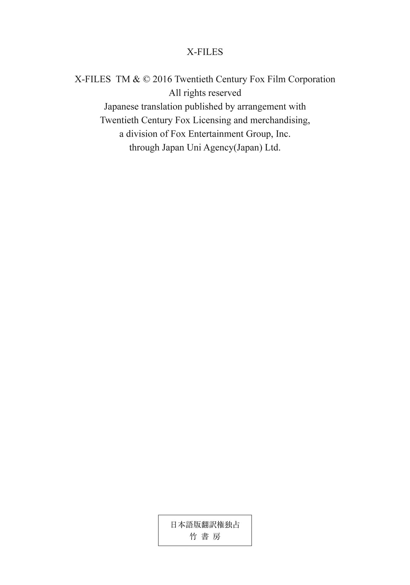
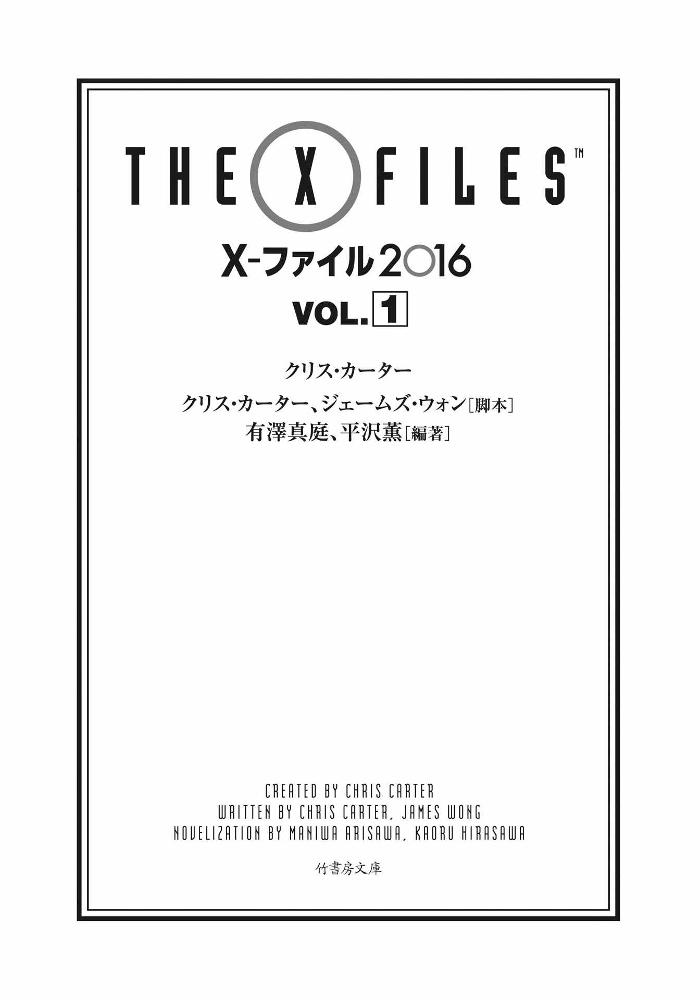
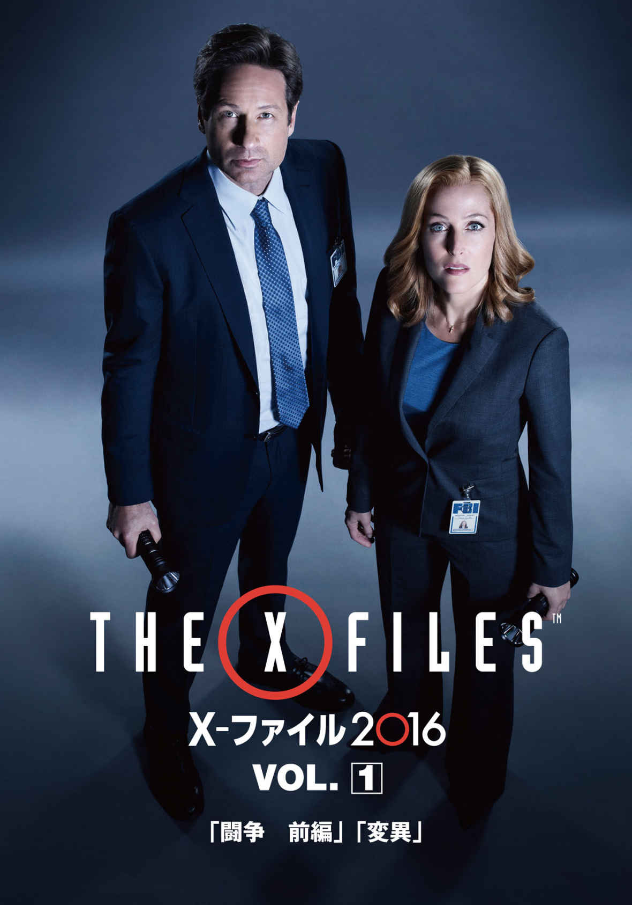
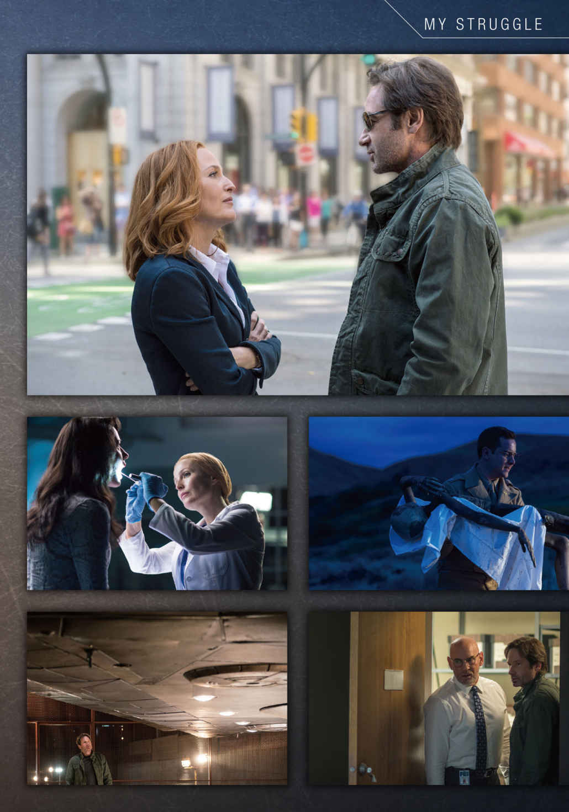
登場人物紹介
フォックス・モルダー .........かつてFBIで超常現象事件などを担当するX-ファイル課に所属し、異星人に関わる政府の陰謀を追っていた。後にFBIを離脱し、現在はどこにも所属していない。
ダナ・スカリー .........23年前、FBI入局後にX-ファイル課に配属された。医学博士の資格を持ち、科学的論理を重んじる。現在キリスト教系の病院に医師として勤務。
ウォルター・スキナー .........FBI副長官。モルダーとスカリーが在籍していた頃は二人の上司であり、数少ない味方だった。
タッド・オマリー .........動画ニュースサイトを運営し自らキャスターを務める保守派の陰謀論者。
スヴェタ .........異星人に誘拐された経験を持つ女性。
オーガスタ・ゴールドマン .........ニュージェニクス・テクノロジー社の施設創始者。
サンジェイ .........ニュージェニクス・テクノロジー社の研究員。
サマンサ・モルダー .........フォックス・モルダーの妹。彼女が8歳の時に異星人に誘拐されるのを、12歳のモルダーが目撃した。
ウィリアム .........モルダーとスカリーの息子。スカリーが乳幼児の頃に養子に出したため、現在の居場所は不明。現在15歳。
私の名前はダナ・キャサリン・スカリー。
このレポートは、誰かに提出を求められたものではない。ただ、私がこれまで体験してきたことを思い出すたびに、これから先にどんな出来事が起きるのかはまったく予測できないという思いが強くなり、これまで起きたことを何かの記録に残しておきたいと思ったのだ。それは、かつて私がＦＢＩ（連邦捜査局）のＸ─ファイル課に所属していた頃に、奇妙な事件を捜査するたびに報告書を作成してきたせいかもしれない。事件は常に解決したわけではなかったが、私はそれらの報告書を〝ひょっとしたらこの記録がこれから先、誰かの何かの役に立つかもしれない〟というごくわずかな可能性のために作成した。そして今も、それが無駄な行為だったとは思っていない。
まず、私が所属していた特殊な部署のことを記録しておかなくてはならない。私は大学で物理学と医学を学び、医師になる予定だったが、ＦＢＩにリクルートされ、ある部署に配属された。それはＦＢＩの地下にある、日の当たらない部署、Ｘ─ファイル課だ。そこは、〝Ｘ─ファイル〟と呼ばれる、これまでの科学では解明できない、いわば超常現象的な事件を専門に扱う部署。この課にすでに配属されていたのは、ただ一名。フォックス・モルダーという名前の捜査官で、周囲からは変人 と呼ばれている人物だった。
私がこの課に配属されたのは、建前は、こうした事件の捜査に、私の科学的、論理的な思考法と、物理学と医学の専門知識を活用するためだが、本当の目的は違う。ＦＢＩの上層部は、優秀な捜査官であるモルダーが、こうした超常現象的な事件の捜査に熱心になるあまり、組織の規則を破って暴走するのを懸念して、その暴走を阻止するために、そしてもし暴走した時にはそれを報告するために、いわば彼のお目付役として私をその部署に配置したのだ。なぜ上層部がそこまでモルダー捜査官の動向を気にしていたのかは、後に明らかになっていくが、配属された時点では、私は自分の役割は、組織の規律を破りがちな捜査官を、捜査の正しい軌道に導くことだと考えていた。
しかし、この課でさまざまな事件を体験したことで、それまで私が抱いていた、科学的思考法に対する信念と、ＦＢＩという組織に対する信頼の双方は、何度も試されることになった。この世界には、これまで判明している科学的事実だけでは解明できない出来事があるのではないか。政府は国民全体に対して、何かの陰謀を画策しているのではないか。自分が所属する組織ＦＢＩの内部にも、その陰謀に加担している者がいるのではないか。様々な事件を経るうちに、自分がそれまで抱いていた信念と、組織への信頼の双方は、次第に揺らいでいった。
私がそのように変化していった理由のひとつには、Ｘ─ファイル課の同僚、フォックス・モルダー捜査官の存在がある。彼は、常識では説明できない事件に出会うたびに、まず常識を取っ払い、一見ありえないと思われることがもし実際にあるとしたら、と発想するところから捜査を始める。時には、その超常現象が真実であって欲しい と思うあまり、事実を見誤っているのではないかとすら見えることもあった。
しかしそれも、モルダー捜査官が少年時代に体験したことを知ると納得がいく。彼がそのように考えるようになったのは、ある超常現象的な出来事が原因だった。彼が一二歳だったある夜、四歳年下の妹サマンサが彼の目の前で異常な状況で失 踪 を遂げたのだ。モルダーは、目の前に突然、眩 しい光が差し、怪しい人影が見え、妹がいなくなったという光景を見て、妹は異星人 による誘拐 の犠牲になったのだと考えるようになる。そして、生涯をかけて妹の失踪の原因を追求することを誓ってＦＢＩ捜査官になったのだ。エイリアンは実際に存在し、政府はそれについて隠 蔽 し、何かの陰謀を企てているのではないか。そして、もしエイリアンが実際に存在するとしたら、他のモンスターやミュータント、超能力者も存在しているのではないか。そう考えるところから、彼の超常現象に対する肯定的な姿勢は生じているのだ。
そして実際、モルダーの捜査によって少なくともエイリアンと政府の陰謀については、さまざまな事実が明らかになっていった。エイリアンの入植計画、エイリアンと共謀する人間たちの組織〝シンジケート〟、エイリアンと人間の混血による〝ハイブリット〟、エイリアンの工作員〝バウンティハンター〟、エイリアンによる生物兵器〝ブラックオイル〟、人間がある種のエイリアン・ウィルスに感染して生まれた〝スーパーソルジャー〟──それらの存在が次々に明かされていった。また、エイリアン集団は一種類ではなく、地球入植を計画するエイリアン集団とは別の、エイリアン集団も存在していた。そして政府側の陰謀組織の中心に〝スモーキングマン〟と呼ばれる男がいることも判明した。ただ、これらの陰謀の決定的な証拠はいつも失われてしまい、それを第三者に証明することは出来なかった。
また、こうした捜査は、モルダー捜査官自身にも影響を与えた。彼は捜査の過程で、彼の父親が政府とエイリアンの陰謀に関わっていたことを知る。そして、妹サマンサの失踪は、その陰謀に関連して起きたことも判明していった。そしてモルダー自身が、エイリアンのウィルスに感染させられたり、さらにはエイリアンにアブダクトされた後に意識不明で戻るという出来事も起きた。そして、陰謀の中心人物〝シガレット・スモーキングマン〟とモルダー捜査官の個人的な関係も判明する。この人物はかつてモルダー捜査官の母親と不倫しており、モルダーの生物学上の父親だという驚 愕 の事実が明らかになったのだ。そのシガレット・スモーキングマンも〝スーパーソルジャー〟の戦闘ヘリのミサイル攻撃によって爆死した。
そして、私自身もこうした捜査によって大きな影響を受けていった。私のエイリアンに対する意識の変化を決定的にしたのは、私自身がエイリアンにアブダクトされ、人体実験されるという体験をしたことだ。そのとき、自分に何が起きたのかは明確には覚えていない。しかし、捜査の途中で突然行方不明になり、戻ってきたときにはその間の記憶がなかった。そして、この経験の後に、私の身体が変化していることを知った。私は妊娠できない身体になっていたのだ。その一方で、自分と同じＤＮＡを持つ幼い少女の存在を知る。私は両親を失った彼女を養女にしたが、彼女はＤＮＡの謎を解き明かす前に死んでしまった。彼女の存在もエイリアンの陰謀と何か関係があるとしか思えない。
また、自分が癌 を発病していることがわかり、さらに自分と同じようにエイリアンにアブダクトされた女性たちの多くが、癌を患っていることを知った。この癌は後に治癒したが、その理由は不明のままだ。
そして何より驚いたのは、癌が治癒した後、不妊だったはずの私が子供を妊娠し、出産したことだ。子供の父親はモルダー捜査官だ。私たちは九年間に渡って一緒に捜査をする中でお互いを理解し、次第に愛し合うようになっていたのだ。
だが、生まれた息子ウィリアムには、普通の人間にはない能力が備わっていた。彼はまだ乳幼児なのに、念力で物体を自由に動かす能力を持っていたのだ。これは、私がエイリアンにアブダクトされた時に、私の身体に起きた何らかの変化が影響しているためだとしか考えられない。そして、政府が人間の女性たちを代理母にしてエイリアンと人間の〝ハイブリッド〟を産ませる実験を行っていたことも思い出さずにはいられない。
さらに、息子ウィリアムは、生まれた時から危険と隣り合わせだった。彼を特別な存在だと考えるカルト教団に誘拐されそうになり、また、〝スーパーソルジャー〟たちも彼に接近しようとしていた。モルダー捜査官もある事件を境に行方不明になっていた。そのような状況の中、ウィリアム自身の命を守るために、私は彼の素性を隠して養子に出すことにした。彼は、どこでどんな少年に成長しているのだろう。今でも、彼のことを思わない日はない。
息子ウィリアムの特殊能力は、今は失われているはずだ。彼を養子に出す前に、シガレット・スモーキングマンのもう一人の息子が、父への個人的な恨みから父の陰謀を阻止しようとしてウィリアムにワクチン接種を行ったので、特殊能力はなくなっているはずなのだ。だがずっと離れて暮らしているので、息子が現在どのような状態なのかは不明のままだ。
家族といえば、私の父母兄姉が、常に私を励まし、支えてくれたことも記録しておきたい。亡くなった父ウィリアムと私は、大の親友で、父の愛読書だったメルヴィルの『白鯨』のキャラクターの名前をとって、お互いにエイハブ船長、スターバックと呼び合っていた。また、姉メリッサは性格は私とは正反対で、夢想家でスピリチュアルなものが大好きだったが、私たちは仲良しだった。私がエイリアンにアブダクトされた後、昏 睡 状態で見つかった時も、彼女は母と一緒に私を見守ってくれた。彼女の死は今も私の心に大きな傷を残している。彼女は、私を抹殺しようとする敵に、私と間違えられて殺されてしまったのだから。兄ウィリアム も私を大切に思ってくれている。彼がモルダーの存在を快く思わなかったのは、彼が軍人で超常現象を信じない現実家肌だったからだけではなく、モルダーのせいで私が多忙なのではないかと心配してのことだった。弟のチャーリーが音信不通なのは残念だが、仲が悪いわけではない。そして、いつも私の理解者である、母マーガレット。私はＦＢＩ捜査官になってからも、よく実家に遊びに行っては彼女に甘えた。彼女はモルダーと私の関係についても理解してくれていて、息子ウィリアムが生まれた時には同居して育児を助けてくれた。いつも母には感謝している。
Ｘ─ファイル課に話を戻そう。モルダー捜査官が政府とエイリアンの陰謀を追求していけばいくほど、その陰謀の首謀者たちにとってはＸ─ファイル課と、モルダー捜査官の存在が邪魔になっていった。そのため、Ｘ─ファイル課は何度か閉鎖されたが、いつもこの課で取り扱うべき事件が起きて、再開されてきた。しかし二〇〇二年、ＦＢＩの政策転換を機にまたも閉鎖され、今も再開されていない。
またＦＢＩ局内には常に、あからさまな敵ではなくともモルダー捜査官や私、Ｘ─ファイル課を偏見の目で見て、敵視したり軽視したりする人達もいた。そんな中、副長官のウォルター・スキナーだけは常に私たちの味方でいてくれた。時に厳しいところもある人だが、私たちにとっては常に信頼できる存在だった。彼がいなければ、Ｘ─ファイル課の存続はなかっただろう。またモルダーの旧友で、いつも捜査に協力してくれた、隠謀マニアのオタクな三人組、ローン・ガンメンにも感謝している。あの人たちが亡くなって、もう会えないのはとてもさみしい。
Ｘ─ファイル課のメンバーにも変化があった。シガレット・スモーキングマンの息子であるジェフリー・スペンダーがこの課に配属されたこともあった。モルダー捜査官が行方不明になった時期には、新たにジョン・ドゲット捜査官が配属されて、私のパートナーとなった。また、私自身もずっと所属していたわけではない。私は息子の出産のためにＸ─ファイル課を離れてＦＢＩアカデミーの教官となり、代わりにモニカ・レイエス捜査官がＸ─ファイル課に配属された。彼らと私は互いに協力し合う間柄で、私の息子がカルト教団に狙われた時には、レイエス捜査官が私の逃走に同行してくれた。
そして、モルダー捜査官が逃亡生活に入ったのは、一六年前のことだ。モルダー捜査官は、極秘情報を入手するために政府の秘密施設に侵入し〝スーパーソルジャー〟を倒したが、この時に捕まって殺人犯として軍法会議にかけられた。私たちは彼を救うために証言したが、有罪判決が下った。そこで私たちは協力して、モルダー捜査官を脱出させたが、彼はその後、逃亡者として地下に潜伏することになったのだ。私は彼の潜伏生活に協力するため、ＦＢＩを辞めて医師となった。
だが、八年前、モルダーの状況が変化する事件が起きた。ＦＢＩ捜査官の失踪事件が起きて、その捜査には霊能力者を自称する元犯罪者が参加していた。そのため、ＦＢＩがこういったこと に詳しいモルダーに捜査への協力を求めたのだ。捜査には私も同行した。そして、事件の真相は解明され、この捜査に協力したことで、モルダーはお尋ね者ではなくなり、潜伏生活から解放された。その後は、モルダーと私の平穏な生活が続いていくはずだったのだが──。
１
夏の青空を、層積雲がゆったりと漂っていた。湿気を吸い込んで自重に堪えかねた雲は、今にも山の頂に届かんばかりだ。雲たちは渓谷を流れる川面に映った自分の姿に見惚 れ、いつまでもひとつところに留 まっている。
だしぬけに、天と地のランデブーに割って入るものがあった。上空のどこかで、爆発的なソニックブームが響いたと思うと、触手のような煙を吐き出しながら、巨大な円盤が雲間から飛び出してきた。
円盤は弧を描いて落ちてくると、一度前後に傾 いでから激しく地表に激突した。山肌に醜いかき傷と焼け焦げをこしらえながら、なおも前のめりに数マイル進んだのち──力尽きたように止まる。
突如としてはじまった異変は、一分足らず続いたあと、やはり唐突に止んだ。土 埃 と円盤から立ちのぼる白煙が空気を満たし、日光を遮 る。煙幕を透かし、空から墜落した円盤の後部が著 しく損傷しているのが、垣間見えた。もし近づく者がいたとすれば、かすかに断末魔をあげる機体の電気的なエンジン音を耳にし、突起部分のすすと土くれに覆われた舷 窓 から、内部にあがる火の手を目にしたはずだ。そして、窓に押しつけられた一本の手が、人間のものにしては違和感を覚えるいびつな形状 をしているのを、見逃しはしなかっただろう。
その手は、ずるずると力なく、窓を滑り落ちていった。
ハイ・デザート／ニューメキシコ州北西部──一九四七年
午後も遅くなると、層積雲は勢いを増し、山肌にまだら模様を作りながら次々に通り過ぎて行った。自然の川が数千年かかって彫りこんだ渓谷を、さらに削って敷いた単線レールの上を、ミミズのように長く連なった貨物列車が雲よりも悠長に走っている。
より早く移動したければ、なだらかな丘陵の比較的平坦な箇所に舗装された道路が利用できた。その埃っぽい道路をオリーヴグリーンの軍用バスが一台、取り締まる者など誰もいないのに、律儀に法定速度を守って走行していた。
乗客は二名。手前に座る陸軍将校はどことなく心もとない表情で、ぼんやりと前を見つめている。窓外の景色を眺めたくても、どういう理 由 か乗客席の窓はすべてラシャ紙を貼 って目隠しされているため、現在地を確かめることもできない。銀縁の丸眼鏡をかけ、クルーカットのために広い額が一層目立つその男の、まだ若さの残るふっくらした輪郭の左頰 には、特徴的なイボが鎮座していた。
若き将校はしびれを切らしたように、もう一人の乗客を肩越しに振り返ってたずねた。
「あとどれくらいだ？」
彼から二列置いた奥の席に座る黒服の男が、腕時計に目をやった。
「もう目と鼻の先です、ドクター」
禿 げ頭で細身の黒服男は、陰気くさい表情を一ミリも動かさず、事務的に答えた。長年その表情を保ってきたために、表情筋が固まってしまったに違いないと、軍医の将校は思った。ネクタイもスーツも黒を着ているところから軍人ではなさそうだが、かといって民間人では持ちえない、きなくささ を発散させてもいた。だが身分を明かすようなものは、何も身につけていない。
軍医将校は前に向きなおると、黒服の男には見えないように、小さなため息をついた。
同乗者の言葉通り、ふいにバスはアスファルトを逸れ、有刺鉄線が雑に張られたいかにも急ごしらえな柵 の手前で停車した。
医療器具の入った黒革の鞄 を片手に、軍帽を脇 に挟んでバスを下りた将校は、しばらくぶりの新鮮な外気を吸い込んだ。日は傾きかけ、風が肌寒く感じられる。だが、やっと周囲の景色を見渡すチャンスに恵まれたというのに、山あいの平和な景色を楽しむ間もあらばこそ、眼前の光景に目が釘 付 けになった。
前方に、円盤型の巨大な何か が鋭利な角度で地面に突き刺さっていた。その角度から、円盤は空から落ちて、地面に激突したことが推測できる。おそらく飛行中に不測の事態が生じたのだろう、未知の飛行物体の後部は吹き飛んだようになくなっており、いまだに煙のくすぶる内部の骨組みが一部露出していた。墜落して、まだいくらも経っていないようだ。
円盤はいくつもの投光器に囲まれ、その周りには軍用車が数台停まっており、銃を構えた軍人たちが警備に当たっていた。だが、山あいの不毛な土地は、見渡す限り攻撃を仕掛ける者はおろか、野次馬の気配も、報道機関のロゴが入った車 輛 の影も形もありはしなかった。だとしても、いつ誰かに現場を嗅 ぎつかれるかもわからない。とりわけ、戦後冷戦状態のソ連のスパイに対しては、いくら警戒してもし過ぎることはない。作戦は 迅速に遂行せねばならなかった。将校は、バスの目隠しの理由にはじめて合点がいった。だが作戦って、なんだ？ この円盤の正体は？ 敵国の新兵器か？ そして、軍医である自分が呼ばれた理由はなんなのだろう。負傷者の手当だろうか──。
呆 然 と立ちつくす将校のかたわらに、バスから降りた黒服の男が並んだ。禿げ頭にはいつの間にかソフト帽が乗っていた。自分より上背の黒服の男を仰いだ将校は、口をあんぐり開けたまま、頭にうずまく疑問がうまく言葉にならない。黒服の男はそんな将校を一顧だにせず、前方を見据えて言った。
「こちらです。急いで」
強風にスーツの裾 をはためかせ、機械的に墜落現場に向かう黒服の男について、若き将校は夢遊病者のようなおぼつかない足取りであとに続いた。だが歩を進めるうち、最初の衝撃が薄れ、彼本来の医師としての冷静な分析力が戻ってきた。近づくにつれ、機体の構造がよく見える。
円盤は、中央部分がプディングのように突起しており、材質は金属のように見えるが、外殻全体に、マス目状の溝が入っていた。機体の下側はやはり同心円状に膨 らみ、中心部にはスクリューに似た構造物が覗 いている。
円盤が大地をえぐってできた小山に上官らしき軍人が立ち、スコップを持って発掘作業にあたる兵士たちを監督していた。彼らは将校同様、ここから一二〇キロほど離れたロズウェル陸軍航空基地から派遣されて来ていた。
黒服の男に案内されるまま、軍用車や兵士たちの脇を通り過ぎながら、将校はこの光景の意味するもの──人類の歴史をひっくり返すかもしれぬ出来事──について、おぼろけながら理解しはじめた。
２
〝悲しみの聖母〟病院／ワシントンＤ．Ｃ．──現代
手術室では、四名の医師がオペの準備にかかっていた。スツールに座った麻酔医の肉づきのいいピンと張った背中がこちらを向いている。空飛ぶ円盤を思わせる丸い無影灯に照らされた手術台。そこに横たわる患者の顔は、医師の身体に隠れて見えない。しかし、全身を覆った青いドレープの盛り上がり具合から、おそらく子どもであることがうかがえる。
手術室に隣接した準備室から、ペールグリーンの格子枠に縁取られたガラス窓越しに、その様子を眺める医師がいた。ストロベリー・ブロンドの髪を後ろに束ねたその医師は、窓から目を離すと視線を上に向け、天井近くの壁に設置された三台のモニター画面を見つめた。画面には患者のデータが表示されており、その一台にはアフリカ系アメリカ人の少年の写真が映っている。イライジャ・ウィリアム──その少年の顔には、不思議なことに左右の耳がなかった。
手術着 を着た看護師が準備室の戸口に立ち、画面に見入るポニーテールの女医に声をかけた。
「すみません、スカリー先生」
これから取りかかる大がかりな手術に意識を集中させていたダナ・スカリーは、自分の名を呼ばれたことに気がつくまでに、数秒を要した。
「どうしたの？」
「お電話が入っています」
マスクをして手術用ガウンを着た二名の医師が、看護師の背後を通り過ぎて手術室に入っていく。ラテックス製の医療用グローブをはめた両手の平を上にかざしているため、まるでうやうやしい儀式めいて見えた。
「これからオペなんだけど」
声に若干のいら立ちをにじませ、スカリーが返す。ダナ・スカリーが前の職場を辞め、医師として働きはじめてから、もう七年になる。手術室看護師のサンディープとも長いつき合いなのだから、少しは気を利かせて、伝言を聞いておいてくれればいいのに。
「そう言ったんですが......その方が、大事な用件だからと言い張られまして」
「誰なの？」
「ウォルター・スキナーという人です。ＦＢＩの副長官だとおっしゃってます」
スキナー......。その名前を耳にしたのは、何年ぶりだろうか。
一瞬、ダナ・スカリーは医師としての自分を忘れそうになった。故あって、スキナー副長官との、そしてＦＢＩとの縁を切って久しい自分に、向こうから連絡を寄こしてくるとは──。その理由にピンとこないほど、スカリー元 ＦＢＩ特別捜査官の勘は、さびついてはいなかった。
３
片田舎の一軒家／ヴァージニア州
その部屋は、とにかく雑然としていた。住居の一室というよりは、大学教授にあてがわれたキャンパス内の個室のようだ。そんな印象を与えるのはなによりもまず、壁という壁に貼られた切り抜きのせいだろう。大判の世界地図のポスター──要所要所に虫ピンが刺さり、地名と年月日の書かれたタグが貼られている──をはじめ、ＵＦＯや超常現象、最先端科学に関する新聞・雑誌類から切り抜いた記事や写真等が隙 間 なく貼られ、壁の色もわからないほどだ。壁面のコラージュに負けないだけの存在感を放つ家具といえば、ネームプレートの付いたリンゴ箱大の引き出しが、二列に並んだ木製のファイルキャビネットと、実用一点張りのどっしりとした木製の両袖 机くらいなものだ。
壁のスペースが足りなくなったのか、四二インチのフラットスクリーンテレビにまでびっしりと写真や切り抜きが留めてある。そのうちの一枚は森林上空に円盤型ＵＦＯが浮かぶ写真に、〈I WANTA TO BELIEVE（私は信じたい）〉というフレーズが印刷されている。この部屋の住人は、テレビ番組は観ないのだろうか──。いや、そうでもなさそうだ。書き物机の上に置かれたラップトップ・コンピューターで男が観ているのは、テレビの深夜トーク番組『ジミー・キンメル・ライブ！』のクリップだった。過去に放送されたアーカイブの一本だろう。
この回のゲストは、バラク・オバマ第四十四代アメリカ合衆国大統領だ。
こういった番組に大物政治家が出演するのは珍しいことではない。とりわけ四年に一度の大統領選挙が近づくにつれ、政治に興味のない層にも名前と顔を売る絶好のチャンスとばかり、候補者がこぞってワイドショーやトークショーに出演したがる。ときどき政治家なのかタレントなのかよくわからない輩 もいるが、二度の大統領選挙を勝ち抜き、二期目を任期中のオバマに、自分を売りこむ必要はもはやなかった。ロサンゼルスを訪れたのはとあるキャンペーンのための資金集めが目的で、ハリウッドのＡＢＣスタジオに設けられた番組専用セットのゲスト用ソファに体を預け、長い足をゆったりと組んでいる。すっかりごま塩頭になりこそすれ、スリムな体にスーツを粋に着こなし、俊敏そうな頭脳と物腰は、六年前といささかも変わらない。
コメディアン出身の番組ホスト、ジミー・キンメルは、大統領選挙と同じぐらいし烈な深夜のトークショー枠を十年以上死守してきた手 練 れであり、たとえ合衆国最高司令官が相手でも、いつもの軽妙なトークでゲストをからかっている。
「もし僕が大統領になったら、就任式で聖書に置いた手が冷めやらぬうちに、エリア51 とＵＦＯの機密ファイルがしまわれた場所へすっ飛んで行って、すべての秘密を知ろうとしますけど」
大統領は白い歯を見せて笑うと、当意即妙に返した。
「エイリアンの恐ろしさを知らないな」
これはキンメル得意の定番ジョークだ。以前に出演したビル・クリントン元大統領にも、まったく同じ質問をしている。第四十二代大統領は、「真っ先にそのことを調べたがエリア51 にエイリアンは存在しなかったよ」と冗談まじりに答えている。
番組クリップを観ていた男は、ラップトップの脇に置いたスマートフォンが鳴り出すか出さないかのタイミングで、素早く取りあげて電話に出た。
「僕の人生がジョークのオチになってるぞ。世の中はどうなっちまったんだ、スカリー」
そう言うと、フォックス・モルダーは黄色い軸の鉛筆をＵＦＯのポスターを目がけて投げつけたが、固いテレビ画面に当たってあえなくはね返された。
ＦＢＩ捜査官時代、一〇年間パートナーだった人物のこれっぽっちも変わらないもの言いに、スカリーは思わず顔をほころばせた。
スカリーは、手術室を出るが早いかスマートフォンを取りあげた。まだスクラブ姿のままで、小さな十字架のネックレスをかけた胸元には、数カ所血が飛び散っている。手術室の両開きドアを背にして立ち、ドアについた窓からは、事後処理をしている医師や看護師の姿が見える。
「スキナー副長官が、あなたを捜してるわ」
「直接僕に電話を寄こせばいいのに」
ときどき、承知のうえでわざと察しの悪い振りをするところも、昔通りだ。
「スキナーはあなたの連絡先を知らないのよ、モルダー。私だってこの番号が通じるか、ヒヤヒヤものだったのよ」
そして、相手がどんな出方をしようとスカリーが常に直球勝負なのも、相変わらずだ。
「スキナーがいまさら僕になんの用がある？」
モルダーは実際、スキナーが自分に会いたがる理由の見当がつきかねるのだろう。
ＦＢＩ時代、ウォルター・スキナー副長官はモルダーとスカリーの上司だった。超常現象とおぼしき不可解な事件、常識では考えられない事件を専門に扱い、捜査局内では異端視されていたＸ─ファイル課のふたりにとって、スキナーは唯一の味方と言ってもよかった。体制側の人間で、はっきりいって頭は固いが、それだけにいったん納得すれば、とことん肩入れをしてくれる。誰が敵かわからないＦＢＩ局内において、信用のおける貴重な存在だ。彼のおかげで首が繫 がったことも、命を救われたことも、一度や二度ではない。
だが、Ｘ─ファイル事件の捜査中にモルダーは敵の術中にはまり、殺人犯としてＦＢＩから指名手配を受ける身になってしまった。もともとモルダーありきだったＸ─ファイル課は閉鎖、モルダーはここヴァージニアの片田舎にある一軒家に潜伏していた。八年前、とある捜査に協力するのと引き換えに、ＦＢＩは彼の指名手配を解除したが、モルダーは今でもこの家に住み続けている。
スキナーと最後に会ったのも、殺人犯の汚名をすすいだその事件──透視能力を持った元司祭のからむ、失踪したＦＢＩ捜査官の行方を追っていたときだ。またしても、スキナーに危機一髪のところを救われた。もう二度と彼に関わることはあるまいと、モルダーは思っていた。そして、その方が双方のために良いことだ、と。
「副長官はタッド・オマリーという男のネット番組を観たことがあるか、たずねていたわ。どうやらその人、ＦＢＩを通じて私たちに接触しようとしたらしいのよ」
なんだ、スキナーが自分に会いたがっていると思ったのは、早合点だったのか。モルダーは少しだけ残念に思った。
「ちょっと待ってくれ。今チェックしてみるよ」
モルダーはスマートフォンを左手に持ちかえ、ラップトップ・パソコンのキーボードに右手一本で〝タッド・オマリー〟と打ち込む。人気コンテンツのようで、検索のトップに表示された。一番上のリンクをクリックし、映像を再生させる。
高価そうなスーツをピシリと着こなした男が、巨大なスクリーンを背にして時事問題を伝えている。黒い天板に赤い螢 光 ラインの入ったスタイリッシュなＶ字型のデスクには『タッド・オマリーの真実を追え！』という番組のタイトルロゴの入ったコーヒーマグと、ガイコツ型のスタンドマイクが置かれ、まじめな ニュース番組であることを主張していた。オンライン専門の時事ニュース配信番組のようだ。問題は、看板ニュースキャスターのオマリーが、どういう傾向の思想の持ち主かだ。保守系、リベラル系、宗教系、もしくはＩＴオタク 系？ セットの雰囲気と、少ない小道具で効果をあげる演出からすると、リベラル派のギーク系だろうか。
番組ロゴをでかでかと映していたスクリーンが、煙をあげる世界貿易センタービルの映像に切り替わると同時に、オマリーは説得力のある語り口でカメラに向かって話しかけた。
〈つまり、こういうことです。テレビのリベラル派メディアは皆さんの生活、自由、神から与えられた武器を携帯する権利について、噓 八百を並べ立てているのです〉
違った。銃規制を目のかたきにする保守系だ。
「なんで僕が、こんなボケナス野郎の番組を観なきゃいけないんだ？ スカリー」
モルダーは鼻を鳴らし、タッド・オマリーの意見への関心度を表明した。ラップトップの中のオマリーが続ける。
〈９・１１は、政府のヤラセ作戦でした。来たる第三次世界大戦への肩ならしに過ぎなかったのです。注意して聞いてください。これは、ロズウェルのＵＦＯ墜落事件に端を発する陰謀であり......〉
待て待て。今、〝ロズウェル〟と言ったのか？ 極右のおぼっちゃんがＵＦＯや政府の陰謀を口にするなんて、本当に世も末だ。コイツ、マジかな？ ははあわかったぞ。話のわかる保守派を演じているのか。〝ネット民〟が食いつきそうなネタだものな──。ひとつ、科学信奉派代表・スカリー女史の意見を聞いてみようじゃないか。モルダーはスマートフォンの向こうのスカリーに問いかける。
「君は、ＵＦＯとは縁を切ったと思ってたよ、スカリー。確か、自分という存在の重しだって、言ってなかったかな」
「私はただ、ことづてを頼まれただけよ、モルダー。オマリーはとにかく、しきりにあなたと会いたがっているみたい」
「スキナーに手配するよう言ってくれ」
スカリーが、びっくりしたような声を出す。モルダーが断るものと思っていたようだ。
「......本気？」
フォックス・モルダーはゆっくりと椅 子 を回転させて、オマリーから顔を背けた。画面の中のオマリーに聞かれちゃマズいとでもいうように、スマートフォンに向かってぼそぼそと話しかける。
「それと、僕をひとりで行かせるみたいな口振りはよせよ」
４
市街／ワシントンＤ．Ｃ．
晴れ渡った昼下がり、スカリーは往来の激しい目抜き通りの道ばたに腕を組んで立ち、緑生い茂る街路樹の先に、でんと構える国会議事堂を眺めるともなしに眺めていた。セミロングに伸ばした根元を緩めにカールさせたストロベリー・ブロンドの髪が、そよ風にたなびく。
半世紀以上前の一九五二年、飛行禁止区域である議事堂上空を、複数のＵＦＯが飛び回る姿が目撃され、一時世間が騒然としたこともあるが、今このとき飛行禁止の令を破っているものといえば、空を舞う一羽の鳥ぐらいだった。そんな昔のＵＦＯ騒ぎのことなどをつい考えてしまうのは、待ち合わせ相手のせいかもしれない──。スカリーはスマートフォンで時間を確認した。そろそろ現れてもいい頃だ。モルダーは多分地下鉄を使うはずだと当たりをつけ、出入り口の方向に目をやる。
白いマニッシュなブラウスに紺のジャケット、グレイのタイトスカートを履いたスカリーは、今でもじゅうぶんＦＢＩ捜査官で通りそうだった。だが捜査官を退き、天職ともいうべき医師の仕事についてかなり経つ。年齢的には「中年」と呼ばれる年代に入って久しいが、体にはぜい肉ひとつついておらず、若い頃は意志の強そうな顎 の印象を和らげていた女性らしい頰の膨らみも、年を重ねるにつれて鋭角的になり、澄んだブルーグリーンの瞳 とともに、どことなく憂いを含んだ落ち着きをかもしだしていた。
背後で車の停まる音がして、スカリーは車道を振り返った。すると、見慣れないセダンの助手席から、モルダーが出て来るところだった。
「ウーバーで来たの？」
スカリーは自分の予想が外れ、意外そうな声を出す。ウーバーとは、スマートフォンアプリを利用した配車サービスのことだ。二〇〇九年にサンフランシスコでスタートアップしてからその手軽さが受け、各都市で急速に普及してきた。タクシーのみならず一般人の自家用車を活用しているのが目新しかった。
にわか運転手は自分のセダンから見知らぬ乗客を降ろすと、すぐに走り去った。
「ヒッチハイクさ」
怪 訝 な顔をするスカリーに、モルダーはおどけてみせた。
「そんな顔しなさんな、冗談だよ」
しばらくぶりに会った元パートナーの全身に、スカリーは素早く目を走らせた。サングラスをかけているので表情はよくわからないが、うっすらと無 精 髭 を生やし、カーキ色の着古したミリタリージャケットを羽織ったモルダーは、職にあぶれて昼日なかから街なかをぶらつくような連中と、一見大差ない。もっとも、ここ十三年ほど定職についていないのは、事実だったが。
「あなたが心配だわ、モルダー」
スカリーが気にしているのは、身だしなみのだらしなさではなく、モルダーの健康と精神状態だ。Ｇパンがなんだかだぶついているけど、ちゃんとした食事はとっているのかしら。また部屋に閉じこもって、ヒマワリの種ばっかり食べているんじゃないでしょうね......。
「心配にはおよばないよ、先 生 。自分で自分の面倒ぐらい見れる」
モルダーが、口出し無用とばかりに顎を上げた。〝ドクター〟スカリーは「一ミリも信じませんから」というように、相手よりもさらに顎を上げて、ねめつけた。
「たまにはあの狭苦しい家から、出た方がいいわよ」
「確かに君は、あの家を出てよかったみたいだね」
にこやかに、モルダーが蜂 の一刺しを見舞う。一瞬、スカリーは返す言葉に詰まった。モルダーが指摘した通り、一時はともに暮らしたあの小さな家を、自分は出て行った。だがそれは双方納得づくの上であり、何年も前の話だ。スカリーは、ここはさらりと受け流すことにした。
「なにはともあれあなたに会えて嬉 しいわ」
「なにはともあれ会う理由が見つかって嬉しいよ」モルダーも素直に返した。
これで、休戦協定が結ばれた。お互いに相手を認め、ニヤリとする。せわしない往来で黙って見つめあうと、数年分の空白が一瞬で埋まった。ふたりがともに過ごした時間はそれだけ濃く、結びつきはそれだけ深いものだった。だが、どちらかが次の言葉を発する前に、黒塗りのリムジンが音もなく緑石に寄せてきて、モルダーの乗ってきた車が去ったあとの空間を埋めた。
サングラスをかけたスーツ姿のアフリカ系アメリカ人が運転席から降りると、両手を前に揃 えてその場に立った。運転手にしてはやけに体格がよく、片耳にイヤホンをつけている。タッド・オマリーが道路側の後部座席から出て来ると、素早く車を回って、歩道に立つモルダーとスカリーに向かってやって来た。まるでたった今、自分のオンライン・ニュース番組から抜け出てきたかのようなスーツ姿で、分刻みどころか秒単位でスケジュールを立てて毎日を送る人種独特の、無駄のないきびきびした動作をしている。
「フォックス・モルダーさん？」
「そうだ」
剃 り残しひとつない口元に、好感度百パーセントの笑みを浮かべ、オマリーがさっと手を差し出した。
「タッド・オマリーです」モルダーと政治家よろしく握手を交わし、くるっとスカリーに顔を向ける。「そして、あなたが元捜査官のダナ・スカリーさんですね」
「よろしく」なんだか選挙活動中の若手議員みたいだとわとスカリーは思いつつ、差し出された手を握ると、胴長 のリムジンに目をやった。
「ずいぶん劇的なご登場ね」
「気をつけろ。もっと地味なやつにだって、スカリーはぶっ放してたぞ」
ぐっと庶民的な手段で登場したモルダーが、初対面の相手に忠告してやる。
「面白いな。評判通りの方だ」
オマリーが目をキラキラさせ、白い歯を見せて微笑んだ。モルダーは肩をすくめた。スカリーが「モルダーったら」という目配せを送る。オマリーと並ぶと、モルダーの無精髭が余計に目についた。髭を剃ってもっとパリッとした格好をさせたら、彼だってオマリーに負けないぐらい颯 爽 として見えるのに。
「どうぞ乗ってください」
オマリーが礼儀正しくふたりを促すと、モルダーは言下に断った。
「話をするのは構わないが、ここで頼むよ。オマリーさん」
「用心に越したことはありません。〝ダートボックス〟と呼ばれる機能を搭載した偵察機を低空飛行させ、内密の話を録音する輩 がいますからね」
ふたりは同時に空を見上げたが、上空を飛行する物体は、鳥も含めてどこにも見あたらなかった。
「そんなものを誰が飛ばしているの？」
眩 しさに目をすがめ、スカリーがたずねた。
「残念ながら、推測するしかありません」
モルダーとスカリーはふたりとも黙りこんだ。モルダーのほうは、何かを思いついたようだ。
「さあ、行きましょう」
運転手兼ボディガードがオマリーのためにストレッチ・リムジンのドアを開けた。スカリーはため息まじりにモルダーをちらっと見てからオマリーに続く。最後にモルダーが乗りこんだ。
三人を乗せ、リムジンは街なかを静かに走りはじめた。
「初顔合わせの記念に......」
運転席と背中合わせに座ったオマリーが、備え付けのワインクーラーに手をのばし、氷に浸かっているルイ・モントルイユのどっしりしたシャンパンボトルを取り上げた。
「のどを潤しませんか？」
サングラスを外してねずみ色のヘンリーネックシャツにひっかけたモルダーが、やんわり断った。
「僕は遠慮しとく。スカリーは？」
スカリーも首を横に振る。シャンパンの力は借りずにリラックスしようと足を組んだが、ふかふかの座席でおさまりが悪そうに、両手をもみしだいている。スカリーは、さきほどのオマリーの発言がひっかかっていた。
「あなたには敵がいらっしゃるようね」
「好きで作ってるわけじゃありませんけどね、ダナ 」
如才ない笑顔で如才ない返答をするオマリーに、スカリーは微笑みを返す。〝ダナ〟とファーストネームで呼ばれ、内心、リムジンのふかふかの座席のように、この男に対しておさまりの悪さを感じていた。
オマリーの向かいに座るモルダーが、口をへの字にして窓の開閉ボタンを何度も押している。だが、ちっとも反応がない。
「ちょっとばかり暑いんだが」
オマリーが首を傾けて、窓の外を見た。モルダーの席は日差しをもろに受けて確かに暑そうだが、オマリーの側は影になっていたため、気が回らなかった。
「ああ、すみません......。冷房を入れましょう。その窓は、開かないんですよ」笑顔でさらりと付け加える。「防弾仕様になってまして」
モルダーが嬉しそうに眉 を吊 り上げた。
「銃を持ったリベラル派の男が、いつヒンクリーに豹 変 して、あんたを襲うかもわからないからか？」
オマリーが自分のニュース番組で言及した銃規制問題を持ちだして、モルダーがあてこする。ジョン・ヒンクリーは、レーガン大統領を狙 撃 した人物だ。もっとも動機は政治信条の上ではなく、憧 れの女優の気を引くため、というものだったが。
元パートナーの無礼の尻 ぬぐいは昔から慣れっこのスカリーが、ことさらビジネスライクにたずねた。
「彼は無視してちょうだい。それで、ご相談というのは？ オマリーさん」
オマリーは下を向いて、息を吸い込んだ。ビジネスに入る前に、自分に対する偏見と警戒心を解いてもらう必要が、彼にはあった。
「私は付け焼き刃のＵＦＯオタクとは違います、モルダーさん。あなた同様、本当に信じている のです」
こんなやつにお仲間扱いされるのはゴメンだとばかりに、間髪置かずモルダーが訂正する。
「いや、僕は信じたい と願ってるだけだ。どういうわけか、物証がなかなか手に入れにくくてね」
オマリーは、水色の目をきらきらさせた。相手が手 強 いほど燃えるたちなのだろう。気むずかしいゲストから本音を引き出すインタビュアー然として切り返す。
「あなたはＸ─ファイル課を背 負 って立ち、活動していたじゃありませんか。あなたこそＸ─ファイルそのものだ。本だって書こうと思えば書けるでしょう」
モルダーがきっぱり否定する。
「残念ながら、その本は焚 書 になったんだ」
オマリーには単なるはぐらかしの言葉に聞こえたかもしれないが、スカリーははっとした。以前、スカリーはモルダーに本を書くよう勧めたことがある。それは、モルダーがＦＢＩのお尋ね者となり逃亡生活を送っていたときのことだ。底なしの闇 の奥へ、手探りで進むような無謀な真似からはもう身を引き、これまでの体験を本にまとめて学問的なアプローチをすればいいではないか、と説得しようとした。だがモルダーは当時、自分のやり方を変えようとはしなかった。たとえ、スカリーからの頼みでも、彼の信条として聞き入れるわけにはいかなかったのだ。
あの時の自分の言葉を、モルダーは覚えていた。あれは過酷な選択だった。モルダーにとっても、スカリーにとっても。今さら部外者に蒸し返すような真似はして欲しくない。
「Ｘ─ファイル課も封印されて久しいわ。良くも悪くも、人は......前を向いて生きていきませんとね」
スカリーはオマリーをひたと見据えて微笑み、二の句を封じた。
ところが当のモルダーが、からんできた。
「そうだ......。良くも悪くも、ね」
やけに励ますような声音で言う。スカリーは笑顔を貼りつかせたまま、息を吸い込んだ。
ふたりの間の行間を読んだオマリーが、軌道修正をはかろうとして、急いで言った。
「それはさておくとしてですね」
顔ごとスカリーに視線を向けていたモルダーが、オマリーに向きなおる。
「さておかない のはなんなんだ、オマリーさん？ 保守派のコメンテーターが、なぜ自分はＵＦＯ信者で９・１１が政府のヤラセ作戦だなんて言い出すんだ？」
スカリーは矛先がオマリーに戻って、息をついた。
オマリーは目をパチクリさせた。
「私の主張は本心じゃないと言いたいのですか？」
「陰謀説は売れるからね......防弾リムジンが買えるぐらいに」そう言ってモルダーはリムジンの豪華な内装を叩 いた。
ご本家からの挑発を、面白がっているような調子でオマリーが聞いた。
「視聴率のためにやっていると？」
「どうせ、ネット版『ザ・オライリー・ファクター』辺りを狙 ってるんだろ、ギーク要素を取り入れて。新味はないね」
ふたりのやりとりを興味深そうに見守るスカリーの視線を意識しつつ、オマリーは鼻を膨らませた。
「ビル・オライリーが知っている〝真実〟なんて、スズメの涙ほどもありませんよ」
保守系のニュース専門局ＦＯＸニュースの看板番組のホストとして、長年一目を置かれてきた論客ビル・オライリーを歯 牙 にもかけないもの言いに、モルダーとスカリーは顔を見合わせた。
オマリーは、オライリーを引き合いに中傷されるのは慣れっこだった。オライリーとは真逆の、超常現象肯定派のラジオ番組ホスト、アート・ベルの二番煎 じと揶 揄 されることも多い。
そろそろオマリーへの判決を下す頃合いだと判断し、モルダーがぬきうち問題 を出した。
「ケリー・ケイヒル事件」
ケリー・ケイヒル事件は、ロズウェル事件のように一般人でも小耳に挟んだことがあるようなポピュラーな事件ではないが、仮にもＵＦＯに興味のある者ならば、この事件は当然押さえているはずだ。
オマリーはひと呼吸間をとってから、ニュース原稿を読みあげるように、すらすらと答えた。
「オーストラリアのヴィクトリアに住む主婦のケリー・ケイヒルは、夫と車で帰宅中、ＵＦＯに遭遇した。そのとき、夫妻は一時間分の記憶を失っている。ケリーはその後、へそのそばに三角形のあざが出来ているのを見つけ、さらにはひどい腹痛に見舞われて入院した」
リムジンが二ブロック分も進むか進まないかのうちに、オマリーは説明を終えていた。モルダーとスカリーは、改めて顔を見合わせた。正解だ。
「申しあげた通り......私の関心は本物です。足りないのは、あなた方の専門知識だ」
スカリーが小首を傾げた。
「専門知識といっても、なんのですか？」
オマリーの口元から、初めて笑みが消えた。
「私はこれまでにも情報部方面の怒りをずいぶんと買ってきたが、今全面的に準備しているのは......おそらく有史はじまって以来の、最も邪悪な陰謀を暴くのが目的です」
スカリーが目を剝 く。
「ずいぶん大胆なご高説だわね、オマリーさん。なぜ発表をためらってらっしゃるの？」
柄にもなく、オマリーは持って回った言い方をした。
「危ない橋を渡るにあたり、命綱は太いほどいいでしょう？」
モルダーがスカリーに目配せをした。
「僕たちに、何か を見せたいってさ」
スカリーはオマリーにそうなの？ と目で聞いた。
「何かと......誰か をです」
オマリーが頷 いて、情報を補足した。
いつの間にか、リムジンはワシントンの市街を抜け、高速道路をひた走っていた。
５
ロー・ムーア／ヴァージニア州
森林地帯を走る一本の砂利道を、黒塗りのストレッチ・リムジンが砂ぼこりをあげながら走ってくる。ワシントンＤＣをあとにしたオマリーの車は、ヴァージニア州に向かった。ジョージ・ワシントン国立森林公園を通り過ぎ、やがて樹木が段々とまばらになっていって草地がとって変わる頃、砂利道の脇に、赤い屋根の小さな平屋がぽつんと建っているのが見えた。リムジンが平家の前の芝生で止まり、モルダーとスカリー、オマリーが左右のドアから降りてくる。革張りのふかふかした座席は快適だったが、三時間あまりのドライブのあとでは、田舎の新鮮な空気がひときわ心地よい。
眩 しそうに空を見上げたモルダーは、どうせすぐに屋内に入ると思い、サングラスは胸元にひっかけたままにした。
スカリーは目の前の一軒家を観察した。外壁の白いペンキは剝 げかけて、そろそろ塗り直してもよさそうだったが、ポーチ前の植えこみや、ひさしの下に吊 した草花は手入れが行き届いていた。ポーチには、藤椅子や揺り椅子がいくつか並んでいる。椅子のひとつに腰をかけ、のんびり景色を見ながらお茶でもすすったらば、さぞや気持ちがいいだろう。スカリーは以前モルダーと一緒に暮らした家を思い出した。こことよく似た平屋の一軒家で、ポーチに置いたベンチにモルダーとよく腰を下ろし、夕日が森の向こうに沈んで行くところや、刻々と変わる空の色を眺めたものだ。
「こんなところなら、宇宙人にだって探し当てられないわね。どうやって見つけたの、オマリーさん？」
「私のような立場にいると、しばしば興味深い人物が向こうから接触してくるのです」
窓に格 子 縞 のカーテンの引かれたドアを、オマリーが軽くノックすると、意外なことに、顔を出したのは妙齢の女性だった。豊かなブルネットの美しい女性だ。淡いピンク色の、膝 丈 まであるカーディガンをふんわり羽織っている。その表情からは、客人たちを待ちかねていたのがうかがえる。
「こちらはスヴェタ嬢です」
ポーチに立つモルダーとスカリーに、オマリーが引きあわせる。
「スヴェタ、こちらはダナ・スカリーとフォックス・モルダー」
「よろしく。はるばるようこそ」
人なつっこそうな笑顔を浮かべ、スヴェタが順々に握手をする。スラブ訛 のある、ハスキーな声だ。オマリーがほがらかに打ち明けた。
「スヴェタが、あなたがたに連絡を取るよう提案したのです」
困惑して、モルダーが聞いた。
「どこで僕たちのことを知ったんですか？」
「きっと、私のことは覚えていないでしょうね」
スヴェタが懐かしい知人に向けるような、切なそうな笑顔でモルダーを見つめる。
怪 訝 な顔でスカリーがこちらを振り返るのを目の端で捉えながら、モルダーが答えた。
「ええ、記憶にないですね」
多少の期待を瞳に浮かべ、スヴェタが説明した。
「小さい時、あなたは私と家族の話を聞きにいらしたの」
モルダーは思い出そうと、目をしばたいた。不首尾に終わったらしく、スカリーと目を見交わす。
「私が初めて誘拐 されたときです」
スヴェタはその頃、まだ一〇歳にも満たなかったが、スーツを着たフォックス・モルダーＦＢＩ捜査官のことはよく覚えていた。その記憶は、誰かの不利益になる記憶ではなかったからだ。
「どうぞ中へ入って」スヴェタは訪問客を招き入れた。
三人は外観から想像するよりも、ずっと居心地のよさそうな室内に通された。ローズピンクの花柄模様の壁紙からインテリアまで、スヴェタの好みを反映して、暖かみのある色合いの、植物をモチーフにしたデザインで統一されている。
ベージュ色のレースのカーテンで濾 過 された日差しで、居間は柔らかい色にぼんやり染まっていた。モルダーとスカリーはソファに並んで座り、オマリーはポーチ側の安楽椅子に陣取った。ソファと安楽椅子の隙間に置かれたサイドテーブルには、ランプスタンドと、写真立てが二脚飾ってある。写真はどちらもモノクロのポートレートで、一枚は白髪 頭の老人が、もう一枚には赤ん坊と母親が写っていた。赤ん坊は、在りし日のスヴェタだろうか。スカリーは写真から目をあげ、現在の成人したスヴェタに視線を移す。
「過去二〇年以上に渡ってできた痕 です」
三人の前に立ってスヴェタはそう言うとおもむろにブラウスをたくし上げ、腹部をさらした。
パンケーキのように平らな腹のへその周りに、丸くえぐれた痕がいくつもできていて、火星のクレーターか、エメンタールチーズを思わせた。穴の深さはへそほどもあり、すべて同じ直径の、きれいな正円をしている。モルダーもスカリーもことさら驚いた顔は浮かべなかったが、目つきが険しくなった。
「典型的なえぐられ痕 です。おふたりとも、きっと見慣れているでしょうね」とオマリーが、ふたりには説明するまでもないといった感じで言う。
スカリーはソファにもたれていた背中を起こした。
「何回誘拐されたの？ スヴェタ」
「何回も。多すぎて、途中でわからなくなったわ。それに、偽の記憶を植えつけられたの」
「本当の記憶の上に偽の記憶を植えつけて、誘拐の記憶を忘れさせるんです」
オマリーがＵＦＯ研究の蘊 蓄 を披露するが、スカリーは憂 鬱 そうにため息をついた。
「その症状なら知っているわ」
スヴェタが三人を交互に見ながら話す。
「でも......たびたび記憶が戻ってくるの」
スカリーには、それについても覚えがあった。
「どんな記憶が戻ってくるの？」
「彼らがやった実験です......。胎児の〝回収 〟とか」
言葉にすると同時に、スヴェタの脳裏にそのときの光景がフラッシュバックで蘇 った──眩しい照明の下に寝かせられ、前後不覚になりながら、叫び声をあげる。そして──取り上げられる胎児。その記憶は一度や二度ではなく──。
「異星人があなたを妊娠させたの？」
スカリーが慎重な口ぶりで、遠い目つきをしだしたスヴェタに声をかけた。その質問に一瞬はっとなり、オマリーに視線を送るのを、それまでずっと黙ってスヴェタを観察していたモルダーは見逃さなかった。オマリーがかすかに頷く。
「何度もです。でも、生まれる前に赤ちゃんを取り出すのよ。その記憶は消せないわ」
スカリーが念を押す。
「胎児を摘出された？」
その質問で、再びスヴェタの脳裏にフラッシュバックが起こる──やっと目鼻がついた頃の胎児を抱えあげる、黒いグローブをした手。恐怖と苦痛で泣き叫ぶ自分の声──。断片的な記憶だ。小さく身震いすると、スヴェタが穴だらけの腹部を指した。
「ここから。ここから何でもするの。ＤＮＡの実験も」
「ＤＮＡについて話してあげたら、スヴェタ」
オマリーがじれったそうに促した。スヴェタが顔を上げた。
「私は異星人のＤＮＡを持ってる。確かよ」
すかさずスカリーがたずねた。
「医師の診断を受けたの？」
「いいえ」もの思わしそうに、スヴェタが答えた。
モルダーはやっとスヴェタから視線を外して、スカリーに聞いた。
「検査してやれるかい？ ダナ 」
拒否する理由は、ダナ には見当たらなかった。
６
ハイ・デザート／ニューメキシコ州北西部──一九四七年
すでに太陽は稜 線 の向こうに沈み、投光器が墜落現場を煌 々 と照らしていた。円盤型の飛行物体は煙を吐ききって今は完全に沈黙し、シャベルを持った掘削要員が交替で土くれを掘り返している。ライフルを両手で支え、腰に下げた懐中電灯を点 した兵士たちが列を組み、墜落した円盤の前をやり過ごして、ゆっくり前進している一隊に合流した。一隊には、若い軍医と黒服の男も混じっている。
彼らは地面に懐中電灯を向け、点々と続く黒っぽい染みを辿 っていた。染みは草地の奥へと続いている。先頭の兵士が、染みの行く手に懐中電灯を照らすと、草陰を必死に這 いずる二本足の生物が見えた。細身の子どものように華 奢 な体型をしているが、ひと目で人類には属さないとわかる生物だ。黒い染みは、その生き物の右足から出ていた。円盤の墜落時に負傷したのだろうか。泥だらけの全身はなめらかで、皮を剝がれた鶏のささみのような色をしていたが、スーツかタイツのような衣服を着用しているのかもしれない。
自分を照らす明かりに気づいたのか、その生物は華奢な体には大きすぎる頭部を、ゆっくりとこちらに向けた。黒いアーモンドのような両眼が、顔の半分を占領していた。
軍医は、自分の目が信じられなかった。
「ああ、なんてことだ。なんてことだ」
ばかみたいに、それしか言えなかった。だが、黒服の男の反応は違った。
「こいつは危険だ」
ゾッとするほど冷ややかな声でそう言うと、黒服の男は懐から銃を取り出して、何のためらいも見せず、異星からの客めがけていきなり二発撃ちこんだ。
「やめろ！」
耳元の発砲音のせいで耳がばかになるのも構わず、軍医は両手で黒服の男の腕を押さえこむ。男は異星人に向けたのと同じ酷薄な目で、軍医を睨 みつけた。だが、成りゆきを見守っていた兵士たちが、命令を受けてというよりは、本能に従い、一斉に発砲した。
「ああ、何をするんだ！」
地球を訪れるのに使った移動手段と同様、その生命体は完全に活動をやめた。全身には弾丸によって穿 たれた穴が、いくつも開いていた。黒服の男が放った一発は、みごとに頭部のど真ん中を打ち抜いていた。
どこから来たのか、なぜ来たのかたずねたくても、もう永遠に、答えは返ってこない。
〝悲しみの聖母〟病院／ワシントンＤ．Ｃ．──現代
スヴェタが〝悲しみの聖母〟病院を訪ねると、白衣姿のスカリー医師が小児外科病棟で出迎えた。スカリーに導かれ、誰もいない手術室へと入る。
「ちょっとそこに座って待っていてちょうだい」
スカリーに促され、スヴェタは手術台に腰かけた。赤毛の女医は検査の準備にかかっている。医療器具が所狭しと並んだ室内はひんやりして、スヴェタは薄着で来たことをちょっと後悔した。本音を言えば、手術台も手術室も嫌いだった。忌まわしいアブダクションと実験の記憶に、直結しているからだ。そもそも、医者というものを信用していなかった。だから病気やけがをしても医者に行かず、自力で直した。だがスカリー医師は例外だ。この人に調べてもらえば、自分に異星人のＤＮＡが混じっていることが実証される。タッド・オマリーはなによりも確証を必要としていた。彼に自分の体験を公表してもらい、もうこんなことは止めさせるのだ。
準備を終え、ラテックスのグローブをしたスカリーがペンライトをかざし、スヴェタに口を開けるように指示した。綿棒で口内を軽くぬぐう。
「採血もするので、袖 をまくって」
素直にシャツの袖をまくりながら、スヴェタは作業台を向いたスカリーの背中に、声をかけた。人体実験をされた記憶を追い払うためと、スカリーに自分をもっと知って欲しいと思ったからだ。
「あなたが、私を信じてないのはわかってます」
スカリーが綿棒を検査用の容器にしまい、スヴェタを振り返った。
「どうしてそう思うの？ スヴェタ」
スヴェタはスカリーをまっすぐ見つめた。
「私、心が読めるんです」
一瞬スカリーが眉を吊り上げるのがわかったが、駆血帯をするためにスヴェタの腕に視線を落とした。
「それは生まれつきなの、それとも異星人のＤＮＡのなせるわざ？」
スヴェタは仲のよい女友だちに意中の人を打ち明けるような調子で、こう言った。
「物を動かすことも出来ます。思念でね」
室内がさらにひやっとしたようだ。医者としての表情を頑なに保ち、スカリーが理詰めに注文をつけてくる。
「やってみてくれる？」
スヴェタは苦笑した。
「いつでも出来るわけじゃないのよ」
「じゃあ......起きるときに起きるってわけ？」
「コントロールの仕方はわからないわ」
スヴェタはありのままを言った。スカリーには、ますますこの検査が時間の無駄に思えた。だが、次の言葉は完全にスカリーの意表をついた。
「ふたりはカップルだったのね」
スカリーが戸惑いを見せる。
「え、なんですって？」
「あなたとモルダーさん。前は一緒だったけど、今は別れた」
スカリーはアルコールを染みこませた脱脂綿で、機械的にスヴェタの剝きだしの腕を消毒しながら言う。
「私の心を読んだの？ スヴェタ」
「モルダーさんはずっとふさいでいた。あなたの見立てでは〝内因性鬱病〟というのかしら、そのせいで、ふたりの間に溝が出来た」
スカリーの手が止まり、まじまじとスヴェタを見つめてくる。
「ああ......、お子さんもいらっしゃるのね」
スカリーがスヴェタの腕に注射針を突き刺す。ちょっと痛い──スヴェタは顔をしかめた。
「もう十分よ」スカリーがそっと言った。
「私を信じてもらえましたか？」
希望を込めて、スヴェタがスカリーを見つめる。
数秒間スカリーは無言でスヴェタを見つめ返した。その口元に再び冷ややかな笑みが浮かぶ。
「あなたにはお見通しなんじゃないの？」
だめだった。この聡 明 な赤毛の女医と、友だちになりたかったのに──。スヴェタはちょっと泣きそうになりながら、小さく首を振った。
「誘拐された者の気持ちは、あなたにはわからないわ。意志に反して連れて行かれるのがどういうことか。あなたにはわからない」
だが、挑むようなスカリーのブルーグリーンの瞳を覗き込んだスヴェタは、はっとなった。
「いえ......知っているのね、あなたも」
医師の信頼を得ようとしたスヴェタの試みは、まったくの無駄ではなかった。
７
工業用建物／某所
「心の準備はいいですか、モルダーさん」
オマリーが警告した。オマリーの自家用ヘリを途中で降ろされ、レンジローバーへと乗り換えた際、頭 巾 を被せられたモルダーは、現在地がさっぱりわからなくなった。たぶんわざと脇道に逸れて、遠回りをしたに違いない。金属製の両扉の開く重たげな反響音と、中からひんやりとした空気が漂って来たことから、どこかの倉庫にでもいるのだろうと当たりをつけるのが関の山だった。オマリーという男は、ほとほともったいぶるのが好きなやつだ。それに、ヘリで自宅まで迎えに来るとは、今どきの隠謀説はずいぶんと儲かるようじゃないか。スカリーに替わってオレが撃ち殺してやりたいよ。
頭巾が外された。建物の中は暗かったが、それでもモルダーには眩 しくて、何回かしばたいてから目を開けると、視界に入ったのは、がらんとした格納庫のような屋内をこちらへ歩いてくる青い作業着の男と、彼の背後に控える、屋内の幅いっぱいを占領した。イグルーのような形の金属製構造物だった。
「あれは、ファラデーケージか？ なんのために作ったんだ？」
ファラデーケージとは、静電界を遮 蔽 する金属メッシュ等の導体に囲まれた空間のことで、空間内部の電位がすべて等しくなるため、帯電量の測定などに使用される。モルダーはそれがファラデーケージだという見当はついたが、あれほど巨大な囲いを建造して一体何を測定しているのかまでは、さっぱり想像がつかなかった。
オマリーがこう問い返した。
「ＡＲＶをご存知ですか？」
モルダーは、思わずオマリーを振り向いた。リムジンの中でオマリーが言っていた、自分に見せたかったものが、それだというのか？ だとすれば、頭巾を被せるほどの用心をしたのも頷けるが......。
「ここに連れてきたのは、それを見せるためなのか？」
ふたりの面前に、青い作業着を着た初老のアジア人科学者が到着した。オマリーが紹介する。
「こちらはガーナー。彼が説明してくれますよ」
ガーナーと呼ばれた男は軽く会釈すると、ふたりの先に立ってもと来た方向へとって返し、ファラデーケージへと案内する。遠目からでも、金属フェンスの編み目を通し、飛行体のシルエットが透けて見えた。
「あれがエイリアン ・レプリカ ・ビークル （ＵＦＯの複製機）なのか？」
「あなたの経歴からすれば、前に見たことがあるのでは？」
ガーナーが肩越しに後ろを振り向いてたずねてくる。
「いや、こんなのは一度もない」
〝僕の経歴〟だと。そっちには僕の情報が行っているのか。僕とスカリーには情報を小出しにするくせに、不公平だぞ。やっぱりあとでオマリーを撃ち殺してやると、モルダーは思った。
「あなたにこれをお見せするのは、大変危険な賭 けなのです」
ガーナーが淡々と言った。わかっているのかなコイツ、とでも言いたげに、再度チラリとモルダーの方を見る。
「私の同僚は、政府に研究所を焼かれ、研究成果を破壊されました」
ファラデーケージに閉じこめられたオマリー言うところのＡＲＶは、三角 型ＵＦＯと円盤型ＵＦＯが合体したようなデザインをしていた。基本的に、楕 円 形の本体に、紙飛行機を彷 彿 させる二等辺三角形の翼部分を被せた構造で、両翼の間から、なめらかな楕円の後尾がつき出ている。楕円の前面は、コクピットになっていた。後尾部分以外の表面には、マス目状の溝が入っていた。
研究員のひとりがケージの内側から扉を開けて、一行を中に入れる。モルダーは鈍 色 に輝く機体に近寄ると、指先でそっと触れた。ひんやりとした、なめらかな感触。我知らず、お菓子をもらった子どものように目を輝かせる。
青いつなぎを着た技術者が、手にしたタブレットを操作した。指先に、かすかな振動を感じたと思う間もなく、湾曲した後尾が螢 のように青く光り、ハイブリッド車のエンジン音よりも静かな駆動音を立てて、ＡＲＶがすっと垂直に浮かび上がった。地上から三メートルほどの高さで静止する。モルダーは下から覗き込んだ。機体の底部からいくつものスポットライトが出て、床面を丸く照らしていた。
夢中で見入っているモルダーのかたわらで、研究成果を見上げながら、誇らしそうな顔つきのガーナーが動力源の説明をする。
「トロイダル・エネルギー──いわゆるゼロ点エネルギー（注：素粒子の位置と運動量の不確定性原理のため、絶対０度でも静止せずに常に一定の振動をするエネルギー。量子力学における最も低いエネルギー。） です。宇宙のエネルギーですよ」
ゼロ点エネルギー......モルダーは無理矢理、ＡＲＶからガーナーに視線を向けた。
「フリーエネルギーのことを言ってるのかい？」
「一九四〇年代から、我々はものにしています」
モルダーの言外の疑問に、オマリーが答えた。ガーナーが先を引き取る。
「燃料も要 らず、燃焼の必要もない。電磁場のみで動くエネルギーです。その技術は七〇年間秘密にされ、その間世界は石油で動いていました」
ガーナーが言っているのは、この技術が実用化されると、都合の悪い者たちがいるということだ。そして、それがこの場所をひた隠しにしなければいけない理由の一部でもある。
「石油会社は莫 大 な富を築いた」ガーナーが続ける。
石油王を一瞬で一文なしにすることが可能な、目前の浮かぶ物体から、モルダーは目を離したくなかった。
「驚くのはこれからですよ」
ガーナーが青い作業服の同僚に合図を送る。その途端、ＡＲＶは縦横に刻まれた溝に沿って虫食い状態に消えていき、数瞬後には駆動音ともども、跡形もなくなった。モルダーは機体のあった場所に足を踏み入れると、参ったとばかりに両手を上げて、呟くように言った。
「重力ワープ航法......でも、どうやったんだ？」
「原子番号一一五。ウンウンペンチウム（注：発見報告は複数あるが認定されていない超ウラン元素。） ですよ」
ガーナーがこそっと耳打ちした。モルダーは眉をしかめた。確か、ウンウンペンチウムは存在期間が極端に短く、たとえ創り出せたとしても実用性はないはずだ。僕がヴァージニアの田舎に引きこもっている間に、世の中はそんなに進歩していたのか？ モルダーはリップ・ヴァン・ウィンクルにでもなったような気がした。
「一体君たちは、これをどこで手に入れたんだ？」
ハイ・デザート／ニューメキシコ州北西部──一九四七年
若い軍医は兵士のひとりに命じて、白いシーツを持ってこさせた。地面に横たわる地球外生命体の亡 骸 をシーツにくるむと、両手で持ち上げる。死 骸 は、とても軽かった。兵士たちにエスコートされ、墜落現場を通り過ぎる。円盤の発掘作業をしていた兵士らが、手を止めて一行を見送った。
軍医の行動を遠くから見守っていた黒服の男が、兵士らに止まるよう合図をした。だが、医師は構わず歩き続ける。
「そいつをどこに持って行く気だ」
黒服の男が鋭く詰問した。医師は歩みを止めずに返事をした。
「私は医者だ」
「そいつはもう死んでいる。手遅れだ」
軍医は立ち止まると、黒服の男に向きなおった。
「それならばなぜ、私をここへ連れてきた!? 」
タマなしだとばかり思っていた軍医の思いもよらぬ剣幕に気 圧 されて、黒服の男は一瞬言葉に詰まった。医師は再び背を向けて、待機しているトラックへと、遺体を運んでいった。
８
〝悲しみの聖母〟病院／ワシントンＤ．Ｃ．
人 気 のない手術室は、つい数時間前に大がかりな外科手術が終わったばかりなのが噓のように、しんとしている。スカリーはひとり居残って、採血をしていた。ただし今回調べるのは自分の血だ。必要量の採血が済むと、血液の入ったシリンジを明かりにかざして、しげしげと見つめる。もちろん見たからと言ってＤＮＡレベルの異常がわかるわけでないのは百も承知だったが、気がかりのあまり、ついそんな非科学的なことをせずにいられなかった。少なくとも、色合いはごく普通のワイン色だ。
「ご自分の血で異星人のＤＮＡ検査をしてるんですか？」
はっとして振り向くと、タッド・オマリーが薄暗い廊下に立っていた。
「最近、コレステロール値が気になって」
やっとそれがただのジョークだと気がついて、スカリーはジョークで返した。嫌だわ、いつから立っていたんだろう。まったく気がつかなかった。自分の血液の入ったシリンジを手に、オマリーの脇をすり抜けて、準備室に移動する。
「いきなり来てしまってすみません。大変な一日だったようですね」
オマリーが非礼を詫 びた。胸元の血を見て、手術後であることを察したのだろう。
「ここでは日常よ」
話題が変わり内心ほっとして、スカリーが答えた。
後ろからオマリーが準備室に入ってくるのを振り返って確認し、スカリーはちょっと慌てた。今夜のオマリーは、最初に会ったときの印象と少し違って見えた。秒刻みで動く気ぜわしい雰囲気をまとっていない。きっとネクタイを外しているせいだろう。準備室は狭く、大人ふたりが並ぶと、もう定員いっぱいだ。
オマリーが、天井近くにかかるモニター画面を見ている。三台のモニターにはそれぞれ、隣室の手術台を真上から捉えた映像、先ほどオペが終わった患者の顔写真と、頭部のレントゲン写真が映っている。患者は金髪碧 眼 の男の子で、両耳がなかった。
「あんまり日常的には見えませんね、僕には」
背を向けて作業台で血液検査の手続きをしていたスカリーが、振り向かずに答える。
「小 耳 症 というの。生まれつき耳のない子どもたちよ」
「この子たちの手術をしたんですか？」
オマリーが興味を持って聞いてきた。〝隠謀〟には詳しくても、特異な病気には精通しているわけではないのね。検査の指示を用紙に書き入れながら、スカリーが答える。
「私はアシストについただけ。メス使いの神様たちのお手伝いよ。子どもたちに、万物の神様が与え忘れたものを与えてあげてるの」
小耳症の治療を手がける病院は、世界でもほとんどない。医療関係者でもないオマリーが知らなくても無理はないか、とスカリーは考え直した。
「つまり、遺伝的な奇形？」
「おそらくは。でも結論は出ていないわ。ナバホ族の子どもに最もよく現れる症状なのよ」
オマリーは魅せられたようにモニターに見入った。少年はルーカス・ムーアという名前の白人で、二〇〇九年生まれ。耳がない以外は鼻にそばかすのある、顔だちの整った普通の少年だ。
「そら恐ろしいほど、エイリアンを彷 彿 させますね」
それは、スカリー的には聞き捨てならないセリフだった。睨みつけこそしなかったが、肩越しに振り返って釘 を刺す。
「単なる偶然だって保証するわ、オマリーさん」
言葉のとげに気づいて、オマリーがモニターから顔を離した。
「あなたの前のお仕事とは関係ないとおっしゃりたい？」
スカリーが呆 れたように、相手を見た。
「かけ離れているのも、いいところよ」
「前の仕事が懐かしくありませんか？ Ｘ─ファイルが」
オマリーはずいぶん、Ｘ─ファイルにご執心のようだ。だとすれば話す相手を間違えている。自分ではなくモルダーのもとへ行くべきだ。
「科学者としておそらく一番試される、やりがいのある仕事だったわ。あんなに生きている手ごたえを感じたことは、かつてなかった」
「それは、モルダーと組んでいたから？」
スカリーは慎重に答えた。
「彼とはおそらく、パートナーとして一番試される 、やりがいのある 関係だったわね」
ちょっと綺 麗 ごとに聞こえすぎる気がして、スカリーはこう付け加えた。
「でも、正直言うと一番手こずる相手だった」
オマリーが理解を示すように頷く。モルダーが扱いの難しい相手であることは、彼自身も初顔合わせから身をもって体験ずみだ。
「ええ、そんな印象でした」
スカリーは会話の意図が摑めず、しびれを切らした。再び作業台に向かい、忙しそうにたずねる。
「ところで、ここにいらした理由は？ スヴェタの検査結果なら、まだ出ていませんよ」
切り出しにくそうに、オマリーが言った。
「そのことですが、モルダーがあんなことを言ったためにスヴェタの検査をすることになって、怒っていないかと思って」
スカリーはいらだちを通り越し、怪しみだした。時間に厳格なオマリーにしては、回りくどすぎる。一体本題には、いつ入るつもりかしら。
「ちっとも......。慣れてますから」
オマリーは一瞬間を置くと、作業台を向いたままのスカリーの、ポニーテールから覗くうなじに向かって囁 いた。
「それに、もう一度あなたに会いたかった」
スカリーはゆっくり振り向き、ブルーグリーンの瞳 でオマリーを見つめた。
オマリーは今、生きている手応え を感じていた。
ロー・ムーア／ヴァージニア州
早寝早起きのスヴェタは、いつもならばもうベッドに就いている時間だったが、なぜか胸騒ぎがして、ぐずぐずと起きていた。ふいに、玄関のドアを誰かがノックした。スタンドの電気を点 け、素早く窓辺に移動すると、カーテンをわずかに開けて外を確かめる。白いフリース地のローブの紐 を締め直してから、スヴェタは急いでドアを開けた。黒目がちな瞳を見開いて、突然の訪問客を問い質 す。
「どうやってここに来たの!? 」
「ヒッチハイクで」
モルダーの冗談に、スヴェタは笑わなかった。
スヴェタは客人を中に入れると、とりあえずキッチンテーブルに座ってもらった。飲みものをたずねたが、何もいらないというので、自分も空いている椅子に座った。
モルダーが単刀直入に、だが若い女性を怯 えさせないように気を遣いながら、切り出した。
「先日みんなでお邪魔したとき、誘拐についてスカリーが君に質問したよね......妊娠のことと、異星人が君の赤ん坊を取り上げたことを聞いたとき、答える前に君はオマリーを見ただろ。あれはどうしてだい？」
スヴェタは悪びれることなく、理由を即答した。
「だって、正しい質問じゃなかったから」
「正しい質問？ ごめん、意味がわからないな」
うまく伝わらないと感じたスヴェタは言い方を変えた。
「赤ちゃんを盗んだのは、異星人じゃないからよ」
モルダーは狐 につままれたような顔をし、強い口調で訊 いてくる。
「だけど、アブダクトされたと君は言ったよね」
スヴェタは下を向いて、膝に置いた自分の手を見つめた。
「話しにくいわ。とてもつらい記憶なの......それに、とても危険な答えよ」
話す間にも、目に恐怖の色が浮かんでいき、激しく首を振る。
「他言はしないよ、スヴェタ」モルダーがなだめるように言った。
「私の経験したこと......それはずっと、私の人生を左右してきたわ。普通の暮らしを送れなくなってしまったの」
〝普通の暮らし〟──つまり、若い娘らしく社交生活をしたり、伴侶を見つけて家庭を築いたりといったことは、スヴェタにとっては叶わぬ夢だった。いつまたアブダクトされるかもしれないという恐怖に常に怯えながら、ひとりぼっちで生きてこなければならなかった。だから、偶然インターネットでタッド・オマリーのことを知ったとき、ずいぶん悩んだ。連絡を取ったのは、スヴェタにとって一世一代の賭けだった。まだそれが、吉と出るか凶と出るかはわからない。だが確実に、事態は動きはじめた。もう後戻りは出来ない。
「何を恐れているんだい？」
スヴェタはしばらく考え、うまく説明できる言葉を探した。
「この先どんどん悪くなっていくばかりじゃないかって思うと、たまらなく怖いのよ」
その言葉は、モルダーにも響いた。スヴェタのうるんだ瞳を見つめ返し、励ますように頷く。
「スヴェタ、赤ちゃんを奪ったのは誰だ？」
唾を飲み込むと、スヴェタはしぼりだすように、ひとことだけ言った。
「男たち」
モルダーがはっとしたような表情を浮かべる。
「男たち？ 人間なのか？ 顔を見たのかい？」
言ってしまった。これを話すのは、オマリーに続いて二人目だった。
「見たわ」
こらえきれず、スヴェタの目から涙が溢 れた。なにもかも話してしまいたい気持ちと、そのあとのことを恐れる気持ちがせめぎ合う。
「私を宇宙船に乗せて......それから......」
スヴェタは大きく息を吐いた。
「もし真実を誰かに話せば、殺されると思ったの」
モルダーが目を見開く。
「それで君は......医者にも見せず......」
「誰を信用できる？ 私を噓つき呼ばわりするのよ、噓つきは向こうの方なのに！」
「僕は信用して欲しい」取り乱すスヴェタを安心させるように言う。
「あなただって、政府の人間だわ」
以前、会っていたにも関わらず私のことを覚えていてくれなかった。この人も所 詮 は〝あっち側〟なのよ。投げやりな気持ちになりそうなスヴェタに、モルダーがしっかりとした口調で語りかける。
「確かに。だけど、何年も前に縁を切ったよ」
スヴェタはモルダーをじっと見つめた。すると、あることが見えた。
「でも、あなたもずっと疑っていたのね......」
モルダーの怪訝な顔をよそに、スヴェタは〝見えた〟ことを続けた。
「......もしかしたら、自分は騙 されているんじゃないかって」
モルダーの顎が、雷に打たれたようにがくんと落ちた。
市街／ワシントンＤ．Ｃ．
座席の上に置いたスマートフォンが鳴った。画面に表示された相手の名前を確認してから応答アイコンを押す。一瞬、あとでかけ直すように言おうか逡 巡 してから、スカリーは結局普段通りに応じることにした。
「モルダー、どうかした？」
呼びかけると同時に、興奮している声が飛び込んでくる。
「スカリー、聞いてくれ。僕は騙されていた。僕たちふたりとも、騙されてたんだ」
「モルダー、ちょっと待って」
突然世紀の大発見を言い出すモルダーの性癖には慣れっこだが、今はタイミングが悪い。こちらは車で街なかを移動中だった。もっとも、ハンドルを握っているのは自分ではなかったが。
「いいから聞いてくれ。今まで信じこんでいたことがすべて噓だとしたら、どうする？ 異星人の陰謀なんてなかったとしたら？」
仕方がない。目をつぶって観念し、スカリーは左手に持ったワイングラスを、隣に座るオマリーに手渡した。
「ちょっと止めてもらえる？ 外に出たいの」
オマリーはあからさまに不愉快そうな顔をした。せっかくのデートを邪魔された少年のような態度をとる。
リムジンが急に進路を変え、路肩に止まる。ドアを開け、リムジンから歩道に降りたスカリーは、改めてたずねた。
「モルダー、何の話？」
「今まで僕たちが信じ込まされてきたこと、全部の話だ。僕たちの仕事、Ｘ─ファイル、全部だよ」
電話口のモルダーは、興奮を抑え切れないようだった。穏やかではない主張に、スカリーはモルダーが何をやらかすつもりか、心配になってきた。
「会って話しましょう」
「なぜオマリーが僕たちに接触したかわかったよ。あの娘が鍵 だ、スカリー。スヴェタがすべての鍵なんだ」
肩に手を置かれ、スカリーが振り向いた。話題の主のオマリーがいぶかしげな視線を寄越すが、本人に聞かせる訳にはいかない。会話が聞こえないように数歩分離れてから、スカリーは電話相手の説得にかかった。
「結論を急ぎすぎじゃない？」
「今は電話じゃ話せないよ、スカリー。行かなきゃ」
「モルダー、行くってどこへ？ モルダー？ なんとか言ってよ」
返事はなかった。
９
ＦＢＩ本部地下室／ワシントンＤ．Ｃ．
ＦＢＩ本部の地下に、今は使われていない一室がある。その狭い室内には、家具も備品も一切なかった。綺麗さっぱり、片付けられていた。代わりに、撤去作業時に使われたらしい一台の作業灯スタンドと三脚、デッキブラシ数本が取り残されていた。天井の漆 喰 の一部は床に落下したきり放置され、螢光灯すら外されていたが、天井近くに設けられた壁沿いのライティングが、部屋の一角を照らしている。この部屋がかつて、Ｘ─ファイル課のオフィスであったことを示すのは、床に落ちているＵＦＯが映った〈私は信じたい〉のポスターと、天井から生えている黄色い軸の鉛筆の林だけだった。まだＸ─ファイル課が機能していた頃、モルダー特別捜査官がダーツよろしく投げつけて出来たのだが、片付けられていないところをみると、抜いたら祟 りがあるとでも作業員に思われたのかもしれない。
「どこにやった......ファイルを」いさんで入ったモルダーが、部屋を見渡した。
鍵を開けた男は、そう言われて十数年ぶりに数歩だけ、室内に足を踏み入れた。顎髭に白いものが混じり、かつては側頭部をぐるりと囲んでいた髪の毛がどこかへ行ってしまった以外、ウォルター・スキナー副長官は以前とちっとも変わっていなかった。大柄な体は相変わらず引き締まってぜい肉ひとつなく、眼鏡の奥の眼光は鋭い。
「さあな。私は感知していない」
以前と変わらぬ突き放したような素っ気なさで、ＦＢＩ副長官が答えた。内心、モルダーと同じぐらい、ファイルが消えていることに驚いていた。
モルダーがスキナー副長官を振り向いた。
「ここには誰も入っていないと言ったじゃないか。誰も触ってないって」
「君とスカリーが局を去って以来、一三年間誰も入ってない」
スキナーは保証した。この部屋のドアが開いたのは、自分の知る限り、一三年振りのはずだ。それが証拠に、モルダーが歩くたび、床に積もった塵 が舞い上がる。
「Ｘ─ファイルが必要なんだ」
陰になってモルダーの表情は見えないが、声には切迫感が込もっていた。だが、まるでスキナーがファイルを隠したかのような言いぐさが気に入らない。
「何ごとか、教えてくれるかね？」
数日前にタッド・オマリーをモルダーに取り次いだが、スキナーはそれきり双方からなんの連絡も受けていなかった。今朝方、モルダーがひょっこり捜査局 にやって来て「Ｘ─ファイルが見たい」と要求するまでは。
「過去を操って、未来をコントロールしようとしている一件だよ。でっちあげを事実に見せかけてな。さあ、吐いてしまえよスキナー」
モルダーが目をぎらつかせて、スキナーとの間合いを詰める。今にも鼻面がくっつきそうだ。
「落ち着け、モルダー。私までカッカしてくる。君の指図は受けない」
「そうだな。で、誰の指図を受けてるんだ？」
モルダーは昔からスキナーが相手だと、なぜかことさらけんか腰になってしまう。スカリーと同じぐらいのくされ縁で、スカリーの次に信頼している人物と言ってもいいのだが。いや、だからなのかもしれないが、それでスキナーの当たりが和らぐわけでもない。
こんなときのモルダーへの対処法を、スキナー副長官は心得ていた。ごまかしは御法度だ。モルダーの目をがっちり受けとめ、こう言う。
「オマリーに頼まれたとき、なぜ君に連絡したかわかるか？ 気にかけていたからだ──昔から君を擁護してきたじゃないか」
しばらく睨み合い、スキナーが白だと納得したのか、モルダーは視線を外した。
「十年──この部屋で僕は人生を費やした」
モルダーは部屋をうろついて、〈私は信じたい〉のポスターのＵＦＯ部分を踏みつけると、もう片方の足で力任せに蹴破った。
「そしてずっと、暗がりからどん詰まりへと、やつらの思い通りに操られてきた」
八つ当たりをするモルダーにスキナーは辟 易 した。
「私のせいだと言うのか？」
「違う。自分のせいだ。あんたにも、やつらは噓をついたに違いない」
スキナーの方にも言い分があった。
「君が去ってから、電話に手を伸ばさない日はなかったぞ、モルダー。君がまだこの部屋にいてくれればと願ってな」
モルダーが口をつぐむ。一三年前にモルダーが殺人容疑で軍事裁判にかけられ、有罪判決が下りて、Ｘ─ファイル課が閉鎖に追い込まれたとき、スキナーは上司として、課の存続に最大限尽力した。
「９・１１以来、この国はひどくおかしな方向に舵 を切ってしまった」
それ以降も捜査局に留まり続けたスキナーに、モルダーは一抹の不信感を抱いていたのだが、その言葉で疑心暗鬼が解けたようだ。
「僕たちを締めつけて監視し、より安全になっただって？ 今が一番危険な状況だ」
答えは出た。スキナーは部屋の中ほどへ来て、モルダーを焚 きつける。
「じゃあお前がどうにかするんだ、モルダー」
モルダーがスマートフォンを取り出し、何か操作する。と、同時にスキナーの携帯が鳴る。
「僕の番号だ」
スキナーにそう告げたモルダーは、Ｘ─ファイルの消え失せたオフィスからさっさと出て行った。
〝悲しみの聖母〟病院／ワシントンＤ．Ｃ．
準備室で腕組みをしたスカリーが、立ったままラップトップ・コンピューターを見下ろしていた。番組をオンエア中のオマリーが、画面の中で喋 っている。
〈ワシントンＤ．Ｃ．にある〝悲しみの聖母〟病院では、ダナ・スカリー医師が、不幸な子どもたちの人生を修復してあげています〉
スカリーは小耳症の治療を自分ひとりの功績であるかのようなオマリーの報道に、むかっ腹を立てていた。
準備室の入口から、手術室看護師のサンディープが声をかけた。
「スカリー先生？ 検査結果が戻って来ました」
すばやくパソコンを閉じ、スカリーが結果を受け取る。食い入るように用紙に目を走らせていたスカリーの目が、一点で止まった。隣の手術室で他の医師たちと打ち合わせをはじめた看護師を呼び戻す。
「サンディープ、ちょっと来てくれる？ 頼みがあるの」
「なんでしょうか」
スカリーは検査結果の用紙にペンで指示を書きつけると、戻って来た看護師に手渡した。
「このサンプルを再検査してちょうだい」
「不備がありました？」
看護師と話していた医師が、スカリーに手術の開始を合図する。
「再検査したいだけなの。よろしく」と微笑み、スカリーは手術室に向かいかけたが、何か思いついたように看護師を振り返った。
「あ、それから電話が来るはずよ......来るといいんだけど......モルダーって人から」
ナショナル・モール／ワシントンＤ．Ｃ．
首都ワシントンＤ．Ｃ．の中心部に位置するナショナル・モール国立公園は、国会議事堂とリンカーン記念塔に挟まれた長方形の敷地で、複数の有名博物館や美術館が立ち並ぶ一大観光地だ。日中は観光客で賑 わう公園も、施設が閉館したあとの今時分はがらんとして、夜のしじまに包まれている。
人待ち顔のモルダーが、国会議事堂の方角を向いて立っていた。かすかな足音が聞こえたような気がして振り返ると、ライトアップされたワシントン記念塔を遠くに従えて、真っ白な髭を蓄えた小柄な老人が、のんびり歩いて来る。夜気から頭を守るためウールのフェルト帽を被り、銀ぶち眼鏡をかけていた。細かいチェック柄のシャツは、一番上のボタンまで、きちんととめてあった。
「こんな遅くに年寄りを呼びつけることもなかろうに」
モルダーの待ち人は、現れるなり文句を言った。
「どうしてもお会いする必要があったんです」
老人はモルダーから少し距離をおいて止まった。
「安全の保証がない場所では、会わないという取り決めだっただろう」
「いつもどおり用心しました。あなたもでしょう？」
飛行機のエンジン音が響き、老人は夜空を見上げた。モルダーはオマリーが言っていた〝ダートボックス〟を積んだ偵察機の話を思い出したが、道ばたの密談を拾うには、いくらなんでも高度がありすぎる。いつまでも神経質そうに飛行機を目で追っている老人に、モルダーが間合いを詰めて声をかけた。
「一時間以上ここに立ってましたが、ひとっこひとり見かけませんでしたよ」
ゆっくり向きなおった老人に、モルダーは用件を伝えた。
「もし真相が見つかったら、答え合わせをしてくれると言いましたね。だから呼んだんです」
老人が冷ややかに言う。
「答えが見つかったのかね？」
「ある人物に会いました。そして、あるものを見ました」
モルダーは確信を持って話すが、老人はにべもない。
「以前のあんたは的外れもいいところだったからの。敵対する異星人同士がいがみ合ってるだのなんだのと」
「僕はまんまと踊らされていた」
確かに以前はそう信じていた。だが、それがやつらの目くらましだったことを、スヴェタの証言とガーナーのＡＲＶを見て悟った。
「それで、今回はどんな天啓 を受けたんだね？」
老人の反応をうかがいながら、モルダーが説明する。
「ＡＲＶを見ました。フリーエネルギーで動いていた。消えるところもこの目ではっきり見たんです」
「ＵＦＯならそれぐらいの芸当はするだろう」
「でもテクノロジーは確かに存在します。ロズウェルのときから。そして、利用されてきた。実験は、人間によって人間に対して なされてきたんだ」
老人はふとモルダーから視線を外し、遠い目をした。彼の左頰 に特徴のあるイボが鎮座しているのが見える。モルダーは導きだしたばかりの新たな結論を、整理しながら老人に聞かせた。
「男、女、子どもたちがさらわれ、これまでは異星人によるアブダクションだと誤って伝えられてきた。僕もそう信じてきた」
モルダーの言葉に反応して、〝ロズウェルの生き証人〟である老人の頰に、赤みが差す。
「ではどうやって がわかったと言うんじゃな」
「ええ。それになぜ もわかったと思う」
モルダーは期待に満ちて答えを待つ。だが老人は、牽 制 するようにこう言った。
「君が思うよりもなぜ ははるかに込み入っとるんじゃ、モルダーくん」
モルダーは歯がゆそうに、順を追って筋道立てた。
「六〇年前、軍産複合体が力を持ちすぎていると、識者が警告した」
「誰でも知っとる話だ」
老人がばかにしたように言う。だがそれはへそ曲がりな老人の「先を続けろ」の合図だ。
「カウントダウンはとっくにはじまっていた。二〇一二年が契機だったのに、誰も気づかなかった」
「新情報をくれ」
つまり、否定はしないということだ。モルダーは老人の反応を見逃すまいとその目を覗き込みながら、いよいよ核心部分に触れた。
「異星人のテクノロジーが、我々に対して使われています。異星人によってでも、異星人と人類の共謀ですらなく、欲得ずくの人間たちの手によって──」
「時間の無駄じゃな」
言葉とは裏腹に、老人は大きく頷いた。はやる心をおさえ、モルダーが聞く。
「なんのための実験なんです？」
「なんだと思うね、モルダーくん」
ここが勝負どころだ。モルダーはどうあってもこの老人に、真実を認めさせるつもりだった。
「一〇年前、あなたの方から私に近づき、秘密を抱えたまま墓に入るわけにはいかないとおっしゃった。誰かに話さなければならないと」
老人の目に、はっきりと苦悩の色が浮かぶ。
「私はただの医師に過ぎない。自分の携わった仕事がどう利用されるかまでは、知らなかった」
モルダーは以前老人に聞かされたことを思い返した。それは、あまりに重い秘密だった。老人は軍医だった若かりし頃、基地の同胞たちとともに、軍の上層部に命じられるままあることを行った。異星人の死体から採取したＤＮＡを人間の被験者に植えつけ、人類と異星人の交配種を生みださんと、実験を繰り返した。自分が祖国と人類の未来に貢献していると信じ込まされ......いや、それは都合のよい建前だった。真の動機が、名誉欲と医学的な興味にあったことは、老人自身がわかっていた。だからこそ、それは余計に重い十字架だった。
「噓は、あまりに巧妙過ぎたのだよ、モルダーくん。真実はいずれ、おのずと明らかとなるじゃろう」
モルダーが意気込んで言う。
「世間に公表しましょう」
──オマリーの番組で。モルダーは頭の中で段取りを考えはじめた。だが、彼ははやりすぎた。慎重な医師がそこまでの覚悟を決めるには、もう一押し足りなかった。
「笑いものになるだけだ」
「私がその役を引き受けますよ」
モルダーにとって、笑いものになることは行動しない理由にはならない。だが、老人は行動の人ではなかった。誰を相手にしているか、骨の髄まで染みこんでいた。人生の末期にいる自分には、立ち向かう気力も膂 力 も残っていない。だからこそあとに続く者に、まだ真実を追究する意志を失っていない者に、バトンを託すことにしたのだ。
「やつらは恐ろしく知恵が回る」
モルダーは自分が下手をうったのを悟り、つばを飲み込んだ。だが、老医師はこれまで一度もしなかった真 摯 な目つきで、モルダーを凝視した。
「君は、真実を摑みかけている。あと一歩だ」
会合は終わったとばかりに老人は背を向けて、リンカーン記念塔の方へ歩きだした。だが立ち止まると、モルダーを振り返った。そして、まるで勇気をかき集めようにして、大きく息を吐き出した。
「ロズウェル──あれは煙幕だった」
それだけを言うと、今度は立ち止まらなかった。
モルダーは砂を嚙むような思いに、しばらく、その場を動けずにいた。
「そのセリフなら、前にも言われたよ」
二十年以上も前、〝ディープスロート〟と名乗る男の口から──。
モルダーは背中を丸め、老人とは反対の方向へ歩いて行った。
10
モルダーの家／ヴァージニア州
かつて、毎日往復して通い慣れた道を、スカリーは運転していた。現在はモルダーひとりの住まいとなった一軒家へと通じる砂利道自体に変化はなかったものの、昔は樹木しかなかった辺りに、今夜は人家の明かりがポツリポツリと見えている。そのことが、いかにこの道を走るのが久しぶりか、いやがおうにもスカリーに突きつけた。
周囲の野原と庭とを隔てる申し訳程度の柵を抜け、伸び放題の芝生の上に車を止める。
スカリーが車のドアを閉める音を聞きつけ、玄関前のポーチに出て来たモルダーが、顔をしかめてみせた。
「何しに来たんだ、スカリー？」
表情からも声からも、迷惑がっているのは心の読めるスヴェタならずとも一目瞭然だったが、病院からここへの道すがら、ずっと気を揉 んできたスカリーにはそんなことを構う余裕もなく、息せき切って階段を上がった。
「モルダー、あなた昨日の夜、電話の途中で切ったじゃない。一日じゅう連絡を待ったのよ。Ｘ─ファイルがどうとか口走ってたから気になって......」
「わかったんだよ。完全に説明がつく。僕たちはずっと騙されていたんだ」
モルダーはスカリーにはおなじみの、憑 かれたような熱っぽい目つきをしている。悪い予感がして、おそるおそる聞いた。
「何を言ってるのか、見えないんだけど」
モルダーは言いよどんだ。
「電話しなかったのは、ばかげて聞こえると思ったからだ」
ああ、やっぱり。何かばかげた ことを企んでいるのね。
「だからここに来たんじゃないの、モルダー。あなたが気になって。心配しているのよ」
いらついたモルダーがスカリーの言葉を遮る。
「いいから聞いてくれ、いいね？」
「いいえ、そっちこそ聞くのよモルダー！」
逆にモルダーを遮って、スカリーが声を荒げた。その気になれば、スカリーは普段の落ち着いた深みのある話し方からは想像もつかないほど、凄 んだ大声を出せるのだ。モルダーがとっさに、スカリーの肩を摑んで引き寄せた。
「スカリー、僕を信用してくれ」
だが、スカリーの剣幕は収まらない。玄関先で口論するなどみっともないが、幸い周囲は野っ原だ。辺りをはばかる必要はない。
「前にもあったわ。あなたは舞い上がり、真実を摑んだと信じて、世界を救うんだって息巻いてた」
モルダーは今度こそ決定的なのをわからせようと、スカリーの目を覗き込んだ。
「ついにやつらを叩き潰せるんだ」
だがモルダーが確信を込めるほど、スカリーはますます心配した。
「あなたが叩き潰されるわ、モルダー」
スカリーは肩に置かれたモルダーの手に、力が込もるのを感じた。
「これに人生を賭けてきた。すべてをだ。僕の信じてきたすべてなんだ」
「あなたは信じたいのよ。死ぬほど信じたがっている」
逃げ水のような真実に裏切られ、その度にモルダーがぼろぼろになる姿を、スカリーはもう見たくない。ある時期から、この家に帰るのをやめたのは、それが理由だった。モルダーは闇を見つめる。スカリーは光の下を選んだ。どんなにもがいても、彼を翻意させる術 はないのだろうか。
だがモルダーは、最も味方について欲しい人物を説得しようと必死だ。
「本気で信じてるんだ。タッド・オマリーは正しかった。これは異星人の陰謀じゃなかった。人間の仕組んだ陰謀なんだ」
タッド・オマリーですって。
「タッド・オマリーは、チャーミングな戯 れ言 を喋る魅力的な男というだけよ、モルダー」
スカリーは声を上ずらせた。モルダーはオマリーをうさんくさがっていたのに、なぜ百八十度意見を変えたのだろうか。ますます意味が通らない。
「違うんだ、僕の目を覚まさせてくれた」
「あなたをいいように操ってるんじゃないってどうしてわかるの？ 彼は策士よ」
「彼は天啓 だよ」
「何を言ってるのよ!? 」
スカリーは一瞬相手がいつもの冗談を言っているのかと思ったが、君こそ目を覚ませとばかりに、肩を揺すぶられた。
「真実はそこにあったんだよ、スカリー。タッド・オマリーがネットで爆弾を落とすぞ」
モルダーの熱が、がっちり摑まれた両の肩から伝わってくる。スカリーは大きく息を吸い、冷静に聞こえるように努めた。
「モルダー......聞いて。友だちとして、医師としての言葉よ。今のあなたは、危ない状態にいるわ」
モルダーはますます頑なに、口元を一文字に引き結ぶ。
「自分が何をしているかはわかってるよ」
スカリーは二の句が継げず、相手を見つめることしかできなかった。
ふいに、女性の声が割って入った。
「あの、どうかしました？」
はっとして声の方を振り返ると、裂け目の入った網戸の奥から、主人を心配するパグ犬のような目をして、スヴェタがふたりの様子をうかがっていた。
「ああ、なんでもないよ」
まだスカリーの肩に手を置いたまま、モルダーがスヴェタに向かって安心させるように頷いた。スカリーは状況に適応できず、視線をスヴェタからモルダーに移した。目で、「どういうことなの？」と問いかける。
モルダーは、スカリーがあらぬ誤解を抱くのを危 惧 しつつ、慎重に言った。
「彼女が鍵 を握ってる。スヴェタが......鍵なんだ」
電話口でもそう言っていたのを、スカリーは思いだした。問題は、何を開ける鍵なのか、だ。
「自分が何をしているか、わかっているようね」
スカリーはモルダーの手を払いのけると、ハイヒールが許す限りの速さでポーチを降りた。
「スカリー......」
背中越しにモルダーの呼びかける声が聞こえたが、振り向きもせず、芝生を踏みしだきながら、自分の車に戻って行った。
動揺している自分に動揺し、スカリーは運転席に身を沈めた。ポーチで口論していた間、なぜモルダーが室内に入れようとしないのか心の片隅で不思議に思っていたが、先客がいたためだったとは──。昼間電話を寄こさなかったのも、あの娘と一緒だったからなの？ スカリーが思考を空転させながらシートベルトを締めていると、後方から車のヘッドライトが近づいて来て、エクスプローラーのすぐ後ろに止まった。車から降り立ったのは、タッド・オマリーだった。かんべんして、というように、スカリーは座席の背に体をぐったりもたせかけた。
オマリーがやって来て窓を覗き、運転席に座る人物を確かめると、ドアをコツンと叩いた。
「ねぇ、どこへ行く気です？ 帰ったりしないでしょ？」
窓を下げ、視線は合わせずにスカリーが答えた。
「もう行かないと」
「残って。大事な用件だ」
「よして！」
思わず語気を強めたが、すぐに自分を抑えた。
「何が大事かなんて私に指図しないでくれる？ もう帰らなきゃいけないの」
視線は合わせずに、スカリーが答える。今はとてもオマリーの相手などしていられない。そもそも、スカリーからすれば彼がすべての元凶だった。
オマリーの脇に、モルダーがきまり悪そうな体 で、がん首を出した。スカリーがぷい、と前を向く。
「スカリーは呼ばなかったんですか？」
オマリーがたずねると、モルダーがスカリーに向かって釈明をした。
「呼ぼうと思ったんだ、スカリー。でも来ると思わなかったから」
つまり、オマリーとスヴェタのふたりを召集したのね、とスカリーが合点する。そこに私はのこのことやって来た、招かれざる客というわけ？ スカリーはモルダーを直視できなかった。
「来るべきじゃ、なかったわ」
モルダーは強く引き止めようとはせず、あきらめ顔で小さく頷いた。
事情を知らないオマリーが、蚊 帳 の外に置かれてふたりにむかっ腹をたてながら、もっともな質問をする。
「じゃあ、ここで何をしてるんです？」
こっちが聞きたいわよ──スカリーはモルダーに冷ややかな視線を向けた。
「モルダー、あなた何を企んでいるの？」
結局、オマリーの強い要望でスカリーは残ることになり、モルダーの家の居間兼書斎に、全員が落ち着いた。腕と足を固く組み、不機嫌そうなスカリーがソファのはじに腰かけ、反対側のはじをオマリーが陣取った。左右にスーツ姿のメンバーがバランス良く収まり、ふたりの間には、ひとり分の空間が空いている。スヴェタはソファの脇にダイニングテーブル用の椅子を持ってきて、足を揃 えて腰かけた。モルダーはちょうど、スヴェタが自宅の居間で三人を前にして立ったように、ひとりで立っていた。
脱いだ上着を肘掛けに置いて、細い縞の入った白いシャツブラウス一枚になり、タイトスカートから伸びるスラリとした足を組んだスカリーは、腕組みをしたまま、部屋の中をぐるりと見渡した。玄関を開けてすぐのこの部屋は、スカリーが同居していたときはリビングルームとして使っていたが、以前は奥の小部屋に収まっていたモルダーの仕事場が、浸食して来ている。丸いダイニングテーブルがどかされ、どっしりとした書きもの机が部屋の主 然として居座っていた。仕事場の壁じゅうを埋めていた記事の切り抜きの類 も、一緒にこちらへ引っ越してきている。なんだかシャーロック・ホームズの下宿部屋みたいになっちゃったわ、とスカリーは思った。次に来るときがあったら、手土産は鳥打ち帽子にしよう。
モルダーが早速、ブリーフィングをはじめている。
「......計画が芽ばえたのは二〇世紀前半だったが、アメリカが第二次世界大戦でヨーロッパと日本を負かし、さらにその後ソ連との冷戦に突入すると、政治的にも経済的にも、実行に移すための機が熟した」
スカリーは話に意識を集中しようと、鼻から息を吐き出した。スヴェタとオマリーは熱心に耳を傾けている。三人の注意が集まったのを確認して、モルダーは書きもの机の椅子をソファの側に向け、腰を下ろした。長い歴史の講義になりそうだった。
「そいつは、マンハッタン計画（注：第二次大戦時の原子爆弾開発プロジェクト。） よりも、大規模かつ極秘の陰謀だった」
ソファに浅く腰かけ、前屈みになったオマリーがスカリーに耳打ちする。
「さらにおぞましく、遠大な陰謀です」
ここからは、モルダーの独壇場だ。オマリーを通じて知った新たな事実と老軍医との会話を踏まえて組み上げたパズルの答えを、三人に披露する。
「ドイツを倒したと思ったら、まったく違う種類の脅威が、アメリカ各地の上空に現れた」
ＵＦＯのことね、とスヴェタが頷く。確か、一九四七年にケネス・アーノルドという実業家が、自家用機を飛行中に九機の〝空飛ぶ円盤〟を目撃したのだったかしら。だが、それが最初の未確認飛行物体の目撃例ではないことも、遡 れば石器時代や聖書の時代にもそれらしき事例を探せることも知っていた。
「それ は、人類を滅ぼす最新兵器──水素爆弾に警戒して、地球を訪れた。実験のための爆発は、エネルギー変換器の役割を果たし、電気重力駆動の宇宙船を操る地球外生命体が、ワームホール（注：時空をねじ曲げて二点間を接続するトンネル。） を通って地球に出現した」
スカリーは両腕を組んだまま、五〇年代にさかんに行われていた水素爆弾の核実験と、その頃から相次いで目撃情報が報告されるようになったＵＦＯとワームホールの結びつきを考察しようとして、もう一度深呼吸をした。スヴェタはすでに、いさかか混乱しはじめていた。彼女にとっては、米ソ間の軍拡競争時代など自分の生まれるずっと前の出来事で、縁遠さでは石器時代とそんなに変わらない。
「人類より進んだ技術を有する異星の生命体は、地球を訪れると、人類の自滅を憂慮し、自己犠牲によって絶滅を防いだ。それがロズウェルの墜落事件だ。アズテックのようなＵＦＯ墜落現場の方が、重要度は上なんだけどね」
スヴェタが不安そうに身じろぎをした。ロズウェルの墜落事件と、様々な噂 は彼女自身にも関わってくる陰謀事件の発端だと、オマリーに教えられているのだろう。
モルダーの言及した〝アズテック〟とは、ロズウェル事件から半年後の一九四八年に起こった事件の地名だ。ニューメキシコ州アズテックに二度に渡ってＵＦＯが墜落し、その際政府は機体と異星人の死骸、そして人間とみられるバラバラ死体の一部を回収したとされている。また、同年のマンテル大尉事件、一九六六年のミシガン住民によるＵＦＯ目撃証言、一九六八年のマルムストローム空軍基地事件など、世論の関心のたかまりを無視できなくなったフォード上院議員は、公式文書でＵＦＯの存在を認め、調査機関の設立を提案している。そして一九九〇年代には、宇宙飛行士エドガー・ミッチェルが、政府による地球外生命体の秘密研究を証言した。だがモルダーはその辺りは省略して、先を続ける。
「世界中の首脳が、異星人のテクノロジーおよび生化学の科学的研究を承認する秘密の覚え書きにサインした。極秘の研究がエリア51 のＳ─４、グルームレイク、ライトパターソンやダルセーなどの軍事施設でなされ──異星人の体組織を採取した」
そして、あの老元軍医のような者たちの手によって採取された異星人の組織は、単なる研究にとどまらず、実験に使用された。悪魔のごとき人体実験だ。
「墜落した円盤から異星人のテクノロジーを手に入れて宇宙船を複製し、大がかりな偽装ですっかり異星人に拉致されたと思いこまされた人間を実験台にして......遺伝子操作や異星人の胎芽を強制的に植えつけることによって、混合種 を創りだした」
政府がＵＦＯを複製できることは、ガーナーのＡＲＶが証明し、アブダクションが偽装であることはスヴェタが告白している。
スカリーは、わずかに眉を寄せて、物思いに沈んでいるようだった。スヴェタも似たような表情を浮かべている。ふたりとも、身をもって知っていた。だが、解 せないことがある。スヴェタが疑問を口にした。
「なぜそんなことをしてまで国民を欺 こうとするの？」
モルダーは大きく頷いて、立ち上がった。
「もちろん、我々の政府は国民に噓をつく。政策上必要ならばいくらでもね。一九三〇年代にアフリカ系アメリカ人に対して行ったタスキーギ実験（注：アラバマ州タスキーギにおいてアメリカ公衆衛生局が行った人体実験で、故意に住民を梅毒に感染させて経過を観察した。） や、ヘンリエッタ・ラックス（注：本人に無断で癌細胞が採取された。細胞は「ヒーラー細胞」と名づけられ、不死の細胞株としてポリオ・ワクチンの開発などに貢献した。） ......」
スヴェタはどちらの事件も初耳だったようだが、ＵＦＯが地球に現れるよりも以前から、政府が国民を実験台にしていたことをモルダーが指摘しているのは理解した。そして、ますます困惑した。
「でも、政府は何がしたいの？」
「そこが、パズルの欠けている部分だ」
モルダーが認める。すかさずオマリーが助け船を出した。全員にというより、両腕を組んでむっつり黙り込んでいるスカリーをひたと見据え、デート相手を口説き落としにかかるような親密さで語りかける。
「だが、想像に難くない......政府は隠し、蓄えてきた......七〇年もの間、異星人のテクノロジーを。人命と地球の未来を犠牲にしてね」
モルダーと入れ替わりに、オマリーが立ち上がった。
「企業の貪 欲 さだけでなく......よりどす黒い目的に突き動かされて」
モルダーがわかったかい、というようにふたりを交互に見る。
「アメリカの乗っ取りだ」
スカリーの眉 間 の皺 が深くなった。今度は、オマリーの長広舌を聴かされるのね。
番組セットの巨大なスクリーンに代わって、一段ごとにモルダーの蔵書が積まれた階段をバックグラウンドに、オマリーは熱弁をふるった。
「その次には世界中を征服する──手段の如何を問わず、どれほど暴力的でも......または残虐だろうとだ」
オマリーは人差し指を立て、ひと言ずつ区切った。
「たとえば、空気中の汚染物質と高高度の電磁波を密 かに使用して気候を操り、深刻な干ばつを人為的に引き起こす。あるいは絶え間ない戦争状態で問題を起こし、蔓 延 させ、その対策の筋書きを描く。こうやってアメリカ市民の目を逸らし、麻 痺 し隷属させ、国防の名のもとに愛国者法や国防授権法などの手段を用いて憲法を制限する」
〝愛国者法〟と聞いて、三人同時にジョージ・Ｗ・ブッシュ大統領が軍艦の甲板で演説をしている図を思い浮かべた。スカリーがおもむろに、モルダーに目配せを送る。ほらね、チャーミングな戯 れ事でしょ。だがオマリーはカメラが彼を狙っているかのごとく、ますます饒 舌 に、政府の陰謀を並べ立てる。効果的なジェスチャーを交えているところをみると、番組の本番に備えて、予行練習を兼ねているのかもしれない。
「アメリカ各都市の警察を軍隊化。連邦緊急事態管理局による目的不明の捕虜収容所建設。企業が食糧と農業、製薬業、医療、軍隊さえも牛耳り、裏の計略によりすでに大量消費文化に飲み込まれた国民を肥え太らせ、鈍らせ、病気にし、コントロールしている」
再び、聞き手たちの脳裏に「もっとたくさん買い物をしましょう」とけしかけるブッシュ元大統領の姿が浮かぶ。それは、スヴェタにとってもそう遠い昔の話ではなかった。オマリーの告発は続く。
「政府は個人の電話を盗聴し、個人データを収集して所在をモニターする──罪に問われることなく。そしていよいよ最終的な乗っ取りが本格的にはじまったら、政府は個人データを悪用するつもりなんだ」
モルダーは得心したように頷いている。スカリーがはじめて口を開いた。
「アメリカを乗っ取るですって？」
「石油で潤い、がっつり武装した多国籍エリート集団が、庶民を選別し、殺し、ねじ伏せるんです」
オマリーが人差し指を立てた左手を指揮者のように上下させ、視聴者受けしそうな言葉を、ひと言ずつ区切ったスタイルで語る。今夜のオマリーはネクタイをしておらず、藤色のワイシャツの第一ボタンも外していて、スカリーはきちんとネクタイを締めてやりたくなった。
「今、こうしている間にも起きている？」
スカリーが質問を繰り出すのを良い徴候だと受け取って、オマリーのテンションが緩まる。
「そこらじゅうでね」
「タイミングを見計らってるんだ」
モルダーが言い、オマリーが補足する。息がピッタリだ。
「おそらく、乗っ取りがはじまるのは金曜日でしょう」
スカリーが「なぜ金曜日に？」というように首を傾げた。
「銀行がセキュリティ上の処置だと理由をつけて、週末の間コンピューターをオフラインにすると発表するはずです」
モルダーにはからくりが見えたようだ。
「電子マネーが消えるな」
「政府が国民のお金を盗むの？」スヴェタがどちらともなく聞いた。
モルダーが手口を考えながら話す。
「その後、戦略的に電磁パルス爆弾を落として、主要な通信網を切断するんだ」
スカリーがモルダーをねめつけ、それはぜんぶ推測でしょ、と目で語る。
根拠にもとづいた推測 ってやつさ、とモルダーが肩をすくめる。
オマリーが決定事項のように言った。
「そうやって、アメリカがテロリストか、ロシアに攻撃されたように見せかける」
同志を得て、モルダーの目が輝いた。
「もしくは異星人の侵略に見せかける。すでに実現し、稼働中のＡＲＶでね」
ガーナーの倉庫でＡＲＶを見ていないスカリーが、よく飲み込めずに聞いた。
「アメリカを異星人が侵略するってわけ？」
「四七年にソ連がその手を試してる」
モルダーが指摘した。老軍医が〝ロズウェルは煙幕だ〟と言ったのはそういう意味に違いない。
モルダーとオマリーの波状攻撃が続く間、最後まで腕組みをして防御に当たっていたスカリーは、小さく首を振った。
「まさか公表する気じゃないでしょうね？」
「明日、番組で発表します」
まだ立ったままのオマリーが、きっぱり宣言した。
数秒間、誰も動かなかった。スヴェタは椅子に縮こまり、固唾 を吞 んでなりゆきを見守っている。
とうとうスカリーが上着に手を伸ばし、立ち上がった。
「ぜんぶ、恐怖を煽 るたわごと、孤立主義のテクノ・パラノイアが言いそうな作り話よ。いんちきで危険でばかげてるけど、度が過ぎれば反逆罪も同然なのよ」
これは、モルダーに向けた言葉だ。翻 ってオマリーを見ると、たしなめるようにこう言った。
「そんなことを世に問うなんて、とんでもなく無責任だわ」
ふたりとも、母親に叱られた子どものようにしゅんとなった。
「言わないことこそ無責任だ」モルダーが立ち上がった。
「それが真実ならば、なおさらよ」とスヴェタが加勢する。
モルダーが口を尖らせ、スカリーの返事を待った。
だが、スカリーは目を伏せて軽く唇を嚙み、それからスヴェタを見下ろすと、だしぬけに伝えた。
「あなたの検査結果は陰性だったわ」
「どういう意味だい、陰性って？」モルダーがたずねた。
スカリーは間を置くと、言い放った。
「スヴェタの血から、エイリアンＤＮＡは検出されなかった」
三人をちらりと見て自分の言葉の効果を確かめてから、スカリーはハイヒールの音を響かせて家を出て行った。
11
〝悲しみの聖母〟病院／ワシントンＤ．Ｃ．
その日も、耳を持たずに生まれた子どもの手術が入っていた。オマリーが番組で取り上げたために病院には問い合わせの電話が世界中から相次ぎ、チームは当分忙しくなりそうだった。
いつものように、準備室の窓からオペの様子を眺めていたスカリーは、意を決して後ろを振り返ると、台の上に置かれた自分のラップトップを見下ろした。周りを素早く見回して、誰にも見られていないことを確認してから、ためらいがちにふたを開く。検索エンジンに〝タッド・オマリーの真実を追え〟と入力し、番組のサイトに飛んだ。一歩後ろに下がって、画面に見入る。すると、オマリーがいつになく神妙な面持ちでカメラに向かって話していた。
〈本日、真実をお話しすると約束しました。しかし真実は、踏みにじられました〉
映像が切り替わり、取材陣に取り囲まれたスヴェタのアップが映る。場所は閑静な住宅街だ。差し出されたマイクや音声レコーダーに埋もれそうになりながら、スヴェタがおどおどと一本調子に話している。
〈タッド・オマリーに吹き込まれたの。お金をもらって、異星人の誘拐話をでっちあげました。彼はつくり話をして番組のアクセス数を上げようとしたのです。もし誰かを誤解させてしまったら、本当にごめんなさい〉
スタジオでは、生気のない目をカメラに向けて謝るスヴェタが大写しになったスクリーンを背に、オマリーが苦肉のコメントをする。
〈政府がここまでなりふり構わないとは。私たちは、彼らをたいそう脅かしたに違いありません......〉
スカリーは、予想外の展開にショックを受けた。オマリーの弁明を聞きながら、スヴェタが土壇場で怖じ気づいたのは、彼女は異星人のＤＮＡを持っていないと、昨晩自分が教えたせいだろうかと考えていた。それとも、なんらかの圧力が、どこかからかかったためだろうか。だとしたら、昨晩のモルダーたちの話には、真実が含まれている？
番組を観て、今ごろモルダーはどんなに気落ちしているかを思うと、胸が痛んだ。オマリーはともかく、スヴェタのことも心配だ。モルダーが手を打ってくれていればいいのだが......。
「スカリー先生？ 検査結果が戻りました」
声をかけられ、スカリーは反射的にラップトップを閉じた。
サンディープが再検査の結果を手に、戸口に立っていた。
モルダーの家／ヴァージニア州
番組がはじまる何十分も前から、モルダーは居間兼書斎をそわそわと歩き回り、オマリーが真実をぶちまける瞬間が来るのを、じりじりしながら待ち構えた。だが、今こうしてラップトップ・コンピューターの画面を睨みつけ、まさかのスヴェタの裏切りを目撃しながら、モルダーは心のどこかでこうなることがわかっていたような気がした。
「やつらは恐ろしく知恵が回る......」──ナショナル・モールで聞いた老人の言葉が、脳裏に蘇った。
「やつらに手を回された」
モルダーは、もうこれ以上聞いていられなかった。生き証人のスヴェタの口が封じられては、真実の暴露計画は不発に終わるしかない。素早く立ち回れば敵の裏をかけると思ったが、甘かった──こうなると、スヴェタの身が心配だ。ラップトップの蓋を乱暴に閉め、モルダーはあわただしく部屋を出て行った。
工業用建物／某所
インターネット界の異変は、まだここには届いていなかった。青い実験着を来たガーナーら科学者たちが、ファラデーケージに囲われたＡＲＶの周りに集まり、忙しげに点検作業をしている。事情を知らぬ者が見たら、監獄に閉じこめられた青い囚人服姿の犯罪者たちが、奉仕活動に従事しているのかと勘違いしそうだ。
淡々と作業を進める建物内に、突如、タイヤ音をけたたましくきしませながら、二台の軍用車 が、腹に響く走行音とともに鉄扉を突き破って現れた。貴重な研究を守るべく、作業員たちは血相を変えて侵入者を止めようとした。
完全武装の兵士たちがハンビーからわらわらと飛び降り、ケージのドアを開け、出て来たガーナーたちを、出会い頭に銃床で殴り倒した。若手の研究員の中には起き上がろうとする気概のある者もいたが、兵士のブーツに容赦なく踏みつけられた。邪魔者を片付けた兵士たちはケージ内に駆けこみ、それが何かも知らぬまま、ＡＲＶの機体にプラスチック爆弾をいくつも取りつけ時限爆弾のスイッチをオンにした。任務を終えると兵士たちはハンビーに引き上げ、あっという間に撤収した。強襲から撤収までに、三分と要しなかっただろう。
床に叩きつけられた科学者たちが、痛む頭を押さえてよろよろと起き上がると同時に、プラスチック爆弾が爆発し、真っ赤な炎が瞬時に青い作業着の男たちを飲み込んだ。
そこにあった民間製のＡＲＶは、ガーナーら生みの親もろともかき消えた。モルダーが目撃したときのようにワープ航法で別の場所へ瞬間移動したのではなかった──ただ粉々に、吹き飛んでしまったのだ。
12
〝悲しみの聖母〟病院／ワシントンＤ．Ｃ．
オペが終わり、医療用グローブを血で染めた外科医たちが、手術室を出てきた。マスクとグローブを外して医療用品回収容器に捨て、スカリーが大きく息をつく。オペ中は手術室の外のことは綺麗さっぱり忘れ去るのが常だが、通路に出た途端、オマリーの番組が気になって矢も楯 もたまらなくなる。血が飛び散ったスクラブのまま、準備室のラップトップに飛びつくと、タッド・オマリーのサイトにアクセスした。
画面に表示されたのは、「当サイトは一時的に閉鎖中」というエラーメッセージだった。
スカリーはひどい胸騒ぎがして、天を仰いだ。
天井の螢 光 灯 が煌々と灯る病院の地下駐車場は、人 気 がなかった。シャワーを浴びて、黒いスリーピースの私服に着替えたスカリーが、ハイヒールの音を規則的に響かせて広いフロアを歩いている。片手に紙袋を、もう片方にはＤＮＡテストの結果が記された用紙を持っていた。視線を下に向け、物思いに沈みながらキーレスエントリのボタンを押し、自分のＳＵＶを解錠する。運転席のドアを開ける前に、視界に入ったものがふと気になって後部に戻った。昨晩の砂利道ドライブでうっすら埃 の積もったリアウィンドウに、指で文字が書かれている。
〝あきらめるな 〟
一瞬、もじゃもじゃの銀髪と顎髭のジョー神父の顔が、スカリーの脳裏に浮かんだ。透視能力があるというカトリックの元司祭とスカリーが関わったのは、八年前になる。それは、コンサルタントという肩書きながら、モルダーとともにＦＢＩの捜査に関わった最後の事件だった。ジョー神父はＦＢＩ捜査官の失踪事件の非公式な協力者だったのだが、小児性愛の前歴があり、そのためにスカリーは最後まで毛嫌いし、透視能力についてもはなから信用しなかった。だが、神父はあるときスカリーに「あきらめるな」という言葉をかけた。当時スカリーはすでにこの病院の医師として勤めており、担当患者だった難病を患う少年の治療法について悩んでいた。苦痛を伴い成功の見込みも定かではない幹細胞治療を試みるべきか、それともすべてをあきらめ、静かに逝 かせてやるべきか──。神父がなぜ自分にあの言葉を言ったのか、真意は今も謎のままだ。ジョー神父は、もはやこの世にいない。とすると、この文句を書いたのは──
「『ビーナス・シンドローム』と呼ばれるものがある」
背後で声がして、スカリーが振り返ると、柱の陰から〝落書き犯〟が、のそりと姿を現した。モルダーだ。
猫背気味に、足を引きずるようにして歩いているものの、いつもの蘊 蓄 好 きなモルダーを見てスカリーはほっとした。
「人類が六度目の大量絶滅の瀬戸際にいるという、暴走温室効果に基づいたシナリオだ。富と権力を持つ者は地球を離れて宇宙に脱出する準備を進め、超暴力的なファシストのエリートの手から逃れた貧しい弱者の生き残りを根絶やしにする武器としてすでに実行されている」
いや、やっぱり相当応えているのだ。なぜなら、モルダーは自 嘲 気味に、こう付け加えたからだ。
「そんな話を信じるならばね」
スカリーは人類の運命より、さしあたりモルダーの精神状態が心配だった。
「モルダー、あなた疲れてるのよ」
「今日は職場で嫌なことがあってね......」それでも軽口だけは減らない。
「あなたも観たかもしれないけど、タッド・オマリーが番組サイトを閉鎖したわ」
「彼ら──番組スタッフたちは優秀だよ」
だから心配いらないさ、とモルダーは首を振った。
「それに、スヴェタは？ 彼女はどこなの？」
スカリーは気になっていたことを聞いた。モルダーなら番組を見て、すぐにスヴェタの家に駆けつけたに違いない。スカリーの必死の口調に、モルダーが一瞬混乱した表情になる。
「あの娘は死ぬほど脅されたに違いないよ」
モルダーがかくまっていることを期待したスカリーが顔を曇らせた。
「あの娘を見つけなきゃ、モルダー。守ってやらないと。なんとしても」
モルダーは怪訝そうに眉をしかめた。
「なぜ？ 検査は陰性だって言ったろ」
「もう一度やったの。実際......彼女の全遺伝情報 を解読したわ。最初の結果に納得いかなかったから」
スカリーはためらいがちに、途切れ途切れに打ち明けた。
「エイリアンのＤＮＡがあったって言うのか？」
そうなると、いろいろ話が違ってくる。モルダーの目が険しくなった。
スカリーはモルダーをじっと見つめて、さらにこう言った。
「自分のゲノムも調べたの......私の過去と......それに、あなたとわたしの子ども が心配で」
モルダーがはっとなってスカリーを見つめる。
「スカリー......それはつまり......」
そう、エイリアンのＤＮＡを持つのは......。
「彼女ひとりだけじゃないのよ」
スカリーが唇を震わせた。
「こんな罰当たりなこと、誰かがやめさせなきゃ」
モルダーは、滅多に見せない思考停止状態に陥っている。数秒後、スカリーのスマートフォンに着信があり、テキストメッセージが表示された。ほぼ同時に、モルダーのスマートフォンにも通知が来た。
危機的状況。ふたりに大至急会いたし
メッセージはスキナー副長官からだ。いかにも彼らしく、簡潔だった。
モルダーがスカリーを気遣わしそうに見つめる。
「スカリー、覚悟はできてるかい？」
「選択の余地があって？」
小刻みに首を振り、スカリーが言った。
モルダーは同意するように、何度も小さく頷いた。
車道／ヴァージニア州
月の出ていない夜だった。線路と平行に伸びる車道を、一台のダークグレーの車が疾走してくる。運転しているのは、スヴェタだった。まるですぐ後ろに追っ手が迫っているとでもいうように、必死の形相をしている。助手席に身の回り品を詰め込んだバッグが置いてある。
突然、コンソールの表示が点滅しはじめた。
「ああ、まずい......」
エンストを起こして、車が道の真ん中でゆっくりと止まる。スヴェタはショートブーツを履いた足で何度もアクセルを踏み、エンジンを起こそうとした。
「お願い！ 動いてよ。後生だから！」
イグニッションキーを懸命に回していると、膝の辺りにまばゆい緑色のレーザービームが当たった。サンルーフを見上げ、光の源をさぐると、頭上にデルタ型の飛行物体が浮かんでいる。その基部の中心にある真円から、光線は出ていた。
スヴェタは恐怖のあまり、子どものように泣き叫んだ。
「ああ、ダメ。来ないで！」
スヴェタの願いもむなしく、宇宙船はゆっくりと降下しはじめ、地上から一〇メートルほどの高さで止まった。ふと緑色のレーザービームが途絶え、代わりに白い光が車体を包む。
「いやあ！」
再びアブダクトされる恐怖でパニック状態になったスヴェタは、すすり泣きながらシートベルトを外して、車外に出ようとする。震える手でなんとかドアを開けたが、遅すぎた。
白い光の輝度が臨界に達すると、車は轟 音 とともに爆発した。
火炎が夜空に舞い上がり、車の残骸が道路に飛び散る。
〝破壊〟を確認したかのように、未確認飛行物体はふわりと上昇すると、いずこかへかき消えた。
リビングルーム／某所
薄暗い部屋の中で、レンガ造りの暖炉の火が音を立てて燃えている。暖炉の上部には、〝Carpe Diem（その日を摘 め）〟とラテン語で彫られた金属プレートがはめこまれていた。
革張りの安楽椅子 に座って、白髪の人物が暖炉にあたっている。スマートフォンで、誰かと話している最中だった。電話を持つ手の甲にはケロイド状の痕があり、それはきちんとボタンを留めたワイシャツの袖ぐりの中へ続いていた。
「わかった。そうか」
男はそう返事をすると、電話を切った。
「ちょっとした問題が発生した」
白髪の男が、暖炉脇に控えていた付き人に告げた。付き人は、返事をする代わりに火の点いたタバコを持った手を伸ばし、男性の喉 元に開けられた気管孔に差し入れた。慣れた様子で喉からタバコを吸う。暖炉の炎が大きくゆらめき、薄暗い部屋の中の男の顔を照らしだした。男の顔面は、手の甲と同じくケロイド痕で覆われている。
煙とともに、その男──〝シガレット・スモーキングマン〟は言葉を吐き出した。
「Ｘ─ファイル課が再開したよ」
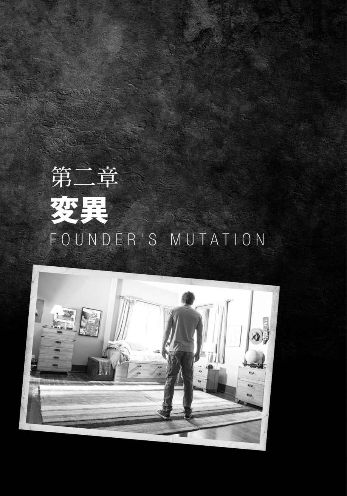
１
ニュージェニクス・テクノロジー本社／ヴァージニア州
中腰になってスクリーンを覗 き込んだ男は、網膜スキャナーが読み取りやすいように左目の下まぶたを指で押し下げた。ひどく充血した白目が剝 きだしになったが、スキャナーは眉 をひそめるわけでも医者に行けとアドバイスすることもせず、かすかな走行音を立てながら右から左へ、ゆっくりとビームを走らせた。社員データベースとの照合が瞬時に終わり、網膜パターンの一致する人物の顔写真および、〈入館許可〉の文字がセキュリティゲートの内側のディスプレイに表示される。
「おはようございます。サンジェイ博士」コンピューターで合成された女性の声が艶 やかに挨 拶 をする。
「ああおはよう」
サンジェイ博士と呼ばれた男は、はれぼったい目つきをスクリーンから離し、口の中でもごもご挨拶を返す。脇 に下ろした鞄 を肩にかけ直し、セキュリティゲートをくぐり抜けた。出勤してくる社員たちは毎朝ロビーで足止めを食らい、この儀式を繰り返す。皆がうんざりしていたが、それも仕方のないことだ。ここ──ニュージェニクス・テクノロジー社は政府が管轄する施設であり、それだけ意義のある研究に携わっている証拠だと思えば、逆に誇らしくもあった。いつもと同様週明けの今朝も、さっそくセキュリティゲートの前には長い列が出来、警備員は手続きの済んだ人間から前に進むように手で促した。社員証を持たないビジターは、脇に寄せられ検査棒を持った警備員に身体 チェックを受けていた。
医学博士のサンジェイは三〇代のインド系アメリカ人で、頭の切れる、ニュージェニクス社期待の星だったが、今朝はどうにも冴えない。櫛 も入っていない黒髪の縮れ毛を、顔の右半分にうるさそうに垂らし、髭 もろくにあたっていない。もっとも、アイロンが必要なワイシャツにノーネクタイ、水色のジャージをはおり、Ｇパンという出で立ちは、普段とそう変わらなかったが。いつも同じ側にバッグを下げるためか、右肩が左よりずいぶん上がっていた。
サンジェイは自分のオフィスへ向かうべく、小さな歩幅でそそくさと歩く。研究施設らしく塵 ひとつない清潔な廊下を抜け、円形の明るいアトリウムに出たところで、後ろから呼びかけられた。
「サンジェイ！」
同僚のアフリカ系アメリカ人、ロジャースだ。黒ぶち眼鏡をかけ、大柄なチェックのシャツとＧパン、肩がけバッグと、この業界の代表的なファッションでキメている。
「あれ、どうした？ 週末にハメを外しすぎたのかい？」
真っ赤な目をして覇気のないサンジェイを心配して、ロジャースがたずねた。
「とっくりとね」
「仕事で、それともお楽しみか？」
「お楽しみなんて、ずっとご無 沙 汰 だよ」
ロジャースが笑う。サンジェイとは対照的に、それこそ週末はたっぷり充電できたようだ。
突然ひどい耳鳴りに襲われ、サンジェイは歩みを止めた。金属がきしむような超高周波のノイズがダイレクトに頭に響いて、思わず頭が傾 いだ。こめかみを押さえると、幸いなことに、耳鳴りははじまったのと同じく、だしぬけに消えた。
ロジャースが立ち止まってサンジェイを振り返り、気遣わしそうに聞いた。
「大丈夫か？」
「......何でもない」サンジェイはこめかみをこすりながら答えた。最近、根を詰めすぎたのかもしれない。
毎週月曜日の朝は、プロジェクトチームのミーティングが開かれる。部屋に比して大きすぎる会議用テーブルを一〇名のチームメンバーが囲むと、会議室はもう手狭だった。出席者のうち半数ほどがスーツの上に白衣を羽織っている。ロジャースも、チェックのシャツの上に白衣を着ていた。全員、会社支給の黒いバインダーと、タブレットを机の上に広げている。サンジェイは太い眉根を寄せたしかめ面をして、窓際の一番奥の席に座っていた。壁一面に張られたガラス窓の外では、緑の生いしげる樹木が気持ちよさそうに風にそよいでいたが、目をやる者はいなかった。
サンジェイの反対側、開け放したドアの手前に立ったヒル博士が、〈ニュージェニクス〉のラベルが貼られたファイルの束を、音を立ててテーブルに叩 きつける。雑談をしていたメンバーは、びくっとして彼の方へ顔を向けた。
「創始者 が、データに目を通された。その件で今朝方メールが届いていた」
プロジェクト・リーダーのヒル博士は、この中の誰よりも細身で、誰よりも度の強い眼鏡をかけ、誰よりも抜け目がなく、誰よりも懐古趣味なファッションセンスで、そして誰よりも底意地が悪そうだった。非は自分以外の全員にあると考えているのがありありとわかる態度で両手を上げ、簡潔この上ない上司からのメッセージの内容を、大仰に伝える。
「『やり直せ』だそうだ」
「たったのそれだけ？」
赤毛の研究員シンシアが「ちょっと今の聞いた？」というようにチームメンバーを振り向く。
「この実験には何ヵ月もかけているのよ。多能性幹細胞の新しいソースはすべて試したわ、羊水から採取したサンプルも含めてね」
シンシアの隣に座るロジャースも、納得がいかなかった。
「お上のご託宣をたまわるだけじゃ、何もできやしない。欲しいのは方向性だ！ 会って話せないのか？」
「そうだそうだ」とロジャースの意見に、他の社員が同調する。
窓を背にしたサンジェイは、ずっとしかめっ面のまま鉛筆を片手に黙って聞いていたが、突然異変を感じ、体を固くした。
ヒル博士の声が、マイクを通したように、エコーがかかって聞こえはじめる。
「創始者の口から、君たちのデータがどんなに惨 憺 たるものか直接伝えて欲しいというのかね？」
気のせいかと思ったが、ロジャースの声にも、エコーがかかりはじめた。
「ゴールドマン博士は、偏屈なひきこもりだ。何年も人前に姿を現さない。ろくにおれたちの業績を見ていないのは、みんなとっくに承知してるよ」
どんどんエコーがきつくなっていく。悪寒がして、サンジェイは身体を震わせた。落ち着けばエコーが消えるかもしれないと思い、なんとか話に集中しようと、ヒル博士の口元を、血走った目で見つめる。
「オーガスタス・ゴールドマン氏は、わが社に全 力 を 注 いーでーいーるーとーもー」
だがサンジェイの努力もむなしく、ヒルの声が今度はスローダウンしはじめた。と同時に、さっきの耳鳴りが戻って来た。サンジェイは音を頭から絞りだそうとするように目をぎゅっとつむり、また開いた。耳鳴りはなくなってくれない。額に汗がにじむ。
サンジェイの異変に、気付くものはいなかった。サンジェイの耳にはヒルの声がスロー再生の音のようにゆっくりと聞こえる。
「だーがー創ー始ー者にーはーほーかーにーやーるーこーとーがーあーるーんーだー」
シンシアが揶 揄 をこめて返す声にも、エコーがかり、スローダウンしていく。高周波の耳鳴りが、伴奏に加わる。
「そうよ、そもそもゴールドマンを〝創始者〟と呼ぶなんて、気ー持ーちー悪ーいーとー思わーなーいーの？」
ロジャースが頷 いている。
「があ！」
エコーのかかった鳥の鳴き声がし、サンジェイは振り返った。窓の外では、芝を敷きつめた会社の中庭に、無数のカラスが次々と降り立つ。地面にたむろして、カァカァと鳴いている。向きなおると、ガラスの水差しとコップがテーブルの上で揺れていた。右手が震えはじめた。痛みに堪えかね、目をぎゅっとつむる。鉛筆を取り上げて何か書きこもうとするが、手が震えて芯 が折れてしまう。その音や、誰かが指で机を叩く音、日常では気にならないはずの音が、耐えがたいほどの苦痛を伴って頭に響いた。もう一度、サンジェイは目を思いきりつむったが、まぶたを閉じる音さえもが神経に障る。
サンジェイの異変をよそに、チームの面々は議論を重ねている。サンジェイの方を見ている者は誰もいないのに、彼に向けて命令する言葉が聞こえてくる。
シンシアがサンジェイに命じる。「やるのよ」
ヒルがサンジェイに命じる。「今すぐ。それが必要なんだ......」
ロジャースがサンジェイに命じる。「データが重要だ」
「ためらうな」「さあ」「さあ今だ」
「行け！」
耳をつんざく高音の耳鳴りが、ますます大きくなる。サンジェイはぶるぶる震え、顔中をくしゃくしゃにする。
さらに回転数が落ちて、ひしゃげた声が、三重になって彼に命令した。
「いぃぃまぁぁだぁぁいぃぃけぇぇ！！！！！」
サンジェイは大口を開けて叫んだが、耳鳴りが邪魔をして、自分の声が聞こえない。
「誰もこれが聞こえないのか!? 」
サンジェイは苦しそうに声を絞りだした。すると突然、耳鳴りがピタリとやんだ。
目を開けると、同僚たちが驚いた顔でサンジェイを見つめている。サンジェイは、わなわなと震える自分の両手を見下ろした。
「すみません。失礼します」
サンジェイは椅 子 を蹴 って立ち上がると、テーブルをもどかしげに回って、ヒル博士の背後のドアからよろよろと出ていった。
同僚たちは、議論も忘れ呆 然 とサンジェイを見送った。
ニュージェニクス・テクノロジー社のサーバー室は、三階にあった。
誰がなぜ最上階にしたのか、なぜ壁の色に螢 光 グリーンを選んだのか、そしてなぜ天井の明かりとりに六角形をした格子がはまっているのかは、社員たちの間で好んで交わされる話題だが、明るく清潔でモダンな会社の中で、不思議と一番落ち着く場所でもあった。
だが今、三方をサーバーマシンに囲まれ、中央のデスクで一心不乱に作業をしている男の精神状態は、落ち着くどころではなかった。会議室から飛び出したサンジェイは、その足でコンピューター・サーバー室に向かい、デスクに置かれたコンソールの画面を真っ赤な目で見つめながら、憑 かれたように文字を打ち込んでいる。だが、それはサンジェイの意志ではなく、頭の中に響く〝命令〟を行動に移しているにすぎなかった。
「やるのよ」「今すぐ。それが必要なんだ......」「データが重要だ」
画面には保安対策のされたターミナルから外付けハードディスクへ、会社の機密書類が次々に現れては消えていく。大量のファイルが転送中であることを示すウィンドウが表示されている。
サーバーの発する熱を冷却するため、室内は常に肌寒いにも関わらず、サンジェイは汗をかいている。ファイル転送の進行状況を見守りながら、再度目をぎゅっと閉じて、声を追い出そうとする。どこか遠くから、何かをドンドン叩く音と、くぐもったわめき声がエコーとなって聞こえる。
画面から目を離し、サンジェイが回転椅子ごとゆっくり振り返ると、背後の壁は全面仕切りガラスになっており、サーバー室の外から、ロジャースとヒルがドアをドンドンと叩いては、入口の電子ロックシステムを指さしていた。
「ドアを開けろ、サンジェイ！」ロジャースがくぐもった声でわめく。
「開かないぞ！ そこで何やってんだ！」ヒルも間延びした声で叫んだ。
「システムに異常がある！ そっちから開けてくれ」
サンジェイの眉がぴくっと痙 攣 して、とり憑かれたような表情が和らいだ。
「どうした！ 開けろったら」
ロジャースの声が、正常に聞こえる。二、三度まばたきをして、我に返ったサンジェイは、自分がサーバー室に来たことをおぼろげに認識していた。とりあえず、中に入りたくてしょうがないらしい二人を入れてやろうと、立ち上がりかけた。
そのとたん、耳をつんざくような高音が戻って来て、頭の中で暴れ出した。サンジェイは両手で頭を抱えようとした拍子にバランスをくずし、床に倒れた。
ドアの外では警備員がかけつけるなり心配顔のロジャースをどかし、ロックシステムにドリルを当てて解錠しはじめた。床の上で七転八倒しているサンジェイの頭の中では、高周波の耳鳴りが高まり、頭にドリルを当てられているも同然だった。デスクから必死で鉛筆立てをなぎ払い、床に散らばったペンを拾うと、手の平に何かを急いで書きつける。耳をつんざく金属音がさらに鋭さを増し、サンジェイは苦痛のあまり叫んで頭を両手で押さえつけるが、一向に止む気配はない。目についた金属製のペーパーナイフをとっさに摑 み、震える手で握りしめると、右耳にまっすぐかざした。入口の鍵 はまだ開かない。ふたり目の警備員がやって来て、ただならぬ様子のサンジェイを見ると、肩口の無線で救急医を寄こすよう伝える。
追いつめられたサンジェイは覚悟を決め、ペーパーナイフを数センチ耳に突き刺した。無音の叫び声をあげ、痛みに一瞬手が止まったが、さらに奥まで、一息に差し込んだ。
やっと、耳鳴りがやんだ。同時に、サンジェイの心臓の音も止まった──。
２
ニュージェニクス・テクノロジー社／ヴァージニア州
「どう思う？ スカリー」
床に横たわるサンジェイの亡 骸 に、背中からフラッシュが数回浴びせかけられ、その都度右耳から突き出たペーパーナイフの柄が光った。
鑑識課によって現場写真が撮られるなか、グレイのスーツをまとったモルダーは、死体のそばにひざまづいた。耳元のナイフに目をやったあと、首を動かして、死体の頭から足の先まで舐 めるように見る。
「サンジェイ博士は精神に異常をきたして自殺したようね。頭にペーパーナイフを突き刺してるわ」
死体を見下ろしたスカリーが、冷静な分析を述べる。
「目撃者の証言は、みんな一致しているし」
そう言うと、スカリーは濃紺のジャケットの袖を引っぱった。今回の事件に特に不審な点は見当たらず、Ｘ─ファイル課の出る幕はなさそうだ。あとは地元の警察に任せて、今日中には捜査局 に戻れるだろう。ＦＢＩに復帰早々空振りとは、幸先のいいスタートだわ──スカリーはすでに、事件に見切りをつけていた。
モルダーが立ち上がり、室内を見回した。その顔に無 精 髭はもう生えていない。一三年ものブランクがあったようにはとても思えないくらい、この道一筋のベテラン捜査官として、当たり前に振る舞っている。
「ぼくが聞いたのは、この部屋のことだよ。彼は最もセキュリティの厳しい場所を自殺場所に選んだ。何かにアクセスしようとしてたんだ」
モルダーは手袋をはめた手を、三方の壁に並ぶサーバーマシンに振った。
「ここのサーバーはネットワークに繫 がっていないから、データを入手するには、やっぱりプロテクトのかかったこの端末でやるしかない」
モルダーはサンジェイの死体をまたいでデスクに近づくと、端末に接続してあるポータブルタイプの外付けハードディスクを持ち上げた。
「ここに来たのはそのため？」
スカリーはその場に立ったまま、意外そうにモルダーに問いかけ、挙動を見守った。モルダーはハードディスクのケーブルを外すと、ポケットから証拠品押収袋を取り出して、慎重な手つきで素早く入れた。
「サーバーの中味に興味があるわけ？ 狙いはなんなの、モルダー？」
スカリーがじれて、再度問い質 した。
不意に男が現れて、モルダーの方へつかつかとやって来る。
「そのハードディスクを元に戻しなさい」
ニュージェニクス社の社員証をぶら下げた男は、クルミぐらいひと嚙 みで砕いてしまいそうな頑丈な顎をしていた。社員証には保安主任リンドキストとある。男は、万引きの現場を押さえた店主のような断固とした素振りで、備品の返却をモルダーに要求した。
「証拠品だ。押収する」モルダーは歯 牙 にもかけずに断った。
「それは企業秘密だ」
リンドキストは手を伸ばし、ディスクを袋ごとむんずと摑み、モルダーから奪いとった。
「私たちが呼ばれたのは、地元の警察にはない機密情報にアクセスする権限があるからなのよ」
ひょっとしてこの男は私たちがＦＢＩ捜査員だと知らないのではと思い、スカリーが指摘した。
「この部屋に入る権限があるだけだ。コンピューターの中味まで見る権限はない。このディスクは、国防総省の所有物だ」
スカリーは「なるほど」という顔をした。ここのサーバーには、国防総省が依頼した研究データが蓄積されているのだ。それで、モルダーがご執心というわけか。
ふたりのＦＢＩ捜査官とリンドキストは、サンジェイの遺体を挟んで睨み合った。
「じゃあ、もう何人か聞き取りをしてから退散するよ」
モルダーがしおらしく言うが、リンドキストは譲らない。
「事件に関わりのある者への聞き取りは、すでにあなたの同僚が済ませている」
「オーガスタス・ゴールドマンに話を聞きたいんだが」
スカリーが怪 訝 な顔をモルダーに向けた。モルダーの狙 いは、ニュージェニクス・テクノロジー社の社長なの？
「それは無理だ。ゴールドマン博士は、事件当時会社を留守にしていた」
リンドキストはモルダーがローマ法王への面会でも要求したかのようにうろたえた。
「あんたがそのハードディスクを見せてくれない以上、死ぬ前にこの人物がアクセスしようとしていたデータについて、ゴールドマン博士にじかにたずねるしかないだろ」
モルダーはリンドキストの手にあるハードディスクと、足下に横たわるサンジェイを顎で指し、声を荒げた。
「創始者の居所を把握していることを認める許可 を、私は得ていない」リンドキストの返事は、やけに回りくどい。
社員がゴールドマン博士を〝創始者〟と呼ぶことは、聞き取りで摑んでいた。だが居所を知っているかどうかさえ許可を得ないと言えないとは、どれほどの重要人物なのだろう。
それならば、とスカリーは壁の監視カメラを指さした。
「社内全体に監視カメラが設置されてるのを認める ことはできる？」
ついと廊下に出て左右を見渡し、場所を指し示す。「あそこに一台あるし、ほかにもいくつか見かけたわ」
「認める」
「それなら、録画テープを全部見せてください。早急にね」
「了解した。そちらへ送らせよう。だが今日のところは──死体を片付けてくれ。部屋の安全が確保できない」
振り返って死体を見下ろす。モルダーがぼんやりそばに突っ立っている。
「悪いけどまだ済んでは......」とスカリーがやんわり抗議するが、モルダーがそれを遮 った。
「いや、終わった、終わったよ」
リンドキストを尻 目 に、モルダーとスカリーは死体現場をあとにした。
スカリーがリンドキストの注意を引きつけているうちに、モルダーはサンジェイのポケットからスマートフォンを手に入れていた。アトリウムの通路を歩きながら、モルダーは早速、連絡先のリストをスクロールしはじめた。同僚や、仕事相手の会社らしきリストのなかに、ひょっとして〝ゴールドマン〟の名前でも入ってやしないかと期待する。
「モルダー、それ、あなたの電話じゃないでしょ」スカリーが声をひそめて言う。
モルダーも囁 き返す。
「僕のことはわかってるだろ、スカリー。昔気質 なのさ」
「去年、ライリー対カリフォルニアの裁判で、携帯電話の中味を調べるには令状が必要だとの判決を最高裁は下してるわ」
画面から目を上げず、モルダーが指摘する。
「それは容疑者の場合だろう。サンジェイは被害者だ」
「あら、被害者はいないわ。彼は自殺したのよ」
モルダーは裁判所では通用しなさそうな理屈を言う。
「じゃあ、友人に話を聞いても本人は気にしないと思うよ」
テーブルと赤いソファのセットが二組置かれた一角を通り過ぎる時、モップや洗剤を乗せたカートを押してやって来る若い清掃人とすれ違った。青いつなぎの制服を着た若者は、こちらをよけようともせず、モルダーはスマートフォンから目を離して体をどけたが、危うくモップに顔を撫 でられそうになった。再び画面に視線を戻して、小さな発見をスカリーに伝える。
「毎晩話していた相手がいるぞ。〝グプタ〟だ」
「サンジェイ博士は西インド出身よ。〝グプタ〟はマラーティー語だわ。『秘密』っていう意味」
スカリーの語学の知識に敬服して、モルダーが歩を緩めた。
「なんで知ってるんだい？」
「私は昔気質 なのよ、モルダー。ぐぐる 世代より前のね」
３
コーナーポケット・バー／ワシントンＤ．Ｃ．
ブルースの流れる薄暗い店内は、人々の談笑する声と、ビリヤードの球を突く音に満たされている。グプタが指定したのは、レンガ造りの壁と木製のインテリアで統一され、落ち着いた雰囲気のプールバーだった。まだ宵の口でもあり、大半の客の理性はアルコールに屈しておらず、仕事帰りに一杯ひっかけているビジネスマン風の姿もちらほら見られた。
バーで浮いてしまわないように、スーツの上着のボタンを外してくだけた雰囲気を取り繕 ったモルダーが、ビリヤード台とカウンターの間を通り過ぎて店の奥へと向かう。ネクタイをきっちり締めたスーツ姿の小柄な若いインド系の男が、窓際のブースにひとりぽつんと座り、ウィスキーの入ったグラスとにらめっこをしていた。モルダーは男をサンジェイと同年代の、三〇代前半だろうと当たりをつけた。
「グプタかい？」モルダーが声をかけて右手を差し出す。「呼び出して悪かったね。ぼくの名前は......」
グプタと呼ばれた男は座ったまま、自己紹介をはじめる待ち合わせ相手を押しとどめた。
「いや......名乗らないでくれ」
モルダーは手を引っ込めて席に着いた。お互い、本名は〝秘密 〟にしておこうということか。
「ソニーの友だち？」
グプタが、インド訛 の小声でそっとたずねた。〝ソニー〟というのはサンジェイの愛称だろう。頷いて、用件に入りかけたモルダーは、グプタが彼の後方を気にしているのに気がつき、振り返った。すると、離れたテーブル席でビールを飲んでいるスーツ姿のふたり連れのうち、ひとりがモルダーをじっと見ていた。今しがたカウンターを曲がって彼らの前を通ったときにも、やはりこちらをうかがっていた。男はモルダーと目が合うと、おもむろに顔を向かいに座る連れに戻した。
グプタが神経質そうにまばたきをした。
「あの男が、あなたにちょっかいを？」
モルダーは相手の緊張をほぐすように首を振った。
「今のところは何も」
まだ警戒心が解けないのか、おっかなびっくりグプタが聞いた。
「あなたは......どんな......ご用なんですか？」
「話がしたい。もっと静かなところで話せるかい？」
後ろの席の男を警戒してというより、グプタがリラックスできるように場所を変えたほうが懸命だろうとモルダーは判断した。
「どうかな。あなたをよく知らない」グプタはモルダーに対してもまだ気を許さない。
「僕は安全だ。信用してくれ」
モルダーは頭を後ろに振って「行こう」とジェスチャーした。グプタは一、二秒ほどモルダーを値踏みするように見つめてから、肚 を決めたように立ち上がった。
「こっちだ」
グプタの後を、モルダーがついていく。厨 房 の脇を通り、〝開放厳禁〟と書いてある防火扉の奥へ入った。狭苦しい物置スペースだ。グプタが天井からぶら下がっているコードを引き、裸電球をつける。
モルダーが後ろ手に扉を閉めた途端、グプタはひざまずいて、猛然とモルダーのベルトを外しにかかった。モルダーは慌ててグプタの手を押さえ、貞操 を守った。
「おいおい、ちょっと待てよ。よせ」
とまどったグプタは手を離した。
「だけど......『話したい』って」
モルダーはズボンを引っぱりあげて、手をばたつかせながら誤解を解こうとした。
「ああそう言った。でも君の考えてる意味じゃないんだ。つまり......僕は......」
グプタはうんざりしたように首を振って、立ち上がった。
「あんたたちはいつもそうだ。『冒険してみたい』なんて言っておいて、いざその時になると......怖じ気づいちまう」
モルダーを隠れゲイだと勘違いしている。モルダーは何か言いかけて、やめた。すっかり興奮したグプタは、それまでの大人しい素振りはかなぐり捨て、唇をめくりあげながらモルダーに説教しはじめた。これまで何度も同様の目に遭って、キレてしまったようだ。
「僕はやっと自分を解放したよ。自己嫌悪や、白い目で見られることから自由になった」
気 圧 されたモルダーがこくこく頷く。グプタはソニーとの友情に免じて、このふざけた白人に、自ら得た人生の智恵を授けた。
「自分を苦しめるのはやめろ」
そして、モルダーの胸をつついた。
「真実はね 、ここにあるんだ 」
一瞬モルダーは頭が真っ白になった。
「ああ、その......似たようなことを聞いたよ」
もごもご言ってる間に、グプタはさっさとモルダーをよけて、ドアを開けた。
「なあ、聞いてくれ。君に伝えないといけないことが......」
モルダーはドアを押さえて慌てて言った。グプタが振り返り、懺 悔 を聞く用意をした。咳 払 いすると、モルダーはありがたくないお告げを与える。
「サンジェイが死んだよ」
グプタは目を見開いたまま、その場に凍りついた。
ＦＢＩ支局／ヴァージニア州
検死台に、首元まで白いシーツで覆われたサンジェイの遺体が横たわっている。右耳にはペーパーナイフが突き刺さったままだ。
医療用ガウンとキャップを身につけ、保護メガネをかけたスカリーが、グローブを装着しながら遺体に近づいた。備え付けのボイスレコーダーのスイッチを入れ、大きく息を吸うと、司法解剖の記録を形式通りに吹き込みはじめる。
「遺体は男性、年齢三五歳。身長一七五センチ、体重八二キロ」
優秀な頭脳が迎えた痛ましい最後に大きなため息をつき、サンジェイの耳元を見下ろす。
「死因はおそらく、外耳道から──自らの意志で──挿入したペーパーナイフが......」
スカリーは右手でペーパーナイフの柄を摑み、左手でサンジェイの頭を押さえると、ゆっくりとを引き抜いた。予想外に抵抗がかかり、力んだ声になる。
「大脳皮質に......達したことによる」
引き抜き終えた血まみれの刃の長さに感嘆して、ため息が洩 れた。
「これより外景所見に入る」
シーツをめくってサンジェイの胸部をはだけたスカリーが、握りしめられた彼の左手に、ふと目を留めた。指の隙間から、何か黒っぽいものが見える。顔の角度を変えてよくよく見ると、手の平に、黒いインクで書かれた文字の一部が覗いていた。
コーナーポケット・バー／ワシントンＤ．Ｃ．
モルダーとグプタは、バーカウンターに並んで座っていた。グプタはウィスキーが注がれたタンブラーを飲むともなしに見つめ、モルダーは瓶ビールでちびちびのどを潤している。ゲイバーの店内はさきほどよりも混み合い、客たちもだいぶ出来上がった様子で、かなり混 沌 としてきた。モルダーに興味を示していたスーツ服の男は、そばのカウンター席でプラチナブロンドの若者たちと陽気に盛り上がっている。
グプタは潤んだ目で遠くを見つめながら、サンジェイとの最後の思い出を、問わず語りにぽつりぽつりと話しはじめた。
「ここ二週間ばかり、彼は......うわの空だった......。ひどく悩んで、落ちこんでて......僕から心が離れたのかと思ったよ。その......ソニーが忙しくて、しばらく会えなかったしね」
グプタは視線を落とし、グラスの底をくゆらした。
「毎晩電話をくれたけど、デートは......ご無沙汰で」
瓶ビールを脇に置いて辛抱強く聞いていたモルダーが、事件の手がかりを求めて、なぐさめるように質問した。
「悩みについて、君に何か話したかい？ 仕事上のことだった？」
そう問いかけると、グプタは少しづつソニーとのことを語りはじめた──。はじめ、ソニーの口は重かったが、グプタがあらぬ心配をしているのを察して、会社の守秘義務にひっかからない個人的な悩みごとは話してくれるようになった。ぼかした話し方をするため、必ずしも内容を理解できたわけではないが、グプタは賢い恋人を内心自慢に思った。賢いだけじゃなく、ソニーはおっとりした、優しい性分だった。自分たちのような嗜 好 の人間には珍しく、ファッションセンスはださかったけど──。
「うん、彼の〝子どもたち〟のことで怒ってた。みんな死んでいくって」
「子どもたち？」モルダーは片眉を吊り上げた。「サンジェイは独身のはずだぞ」
グプタは首を横に振った。
「追求しなかった。彼は、よくぼかしたり、何かに例えた言い方をするんだ。僕はただ、元気づけてやりたかっただけだ」
ソニーを元気づける必要のないモルダーは、さらに追求した。
「彼の住まいも捜査した。何もなかったよ。淡泊な暮らしぶりだった」
グプタは苦々しげに、救えなかった恋人の秘密を教えた。
「彼は、二重生活を送っていたんだよ。ふたつの場所で──」
モルダーのスマートフォンが振動して、着信を告げる。スカリーは確か、検視中のはずだが──。
「モルダー、見せたいものがあるの」
ＦＢＩ本部／ワシントンＤ．Ｃ．
モルダーはグプタとの密会 を切り上げて、急ぎ捜査局の司法解剖室のスカリーに合流した。サンジェイはバラバラにこそされていなかったが、頭 蓋 骨 の上半分が無残に剝 ぎ取られて、脳が剝 き出しになっていた。
だがスカリーが見せたかったのはサンジェイの優秀な頭脳の皺 ではなく、左手に隠し持っていたダイイング・メッセージだ。モルダーはサンジェイの左側に回って手元を見下ろした。指が、あり得ない方向にねじ曲がっている。
「指の骨を折って、こじ開けないといけなかったの。でも彼は命を絶つ直前、手の平にこれを書きつけたのよ」
まだガウンは着ていたが、キャップは外してまとめていた髪を垂らしたスカリーが、サンジェイの反対側から説明した。
モルダーは顔を近づけてメッセージを読み取った。
「〝創始者の変異 〟」
「ニュージェニクス・テクノロジー社のゴールドマン博士を、社員が〝創始者〟って呼んでいるのよ。それであのとき、博士と話したかったの？」
「サンジェイの意味する〝創始者〟は、ゴールドマン博士のことじゃないだろう」
モルダーは腰に手を当てて考え込んでいるふうだったが、突然サンジェイのレントゲン写真を留めてあるディスプレイ台 に顔を向け、そっちに移動した。
「ほかに何か、検視でわかったことは？」
スカリーは隣に立ち、ペーパーナイフの刺さった頭部のレントゲン写真を見ながら説明した。
「サンジェイ博士の脳に異常はなかったわ。ナイフは聴神経を破壊して、それから大脳皮質に達してる」
説明を聞きながら写真を眺めていたモルダーは、不自然な点に気がついた。
「そいつは変だな。ナイフは直角に刺しこまれ、それから上に六〇度傾けて、脳に達している。まるで......何かを仕留めようとしたみたいに」
モルダーは手でペーパーナイフの角度を再現しながら、スカリーに指摘した。
「そうね。ナイフは聴覚皮質で止まってる。そういえば......」
スカリーがサンジェイの同僚と上司から聞いた話を思いだした。
「自殺する前にサンジェイの研究チームがミーティングを開いてたんだけど、そこでわめき出したそうなのよ。『誰もあの音が聞こえないのか？』って」
「ふーむ」モルダーが唸る。
「でも、誰も不審な音など何ひとつ聞かなかったのよ」
「煎 じ詰めめれば、聴覚は神経が受け取った電気的刺激を、脳が解読してるんだ。もし実際に鼓膜を鳴らさずに、同様の刺激を創り出すことが出来たとしたらどうだ？」
「ふーむ」今度は、スカリーが唸る。
シャウカステンの明かりを浴びながら、スカリーはその可能性を検討してみた。
「まあとにかく、手の平にメッセージを残したならば、他にもヒントを残したかもしれない」
モルダーは遺体のところに戻って、下半分だけになってしまったサンジェイの顔を改めて見つめた。切断されずに残った縮れ毛が、頰に貼りついている。
「でも、どこにあるというの？」スカリーはすっかり検視を終えたサンジェイの遺体を、手振りで示した。
「彼のアパートだって、しらみ潰しに捜査したじゃない」
「実は、グプタしか知らない部屋を借りてたんだよ。サンジェイが実際に暮らしていた場所をあたってみようぜ」
モルダーは、〝真実はここ にある〟と言わんばかりに、遺体の胸元をつんつん、とつついた。
デュポン・サークル／ワシントンＤ．Ｃ．
デュポン・サークルの狭苦しい石畳の裏道を、フォードのＳＵＶエクスプローラーが大型のゴミ箱 をよけながらゆっくりと走って来る。運転しているのはスカリーだ。モルダーは助手席に座っている。Ｔ字路で停車し、ダッシュボードのナビゲーション画面をカメラに切り替え、正面の映像を映しだした。すると、ティーンエイジャーが三、四人並んで道路を渡るところだった。深夜一二時を回っていたが、前方で交差しているのは若者向けのコミックショップや派手なネオンサインのバーなどが立ち並ぶ、賑 やかな通りだった。
くったくなく笑いさざめきながら車の前を通り過ぎる若者たちを見て、スカリーが呟 いた。
「想像つかないわ。二〇一五年の現代に、自分のライフスタイルをひた隠しにして生きなきゃいけなかったなんて」
スカリーは道々、モルダーがグプタから仕入れた話を聞かされていた。サンジェイは自分がゲイであることを、親しい同僚のロジャースにさえ打ち明けていなかった。歩道を渡るあの四人の中にだって、同性愛者がいてもおかしくないのに......。
モルダーはサンジェイのダイイング・メッセージについて、ずっと考えていた。サンジェイは、ニュージェニクス社で幹細胞の研究をしていた──。
「ゲイであることだけが、彼の秘密じゃなかったんだろう」
モルダーがドアの鍵をあっさりと破り、真っ暗な部屋の中へ侵入した。スカリーから懐中電灯を受け取って、ゆっくり進む。二手に分かれて、サンジェイの別宅の捜索に取りかかった。古風な造りのアパートで、家具も備えつけなのか、三〇代のゲイの医学博士が住む家というより、建物とともに第二次世界大戦を生きのびた老婆が住んでいるような部屋だ。懐中電灯を四方に当てながら、モルダーはサンジェイという男は本当に摑みどころがないな、と思った。
「モルダー、こっちに来てくれる？」
寝室を調べていたスカリーが何かを見つけたようだ。モルダーが寝室に入ると、スカリーが懐中電灯を壁に向けている。白いペンキが塗られた羽目板の壁一面に白黒写真がピンで留められていた。一枚にひとりづつ、子どもの上半身や、手足の一部がアップで写っており、どの写真の子も、顔や手足が著 しく変形していた。
「〝彼の子どもたち〟だ」
「そうね」スカリーがかすれ声で相 槌 をうつ。
「サンジェイは、この子たちが死ぬのを恐れていた」
手や足が膨 れあがった子、皮膚が樹木のようにカサカサな子、顔が熱で溶け出したようにたれている子......。
「どの子も幼く見えるな。一〇才に達した子はいないだろう」
これが、サンジェイがグプタに語った〝彼の子どもたち〟か。この子たちとサンジェイの仕事、そして自殺は、因果関係があるのだろうか。モルダーは眉根を寄せた。
「背景を見ろよ」
子どもたちは全員、患者衣のような服を着て、身長がわかるように目盛りの入った壁を背にして立っていた。
「医療施設ね。病院らしくみえるけど......」
出し抜けに、いくつもある窓のひとつから、赤と青の回転灯の明かりが差し込んできた。車のドアが閉まる音が聞こえる。スカリーは窓に近づくと、日よけの隙 間 から表の通りを覗いた。
「警察が来るわよ。無音の警報システムが仕掛けてあったみたいね」
「わかった、急いで探そう。どこかに必ず手がかりを隠してあるはずだ」
モルダーとスカリーは片っ端から棚やクローゼットの引き出しを開けて、懐中電灯を当てていく。チェストを漁っていたモルダーは、突然、高周波の鋭い音に襲われた。懐中電灯を取り落として耳を押さえ、その場に膝を折る。懐中電灯は板張りの床を転がり、白い壁を照らした。チェストのはじを摑んで体を支え、苦痛に顔を歪 める。
「モルダー!? 」スカリーが気づいて駆けよった。
金属的な耳鳴り音は続き、モルダーは返事はおろか息もつけない。
アパートの一階で、ドアの開く音がした。階段を登る足音が近づいてくる。
「来るわよ。モルダー」
部屋の外からどなり声が聞こえた。
「警察だ！」
警官たちの持つ懐中電灯の明かりが、居間を動き回る。
モルダーをそこに残し、スカリーが居間に出ていった。
「手の平をこちらに見せて両手を上げろ！」
スカリーに向ける警官の鋭い声が、モルダーにはかろうじて、歪んで聞こえる。つんざくような鋭い音が大きくなった。耳に蓋 をしても、頭に直接響いてくる。
「ＦＢＩよ」
身分証を見せ、スカリーが警官に近づいた。その声も歪んでいる。モルダーは爪 でチェストを引っかいたが、引っかく音が高周波のノイズと相まって響いた。まるで、麻酔なしで歯にドリルを当てられたようだ。汗の玉が吹きだし、眉 根 から床に落ちる音が、大きく反響した。
すると、高音の耳鳴りが治まった。モルダーは歯を食いしばって、かすかに聞こえるスカリーと警官の会話に集中した。徐々に聞き取れるようになる。
「......彼女を探して」スカリーが言った。
「手伝ってくれ」警官が言った。
「彼女を探して」
再び耳をつんざく高周波音が聞こえ、ハウリングがますますひどくなる。スカリーの声にエコーがかかって聞こえる。次から次に、汗がしたたり落ちる。
「彼女を探して......彼女を探して......彼女を探して......」
４
ＦＢＩ本部／ワシントンＤ．Ｃ．
スキナー副長官は、自分のオフィスで部下の提出した報告書に目を通していた。デスクの前には、モルダーとスカリーが並んで座り、上司が読み終えるのを静かに待っている。
「ほかに付け加えることは、スカリー捜査官？」
スキナーは書類から目を上げずにたずねた。
「サンジェイ博士のアパートで見つけたファイルを見ていただければ......」スカリーが戸惑い顔で答えた。
「いや、私は見られんのだよ」
スキナーがおもむろに、左を向いた。
スカリーもそちらへ目線を送って言う。「あそこにありますが」
オフィスの奥に置かれた丸テーブルに、壁を背にして髭 面 の男が座っていた。そして、ファイルはその男の手元にある。男は国防総省の職員でマーフィーと名乗った。サンジェイの秘密の部屋に踏み込んできた警官たちは、スカリーが説明してお帰り願ったが、国防総省にはこちらの動向が洩 れていた。モルダーはゲイバーのビジネスマンが、やはり見張り役だったのではとにらんでいる。
ガラスのコップに水を注ぎながら、マーフィーはスカリーたちにチラリと目をやった。
「このファイルは、国家機密扱いだ──ゆえに、国防総省が預かる」
ものわかりの悪い捜査官たちに、道理を説いてやる、といった口調だ。
「僕はもう目を通した」モルダーが口を挟む。
スキナー副長官は、首をぐいっと動かしてモルダーに向きなおった。その目を見返し、モルダーは飄 々 とファイルの所有権を主張する。
「そのファイルは、深刻な遺伝的異常を抱える子どもたちの医療記録だ。それがサンジェイ博士の自殺とどう関係するかが、捜査の焦点となる」
スキナーはいつものように、曖 昧 さのないもの言いで宣告した。
「ファイルにアクセスする手段を失った以上、捜査は終了だ」
言い含めるように、モルダーをひたと見据える。
「ニュージェニクス社社員の自殺に関する報告書は、当局に提出しておく」
続けてマーフィーの方へわずかに顔を向け、目は合わせずに簡潔に告げた。
「以上だ」
スカリーは、副長官の意図を察した。モルダーが下手なことを言い出さないうちに、マーフィーを体 よく追っ払おうとしているのだ。彼女は喜んで協力することにし、口をつぐんでいた。
自分の威光に疑いを持たないマーフィーは、咳払いをひとつすると、立ち上がった。
「念を押しておくがね、モルダー捜査官とスカリー捜査官」
上着のボタンをはめ、サンジェイのファイルを手にする。
「機密情報を少しでも──内部だろうが外部にだろうが──洩らせば、厳罰でのぞむことになるぞ」
モルダーが、顔をそむけてぼそっと言った。
「エドワード・スノーデンの末路ならよく知ってるよ」
マーフィーが出て行き、ドアが閉まると同時に、スキナーが当たり前のようにモルダーにたずねた。
「コピーはしたんだろうな」
「国防総省に取り上げられる前に、最初の数枚をコピーできた。あの子たちは、実験に失敗したんだと思う」
「では君は、国防総省が人間に対して遺伝子操作の実験をしていると見ているのかね？」
やはり、マーフィーを早く帰して正解だった。スキナーは自分の見解は息と一緒に吸い込んで、モルダーの同僚捜査官の意見を仰いだ。
「君はどう思う？ スカリー」
スカリーは慎重な、だが正直な心証を述べた。
「この事件には、色々な問題が絡んでいそうですし、その......」言葉に詰まって、モルダーに振る。「モルダー捜査官がほかに何もなければ......」
「ないよ」
「......では、彼の仮説を証明する時間が必要です」
副長官は、聞くべきことはすべて聞いた。
「ＦＢＩのお役所仕事は、最近じゃあますます煩雑で非効率的になる一方だ。君らの事件報告書を適切な手続きを踏んで提出していたら、捜査を締めるまでに何日もかかりそうだよ」
スキナーはデスクに広げた報告書をまとめると、引き出しに入れてピシャリ、と勢いよく閉めた。そして、このオフィスに再び二人が顔を揃 えたことを喜ぶように声をかけた。
「おかえり、おふたりさん」
モルダーとスカリーは、照れくさそうに身じろぎした。
Ｘ─ファイル課／ＦＢＩ本部地下室／ワシントンＤ．Ｃ．
〝フォックス・モルダー特別捜査官〟の名前が入ったプレートのドアをモルダーが開けると、足を組んで椅子に座っているスカリーが振り返った。だがすぐにＡＶワゴンに載ったフラットスクリーンのモニターに向きなおって、膝の上に載せたキーボードを叩きはじめる。
「監視カメラの映像か？」
声をかけながら、モルダーが後ろ手にドアを閉めた。オフィスの壁には、掲示板スペースをはみ出して、超常現象関係の真新しい学術記事やゴシップ記事、写真等がベタベタと貼られている。手前の壁や奥の小部屋には、書類箱がいくつも載ったスチール棚が並び、余った箱は床に無造作に積み上げられていた。スキナー副長官がどこかから探し出してくれたＸ─ファイルの赤いフォルダが、書類箱の持ち手用の穴から覗いている。
Ｘ─ファイル課のオフィスが、一四年ぶりに息を吹き返した。
「そう。ニュージェニクス・テクノロジー社のよ」
会社のサーバー室で備品のハードディスクを取りあげてふたりを追い出したリンドキストが、約束通り、社内の監視カメラの記録映像をまとめて送ってよこしたのだ。
スカリーが隣に置いておいた椅子に、モルダーが座る。
「カメラのタイムコードを全部、サンジェイ博士が自殺した時間にシンクロさせてるところなの」
モニターには、事件現場のサーバー室をはじめ、会議室、エレベーターホール、廊下、アトリウム等、社内及び社外の様々な映像がパネル状にいくつも並んで映っていた。もっとも、企業秘密の研究室自体は除外されていたが。
「できたわ」ふう、とため息をついて、スカリーがキーボードをモルダーに手渡す。そして、一瞬迷ったように聞いてくる。
「サンジェイのアパートで、何があったの？ モルダー」
モルダーは彼女を見つめたが、何も言わずにモニターに顔を戻した。適当に映像のひとつを選んで、拡大する。
「あなたがスキナーに話さなかった理由はわかるわ。でも私はその場にいて、ひざまずいて苦しがるあなたを見たのよ」
スカリーが警察を追い払ったあと、慌ててモルダーの元に戻ると、本人は「ちょっとめまいがしただけだ」とだけ言い、何ごともなかったかのように家探しを再開していた。
モルダーはだんまりを決めこむつもりだったが、しかたなく口を開いた。
「音がしたんだ。ハイピッチの、まるで──」
右手の人指し指でこめかみの辺りを指して、クルクルッとジェスチャーする。
「頭の中に鉄釘 が打ち込まれるみたいだった。そのあと、ふたつの言葉に収束した」
スカリーが首をかすかに傾けて、問いかける顔つきをした。
「『彼女を、探せ』だ」
「音なんて、しなかったわよ。私には何も聞こえなかった」
スカリーが悲しそうに首を振る。モルダーは確かに〝音〟を聞いた。うずくまるほどの強烈な高音を。だが居合わせたスカリーには聞こえなかった、まるっきりなにも。やって来た警官もまた、何かが聞こえた素振りは見せなかった。
モルダーはスカリーの表情を見て、ため息をついた。言いたくなかったのは、言えばもっと心配するのがわかっていたからだ。視線をモニターに戻すと、キーボードを操ってクリップのひとつを拡大した。それは会議室の窓から見えていた中庭の映像で、無数のカラスが次々に芝生に降り立っている。
「あの鳥を見ろよ」
尋常ではない数の鳥が一斉に芝生を占拠して、緑の芝生が黒のまだらになってしまっている。監視カメラの映像には音声が伴わないだけに、一層不気味だった。この光景を観た者は、誰しもがヒッチコックの名作映画『鳥』を連想するに違いない──スカリーをのぞいては。
「朝、芝生にエサを撒 いたんじゃないかしら」いかにもスカリーらしい即物的な推測だ。
「インフラサウンドだよ、スカリー。人間の耳には聞こえない周波数だが、ミミズが反応して地中から地面に顔を出すのが知られている」
それが事実なら、カラスたちはごちそうを狙って、フードコートに群がっていたことになる。これなら辻 褄 が合うだろ、とモルダーがスカリーを振り返った。
「でも、これが──鳥、自殺、子どもたち、遺伝的異常とどんな繫 がりがあるというの？」
それに、サンジェイもモルダーも鳥ではない。不可聴域の音でのたうちまわるなんて変じゃないの、とスカリーが問いつめる。
「何を隠してるの？」
「オーガスタス・ゴールドマンだけがその答えを知っている。彼に会わなきゃならん」
モルダーの狙いがわかり、スカリーは横を向いた。だが、パートナーとの腹の探り合いを楽しんでもいた。医師をしていたときには味わえない感覚だった。
「君は 何を隠してる？」
逆にモルダーが聞き返した。スカリーがモルダーの手からキーボードを取り戻し、サーバー室の映像を拡大表示する。サンジェイが苦しんで、床に倒れ込むところだ。
「サンジェイは〝音〟を聞いた──自殺の直前に。あなたも彼の二の舞になるかもしれないのよ、モルダー」
スカリーがモルダーを振り返る。
「これは危険だわ」
モニターを向いたまま、モルダーは鼻で笑った。
「だからって捜査をやめたことが、今まであったかい？」
ないから心配なんじゃないの──だがスカリーは、言っても無駄なのは百も承知だった。隠し球を教える前に、言わずにはいられなかっただけだ。
「ゴールドマンに接触するルートがあるかも」
〝悲しみの聖母〟病院／ワシントンＤ．Ｃ．
スカリーはモルダーを乗せて、古巣の病院を訪れた。古巣と行っても、ごく最近までここで医師として勤めていたのだが。いずれにしても今日は職員用ではなく、ビジター用の駐車スペースを使った。ここへ来たのは、病院の上級職員シスター・メアリーを訪ねるのが目的だ。
数分後、スカリーとモルダーはシスター・メアリーと並んで、産婦人科病棟のオフホワイトとパステルグリーンの廊下を歩いていた。シスター・メアリーは尼僧服こそまとっていないものの、飾り気のない質素なスーツを着て、髪型も清潔感を第一に、短く切り揃えた髪を耳元でカールさせていた。胸元には、スカリーとよく似た小さな金の十字架を下げている。控え目な物腰ながら押し出しの強い話し方をする中年女性で、目線は前方斜め四五度を保って歩いている。
「オーガスタス。ええ、よく存じ上げていますよ」
スカリーがゴールドマン博士のことを質問すると、シスターはよくぞ聞いてくれたとばかりに博士を下の名前で引用した。話すうちに目線がだんだん上向いていき、しまいにはたいそう誇らしげに反 りかえった。
「でも、彼はとてもプライバシーを大事にする人なの。隠 遁 者 だと見る向きもあるかもしれないわね。彼の助力なしには、困っている女性たちを救済するプログラムを当院は組めなかったでしょう。彼は、お腹の赤ちゃんたちの救世主よ」
口元にはうっすら笑みさえ浮かべている。よほどゴールドマン博士に心酔しているようだ。
「ゴールドマン博士は神の恵みですね」
スカリーが調子を合わせてそう言うと、シスター・メアリーはにっこり微笑んだ。
「私たちが今日来た理由はそのためです。あなたのお耳に入れるべき情報を摑んだの」
スカリーの口調に穏やかならぬものを感じ、シスター・メアリーは注意を向けた。
「ゴールドマン博士に、捜査の手が伸びています」
「医療保険制度改革 絡みですよ」
ふたりから一歩下がって歩いていたモルダーが、口の端でこそっと言った。シスターがぎょっとして振り返る。
「政府が予告なしに、博士の家のドアをノックするなんていう目に遭わせたくありませんからね。内密にお会いできればと思って」
シスター・メアリーは歩みを止めて、厳しい顔でたしなめた。
「ダナ、当〝悲しみの聖母〟病院は、一番の後援者である方に、ＦＢＩの口利きはできません」
「シスター・メアリー、私はここで七年間働いたわ。よくご存知でしょう」
この病院に勤めていた当時、小児外科医のスカリーは産婦人科とは何かとやりとりがあった。当初は元ＦＢＩ捜査官という異色の経歴から、スタッフはどことなく彼女を警戒していたが、何年もその仕事ぶりを見てきて、シスター・メアリーはスカリーが信頼のおける人柄であることを承知していた。むしろ、白衣を脱いで、ＦＢＩ捜査官としてパートナーを引きつれて眼前に立つスカリーの方に、違和感を覚えた。
「ええ、あなたが正しい心の持ち主なのも、わかっています」
それは、カトリック教徒としてシスターの眼鏡にかなうという意味だった。
「重要な用件でなければ、こうしてお願いに出向いたりしません」
シスター・メアリーはゴールドマン博士への恩義と、スカリーの言い分を秤 にかけた。ここでむやみに断り、万一のちのち博士に不利益があれば、自分を許せないだろう。
「連絡先を知っているわ。伝言を伝えましょう」
「感謝します」
スカリーはシスターを騙 すことに後ろめたさを感じつつ、礼を言った。
立ち去りかけたシスター・メアリーに、モルダーが声をかけた。
「〝創始者の変異〟について思い当たることがあるか、ゴールドマン博士に聞いてください」
シスター・メアリーはその言葉がオバマケアと何か関連があるのだろうと推測して、大きく頷いた。
「ここでお待ちを」
シスターはモルダーとスカリーを廊下に残し、奥の部屋へ歩いて行った。
コツコツと短く二度、ガラスを叩く音がした。スカリーが振り返ると、〈休憩室〉と書かれたドアの窓から、長いブルネットを左右に垂らした娘が覗いており、スカリーたちに「こっちに来て」と頭で合図を送った。娘の背後では、お腹の大きな女性たちが思い思いにくつろいでいるのが見える。
いぶかる間もなく手近にいたモルダーがさっさとドアを開けたため、スカリーは彼の腕の下をくぐって休憩室に入った。
「ここを逃げなきゃ」
スカリーが入るなり、娘が緊迫した面持ちで言う。
「名前は？」
「アグネス。車で来たの？」
アグネスはひどく怯 えて浅い息をし、左右を見回しながら休憩室の奥にふたりを案内する。だが三人に注意を払う者は誰もいない。連窓から陽光が差し込む明るい室内にはソファやテーブル席がいくつも置かれ、妊婦たちは安心しきった様子で、ボードゲームをしたり編み物をしたりしている。
カジュアルなチュニックを着たアグネスの腹部はだいぶ膨らみ、妊娠後期に入っていた。スカリーは瞬時に医者の顔に戻り、心配そうに聞いた。
「誰かに連絡を取りたい？」
「誰かに連絡取れるぐらいなら人様に頼むと思う？ もういいわ。助けるつもりがないのはわかった」
アグネスは気短そうに顔を歪め、ふたりから離れようとした。
「アグネス、待って」
スカリーの声にはアグネスを振り返らせるものがあった。
「私は医者よ。力になれるわ」
その言葉に、アグネスが気を許す。
「こんなところにはいられない。みんな、いいなりの羊だらけよ。契約なんて知ったこっちゃないわ」
アグネスは取り乱したまま、背後でくつろいでいる妊婦たちを怒ったように手振りで示した。どの女性も、アグネスぐらいの若さだった。
「病院は母体と赤ちゃんの健康を第一に考えてるだけよ」
スカリーは若い妊婦を落ち着かせようとした。ここは安心できる、カトリック系のしっかりしたいい病院だ。なにしろ、シスター・メアリーが目を光らせているのだ。この娘は何かをひどく誤解しているようだった。
「あたしの 赤ちゃんなのよ」
「もちろん、あなたの 赤ちゃんよ」
スカリーはアグネスの目を見て保証した。アグネスは激しく首を振り、医者だというスカリーに訴えた。
「気が変わったの。やっぱり私が育てる。赤ん坊が病気だって、構わない」
「病気なのかい？」
ポケットに両手を入れて、脇で聞いていたモルダーが口を挟んだ。
アグネスは自分のお腹に目をやった。
「私の赤ちゃんは正常じゃないの。病院でわかって......超音波ってやつで。私にはわかってた、妊娠したときからずっと」
チュニックの裾を、神経質そうに引っぱっている。
「でも、ここのみんなも同じ......」
アグネスがはっとなった。
「何も言わないで。ふざけてただけ、いいわね？」
ふたりが背後を振り返って確認する。シスター・メアリーが廊下をやって来るのが見えた。
「話がしたくなったらここへ」
モルダーはアグネスにＦＢＩの名刺を素早く差し出した。アグネスはすがりつくような目線をふたりに送ってから、名刺を受け取って逃げるように奥へ引っ込んだ。モルダーとスカリーはわざとらしい笑顔を作って振り返ると、シスター・メアリーが休憩室に入ってきた。少女のように、にこやかな表情をしている。
「オーガスタスと話しました。喜んでお会いになるそうよ」
シスターはスカリーに、博士の連絡先を書いた紙切れを手渡した。
「感謝します」
モルダーが、休憩室の奥にいる女性たちを指してシスターにたずねた。
「シスター・メアリー、この人たちはどういった事情があるんですか？」
とたんに、シスターの顔が険しくなった。
「この娘たちは、様々な理由を抱えています。個人差はありますがダメージを受けているの。ホームレスだったり、アルコールやドラッグなどの依存症、行きずりの相手との子ども......皆、男たちに騙された女性たちなのです」
シスターは、モルダーを男代表のように睨みつけた。モルダーは精一杯人畜無害な表情になって、男性側の弁明をしようとしたが、シスターがそのひまを与えなかった。
「あなたにはなんの含みもないのよ。色欲は、悪魔の誘惑以外のなにものでもありません」
モルダーとスカリーは顔を見合わせた。
再び穏やかな顔になって、シスター・メアリーは続ける。
「でも助けを必要とする女性がいて、穢 れなき子どもがいる限り、当院は救いの手をさしのべます」
柱の陰からアグネスが怯えた顔で、三人のやりとりを聞いていた。彼女の後ろには、旧式のテレビが置いてあり、古典ＳＦ映画『新・猿の惑星』がかかっている。誰も観ていないテレビ画面の中で、進化した猿のジーラが、無事に出産したわが子を、幸せそうに抱いていた。
首尾よくゴールドマン博士の連絡先を入手し、病棟を辞したモルダーとスカリーが、救急用出入り口から出て来た。遠くでサイレンが鳴っている。
モルダーはスカリーを相手に、アグネスの話で見えて来たからくりをまとめている。
「実に巧妙な手口だよ、スカリー。望まぬ妊娠をした女性のための施設にオーガスタス・ゴールドマンが資金提供し、彼が創設した会社は、国防総省と深いコネがある。これは、やつらの〈プロジェクト〉の一端かもしれない──進化した人間を作りだすためのね。あそこの女性たちは......保育器なのかも」
「モルダー」
スカリーはスローブを登ったところで歩みを止め、モルダーに向きなおった。
「私はいたいけな少女じゃないのよ」
「スカリー......」
モルダーのスカリー警報が鳴った。出入りの多い病院の玄関先で、ガンガンやられたらたまらないぞ。
だがスカリーは、モルダーの想像に反して、穏やかだが不安を抱えた調子で、意外なことを言った。
「あなたはずっとこれを心配していたのに、口に出せなかったのね」
モルダーは息を吸い込んだ。スカリーが何を考えているか、悟ったからだ。
「これが一五年前の私に起きたことなの？ 私が妊娠したとき、赤ちゃんを産んだとき？」
モルダーが深いため息をつく。
「私はただの保育器だった、そうなの？」
モルダーに聞いているというより、自分自信に言い聞かせる口調だ。モルダーは身構えるのはやめて、パートナーを気遣った。
「君は決してただの何か なんかじゃないよ、スカリー」
モルダーから視線を外したスカリーは、どこか別の世界にさまよわせながら、今まで封じていた問いを発した。
「ウィリアムのこと、考えたことある？」
モルダーは即答した。声のトーンが、自然と普段よりも落ちる。
「ああ、もちろん考える。でも、今は前に進みたいんだ」
スカリーは顔をそむけた。それはモルダーにとっては正しい考え方だったが、スカリーにとっては悲し過ぎる答えだ。モルダーと視線を合わせないまま、ふたりの間にできたわが子、ウィリアムへの抑えがたい思いをはき出した。
「あの子はもう一五才になる。年ごとに成長していくあの子の姿を、一五年間見逃してきた」
モルダーがうつむいて、母親の苦悩をしっかりと受けとめる。傾きかけた太陽が病院の壁に影を投げかけ、ひんやりした風がふたりの頰をなでた。
「ときどき......手元にとどめ置く勇気のなかった自分を憎むの」
モルダーは全力でスカリーをなぐさめようとした。
「あの子を守るためにやったんだ。秘密裡 に養子に出し、僕らは居場所すら知らない。全部、息子の身の安全をはかるためにやったことだ」
モルダーに視線を戻したスカリーは、恐ろしい疑問を口にした。
「あの子も実験台だったと思う？」
「わからない」
モルダーはスカリーの分も引き受けて、つらそうな顔をした。
「もしもあの子が、どこか知らない場所で知らないうちに、サンジェイの家の壁に貼られていた子どもみたいになっていたら？ 死にかけてるとしたら？」
自分の言葉に、スカリーが身震いした。
モルダーはスカリーに顔を近づけると、秘策を与えた。
「僕らにできるのはねスカリー、糸をたぐって何に行きつくか、確かめることだけだよ」
＊ ＊ ＊
良く晴れた朝に、始業のベルが響き渡る。緑に囲まれた高台に、赤いレンガ造りの洒落 た小学校が建っていた。学校の正面玄関に向かって緩やかな坂道を歩いていく親子のなかに、手を繫いだスカリーと、六歳のウィリアムの姿も見える。
スカリーは白地に黒い縞 が入ったインナーに黒いスラックス、グレイのカーディガンというリラックスした服装で、たっぷりした赤毛を自然に垂らしている。ほかの生徒同様真新しいバックパックを背負ったウィリアムは、やっぱり縞柄のシャツに、黒のパーカーを着ていた。
「登校第一日目ね。緊張してる？」
スカリーが息子を見下ろして、優しくたずねた。
ウィリアムは金髪の頭を左右に振った。
「手に汗かいてるわよ」
ウィリアムは手を離して、ズボンでふいた。
「うへ！ これママの汗だよ」
スカリーがほがらかな声を立てて笑う。また繫いだ手をふざけて振りながら、問題を出した。
「一番覚えておかないといけないことはなあに？」
ウィリアムは立ち止まって、指折り数える。
「じっと座って、先生のお話を聞いて、おならしたら『ごめんなさい』っていうこと」
スカリーはまた笑うと、向きなおってウィリアムの両手を取った。
「一番大事なのはね......お母さんがあなたを愛してるってこと。それだけを覚えておいて」
そして、愛情を込めておでこにキスをする。
「おいで。先生にご挨 拶 しましょ」
母と子は、一緒に昇降口の階段を駆け上がった。子ども連れの父親が、ふたりのために赤茶色のドアを押さえてくれていた。
「どうも」
ふたりの背後で、ドアが閉まった。
終業のベルが鳴ると同時に赤茶色のドアが勢いよく開いて、子どもたちが元気に階段を降りてきた。ウィリアムは早や、一〇歳になっていた。赤茶色のカーディガンを着たスカリーが、階段の下で迎えに来ている。
「やあママ」
ウィリアムはスカリーに手を振って挨拶すると、そのまま脇を駆け抜けていった。
「じゃあねママ」
後ろから、スカリーが声をかける。
「夕食には戻るのよ！」
夕日を遮って額に手をかざし、息子の姿が道の向こうに見えなくなるまで、十字架のネックレスをいじりながら見送った。
突然、日が陰った。冷たい風がスカリーに吹きつけて、微笑みを消し去る。悪い予感に後ろを振り返り、スカリーは閑静な住宅街の歩道を走った。
ウィリアムの年ごろの男の子たちが、スケートボードを手に歩いている。そのかたわらを通り過ぎると、道ばたに救急車が止まっていた。急いで後部に回ると、担架に乗ったウィリアムがそこにいた。顔に痛々しいすり傷があり、救急隊員が左腕の応急処置に当たっている。遠巻きに、少年たちが見守る。ウィリアムはスケートボードでけがをしてしまったのだ。
スカリーは息子の無事な方の腕を握り、そっと話しかけた。
「ウィル......」
「ぼく、怖い」
スカリーはけがの具合をさっと見た。
「大丈夫。腕の骨を折っただけよ」
ウィリアムは母親を見ると安心して、頷いた。
「ほかに痛むとこある？」
口をきゅっと結んで、首を振る。
「よかった。じゃあ病院に行って、レントゲン写真を撮って脳しんとうを起こしてないか確かめましょう。いいわね？」
「ママ！」
背後から、かすかにウィリアムが呼んでいる。スカリーはゆっくり、おそるおそる振り返った。
スカリーは今度は家の中にいた。ウィリアムが自分の部屋から母親をしきりに呼んでいる。
「ママ！ 来て！ ママ！」
パジャマ姿のスカリーが廊下を歩いて子ども部屋に行き、ドアを開けた。天体写真や地球儀、爬 虫 類 がモチーフの壁掛けなど、一〇代の男の子らしい部屋のなかで、ウィリアムがこちらに背中を向け、壁にかけた鏡を覗き込んでいる。どこもけがはしていない。ほっとして、スカリーは声をかけようとした。
ウィリアムが振り向いた。黒い虹 彩 が異様に発達した目で、スカリーを見つめる。顔は溶けた蠟 燭 のようにのっぺりしていた。
スカリーは言葉を失った。
「ぼく、どうなっちゃうの？」
怯えたウィリアムがまばたきをすると、瞳 の色がグレイに変わる。
＊ ＊ ＊
はっとなって、スカリーは現実に戻った。自室の書き物机に座っている。レースのカーテンの隙間から、夜の暗闇が覗いていた。深いため息をついて、まだまといつく、ぞっとしないイメージを振り払った。机の引き出しに視線を落として、一瞬ためらってから開けると、アルバムの上に、一枚の写真が乗っていた。生まれて数ヶ月後のはいはいをしているウィリアム──。四隅に折れ目のついた小さな写真を、取り出して見つめる。スカリーは心許なげに、両手でしっかり握りしめた。そうしていないと、どこかに飛んでいってしまうとでもいうように......。
５
ゴールドマン・テクノロジー研究所／ワシントンＤ．Ｃ．
周囲を森で囲まれたゴールドマン・テクノロジー研究所は、全面がガラス張りの、トラス構造で築いた胴長ビルで、その桁 は地上三〇フィートの高さに持ち上げられている。
今、地上一〇メートルほどにある研究所内の廊下を、〝創始者〟オーガスタス・ゴールドマン博士が歩いていた。見学者の札を下げたモルダーとスカリーがそのあとに続き、最後尾をアシスタントの女性がつき従う。モダンで開放的な印象の外観とは異なり、建物内は手すりが設置された水色の壁が、狭い廊下を挟んで続く、典型的な病院然としていた。
べっこうぶちの眼鏡をかけた銀髪のゴールドマン博士が、白衣のポケットに手を突っ込んで、廊下をそぞろ歩きながら言った。
「〝創始者の変異〟か。興味深いメッセージだ」
「サンジェイが手に、そう書き遺したんです」
博士の左肩越しに、モルダーが返事をする。
「そうか、不毛な自己破壊行為の前に書いたんだな。劇的だが、意味はない」
いかにも独善家然とした博士にふさわしい意見だ。
「あなたの書かれた論文は全部読みました、ゴールドマン博士」
スカリーが切り出した。自分に医学知識があるというアピールだ。気難しそうな博士に無知だと思われて、相手にされないと困る。
「こちらの研究所は、遺伝子操作の研究を主眼に置かれているようですね」
ゴールドマンはいらだちも露わにため息をつくと、立ち止まってふたりのＦＢＩ捜査官を振り返った。
「何かをお疑いのようだが、ここでやっていることを、はっきり説明させていただこう」
バックに国防総省がついている自信のなせる業か、明らかに彼と彼の研究に疑いを持っているＦＢＩの人間との面会を許した博士は、表向きの研究目的を繰り返した。
「秘密でも何でもない、子どもたちを助けているんだ」
博士はふたりの捜査官についてくるよう合図し、再びポケットに手を入れたまま歩き出す。モルダーとスカリーがお互いに目配せをして、あとに続いた。モデルのように美しいアシスタントが、再び最後尾をつとめる。
廊下を右に折れると、そこは今までと違い、両側の壁に、窓とドアのついた個室が並んでいた。
「名字は伏せておくよ、プライバシーを守るためにね。だが、この子たちが何と闘っているのか、お見せしよう」
ゴールドマンはふたりの先に立って、ゆっくりと部屋の前を通り過ぎる。
色とりどりのクレヨンで動物の絵が描かれた手前の窓をモルダーたちが覗くと、青い患者衣を着たアジア系の少女がベッドの上に乗り、奥の壁に幾何学模様の絵を描いていた。少女の膝から下は、木の根っこのようにむくんでいる。少女が振り返って、珍しそうにモルダーとスカリーを見た。
「プロテウス症候群だ」博士が教える。
隣の個室は、ピンクのカーテンが吊り下げられ、寝具や小物もピンクで統一されていた。ピンクや紫の花をあしらったコサージュを金髪に差した少女が窓辺の机に座って、おさげ髪をとかしている。だがその顔は青ざめ、額や唇が、ひさしのように出っ張っていた。
「クルーゾン症候群」
次の部屋では、顔の半分と、右腕の肘から下が深緑のこぶに覆われた黒髪の男の子が、ベッドの上に足を伸ばして座っていた。木の皮のような皮膚を、両足から熱心に剝がしている。
「様々ながん性腫 瘍 、外 胚 葉 異 形 成 症......」
ゴールドマン博士は、同じペースで個室から個室へと歩き続ける。どの部屋にも机とベッドのほか、様々な医療機器が置かれて、子どもたちの命を維持している。モルダーとスカリーは衝撃を顔に表さないように注意しながら、無言でついていった。
額から下が、原型を留めないほど垂れ下がった黒髪の少年が机に座っている。目がどこに付いているのかすらわからず、座布団のように広がった顎を机に載せて、片手で自分の口を広げ、オートミールを押し込んでいた。
「ピット・ホプキンス症候群......」
ベッドに腰かけた眼鏡の少年が、青いゴムボールを床や窓にバウンドさせて遊んでいた。口元から、胸にかけてこぶのような肉がだぶついて、唇もシャツのボタンもうまく閉じられない。左手は、うまく利かないようだった。
「魚 鱗 癬 、マルファン症候群......」
床に広げたシーツの上にぺたんと座って、男の子がとてもつもなく膨れあがった両手をペンキに浸 し、シーツに直接塗りたくっていた。
ゴールドマン博士は窓のなかの子どもたちを見ようともせず、スラスラと病名を挙げていく。
「......その他の疾患。当研究所はこれら不運にみまわれた患者のための、最新研究施設だ。治療は無料で行っている」
モルダーは難しい顔をして、窓から目を逸らした。
一種魅入られたような顔で子どもたちを見ていたスカリーが、角部屋の前で立ち止まる。その部屋では、白いネルシャツを着た男の子が、窓辺の机に座っていた。虫眼鏡並みにレンズが大きくて分厚い黒縁の片眼鏡をかけ、ずり落ちないように片手でつるを押さえながら、机の上に置いた図鑑を熱心に見ていた。ひとの倍もありそうな頭部に頭髪はなく、額がこぶのように突き出ている。鳥や昆虫に興味があるらしく、木にとまった鳥の模型が、唯一のインテリアとして机に飾ってあった。
ゴールドマン博士が、スカリーにたずねた。
「あの子と話したいかね？」
「ええ」
ドアの脇のインターコムを押して、ゴールドマンが話しかけた。
「アダム？ お客さんだよ」
アダムが顔をあげた。彼の右目には、腫 れぼったいまぶたが覆い被さっていた。
博士がインターコムからどいてスカリーに替わる。スカリーはドアの大きなガラス窓から笑顔を見せて、男の子に話しかけた。
「こんにちは、アダム」
アダムが椅子から降りて、ゆっくりした動作でドアの前まで来ると、眼鏡を押さえたままそろそろと手をあげた。スカリーがドア越しに、手をあげ返す。
「私の名前はスカリー。お医者よ。アダム君、ここにはどれぐらい長くいるの？」
アダムはたっぷり間を置いて答えた。まるで部屋の中には水が張ってあり、抵抗でゆっくりとしか反応できないとでもいうようだった。モルダーがかたわらで、ふたりのやりとりを見守る。
「ずっと、だよ」
「あなたのご両親はどこにいるの？」
アダムがゆっくり首を横に振った。
「ぼくにはいないよ」
「彼は乳児のときにここへ連れてこられた」
ゴールドマンの説明に、スカリーが振り返る。
「アダムはクルーゾン症候群をわずらっているんだ」
「どうして、密閉された部屋にいるの？」
スカリーがたずねた。博士は質問の意味がわからないかのように、頭を突き出した。
「こんなふうに子どもたちみんなを閉じこめるなんて。アダムは遺伝子に障害があるんでしょう。感染症じゃないわ」
ゴールドマンはスカリーをしばらく見つめていたが、背後のドアからアダムに声をかけた。
「ご苦労さま、アダム」
アダムはゆっくり、机に戻った。
「当研究所は世界一優秀なセラピストを雇っている。隔離しているのは、結果を左右しかねない外的要因を排除する必要があるからだ」
スカリーの質問がお気に召さなかったらしく、博士は一気にまくしたてた。
「私はこれらすべての重篤な遺伝子異常を引き起こす素因の究明に努めている」
「エイリアンのＤＮＡのことですか？」
スカリーがなんのてらいもなく、ずばりと言った。ゴールドマンは意外そうに、スカリーとモルダーを見比べた。
「国防総省があなたの研究に資金提供しているのは、それが理由？」
スカリーの言葉と目つきから、博士は事件の捜査以上の何かを感じとった。博士はそれが何か、知っていた。子どもを守る母親の目だ。それは、博士が最も苦手とするものだった。女をアダムと話させたのはまずかったな──ゴールドマンは心のなかで舌打ちした。注意すべきは男の方だと思っていたのだ。
ゴールドマン博士は知るよしもなかったが、スカリーが守ろうとしたのはアダムたちだけではなかった。悲しみの聖母病院をたずねた夜以来、自分の妄想のなかのウィリアムが脳裏から離れず、個室の子どもたちの姿が、息子と二重写しになって見えた。
「ドクター・スカリー、あなたが現実的なほう の捜査官だと聞いていたんだがね」
スカリーが反応する前に、廊下の奥から少女の叫ぶ声が聞こえてきた。
「やめて！ 離してよ！」
三人ははっとなって、声の方を振り向いた。強化ガラスで仕切られた廊下の向こう側で、十代の少女が黒髪を振り乱して暴れていた。介護士に背後からはがいじめにされながら、激しく足をばたつかせている。
手前に置かれたカートから、一見誰も触れていないのに、飲食物や薬の容器が空中に跳ね飛んだが、あまりに素早く起きたので、何がどうしたのかよくわからない。
「離して！ いや！ いや！」
少女は手がつけられないほど暴れ、さらに奥の廊下から、ナースが応援に走って来る。
ゴールドマンは騒ぎを見るなり、ふたりの訪問者を追い立てにかかった。
「すまんが、時間切れだ。サラに出口までお見送りさせよう」
そう言うと、さっさと騒ぎの方へ行ってしまった。
「こちらです」
脇に控えていたアシスタントのサラが、騒ぎに背中を向けてもと来た方向にとって返す。スカリーは、無念そうにぐずぐずしている。
「博士は質問に答えなかったわ......」
「そうだな。ぼくの質問にもね」
サンジェイのダイイング・メッセージを聞いても博士は特に反応を示さず、謎の音については聞くチャンスさえなかった。だが、無駄足というわけでもない。
奥を振り返ると、ゴールドマンはガラスドアの向こうに行き、介護士ら大の大人が三、四人がかりで暴れる少女を取り押さえていた。そのまま、脇の部屋に押し込めようとする。
「離してよ！ やめて！」
少女はその間もずっと叫び続けていた。
喧 噪 などどこ吹く風で、両手を後ろに組んでゆったりと歩くサラの後ろを、ふたりは数歩分遅れてついていった。
「あれ見た？ モルダー」
「興味深いな」
遠目で見た限り、少女の外見に異常は認められなかったが、彼女のそばに置かれた物が、触りもしないのに吹き飛んでいた......。
着信に気づいたモルダーは、歩を緩めてスマートフォンを取り出し、メッセージを読んだ。
「アグネスが大変だ」
モルダーの緊迫した声に、サラが振り返る。モルダーとスカリーは足を速めた。
トンネル内／ワシントンＤ．Ｃ．
回転灯が放つ赤と青の光が、夜の闇のなか、ドーム型に湾曲したコンクリートの壁を跳ね回っている。立入禁止の黄色いテープが張られ、通行止めになったトンネルの入口付近には警察車 輛 や救急車が止まり、警官たちが現場検証にあたっていた。
モルダーとスカリーは私服姿の刑事に伴われ、トンネル内を歩いて来る。ゴードンと名乗った誠実そうな刑事の手には、白い名刺が握られていた。
「犠牲者のポケットに、あなたのカードが入っていました」ゴードンが説明する。「ひき逃げですよ。車は猛スピードを出していました」
トンネル内の中ほどの車道に、女性の遺体が血の池の中に横たわっていた。歩きながら、ゴードンが後方から前方を指さした。
「タイヤ痕はあそこから......衝突地点まで続いています」
死体となったアグネスが顔を上に向けて横たわり、額や頰からは血を流していた。スカリーたちが病院の休憩室で会ったときに着ていたチュニックは、腹部の辺りが真っ赤に染まっている。
サイレンをコンクリートの壁に反響させながら、さらに一台の警察車がモルダーたちの近くに止まった。
「現場近辺の防犯カメラを洗っています。目撃者はありません」ゴードンが続けた。
スカリーが痛ましそうな顔で、アグネスの死体のかたわらにかがみこんだ。モルダーがその隣にしゃがみ、死体を調べはじめる。
ゴードン刑事を見上げ、スカリーがたずねた。
「赤ちゃんは無事？」
ゴードンが礼儀正しく首を傾 げた。
「何のことですか？」
「彼女は妊娠していたのよ」
モルダーがアグネスの腹部を検 め、首を振った。
「胎児が消えた......」
モルダーはゴードン刑事と共に現場をあとにし、警察署のコンピュータを借りて過去の事件のデータベースにアクセスしていた。上着は脱いで椅子の背にかけ、ワイシャツの袖をまくった片肘を机に載せ、口元に指を当てた前屈みの姿勢で、ラップトップ画面を熱心に見つめている。人の出入りの激しい署内で、パーティーションで仕切られた壁際の一角だけが静かだった。
ワインカラーの手術着を着たスカリーが仕切りを回ってやって来ると、脇の袖机にもたれかかった。アグネスの検死解剖を終えたところだった。早速、モルダーに結果を報告する。
「アグネスの死因は、鈍器による損傷よ。車に激突した衝撃と考えるのが妥当ね。右の尺骨がまっぷたつになって、折れた肋 骨 が肺に食いこんでいる。頭蓋骨は砕けているわ」
それではひとたまりもなかっただろう。モルダーが画面から目を離して、回転椅子をスカリーに向けた。
「それで、胎児は？」
「外科的に取りのぞかれてたわ。子宮から摘出されたときに胎児が生きていたかは不明だけど......きっと......取り上げられたのよ、モルダー。証拠を消すために」
モルダーを覗き込むスカリーの目は厳しい色合いをたたえている。モルダーは口を引き結んで、身じろぎをした。アグネスの奪われた赤ん坊......。
「アグネスは話したがってた。それで病院を抜け出したのよ。お腹の赤ちゃんだけが、ゴールドマンの実験に妊婦たちが絡んでいたことの唯一の証明だった」
スカリーは病院で激しく怯えていたアグネスの姿を思い、後悔の念にとらわれた。あのときはシスター・メアリーからゴールドマン博士の連絡先を入手することが第一目的だったため、彼女のことは後回しにしてまった。少なくともあそこにいれば、当面命の危険はあるまいと、正直油断した。そのために、アグネスの赤ちゃんという大事な手 駒 を失った。
だが、モルダーがしぶといところを見せる。
「もしまだ赤ん坊が生きてたら？」
スカリーは言下にその可能性を排除した。
「モルダー、車は猛スピードで激しく彼女にぶつかっているわ。成人女性の骨格をもってしても、その衝撃には耐えられない。ましてや胎児が生き長らえる可能性は、まずないわ」
首を横に振り、ありえなさを強調する。
「人間の胎児にはね」
モルダーは椅子から立ち上がり、プリンターから出て来た印刷物を手に取り、そのまま机に尻を載せる。
「一九七三年、〈シンジケート〉はエイリアンと人間の交配種を作りだし、世界を植民地化する計画を進めるために結成された。計画は結果的には失敗に終わる。だが、そこで実験をやめるような奴らじゃないさ」
スカリーがモルダーのそばに来て、やっぱり机に寄りかかる。
「でもそれは、人類の遺伝子の比率を変えるってことよ」
医科学者のスカリーには、おぞましくも興味ある話題だ。
「進化への次なる段階──」
「あらゆる新種は、創始者変異 からはじまるんだ。正しいＤＮＡの組成を持つ子どもがひとりいれば、はじめられる」
ゴールドマン・テクノロジー研究所の真の目的は、創始者変異を人為的に起こすことか。アダムたちは、その試行錯誤の過程の産物なのだろうか──。
「昨年、『ネイチャー・コミュニケーションズ』誌に発表されたバティーニとハラストの研究論文によれば、大半のヨーロッパ人男性のＹ染色体は、青銅器時代の三人の人間に起源を発するそうよ」
モルダーは先ほどプリントアウトしたものをスカリーに手渡した。
「ゴールドマン関係で、何かないかと警察記録を漁ってみた。すると、一七年前、ジャッキー・ゴールドマンが刑事責任を問えない患者として聖エリザベス病院に強制入院させられていた。ジャッキーは精神障害者だと鑑定されたんだ」
「ゴールドマン博士の奥さん？」
モルダーが頷く。
「自分の腹のなかの赤ん坊を殺した罪で、有罪になった。だが胎児の遺体はやっぱり見つかっていない」
それは、ひょっとすると大きな手がかりになるかもしれない。スカリーはゴールドマン夫人の資料に目を落とした。
６
聖エリザベス病院／ワシントンＤ．Ｃ．
モルダーとスカリーがＦＢＩの身分証を見せてゴールドマン夫人の面会を申し込むと、夫人はちょうど食事をとっているところだという。ナースに案内され、閉鎖病棟のこぢんまりとした談話室に入ると、夫人がひとりで丸テーブルに座っていた。ふたりはナースに礼を言い、テーブルの空いている椅子に座って夫人に自己紹介をした。
「ゴールドマンさん、ご主人のことでいくつか質問をしたいんですが」
モルダーの発した問いは、夫人を素通りしてどこかへ雲散霧消し、ゴールドマン夫人は焦点のぼけた視線を前方の床に向けたきり、ピクリとも反応しない。赤い巻き毛を肩まで垂らし、スウェットの上下にガウンを羽織ったジャッキー・ゴールドマンの前には、サンドウィッチやりんごの載ったプレートが置かれていたが、モルダーとスカリーが来たときからまったく手をつけていない。
モルダーは彼女の注意を引こうと、顔を近づけて言った。
「彼の仕事のことです」
「モルダー、もう一〇分も堂々巡りしてるわよ」
モルダーとスカリーは、なんとかゴールドマン夫人と意思の疎通をはかろうとしているのだが、何度質問をしても一向に反応してくれなかった。
ふたりの背後の開け放したドアから、ふいに、長毛種の猫が入ってきた。それまでひとところに向いていたゴールドマン夫人の目が瞬時に猫を捉えた。と思った瞬間、電光石火の速さでプレートの上の大きなりんごを鷲 摑 みにするや、モルダーとスカリーの間を抜って猫に投げつけた。りんごは猫の上方の壁に当たって跳ね返り、床に転がった。猫はにゃっと鳴いて、退散した。
スカリーはあっけにとられ、モルダーは思わず聞いた。「猫が嫌いなんですか？」
モルダーの他意のない質問に、夫人はへの字口をしてじろっと睨んだ。スカリーは辟 易 して身じろぎしたが、モルダーが返事を促すように頭をこくこくさせると、気が緩んだらしく、とうとう口を開いた。
「何が知りたいの？」
とげのある声ながら、滑舌はしっかりしている。
「いくつか質問していいかしら、ジャッキー？」
スカリーが聞いた。
「夫のことはだめよ」
今はもう完全に焦点の合ったブルーグレイの目で、夫人がいまいましそうに左右をねめつけた。
「あいつのせいで、私はここを出られないんだから」
スカリーは一発で出鼻をくじかれて、下を向いた。モルダーはちょっと考え、こうたずねた。
「娘さんに会いたいですか？」
はっとしてモルダーを見返したゴールドマン夫人の口元が、徐々に緩んだ。
「モリー......」
ジャッキー・ゴールドマンは愛おしそうに、娘の名を呼んだ。一瞬にして、ゴールドマン夫人の記憶は、精神病院の閉鎖病棟から、ごく普通の主婦として暮らしていた日々にたち返った。一七年前のジャッキーは、立派な職業の夫を持ち、郊外の邸宅に住み、可愛らしい娘がいて、一見満ち足りた人生を送っていた。だが、夫人は密かに、誰にも言えない、とある悩みを抱えていた──。
「娘を愛してる。だけど......どこかが......おかしかったの。あの子が生まれたときからそれは感じていたわ。でも確信したのは......モリーが二歳になった頃だったわ──」
ゴールドマン夫人はモルダーとスカリーに、異変のはじまりを語りだした。
「あれは、私が二人目の子どもを身ごもっていた頃のことだったわ。友人たちとホームパーティをしていたの。キッチンでみんなとカップケーキを焼いていたら、ふとモリーの声が、聞こえてこないことに気づいた。家のあちこちを調べても見あたらなかった。でも、裏庭のプールに通じるドアが開いているのが目についたの。胸騒ぎがして、急いで裏庭に出ると、プールの水底に小さな人間のシルエットがちらつくのが見えた。あの娘 だって瞬時に悟ったわ。身重なのも忘れてプールに飛び込み、必死に潜って娘のほうへ泳いでいった。すると、気を失ってぐったりしているに違いないと思った娘が、水の中でゆっくり、振り向いたの──。服を着たまま手足を動かして、目を開けてにこにこ笑ってた......。おさげ髪が、浮力で逆さまに揺れていた。あんまり驚いて水を飲み込んでしまい、私のほうが溺 れそうになったわ......」
ジャッキーはそこまで一息に話すと、モルダーとスカリーを見つめた。
「いままで、誰にもこの話はしてない。二歳の娘が溺れるどころか......水中で息をしていたなんて」
頭がおかしいと思われるのを恐れて沈黙を守っていたのに、結局今、こうして精神病院に閉じ込められている。ゴールドマン夫人は、乾いた声で笑った。
「娘がプールに落ちてから、少なくとも一〇分は経っていたわ。普通なら溺れ死んでいるはずよね。みんなの目には奇跡に映った。でも私にはわかった。夫はモリーがお腹のなかにいたときに、何かしたのよ。研究のために自分の娘を利用したんだわ」
ジャッキーが目を上げ、モルダーとスカリーに訴えかけた。
「あの時、私は妊娠九ヵ月だった。息子にだけは、手を出させるわけにいかなかったわ。怪物から逃げないといけなかったの」
目に見えて興奮しだした。夫人は、落ちつかなげに目を左右にきょろつかせ、早口にまくしたてる。
「夫はモリーをどこかへ連れ去った。私から奪ったのよ。それで、車に乗って家を出て行った。夫は止めようとしたけど、包丁で腕を切りつけてやったわ。闇 雲 に車を走らせた。行き先もわからずに。彼らが放っておくわけがないのはわかっていた。お腹にもうひとりいたからね」
「〝彼ら〟って？」モルダーが聞いた。
「政府よ。オーガスタスは政府のために働いていた」
ゴールドマン夫人は、わかりきったことを聞く捜査官を責めるように、身を乗り出した。
「誰も信用できない、特に警察はね。とても恐ろしかったわ......」
夫人は自分の迂 闊 さを後悔するように、手をひと振りさせた。
「スピードを出し過ぎたの。道路の真ん中に動物が飛び出してきて──焦って、ハンドル操作を誤ってしてしまった。車はひっくり返って、私も血だらけだった。死ぬかと思ったわ」
当時の恐怖が蘇 り、顔を歪める夫人を、モルダーとスカリーは気遣わしげに見守る。
「でも、そのとき〝音〟が聞こえた」
ジャッキーは目をつむり、首を振った。
「とても大きくて......鋭かった。痛いほどよ」
スカリーがモルダーに素早く目線を送ると、モルダーは集中したときの、無心な顔で聞いている。夫人はモルダーに向かって、自分のこめかみを指さした。
「音は、私の頭の中で響いていた。あの子 が唯一知っているやり方で、私に話しかけていた。それで、どうすればいいかわかったのよ」
一呼吸置いて、ゴールドマン夫人は続けた。
「包丁で、自分のお腹を切り裂いたの──。警察は、私が赤ちゃんを殺したと言った。でも私は殺してないわ──」
ゴールドマン夫人は激しく頭を振った。
「殺したんじゃないの──出して あげたのよ。あの子は生きてたわ」
そこまで話すと、満足したように口をつぐんだ。
ジャッキー・ゴールドマンの息子が、生きている？ スカリーは頭に浮かぶ質問の山を飲み込んで、肝心なことをたずねた。
「息子さんに、何が起きたかご存知ですか」
「私は出血のために気絶したわ。目が覚めたら。病院だった。あのとき以来息子には、二度と会っていない」
ジャッキーは涙のにじんだ目で、微笑んだ。
「毎日、あの子のことを思うのよ」
モルダーが気遣わしげに、夫人からスカリーに視線を移した。スカリーはジャッキーと同じ目をして、どこかで生きているはずの息子を思う、悲しい母親を見返した。
「母親は、決してわが子を忘れないわ」
モルダーとスカリーは、病院の廊下を急ぎ足で歩いていた。
はじめは手ぶらで帰ることになるかと危惧したが、うまく夫人の口を割らせることに成功した。ただし、精神障害の烙 印 を押された彼女の話が、どれだけ信用できるかは疑問だ。
「これまで受けた訓練と心理学の知識が全力で、あの人は妄想癖だって主張してるわ。でもモルダー、彼女には何か、信用できるところがある」
スカリーが葛 藤 を声に出した。清潔な廊下のところどころで、看護師に付きそわれ、ひどくとり乱したり、壁に向かってじっと立っている患者を通りすぎる。
モルダーのほうは、そんな疑問で時間を無駄にするつもりはない。
「ゴールドマン夫人は頭の中に鳴る〝音〟を聞いた、引っかくような高音のだ。僕に起きたのと同じだよ」
「彼女に話しかけた赤ちゃんが、あなたに話しかけたって言うの？」
「今はもう赤ちゃんじゃないだろ」
掃除道具を満載したカートを押して、青いつなぎを着た清掃員が通り過ぎる。モルダーが二、三歩後戻りをして、呼び止めた。
「ちょっと失礼。その、君は病院の職員じゃないよね？ 業務委託？」
泥棒髭をはやした小太りの男が答えた。
「そうだよ。Ａ─１清掃社。市全体をカバーしてる」
「ありがとう。助かった」
モルダーはスカリーを急 き立てて、病院をあとにした。坊主頭の清掃員も、カートを押して歩き出した。廊下の奥では壁と話していた老人が、看護師に付きそわれて病室に戻っていった。
７
Ｘ─ファイル課／ＦＢＩ本部地下室／ワシントンＤ．Ｃ．
オフィスに戻ると、モルダーはＡＶワゴンにすっ飛んで行き、キーボードを操作して、スカリーが同期させたニュージェニクス・テクノロジー社の監視カメラの映像を呼び出した。
モルダーとスカリーは立ったまま、ワゴン上の大型モニターに見入った。画面には、別の場所に設置された二台の監視カメラが撮った映像が、並んで映っている。一方にはサンジェイ博士がいるサーバー室が、もう一方には社員の個室が映り、青いつなぎを着た若い清掃員が、机を拭いている。
「Ａ─１清掃社は、ニュージェニクス社の掃除も請け負ってるんだ。制服に見覚えがあった。サーバー室は立ち入り禁止だが、彼はその真上のオフィスを掃除してる。サンジェイ博士が死んだとき、こいつは五メートルと離れてなかった」
モルダーがモニターの下に置いたキーボードのスペースバーを押す。カメラの映像が再生され、無音のなかでサンジェイ博士が椅子から床へ倒れ込む。同時に、オフィスの清掃員がよろけて前屈みになり、机に手をついた。
「動きが呼応しているわ」
ビープ音がオフィスに響き、スマートフォンが着信を知らせる。モルダーは素早くズボンのポケットから取り出して、メールのメッセージを確認した。
「当日の清掃員の名前を請求しておいたんだ」
スカリーがモニターから目を離し、「それで？」という顔でモルダーを見た。
「カイル・ギリガン──高校中退。先月は聖エリザベス病院でも働いている」
モルダーがスカリーに頷く。
「摑まえたぞ」
モルダーが映像を止めるのも忘れて、Ｘ─ファイル課のドアへ向かう。スカリーは画面にちらっと目をやってから、あとに続いた。部屋に残されたモニターのなかでは、動かないサンジェイが床に横たわっている。その横のウィンドウでは、カイル・ギリガンが掃除用カートを押して部屋を出て行く映像が映し出されていた。
農家／ワシントンＤ．Ｃ．
のどかな田舎道を走っていたエクスプローラーが、民家のドライブウェイに乗り入れると、二〇年は動いてなさそうな錆 だらけの草の生えた旧式トラックの手前で止まった。
スカリーが運転席から降り、サングラスをしたモルダーが助手席から出て来た。ふたりが前庭を歩いて白いペンキの剝げた家に近づくと、玄関が開いて、太い格子縞模様のシャツと、スラックス姿の中年女性が顔を出した。
「特別捜査官のスカリーです。こちらはモルダー捜査官」
スカリーは階段の下で止まって、ＩＤを出した。
「カイル・ギリガンと話がしたいの」
入口に立つ女性は玄関前のポーチに立って、砦 を守る門番のごとく腕組みをした。
「私はレベッカ・ギリガン──母親よ」
とりつくしまもない返事だ。選手交代し、モルダーがたずねる。
「息子さんはご在宅ですか？ 職場での出来事について二、三お聞きしたいことがあるんですが」
「自殺事件のこと？」
「ご存知でしたか」
レベッカが誇らしそうに言う。
「息子に関わることはすべて把握しているわ」
「息子さんと話したいんですが」スカリーが重ねて頼む。
「話すことは何もないわ」
レベッカはスカリーを睨みつけた。スカリーはまばたきをした。ＦＢＩは人さらいじゃないのよ、とでも言いたげだ。
「それは、私たちが決めます」
母親は腕組みをしたままスカリーを上からねめつけ、てこでも会わせるつもりのないことを表明した。
「息子にストレスを与えたくないのよ。あの子によくないの。自殺事件の質問なんてしても、息子にはわからないわ、単純な子だから。未成年だし。だから親のわたしが許可しません」
くるっとふたりに背を向けると、レベッカは網戸の取っ手に手をかけた。
「あなたはカイルの生みの親ではない」
モルダーが前に身を乗り出し、レベッカを告発した。
「モルダー......」スカリーが止めようとする。
レベッカが振り返ってモルダーを睨みつける。
「何て言ったの？」
モルダーは階段を上がり、さらに挑発するように言う。
「事故のあと、どこで彼を見つけた？」
「私の家から出ていって」レベッカは真っ青になってモルダーの前に立ちふさがった。
「息子さんは人と違っている。なぜなのか不思議に思ったんじゃないか？」
「出てけっ！」
激昂した女性が、腕を振り上げて家の外を指さした。
突然、鳥の羽ばたきと騒々しい鳴き声がして、三人が空を振り仰ぐと、何十羽ものカラスが円を描いて家の裏手の草地に降り立った。
レベッカが、怯えて呟いた。
「鳥が集まると悪いことが起きるんだよ......」
「あうっ」
突然はじまった高音のノイズに襲われ、モルダーが両耳を押さえた。頭蓋骨に爪を立てるような高周波の音と苦痛に思わずうずくまった途端、バランスをくずして階段を転がり落ちてしまう。サングラスがはじけ飛んだ。
頭を抱え、モルダーはスカリーの足下の地面をのたうち回る。スカリーはしゃがんでその背中を抱えると、レベッカを見上げた。
「彼はどこ？」
女性は手すりに摑まってうろたえている。スカリーは髪を振り乱して階段を駆け上がり、彼女の両肩を摑んで揺すった。
「彼はどこなの !? 」
女性はそろそろと、カラスの群がる草地の方を見た。スカリーははじかれたように走りだし、銃を引き抜いた。カラスをけ散らしながら裏手に回る。女性が何か叫んだが、聞き取れない。モルダーは顔を真っ赤にして、白目を剝いて芝生を転げ回っている。
スカリーは木の間を用心深く縫い、カイルの気配を探した。納屋まで来ると銃を両手で構え、慎重に移動しながら暗い屋内を移動する。奥手に、背中を向けた人影が見えた。スカリーは銃口を向け、鋭い通告の言葉を吐く。
「そこで何をしているの？ 今すぐやめなさい！」
スカリーはＳＵＶのキーを差し込みイグニッションをオンにすると、シートベルトを締めた。静寂とサングラスを取り戻したモルダーが、後ろ手に手錠をされたカイルの腕を摑んで、後部座席に押し込んだ。ちょっとぞんざいだったかもしれないが、たった今死にそうな目に遭わせた張本人のご機嫌をうかがうつもりは毛頭ない。人畜無害なティーンエイジャーの顔をしているが、この若者は、とんでもない危険を秘めている。ドアを閉めて、自分は助手席に座った。まだ苦痛の余韻が残っているモルダーは、ネクタイを緩めてシャツの第一ボタンを開けた。
ポーチを降りてきたレベッカが、半狂乱になりながらよろよろと車に近寄ってきた。開いた窓からモルダーに懇願する。
「連れてかないで！ お願いだから連れてかないで！ この子は何をしてるかわかってないのよ！」
スカリーは女を無視して車をバックさせ、ギリガン家をあとにした。
「私を守ろうとしただけなの！ お願い戻って！」
夕日に照らされた田舎道をしばらく走り、ギリガン宅からじゅうぶん離れた頃、モルダーは後部座席のカイルを振り向いた。
「あれは本当なのか？ 何をしているか、わかってなかったというのは？」
カイルは眉をしかめ、視線をそむけた。
「なぜサンジェイ博士を殺した？」
カイルは目をそむけたまま、声を詰まらせて答えた。
「僕は、あの人に死んで欲しくなんかなかった」
「自殺に追い込んだんだぞ」モルダーがきつい調子で返す。
「違うよ！」
チラリとだが、やっとモルダーの方へ顔を向ける。
「絶対にそんなことしない。あの人に......手伝ってもらっただけだ」
「君は彼の頭の中に入った。僕の頭の中にも入った。君は他人に〝音〟を伝えられる。今しがたやったように、サンジェイのアパートで僕にやったように」
カイルは追い詰められた小動物よろしくキョロキョロしている。モルダーがたたみかける。「だがコントロールは出来ないんだな」
「僕はただ姉さんを探したいだけだ」戸惑うようにカイルは呟いた。
ルームミラーでカイルの様子をうかがっていたスカリーが口を挟んだ。
「モリーのこと？」
カイルがはっとする。なぜその名前を知ってるんだ？
モルダーが種明かしをする。
「病院だ。掃除をしていたとき、ジャッキーの話を聞いたんだな」
「あの男が姉さんをさらったって言ったんだ。ジャッキーは僕の本当の母親だ、そうだろ？」
カイルがはじめてモルダーをまともに見て、訴えた。
「どうしても姉さんを探さなきゃ」
それについては、モルダーには反対できない過去がある。だが、今ふたりを会わせるのが得策だとは思えない。モルダーはこうしている間も、カイルの能力を警戒していた。あの〝音〟を聞かせられるのは二度とごめんだ。どうやら人に害をなす意図はなさそうだが、身内のこととなると見境がなくなるのは、経験上よくわかっている。とりあえず、モルダーはしらを切った。
「カイル、彼女の居どころはわからないんだ」
「でも、知っている人に会わせることはできるわ」スカリーがすかさず言った。
モルダーは驚いて、スカリーに向きなおった。
ゴールドマン・テクノロジー研究所／ワシントンＤ．Ｃ．
「カチッ」という音をさせ、ゴールドマン博士がペンライトを点けた。手袋をした手で、カイルの右まぶたを引き上げ、ダークブラウンの光彩反応をテストする。左目にも同じことをした。その間カイルはじっとして、診察台に腰かけている。
「ふむ......。採血してもいいかね？」
カイルはまばたきをしてから、おとなしく腕をまくった。ゴールドマンが駆血帯のゴムバンドを巻く。
モルダーとスカリーは診察室の奥に立ち、黙って見守っていた。
「モリーはどこ？」
だしぬけにカイルがゴールドマンに聞いた。もしカイルがジャッキーの子どもだというのが本当ならば、これが父と子の感動の初対面となるはずだが、毎晩の夕食の席での会話のような、さりげなさだ。
「なぜその名前を知っているんだね？」
ゴールドマンが、眼鏡越しにカイルを見た。
「僕の......母さんが探せって言ったんだ」
注射針の痛みに一瞬顔を歪ませる。
「それで、どうするんだね......見つけたら？」博士が聞いた。
「わからない」
カイルが首を振った。注射器に血液がたまりきるとゴールドマンは針を抜き、カイルは腕を曲げて注射痕を押さえた。
博士はモルダーとスカリーを等分に見てから、カイルに視線を戻した。
「モリーに会わせてやろう」
長い黒髪の少女が、個室でひとり楽しげに、絵を描いていた。室内の電気は点いていなかったが、窓から入って来る廊下の明かりで、手元はじゅうぶん見えた。部屋はスカリーたちが前回訪問したときに見た小さな子どもたちのものよりは広く、壁には少女が描いた絵が飾ってある。絵を描くのに夢中で、背後でゴールドマンがドアを開けても気づかない。博士はドアを押さえてカイルを通してやり、モルダーとスカリーがあとに続く。カイルは薄暗い室内を、ゆっくり少女に近づいた。
「モリー？」
少女が振り返った。好奇心でブルーの瞳が輝く。カイルは神経質そうに自分の指をつまみ、口元は興奮して曖 昧 な笑みを浮かべている。
モリーが礼儀正しく聞いた。
「お名前は？」
おずおずと右手を上げて、カイルが笑顔で答えた。
「カイル」
モルダーとスカリーは息をひそめて成りゆきを見守っている。ゴールドマン博士の冷たい表情からは、何もうかがい知れない。
カイルがゆっくり、モリーに近づく。だが少女が笑顔になるにつれ、カイルの顔が強ばっていく。立ち止まった。
「違う......」
カイルの様子が変わり、モリーが戸惑った顔をする。
「君は......姉さんじゃない」
少女から目を離さず、カイルはじりっとあとじさった。その顔が怒りに赤く染まる。
「違う！」
カイルは叫んで背を向けると、ゴールドマンをつきとばして廊下に飛び出した。博士はよろけてかたわらのカートにぶつかり、載っていた食器類をひっくり返した。少女はびっくりして目を見開いている。
スカリーが呼びとめた。
「カイル!? 」
カイルは人気のない廊下を走り、姉を求めて名前を叫んだ。
「モリー？」
角を曲がると、廊下のどんづまりに個室があった。近づくにつれて、カイルは速度を緩めた。ガラス製のドアを通して薄暗い室内が見え、奥に置かれたベッドに、ＴシャツとＧパン姿の少女が腰かけていた。前回、介護士に押さえこまれながら暴れているのをスカリーたちが目撃した、長い黒髪の娘だった。少女はゆっくり立ち上がると、ドアに近づいた。目をいっぱいに見開き、ガラス窓の向こうのカイルを見つめている。
「君が、モリーだ」
モリーが息をはいて、かすかに微笑んだ。両手をガラスに押し当て、カイルをじっと見つめる。
〈弟がいたなんて、知らなかった〉
半開きにしたモリーの口の、唇は上下ともにまったく動いていない。声に出さずに思念を直接相手の頭に送っている。テレパシーだ。
「聞こえるよ......」
カイルはガラスに押しつけられたモリーの両手を見下ろし、自分の両手を窓越しに重ねた。
「いいかい？」
モリーがゆっくり、三度頷いた。何をするつもりかわかった。ふたりは深呼吸をしてお互いを見つめ、思念を集中する。
「カイル！」
モルダーとスカリーが、角を曲がって走って来た。
廊下の照明が点滅したと思うと、姉と弟を隔てるガラス窓に瞬時にひびが入り、ピシッとという音とともに砕けて床に落ちた。
同時に、周囲の窓という窓のガラスが割れ、一斉に廊下に飛び散った。モルダーとスカリーはとっさに手で頭を覆い、その場にしゃがみこむ。
カイルとモリーは、しっかりと手と手を組み合わせた。
「モリー！ ダメだ！」
ゴールドマン博士が廊下の角から慌てて駆けつけてきた。
「パパ、行かせて！」
博士は立ち上がりかけたモルダーとスカリーの脇を通り過ぎ、モリーの部屋へ急ぐ。
「モリーから離れろ！」
カイルが振り向いて、ゴールドマンを睨みつけた。
「ぁあ！」
耳をつんざく高音が、頭の中に鳴り響く。ゴールドマンだけがその音を聞き、立ちどまると、床にくずおれて這いつくばった。べっ甲ぶちの眼鏡が外れて足下に落ちる。たまらず悲鳴が洩れるが、本人には聞こえていない。
スカリーが両手で銃を構え、カイルに狙いを定めた。
「カイル、やめなさい！」
モリーがスカリーにひたと目を据え、頭を勢いよく横に振った。照明が点滅し、スカリーの体が何者かに持ち上げられたかのようにぐいっと浮かんで壁に叩きつけられ、銃が手から吹っ飛んだ。スカリーは衝撃で意識を失い、床に倒れた。
「スカリー！」
モルダーが助け起こそうとする。モリーはカイルと手を握り合ったまま、見開いた目をモルダーに向け、頭をぐいっとそらせた。モルダーは後ろに投げだされ、ガラスだらけの廊下をすべって反対側の壁にぶつかり、ビリヤード球よろしく直角に跳ね飛ぶと、ナースステーションのドアに後頭部を激しく打ちつけた。
カイルはその間ゴールドマンをかたときも解放せず、博士は床に四つん這 いになって、万力で頭を締めつけるような高周波音に苦しめられていた。こめかみに血管を浮き上がらせて悶 えていたが、とうとう音は肉体の許容範囲を超え、顔面の穴という穴から血が流れ出す。叫び続けるゴールドマンの目や耳や鼻や口から、赤黒い血がしたたり落ちた。
ゴールドマン・テクノロジー研究所の周囲には非常線が張られ、上空ではけたたましい音を立ててヘリが飛んでいた。投光器や警察車輛の回転灯の明かりが建物を照らし、武装したＳＷＡＴ隊員が、ゴールドマン博士殺人犯の捜索をしている。
警察車輛のそばで、スキナーＦＢＩ副長官が国防総省の職員マーフィーに呼び止められた。
「スキナー、あんたの部下たちを非常線内から追い出してくれ」
「わかっている」
スキナーはマーフィーから背中を向けると、隊を組んでかたわらを走って行くＳＷＡＴ要員を横目で見ながら、赤い立ち入り禁止テープの方へ歩いて行った。テープの外側に、ポケットに手を突っ込んだモルダーと、腕組みをしたスカリーが立っている。ふたりのそばでは研究所の所員が隊員の尋問を受けていた。
「国防総省が研究所を封鎖した。この件は最高機密扱いとなった。われわれがここにいる法的根拠はもはやない」
苦虫を嚙み潰したような顔の副長官に、スカリーが聞いた。
「モリーかカイルは見つけたの？」
スキナーはモルダーを見た。
「君がふたりを見た最後だ、モルダー捜査官」
「ゴールドマンの目玉が眼 窩 から飛び出したあとは、気絶して何も見てないんだ」
スカリーに向かって、小気味よさそうに言う。
「ホントさ、とても正気じゃ見られない光景だったよ」
「容疑者のふたりは消え失せた。どこにも手がかりはない」
そう言うと、スキナーはどこかへ歩み去った。副長官が離れると、モルダーはスラックスのポケットから何かを取り出して、スカリーに見せた。
血液が入ったシリンジだ。
「カイルの血ね」
「手がかりだ」
モルダーは手がかりをポケットに戻し、ふたりは現場を離れた。
＊ ＊ ＊
モルダーとウィリアムがリビングのソファに座り、テレビで『２００１年宇宙の旅』を一緒に観ている。モルダーは幼いウィリアムの肩に手を回し、すっかりリラックスしていた。ウィリアムは映画館の売店で売っているような、大きなポップコーンの入れ物を抱えている。画面には冒頭の類人猿たちが岩場でたむろしている場面が流れていた。
ウィリアムがテレビ画面を指さした。
「お猿さん......」
「ああ、あれは......人類のご先祖さまなんだ、ウィリアム」
岩場に突然黒い長方形の人工物が出現し、猿たちが取り囲んで鳴いている。
今度は父親が画面を指さして、息子に解説してやる。
「それから、あれはモノリス」
「〝モモミス〟って何？」
「モノリスだよ 、ウィリアム。エイリアンとのファースト・コンタクトだという者もいる。人類の叡 智 のはじまりだって思う者もいるよ。いつか、お前も大きくなったら自分なりの意見を持つだろう」
ウィリアムは小さな頭を父親の肩にもたせかけ、ポップコーンをつまんで食べた。
モルダーは頭にキスをして、満足そうに映画に戻った。
映画の中では、夕日を背に受けたモノリスに、猿たちがじりじりと近づいていった。
夕日を背に受けたおもちゃの細長いロケットが、芝生の上の発射台で秒読みを待っていた。モルダーがひざまづいて点火準備をはじめると、数メートル離れたピクニックベンチから、ウィリアムが呼びかけた。
「パパ......」
ロケットから目を離さないで、モルダーが返事をした。
「んー？」
「ぼくのロケット、羽根が折れちゃった」
準備がすむと、ウィリアムの方へ歩いて行った。ＮＡＳＡのロゴが入った野球帽を被り、パーカーを羽織ったウィリアムが、銀色のロケットと折れた羽根を差し出す。
「宇宙は難しいよ」
モルダーは受け取って、羽根をロケットの底にはめながら、ウィリアム・ブラッドフォードの名言を引用する。
「『偉大で名誉ある行為はすべて、多大なる困難をもってなされる』」
モルダーはケネディ大統領のボストン訛を真似た。
「『わが国は、今後一〇年のうちに月に行くことを選択した。それはたやすいからではなく......』」
父子で顔を見合わせ、一緒に暗唱する。
「『困難だからだ！』」
楽しそうに笑うふたりの間に挟まれ、太陽が森の向こうに沈みかねていた。
「その通り」
「早く打ち上げようよ。パパのを先にさ」
「よし」
モルダーはピクニックテーブルの上に直したロケットを置いて、ウィリアムに発射キーと操作盤を持たせた。ウィリアムがプラスチックのキーを操作盤に差し込む。
「いくぞ。用意はいいかい？」
「うん」
モルダーがカウントダウンをはじめる。数えるごとに、大げさな身振りで、ウィリアムに指を折ってみせる。
「五、四、三、二、一」
ウィリアムが嬉 しそうに言う。
「点火！」
ロケットが点火し、煙を吐き出しながら空に打ち上がった。モルダーとウィリアムは感嘆して、暮れなずむ空をのぼっていくロケットを目で追った。
「いつかあそこに行くんだ」
ウィリアムが、目をきらめかせて言った。
「パパ！」
モルダーが空を見上げていると、息子の呼ぶ声が聞こえる。ゆっくり振り返ったモルダーは、血相を変えて走り出した。
「ウィリアム！」
暗い廊下を走り、明かりが漏れ出ている子ども部屋のドアを開けた。
白い光に満たされていた部屋が、振動していた。ベッドの上の空間に、ウィリアムが水平になって浮かんでいる。ウィリアムが首を回してモルダーを見下ろした。
「パパ！」
モルダーが息子に呼びかけた。振動音が激しくなる。
「やめろー！」
白い閃 光 が起きて、振動と音が最大になった途端に、ぴたりとやんだ。
モルダーはひとりきりで、ウィリアムの部屋に立っていた。
息子は消えてしまった。あの日の妹と同じように......。
＊ ＊ ＊
モルダーは自宅のキッチン・テーブルに座っていた。小さな写真を両手に持って、見つめている。それは、スカリーが見つめていたの同じ、赤ちゃんのウィリアムを写した写真だった──。
（ＶＯＬ．２に続く）
解説 旧シリーズを継承しつつ、現 在 を捉えてアップデートされた新たな展開
『Ｘ─ファイル』と「政府とエイリアンの陰謀」
平沢 薫（映画ライター）
今回の新シーズンがすばらしいのは、全六話という少ない話数にもかかわらず、これまでの『Ｘ─ファイル』の魅力がすべて反映されていることだ。
『Ｘ─ファイル』の魅力は数多い。まず、エイリアンや超常現象を信じたいモルダー捜査官と、科学的に証明されたものを信じるスカリー捜査官というコンビの組み合わせの妙。二人のキャラクターの魅力。そして、エイリアン、超常現象、Ｕ．Ｍ．Ａ．、ミュータント、伝説の怪物、超能力などなど、ＳＦホラー分野の人気モチーフをもれなく扱っていること。実際の事件や都市伝説を下敷きにしていること。そして、これらの超常的な事物を扱いながら、その真偽を暴くのではなく、〝そこで実際に起きたのはこういうことなのではないか〟という発想でドラマにしていること。その魅力を挙げていったらきりがない。
さらに『Ｘ─ファイル』は、これら多数の魅力の配置の仕方も巧みだ。まず、シリーズ全体を通しての大きな流れとして、〝エイリアンと政府による陰謀〟が少しづつ解き明かされていくという、謎解きミステリーを展開していく。この謎の答が、二転三転していき、なかなか全体像が見えてこないのは、謎解きミステリー・シリーズの王道。このジャンルならではのおもしろさだ。
そして、この陰謀をめぐるストーリーは、〝家族の物語〟を描く大河ドラマにもなっている。そもそも、このドラマの原点は、一二歳のモルダーが、妹サマンサがエイリアンにアブダクトされるのを目撃したという〝家族の事件〟。この出来事が、モルダー捜査官がＦＢＩになった理由にもなっている。この家族のドラマが次第に展開していき、モルダーと二人の父親の物語になり、またスモーキングマンと二人の息子の物語にもなっていく。
また、その流れと並行して、モルダー捜査官とスカリー捜査官の関係性の変化が描かれていく。最初はまったく違う立場にいた二人が、お互いへの理解を少しずつ深めていき、互いに足りないところを補いあい、協力して事件を捜査する良きパートナーとなり、それと同時に互いに個人的にも魅かれあっていく。この二人の、互いに好意を抱くようになりながら、なかなか接近しない関係も、このシリーズの大きな魅力となった。
さらに、このふたつの大きな流れの周囲には、一話完結の多彩なエピソードが配置されている。その各話のテイストはバラエティ豊かで、サスペンスあり、コメディあり、シリアスドラマあり。その回にしか登場しないキャラクターが、レギュラー陣に負けない強い印象を残したりもする。
このように、二つの大きな流れを作り、その間にユニークな一話完結エピソードを散りばめる。この配置の仕方が『Ｘ─ファイル』をさらに魅力的なシリーズにしたと言えるだろう。
そして、今回の新シーズンは、これらの魅力のすべてを網羅しているのだ。今回もエイリアン、人体実験、超能力、Ｕ．Ｍ．Ａ．、伝説のモンスター、超常現象など、多岐にわたるモチーフが登場。さらに、ネット番組、ストリート・ペインティング、イスラム教徒など現在ならではのアイテムも続々投入。また、大ネタはこれまでと同じ〝エイリアンと政府の陰謀〟で、今回は妹サマンサではなく息子ウィリアムを中心に、やはり〝家族のドラマ〟も同時に展開していく。モルダーとスカリーの関係は以前と同じではないが、別々に暮らしていたふたりが、また改めて接近していくという変化が描かれていく。六話しかないために一話完結エピソードが多くなっているものの、第一話と最終話は〝エイリアンと政府の陰謀〟ストーリーで、その間に一話完結エピソードが配置されている。わずか六話の中に『Ｘ─ファイル』の魅力が、ここまで詰め込まれているのだ。
そして今回も、シーズン全体を通しての大きなストーリーとなっているのは、〝エイリアンと政府の陰謀〟だが、今回はこれにヒネリが加えられているのがポイント。今回の最終話、第六話で、これまでモルダーが解明してきた政府の陰謀の真相は、モルダー曰 く〝僕は騙 されていた〟〝間違いだった〟ということになり、政府の新たな陰謀の存在が明らかになる。そして、ドラマはまた別の方向に展開していくのだ。
これは一見、これまでの『Ｘ─ファイル』を否定しているかのように見えるかもしれないが、それは違う。むしろ、これまでのドラマを正しく継承するための展開なのだ。この新たな陰謀が判明した理由はおそらく二つある。
まず第一の理由は、〝エイリアンと政府の陰謀〟というモチーフを、これまでどおりに、ドラマのメインストーリーとして展開するためだ。これまでもこのモチーフは、見る者に謎を投げかけて、さまざまな答を推測させては、それを裏切る意外な場面を見せて、いったい何が起きているのか、これからどうなるのかとファンをやきもきさせてきた。サマンサは生きているのか？ エイリアンは何がしたいのか？ 政府は何の実験をしているのか？ それは何のためなのか？ このように陰謀の真相が二転三転するのは、いわば殺人ミステリーの容疑者が二転三転するのと同じ、謎解きミステリーの王道手法だ。しかし、シーズン９の最終話で、この陰謀の真相は語られている。だから、この謎解きミステリーを続行するためには、この時に判明した真相が全てではなかったことにするしかない。だから、新シーズンでは新たな陰謀が発覚し、その陰謀による甚大な被害が起きて、モルダーとスカリーがその真相を追究していく。
ここで、シーズン９で語られた真相がどのような内容だったのかを、振り返っておこう。それは、最終話で軍事裁判にかけられたモルダーを救うため、さまざまな関係者がモルダー側の証人として語るという形で明らかにされた。
まず、エイリアン・ウィルスは隕 石 よって地球に飛来し、まだ原人だった人間の身体機能を変化させたが、その原人たちは三万五〇〇〇年前の氷河期に絶滅した。だがウィルスは石油層で繁殖し、ブラック・オイルとなった。
ブラック・オイルには知覚も思考力もあり、外宇宙のエイリアンと交信し合っており、エイリアンは地球への再入植を計画していた。
一九四七年、エイリアンを乗せたＵＦＯが墜落し、それを回収した政府は、エイリアンによる地球再入植計画を知る。
政府内の陰謀組織はそれを知ってエイリアンと交渉し、自分たちが助かる代わりに、彼らの奴隷となる人間とエイリアンの交配種＝ハイブリッドを開発することを約束した。そのために、人間の女性たちをエイリアンの子供の代理母とする人体実験も行われた。スカリーもその実験台となった。
また、エイリアンは陰謀組織のメンバーたちに、彼らの家族を人質として提出させた。モルダーの妹サマンサは、この時に人質となった。彼女は何度も人体実験され、本人は一九七八年に一三歳で死亡したが、実験のために作られたサマンサのクローンたちは成長し、後にモルダーと出会うことになる。
政府の陰謀組織は、エイリアンの協力者を装う一方で、エイリアンを倒すためにエイリアン・ウィルスのワクチンを開発していた。だが、すべてのエイリアンがウィルスに感染しているわけではないことが判明し、この計画は頓 挫 する。
一方、エイリアンの中には、入植に反対する〝反乱軍〟もおり、入植を企てるエイリアンに協力していた政府の陰謀組織のメンバーはみな〝反乱軍〟に殺された。しかし、政府にはまた新たな陰謀組織が生まれ、陰謀は別の形で受け継がれることになった。
このように、シーズン９で〝エイリアンと政府の陰謀〟は一度は整理され、新たな陰謀が企てられていることも示された。今回の新シーズンが、シーズン９で判明したと思われた真相が誤りだったとし、新たな陰謀を描いているのは、このシーズン９のエンディングを正しく継承しているからなのだ。
そして、新たな政府の陰謀が発覚した第二の理由は、もっとシンプルだ。シーズン９最終話で、モルダーは、影の政府が隠してきた事実、つまり二〇一二年一二月二二日にエイリアンによる地球の再入植が行われる、ということを知る。しかし、現実世界ではこの出来事は起きなかった。となれば、これまでの『Ｘ─ファイル』を肯定するためにこそ、新たなシーズンでは、シーズン９で解明されたと思っていた真相が、実は真相のすべてではなかったということが、描かれなくてはならない。だからこそ『Ｘ─ファイル』は今、また新たに始まったのだ。
用語解説＆トリビア集
＊注：テレビドラマ版に登場するアイテムについての解説です。
（台詞はＢＤ字幕版から引用）
■第１話「闘争 Ｐａｒｔ１」
●エピソード原題「My Struggle」
製作総指揮のクリス・カーターは、このタイトルはノルウェー作家カール・オーヴェ・クナウスゴールの自伝的小説『わが闘争 父の死』（早川書房刊）から取ったと発言している。本書は、作家である主人公が、父の死を契機に少年時代を回想し、自分の家族の姿を赤裸々に描くもの。
●ロズウェル事件
一九四七年七月、ニューメキシコ州ロズウェル付近で墜落したＵＦＯの残 骸 とエイリアンが米軍に回収されたとして有名になった事件。さまざまな報告や解釈はあるが、真相は今も解明されていない。
●「ダナ」
スカリー捜査官のファーストネームだが、モルダーがスカリーを「ダナ」と呼ぶときにヘンに強調しているのは、彼はいつも彼女を「スカリー」と呼んでいるから。この時は、ネット番組司会者テッド・オマリーが彼女を親しそうに「ダナ」と呼んでいるのを意識して、あえて「ダナ」と呼んでいる。
●テッド・オマリー
ネットの陰謀を究明しようとする動画番組の司会者テッド・オマリーは、実在の各種の陰謀を究明するラジオ番組『コースト・トゥ・コーストＡ．Ｍ．』の人気司会者アート・ベルがモデルだと言われている。二〇〇三年にこの番組の司会者を退いたが、今も番組ゲストやライターとして活躍している。
●ジョエル・マクヘイル
テッド・オマリーを演じたマクヘイルは、米の人気コメディアン、脚本家、プロデューサー。二〇一四年にはホワイトハウス記者協会の晩 餐 会 にゲストとして招かれてネタを披露しており、それを見た『Ｘ─ファイル』製作総指揮のクリス・カーターが気に入って、この役をオファーした。
●エイリアンのＤＮＡ
スカリーはかつてエイリアンに誘拐 された経験がある。また、人間とエイリアンのハイブリッド種を生み出す実験が行われていたこと、彼女が生んだ息子は不思議な能力を持っていたことを知っている。そこから、自分がアブダクトされた時に何かの人体実験の対象となったこと、自分の身体にはエイリアンのＤＮＡがあるかもしれないことを推測していると思われる。
●ヒロ・カナガワ
エイリアンの宇宙船のレプリカを作った科学者の一人を演じている俳優ヒロ・カナガワは『Ｘ─ファイル』の常連俳優。シーズン２「地底」、シーズン４「凍結」にも出演している。ちなみに彼は、テレビシリーズ『ヒーローズ・リボーン』（15 ～16 ）にもゲーム作家ハチロー・オートモ役で出演している。
●モルダーの住んでいる家
このエピソードでモルダーが住んでいる家は、映画第二弾『Ｘ─ファイル：真実を求めて』（08 ）でモルダーとスカリーが住んでいたのと同じ家。今はスカリーはここには住んでいない。
●天井に刺さった鉛筆
モルダーがかつてＸ─ファイル課のあった部屋に行くと、天井に鉛筆が何本も刺さっている。これは、モルダーは、退屈した時に天井に鉛筆投げて突き刺すのがクセだから。このクセはシーズン５「ドール」や映画第二弾『Ｘ─ファイル：真実を求めて』、この新シーズンの第３話「トカゲ男の憂 鬱 」でもやっている。
●スモーキングマン
『Ｘ─ファイル』全作を通しての悪役。常にタバコを吸っているため、この名前で呼ばれている。エイリアンとの交渉を担う機関シンジケートの一員で、モルダーが真相を暴くのを阻止しようと暗躍する。シーズン７「第六の絶滅 Ｐａｒｔ２」で実はモルダーの生物学上の父親だと判明。シーズン９の最後に死亡したとみられていた。
●メリサ・スタッブス
シーズン１第１話「序章」でスカリー捜査官のスタントダブルを演じていた人物だが、この新シーズンではスタント・コーディネーターを担当している。
第２話「変異」
●「真実は...そこにある」
死亡したサンジェイの友人グプタは、モルダーがゲイであることを隠していると勘違いして、モルダーの胸を指差してこういう。モルダーは「どこかで聞いたな」と言うが、もちろんこれは番組のオープニング・タイトルの最後に毎回表示される言葉、「THE TRUTH IS OUT THERE」と同じ。
●クリスティン・ウィリス
悲しみの聖母病院の病院長シスター・メアリーを演じている女優クリスティン・ウィリスは、『Ｘ─ファイル』シーズン２「カルサリ」「フェチシズム」、シーズン４「哀歌」には、ＦＢＩの心理カウンセラー、カレン・コゼフの役で出演。スカリーがカウンセリングを受けていた。
●『新・猿の惑星』
アグネスたち、〝特別な赤ん坊〟を産もうとしている妊婦たちがいる部屋で、テレビに映っている映画は『猿の惑星』シリーズの第３作『新・猿の惑星』（71 ）の、猿人ジーラが子供を出産した場面。本エピソードのジェームズ・ウォン監督は、このシーンを使ったのはどちらも〝進化〟についての物語だからだと発言している。
●ケイシー・ロール
アグネスを演じた女優ケイシー・ロールと、スカリー役のジリアン・アンダーソンは、テレビシリーズ『ハンニバル』（13 ～15 ）でも共演している。そのドラマで、ロールはハンニバルが接近する殺人犯の娘アビゲイル・ホッブス役を演じ、アンダーソンはハンニバルの担当精神科医ベデリア・デュ・モーリア役を演じている。
●ウィリアム
モルダーとスカリーの息子。彼を特殊な存在だと考えて利用しようとする複数の組織によって誘拐されそうになる。スカリーは、彼の命を守るため、まだ乳幼児の彼を素性を隠して養子に出す。
●カイル・ギリガン
遺伝子操作実験で生まれた超能力を持つ少年カイルが、養子になった家のファミリー・ネームはギリガン。これは『Ｘ─ファイル』の脚本家でテレビシリーズ『ブレイキング・バッド』（08 ～13 ）のクリエイターになったヴィンス・ギリガンから取られたもの。
●「名誉ある偉大な行為には困難が伴う」
モルダーが息子ウィリアムとのあったかもしれない状況を空想する場面で、彼に引用して聞かせる言葉は、ジョン・Ｆ・ケネディ大統領が一九六二年九月一二日にテキサス州ヒューストンのライス・スタジアムで行った演説の一部。
●四つの時期のウィリアム
モルダーとスカリーの空想の中に登場する、四つの時期のウィリアムを演じた三人は、実際の兄弟妹で、ロングワース家の三人。一五歳のウィリアムはローワン、一〇歳と一三歳のウィリアムはその弟のエイデンが演じ、もっとも幼い六歳のウィリアムを演じたのは男子ではなく女の子で、末妹のハンナが演じている。
●ジェームズ・ウォン
本エピソードの監督・脚本を担当したウォンは『Ｘ─ファイル』初期のメイン脚本家の一人で、同じクリス・カーターのテレビシリーズ『ミレニアム』（96 ～99 ）にも参加。『Ｘ─ファイル』に参加するのは実に一九年ぶり。シリーズ最後の監督作はスモーキングマンの私生活を描くシーズン４「紫煙」、最後の脚本はタトゥーの声をジョディ・フォスターが演じたシーズン４「タトゥー」だった。『Ｘ─ファイル』後は『ファイナル・デスティネーション』（00 ）『ファイナル・デッドコースター』（06 ）などの監督を経て、現在は再びテレビに戻り、ヒット作『アメリカン・ホラー・ストーリー』（13 ～）や『Scream Queen』（15 ～）に製作総指揮を務めている。
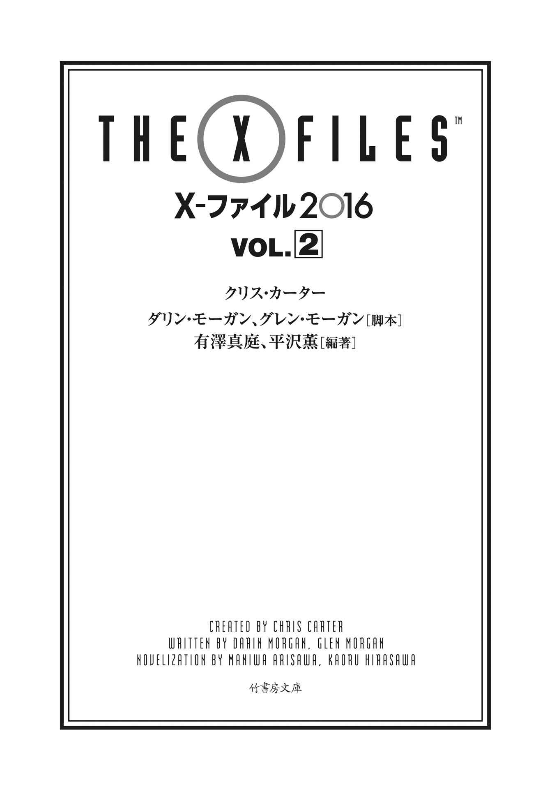
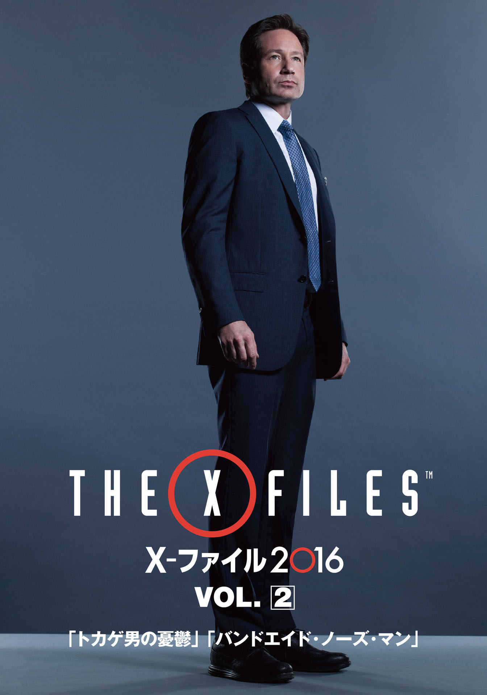
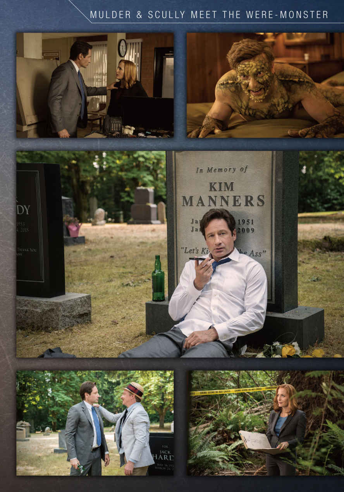
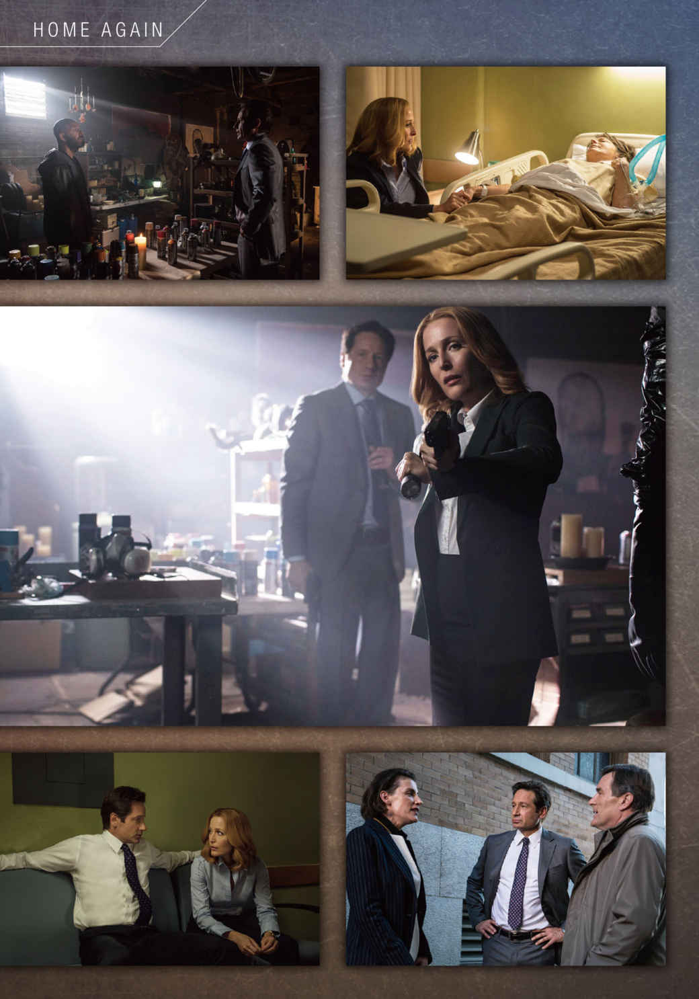
登場人物紹介
フォックス・モルダー .........FBI捜査官。超常現象事件などを担当するX-ファイル課所属。
ダナ・スカリー .........FBI捜査官。超常現象事件などを担当するX-ファイル課所属。
ウォルター・スキナー .........FBI副長官。
アナベル .........性転換した娼婦。
ガイ・マン .........ケータイ・ショップに勤める男。
ルマノビッチ .........精神科医。
ドロス .........フィラデルフィアの刑事
ダリル・ランドリー .........フィラデルフィアのホームレス地区の再開発計画推進者。
ジョセフ・カトラー .........フィラデルフィアのホームレス地区の再開発計画推進者。
ナンシー・ハフ .........バックス群教育委員会委員長。
トラッシュマン .........謎のアーティスト。
マーガレット・スカリー .........ダナの母。
ウィリアム・スカリーJr .........ダナの兄。
チャーリー・スカリー .........ダナの弟。
メリッサ・スカリー .........ダナの姉。かつて陰謀に巻き込まれて死亡。
ウィリアム .........モルダーとスカリーの息子。現在15歳。赤ん坊の頃に養子に出され、現在の居場所は不明。
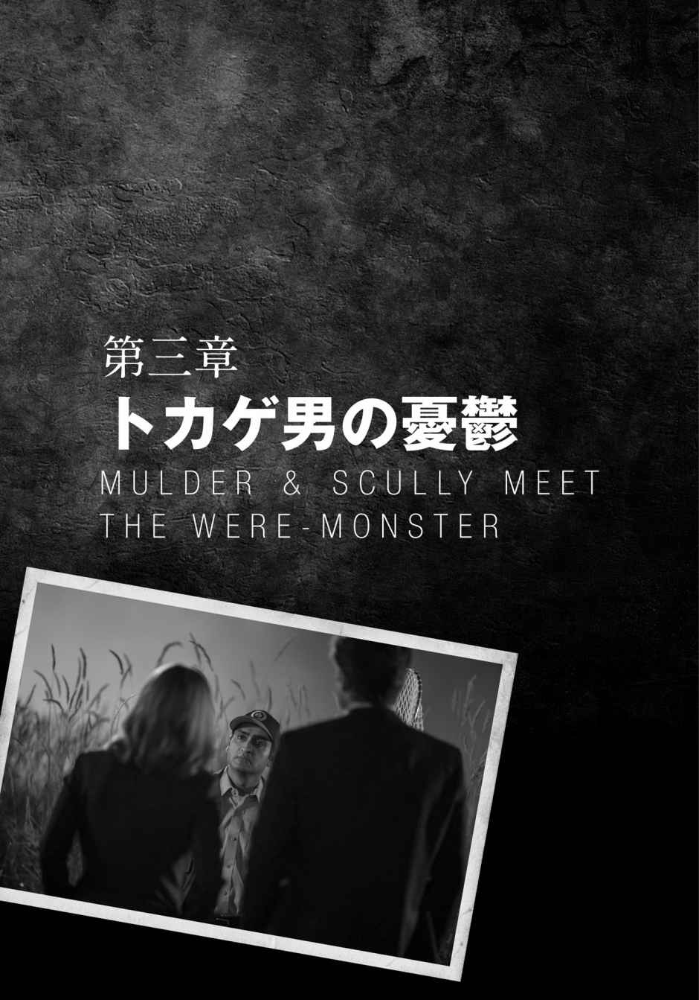
１
森／シャワン／オレゴン州
その夜、オレゴン州シャワンの森の中から見上げると、空の中央には大きな満月があった。満月は黄色ではなく、うっすらと雲がかかってブルーグレイの妖 しい光を放っていた。昔ながらのホラー映画で狼男が出現するときには、決まってこういう月が空に出ていることになっている。
だが、その満月の下、森の中でデートをしていたのは、ホラー映画の定番登場人物である高校生の少年少女ではなく、そろそろ中年に差し掛かりそうな小太りの男と女だった。その男女──ストーナーとチックがやっていたのは、もちろんお月見ではないが、かといってデートというのともちょっと違うのかもしれない。ふたりはお互いを見つめ合うのではなく、それぞれが自分の手に持った紙袋の上に屈み込み、袋に入れた塗料から立ち上 る匂 いを嗅 いで、ハイになっていた。静かな森に時折聞こえて来る虫の声に混じって、ふたりが放つ〝スー、ハー〟という呼吸音が響いている。
男は、くしゃくしゃの髪に、鼻の下から顎 全体を覆う髭 を生やし、格子柄のネルシャツの上にコーデュロイの襟の付いたジーンズの上着を羽織っている。女は長いカーリーヘアで、Ｔシャツの上にジーンズのチョッキ。ふたりとも、悪事を働きそうにはない、人の良さそうな風 貌 で、およそオフィスで働く風には見えない。おそらくブルーカラー系だろう。
やがて、いたずらがしたくなったのか、チックは袋に顔をくっつけて吸引を続けながら、片手で、隣に座っているストーナーの脇 腹 をくすぐり始める。ストーナーは、笑いながら、彼女の手から逃げようとする。
「おいやめろって、くすぐったいよ。そんなことしたら、鼻からペンキが出ちゃうだろ。俺の顔、ペンキが付いたんじゃないか？」
そう言われたチックは、彼の顔を見上げるが、ハイになっている彼女は、ふと、彼の顔よりも、その後ろの空で輝いている月のほうに目を奪われてしまう。それにどっちにしても、ふたりはすでに、鼻から頰 から顎まで、ペンキでベトベトになっている。
「あの月、すごいよ、見てみてよ」
チックはストーナーの顔を月のほうに向けようとする。しかしハイになっている彼はとんちんかんな方向を見上げるので、彼女は男の顔を手で押さえて、月を見上げさせる。
「わぉ......」
「あんな月を見ちゃうと、思うよね......人生はなんて素晴らしいんだろうって。いつもラリってるばかりじゃもったいないって思わない？」
「俺はこういう月を見ると、狼男になりたくなるよ」
「狼男になったら、何するの？」
「とりあえずハイになる」
と、突然、男の悲鳴が聞こえ、何かが森を歩き回る足音がする。ふたりは音のする方を振り返る。
「なんだ？」
「ああああ！」悲鳴がまた聞こえてくる。
「あっちか？」
すぐ近くから聞こえてくるようだ。ストーナーが声の聞こえてきた方に歩き出すと、チックは彼の背中にしがみついて彼に付いていく。ふたりが鬱 蒼 とした樹木の隙 間 から、男の悲鳴のする方を覗 き込む。月の光が弱く、細かいところまでは見えないが、何者かが誰かを襲っているような光景が見えた。
その何者かは、ふたりの気配に気づいたのか、両手を顔の傍に置いて全ての指を大きく開き、ちょっと腰を落として、「ガァーッ」というような声を上げながら、こちらを振り向く。昔ながらのモンスターが敵を威 嚇 するときの定番ポーズだ。
正面から見えたその顔は、人間のものではなかった。基本的な造形は人間と同じようだが、頭部も顔もある種のトカゲのような気味悪い突起物でびっしり覆われている。特に顔の左右からは、鋭く長めの突起物が出ている。そして、目は赤い。その手は二本、足も二本のようだが、全身が爬 虫 類 のような鱗 で覆われているようだ。その姿は──まさに〝トカゲ男〟だ。そのスリムな体型は五四年製作のユニヴァーサル映画の名作『アマゾンの半魚人』を連想させる。あっちは魚だが、こっちはトカゲではあるが。
ふたりは怪物お決まりの威嚇ポーズに対し、同じくお決まりの反応で返す。
「うわあーっ！」
「キャーッ！」
ふたりは悲鳴を上げて、一歩後ずさった。が、そこから先はちょっと定番 ではなかった。お約束通りなら、そのモンスターが目撃者のふたりを襲うところだが、モンスターはふたりの間を通り抜け、森の奥へと一目散に去って行ったのだ。しかも走るときに、なんだか足を女子高校生ふうに、後に跳ね上げているように見えたのは、気のせいだろうか。いやいや、とストーナーは自分に言い聞かせる。自分は今、ハイになっている。だから幻覚を見てしまったのかもしれない。そうだ、チックに聞いてみようじゃないか。
「おい、今のは現実か？」
しかしチックもストーナー同様、自分がハイになっていることはわかっているので、この問いに自信を持って答えることはできない。う、ううん、どう答えようかなあ......と思いながら、チックがとりあえず笑顔を浮かべると、近くから男のうめき声が聞こえてきた。ふたりが声のした方を覗き込むと、男がうつ伏せに倒れている。さっき、トカゲ男に襲われた男ではないだろうか。ふたりはそう思って、すぐさま男に駆け寄る。
「おい。ちょっと。おい。あんた、大丈夫か？」
ストーナーが男の身体を仰向けにすると、男は上体を起こして、返事をした。
「うん、多分、大丈夫だ」
男はカーキ色のシャツと上着を着て、胸元にバッジをつけている。どうやら、動物管理局の職員のようだ。
「ちょっとあんた、大丈夫？」
さらにチックが問いかける。なんだこいつ、ハイになりすぎだろ。ストーナーはチックに注意する。
「おい、それはもう俺が聞いたって」
すると、チックが答える。
「違うよ、この人 じゃなくて、こっちの人 に言ったんだよ」
ストーナーがチックの指差す方向を振り返ると、そこにもうひとり、男が仰向けに横たわっていた。
「その人」
チックがもうひとりを指差す。
「うわ、これは！」
その男の首は真っ赤で、崩れて得体の知れない形になっている。何かに首の肉を嚙 み取られたかのように大きく切り裂かれていて、すでに大量の血が流れ出した後のように見えた。男の目は大きく見開かれたままで、その表面は濁り始めている。あらためて触るまでもなく、もう死んでいるのがわかる。
「こっちは......大丈夫じゃないかも」
ストーナーは、とりあえず、紙袋の中身をもう一度、吸うことにした。
２
Ｘ─ファイル課／ＦＢＩ本部地下室／ワシントンＤ．Ｃ．
「私は信じたい（I WANT TO BELIEVE）」
壁の掲示板に貼 られたＵＦＯが森の上空を飛行しているポスターには、そんなフレーズがくっきりと書かれている。このポスターは、フォックス・モルダー捜査官がＸ─ファイル課に所属された時から、壁に貼られていた。ＦＢＩの中でも、特殊な部署であるＸ─ファイル課は、現在証明されている科学では解明できない事件だけを扱う部署だったが、政府が隠しておきたい陰謀をしばしば暴きそうになったため、何度も閉鎖されてきた。そんな歴史の中で、このポスターも何度も失われたが、この課が再開されるたびに、なぜかまた新しいポスターが貼り出されることになる。今回のＸ─ファイル課の再開は本当に久しぶりだったが、今度もスカリー捜査官がどこからかこのポスターを持ってきて貼り出した。
しかし、現在、このポスターには、鉛筆が何本も突き刺さっている。そして、まさに今、モルダーが、このポスターの斜め前にある机に座り、新たな一本をこのポスターに向けて投げつけて、見事に突き刺したところだ。モルダーは机上のファイルを取りあげて、パラパラとめくって中身に目を通しては、つまらなそうにそれをゴミ箱に放り投げて、また、ポスターに向かって鉛筆を投げつける。モルダーの足元のゴミ箱は、彼が放り投げたらしいファイルで溢 れ、それらは床にも散乱していた。再開されたばかりのＸ─ファイル課の部屋は、まだ雑然とはしていず、資料は茶色いボール紙の箱に収納されているし、明るいグレーの掲示板にも、同じ色の壁にも、貼られている紙は少ない。この部屋の中で、このポスターはかなり目立つ存在だった。
退屈すると鉛筆を投げつけて突き刺す、というのは、昔から変わらないモルダーのクセだ。だが、かつては鉛筆は天井に向けて投げつけられていて、Ｘ─ファイル課の彼の席の上の天井には、何本も鉛筆が突き刺さっていた。モルダーがＦＢＩに追われる身になって地下に潜伏していた時も、鉛筆は彼の隠れ家の天井に突き刺さっていた。それが今、ポスターに向けて投げつけられているのは、理由がある。モルダーは今、このポスターが表明している「私は信じたい」という宣言に、疑問を抱いてしまっているのだ。
この言葉はかつて、モルダーの信念を表す言葉でもあった。自分以外のすべての人々によって否定されても、エイリアンと政府による陰謀の存在を信じ、超常現象の存在を信じ、そして、それらの真相を追求することが自分の使命だと信じていた時の──。しかし今、彼は自分の信念について、以前ほど確信が持てなくなっている。
「モルダー......私のポスター に何してるの？」
モルダーが声のする方を見ると、長年、この課で組んできたパートナーのダナ・スカリーが、部屋の戸口に立ってポスターの惨状を眺め、片 眉 を吊 り上げていた。今日のスカリーは、少しだけブルーがかったグレイのパンツスーツで、その下には同系色の燻 んだブルーグレイの襟のないブラウスを着ている。モルダーはごくわずかにブルーがかった白いワイシャツに、鈍い臙 脂 色に細い黒い線の模様が入ったネクタイ。ふたりともいかにも捜査官らしい服装だ。モルダーは、スカリーの問いに答えて、最近の自分の心境を話すことにした。彼女には、なんでも話すことができる。
「スカリー、Ｘ─ファイル課が閉鎖されて、僕たちがいなかった間に、〝説明のつかないこと〟がたくさん解明されてしまったらしいよ」
モルダーは机の上から大判の白黒写真を拾い上げて、スカリーに見せる。
「〝デスバレーの動く石〟──あのデスバレー国立公園の塩類平原レーストラック・プラヤにある、ひとりでに動く石は、単に地面に氷が張って、溶けるときに岩を動かしただけなんだそうだ。氷だぞ」
スカリー捜査官は、話を聞きながら、やれやれという顔をして、モルダーの向かい側の椅 子 に腰かける。モルダーはこの頃 、こういった類 の話をすることが多く、スカリーは少々、食傷気味なのだ。
モルダーはそんな彼女の反応にお構いなしに、謎の岩石モンスターが映ったモノクロ写真を見せる。
「僕は謙虚な性分だから誰にも言わなかったけど、密 かに、この動く石はコロラド州で何度も目撃された謎の岩石モンスターと関係があるんじゃないかとにらんでいたんだ。でも、このモンスターの正体は、地元の造園会社が作ったマスコット・キャラクターだった」
モルダーは、広告のカラー写真を見せる。色とりどりの花が咲いた円形の庭園の前で、先ほどの岩石モンスターが、両脇を金髪のチアリーダーに挟まれてポーズをとっている。背後にはプライマリーカラーの風船の束が飾られ、『スタンリーのホーム＆ガーデン堂々オープン』と書かれたバナーが吊 してある。開店記念でガーデンパーティが催されるらしい。無料のフラワーアレンジメント講習会もあるようだ。
モルダーは、その写真をひょいと背中の方に投げ捨てる。
「すごいよ、新鮮な目、曇りのない目で、昔のファイルを見直すと驚くよ。僕は賢くなったわけじゃないが、少しは分別がつくようになった。〝アマリロのアルマジロ男〟にしろ、〝ワラワラの毛むくじゃらなんちゃら〟にしろ......」
彼は、アルマジロ男の前世紀風イラストと、黒いシルエットの映った白黒写真をスカリーに見せては、またひょいと投げる。
「こういった事件はだいたい、大学生のいたずらか悪ふざけか、暇人かイカれた連中のでっちあげだ。それでも説明がつかない場合は、氷のせい だ」
「モルダー、薬ちゃんと飲んでる？」
スカリーは尋ねる。モルダーはかつてスカリーと一緒に暮らしていた時に鬱 病になったことがあり、その薬物治療は今も続いているはずなのだ。
モルダーはその問いには答えず、立ち上がると、ポスターの前に行って鉛筆を一本づつ引き抜きながら、話しはじめる。
「超常現象の先駆者チャールズ・フォートは、全人生を自然界や科学的な異常現象の研究に捧 げ、四冊の本を著 した。ぼくはその全部を暗記している」
モルダーはここでちょっと自慢げにスカリーを振り返る。それからまた、鉛筆を引き抜く作業に戻る。
「だけど、フォートは人生の幕を閉じるとき、時間を無駄にしたんじゃないかという自己疑念にとらわれたんだ。僕は晩年の彼が感じていた虚しさがよくわかるよ」
モルダーは鉛筆を全て引き抜き終わると、机に腰かけて、鉛筆の先を上に向けて、向きを揃 えていく。
「僕は中年なんだ、スカリー。そうは見えなくてもね」
スカリーはその言葉の後半には異論があるが、彼女がそれを口に出そうとするより先に、モルダーが両手でそれを制するジェスチャーをしたので、開きかけた口を閉じる。
「子どもっぽいことからは卒業する時期なんじゃないかな。サスカッチや蛾 男やツノウサギなんかからさ。もちろん、仕事に復帰するのは素晴らしいことだよ。だけど、僕は本当に、この先ずっとモンスターを追いかけて、一生を終えたいんだろうか？」
「事件の捜査依頼が来たわ、モルダー」
スカリーはモルダーの言葉には答えずに、業務連絡をする。
「新しい事件よ、モルダー。モンスターが 絡んでるの」
モルダーは、それを聞くとくるりと「私は信じたい」と書かれたポスターの方を振り向いて、ポスターに鉛筆を投げつける。また、命中だ。
森／シャワン／オレゴン州
オレゴンの森の事件現場は緑が鬱 蒼 と茂り、昼でもなお薄暗かった。空気もひんやりとして湿度が高い。スカリーは目撃者の証言によって描かれた、トカゲ男の似顔絵を見ていた。
「証言によると、犯人だと思われるモンスターは、目は三つ、またはひとつだそうよ」
その似顔絵には、角が何本も生えたトカゲのような生き物の全身と頭部が描かれていた。モルダーは腰に手を当て、現場周囲の木々を見回す。
「誰も写真を一枚も撮ってないなんてヘンじゃないか。今どき、誰でもスマホを持ち歩いてるのに」
スカリーが持っているファイルには、目撃者の証言も記されていた。
「現地にいる間に、目撃者の話を聞く？」
モルダーはスカリーの肩越しにファイルを覗き込んだ。このトカゲ男を見たという男女の証言を書き取ったレポートが綴 じられてあり、その上に目撃者ふたりの顔写真がクリップで留めてある。そのふたりは普通の勤め人ではなさそうな人相なうえに、その口元の周りが顎の先までたっぷりと金色の塗料に染まっていて、ふたりが明らかにハイだったことがわかる。
「んぁぁ......」
モルダーはうめいて、写真から目を背ける。スカリーは続ける。
「とにかく、このふたりは謎のモンスターが動物管理局の職員を襲うのを見たって言ってるわ。でも、助かった局員は、自分を襲った相手の姿は見ていないと言ってる」
ファイルの隣のページには、その動物管理局員の写真もクリップで止められている。そのインド系の男性は真面目な好青年のように見えた。
「もちろんさ。ピューマは背後から獲物を襲うからな。動物管理局の職員はピューマを見たという通報を受けて、それを捕獲しにここにやって来た。彼を襲ったのはピューマだよ！ もうひとりの犠牲者を殺したのもそうだ」
「地元警察もそういう見解だったわ。一夜明けて現場付近の捜索を行って、あっちの場所で、さらに三体の遺体を見つけるまではね」
スカリーは遺体発見現場に向かった。バリケードテープの張られた古い大木の根元には、人が何人も楽に入りこめそうな穴がぽっかり開いていた。モルダーはそれを見て、新たな犯人像を挙げる。
「犯人は狼だよ、スカリー。狼は獲物を巣に持ち帰る習性があるんだ」
スカリーは大木の根元に横たわる三体の遺体の写真と、犠牲者の首元を大写しにした写真を見て検証する。
「遺体の傷痕 はどれもまったく同じだわ。ところが三人目の犠牲者だけ、衣服を何も身につけていなかった」
モルダーは、現場写真には見向きもせずに、辺りをぶらつきはじめる。
「ヌーディストだったのかもな。裸で夜中のハイキングをしていたら、狼だかライオンだか熊だかに襲われた。三匹に同時に襲われたのかもな。楽しそうじゃないか」
モルダーはまったくやる気がない。スカリーはファイルから目を上げて、モルダーに視線を送る。
「傷痕が同一なのは、人間による犯行に多い特徴よ、モルダー」
「よせよスカリー、プロファイリングには、モンスター探しよりもずっと前にウンザリしてる。連続殺人犯なんて、どいつも同じだよ」
スカリーは、やっと振り向いたモルダーに、少し強い口調で語りかける。
「モルダー、あなたが今、人生に疑問を抱いているのはわかったわ。でも、人が殺されているのよ。私たちで犯人を阻止して人命を救えるなら、それは間違いなく有意義なことよ。犯人が動物でも人間でも、それ以外の何か でもね」
スカリーは「それ以外の何か」と言いながら、モルダーの前で、先ほどの三つ目の怪物のスケッチをヒラヒラと振って見せる。
「わかったよ」
モルダーはそのスケッチを指差して、宣言する。
「でも言っておくよ、スカリー、この犯人の目は二つだ」
ドライヴイン／オレゴン州
深夜。二つの 赤い目をしたトカゲ男は、長距離トラック運転手が給油や食事をするためのドライヴインの暗がりに身を潜めていた。すぐ近くでは娼 婦 のアナベルが、駐車しているピックアップトラックの運転席によりかかるようにして、客をひっかけていた。
「一緒にパーティしない？ ねぇ、いいじゃない。今日は満月よ、ベイビー。はじけましょうよ。料金は、ふたりでひとり分にお負けしとくわ。ひとりだったら......」
ブロンドの長髪に真っ赤な唇、黒い肌、ピンヒールを履いた大柄な美女、アナベラは、夜の暗さの中では一見、大柄で派手な美女に見えるが、よく見ると彼女が美しい女性の姿に装った男性だと気づかされる。そういうタイプの美女がお好みの男性もいるが、このトラック運転手は違ったようだ。
「またにするよ」
トラックは、アナベルを取り残して走り去ってしまった。
「何よ、ケチ！」
アナベルがトラックに悪態をついて、ふと振り返ると、そこに奇妙な生物の姿が。
「きゃーーっ！」
アナベルは大声で叫ぶと、ハンドバッグを両手で摑 んで、トカゲ男の顔を目がけて振り下ろした。
３
ドライヴイン／オレゴン州
「すごい一撃だな」
モルダーは、アナベラのバッグの中央にぽっかり開いた穴に感心しつつ、持ち主にバッグを返した。アナベラがモンスターを撃退してから、まだあまり時間が経っていない。モルダーとスカリーは事件の通報を聞いて、彼らが扱っている事件と関わりがあるのではないかと考えて、目撃者のアナベラに事情聴取に来ていた。アナベラは、自分がモンスターを撃退した時の、コントロールの良さを自慢する。
「バッグがツノに命中したんだと思うわ」
「ふむ」
スカリーが腕組みをしながら確認する。
「ツノがあったの？ ユニコーンみたいに？」
「ツノはあったわよ。でも一本じゃなくて、後頭部に何本もあるの、ツノトカゲか何かみたいに」
「もしかして、こんなやつだったかい？」
モルダーは、目が三つあるトカゲ男のスケッチを見せた。
「いいえ。目は二つしかなかった。それからパンツをはいてたわ」
「トランクス？ それともブリーフ？」
モルダーはなぜそんな質問をするんだい？ といいたげな顔でスカリーの顔を見るが、アナベラはそれに構わず即答する。
「白いピチピチのブリーフよ。昔の私と同じ。私、去年、性転換したの」
「どっちに行ったか見たかい？」昔の私 は無視をし、モルダーは聞いた。
「あっちよ」
アナベラが指差しながら言う。
「おまわりさんにもそう言ったのよ、でもおまわりさんは、私がクスリでラリってるっていうの」
「そうなの？」
モルダーが尋ねると、アナベルは〝そんなの当たり前でしょ〟というジェスチャーで答えた。
「もちろんよ」
その答を聞いて、モルダーとスカリーは顔を見合わせた。
パトカーから無線の音が聞こえて来る。
〈被害者を襲った動物はドライヴイン南西に広がる野原の方へ逃走した模様。範囲が広いので応援を頼む。逃走した動物はツノが複数生えておりかなり大型。なお被害者の話に疑わしい点があるため、不審人物も含め近隣の目撃情報を至急集めてください。現在二一号線は南ジャンクションまで交通規制中。現場検証が済み次第、解除の予定。各車輛は応答願います。繰り返します。被害者を襲った動物は......〉
その頃、同じドライヴインの駐車場の端で、背の高い草むらを覗き込みながら歩いている男がいた。それは、先日のトカゲ男襲撃事件の生存者だった、動物管理局職員だ。クリーム色のワイシャツの上に、ダークブラウンの管理局のユニフォームを着て、ユニフォームと同じ色のキャップを被り、片手には輪の形をした捕獲網を持ち、もう一方の手には網状の捕獲網を持っている。彼はインド系の青年で、黒髪を七三に分け、黒い目は大きく、眉も太く、唇も厚いという、濃い顔立ちだ。小柄で中肉、敏 捷 そうに見える。きっと普段は陽気な表情をしていることが多いのだろうが、今はどこか怯 えたような表情をしている。
昨夜に続いて、今夜も月は満月に近いが、空は曇り気味で、月明かりはあまり明るくない。さらに霧も立ち込めてきており、何か探し物をするには、視界はあまり良くない。職員は、左右に目をキョロキョロさせながら、小さな声で呼びかけて、何かをおびき寄せようとしていた。
「ヘ、へェェイ......」
職員は口笛を吹こうとするが、スピスピといった息が漏れる音がするばかりで、何の音色もでない。
「何かみつけたかい？」モルダーが声をかける。
「うわ、驚くじゃないか！ 後ろからこっそり近づくなよ！」
出し抜けに後ろから声をかけられた職員は、大声を上げて振り返った。
「ごめんなさい」
スカリーはそう謝ってから、その男の顔に見覚えがあることに気づく。
「あら、あなたこないだの夜に襲われた動物管理局の人じゃない？」
「そうだ。パシャだ」
「今夜、この辺りで、ヘンな生き物を見た人がいるの。心当たりがないかしら？」
「知らない。僕は、さっき、迷子の子犬か何かががこの辺をうろついているという通報があったから来たんだ......子犬でありますようにと祈りながらね。だって犬や猫なら、僕にも捕まえられるから。でも、それより大きい生き物ってことになると、もう、考え直さなくちゃいけないかもしれないから......」
「考えなおすって、職業についてかい？」モルダーは尋ねる。
「いや、人生について......」パシャが答えると、突然、すぐそばで大きな唸 り声が聞こえた。
「グアー」
すると、パシャは、あっという間に何も言わずに、声がしたのとは反対方向に逃げ出していき、見えなくなる。モルダーとスカリーは声のした方へと、背の高い草むらに分け入っていく。スカリーは静かに銃を抜いて構える。モルダーも慎重に構えた、が、それは銃ではなく、スマートフォンだった。彼がスマホを構えると、なぜかカメラのフラッシュが繰り返し何度も光った。
「何してるの？ モルダー......」
「そいつが目撃証言通りの顔をしているのか、写真を撮ってやるんだ」
「私はもしそいつが似顔絵どおりなら、全弾をお見舞いしてやるわ。そいつがアナベラが言ったみたいに下着姿でもね」
ふたりがそう言いながら、背の高い草の中を移動している間にも、モルダーのスマホのフラッシュは意味もなく何度も光る。この光は捜査の邪魔だ。
「ちょっとモルダー......」
「ごめん、操作に慣れてなくて。これ、新しいアプリなんだ。ちゃんと動いてるのかな、これ」
スカリーはいらだってモルダーのスマホを覗き込み、画面に表示されている画像に目をとめた。
「それ、何？」
人の首のアップだった。喉 の肉が大きくえぐり取られている。モルダーがスマホを持った手を下げると、ふたりの足元には、今、写っていた死体が、頭をこちらに向けて、横たわっていた。
いつの間にか満月は雲に覆われて、辺りは暗い。スカリーは死体のそばにひざまずき、懐中電灯で死体を照らし出し、検視する。こういう時には、スカリーの医師としての能力がものをいう。
「殺されたばかりね。まだ温かい」
スカリーがそう報告すると、背後で唸り声のような音がして、モルダーが振り返ると、少し離れた草むらの前を、似顔絵で見たようなシルエットが走っていく。モルダーはすぐさまそのシルエットを追いかけながら、前方にスマホを向ける。相変わらず、スマホのフラッシュは無意味に何度も光り続けている。モルダーは追いつけず、怪しい影はドライヴインの駐車場に向かい、トラックが数台駐車している辺りで姿を消してしまう。
モルダーが駐車場の中を、正体不明の何者かが隠れていそうな暗がりを覗き込みながら、注意深く歩いていく。すると、背後から何かが近づく気配がした。モルダーが振り返った途端、彼のスマホのフラッシュが光り、驚いた相手が悲鳴を上げた。
「わぁ！」
それは先ほどの動物管理局職員パシャだった。彼は早口で説明した。
「あっちでもの音がしたから、こっちに逃げてきたんだよお！」
相手がトカゲ男ではなかったことにがっかりしたモルダーは、すぐに向きを変えてトカゲ男の捜査に戻るが、またスマホのフラッシュが何度も光る。
「あんたのスマホ、故障してんの？」
パシャが尋ねる。
「わからない。アプリの調子が悪いみたいなんだ」
「写真を撮りたいのかい、それともビデオ？」
「わからん」
「なら、設定を見たら」
「どこだって？」
「だから、設定のところに行って......」
と、パシャがモルダーに説明しようとしていると、そこに何者かが近づいていき、ちょうどモルダーのスマホのフラッシュが光って、光の中にその姿が浮かび上がった──トカゲ男だ。
「うわあああ！」
「ひゃあああ！」
モルダーとパシャが発した悲鳴は、草むらの中で死体の検死を続けていたスカリーの耳に届いた。悪い予感にかられた彼女は、モルダーたちの悲鳴が聞こえた駐車場の方に戻ってくる。すると、駐車したトラックの間に、モルダーとパシャが倒れていた。
「モルダー！」
モルダーは仰向けに手足をまっすぐに伸ばし、硬直したような姿勢で倒れていた。スカリーはそのかたわらにひざまずいて額に手を当て、それから頰に手を当てる。
「モルダー！」
ひと声唸って、モルダーが意識を取り戻す。
「ああ、大丈夫だ」
その声はもう、平常通りだ。
「血がついてるわ」
スカリーが手についた血を見て言うが、モルダーは答える。
「僕の血じゃない」
すると、少し離れた、パシャが倒れている辺りから、声が聞こえて来る。
「あう......」
スカリーが振り向くと、パシャがうめき声を上げながら、身を起こしていた。パシャは網がズタズタに破れた捕獲網と、輪がなくなって折れ曲がったポールだけになった捕獲網を両手に持ち上げて、うんざり顔で見つめている。
「いい、もう限界だ」
パシャは、捕獲網とポールを力無く取り落とした。
「......やめる」
彼はポツリと呟 くと、帽子を足元に脱ぎ捨てて去っていった。
スカリーはモルダーに向き直り、トカゲ男のことを尋ねる。
「相手を見た？」
モルダーは微笑んで、スカリーにスマホを振ってみせる。
「写真を撮ったよ！」
すると再び、さらなる唸り声がして、トカゲ男のような姿をしたものが、駐車したトラックの向こう側──モルダーがいるのとは反対の方を走って行くのが見えた。モルダーとスカリーはすぐさまトラックの正面を回りこんだが、そこにはトカゲ男の姿がなく、ふと音のした方を見ると、駐車場の向こう側で、仮設トイレのドアが閉じられるのが見えた。トカゲ男はトイレに隠れたのに違いない。スマホを構えたモルダーと銃を構えたスカリーは、静かにトイレに近づき、トイレの左右に分かれて立つ。モルダーがドアの取っ手を摑み、引き開けた。すると、そこにいたのはトカゲ男ではなく、ただの中年男だった。パナマ帽を被り、白地にごく細いライトブルーのストライプの上着というオシャレな服装をしている。まるい大きな目に小さな口髭をたくわえた、愛嬌のある顔をした小太りの男だ。彼は、ズボンをくるぶしまで下ろして、便座に座っていた。男はモルダーとスカリーを見て、ムッとした顔をして咎 める。
「ちょっと！」
「ごめんなさい」
スカリーはすぐさま謝って、トイレとは逆の方向に向きを変える。
「閉めてくれません？」
男にそう言われたモルダーは、
「もしかして、見なかったかな......？」
と、言いかけるが、スカリーと目で合図を交わしながら、それよりも先にトカゲ男を追った方がいいだろうと判断した。仮設トイレのドアを閉め、スカリーと一緒にその場を離れて追跡に向かう。
モルダーとスカリーが去って、少し後のこと──仮設トイレのドアがゆっくり開いて、さきほどの中年男が出て来た。彼は立ち止まってパナマ帽を脱ぐ。すると、彼の後頭部には、三本の小さな緑色のツノが生えているではないか。しかしツノはゆっくりと小さくなって見えなくなっていき、男は帽子を被り直し、歩き去っていく。その向こう側では、モルダーとスカリーが、まだトカゲ男を捜し続けていた。
４
検死室／オレゴン州
検死室では、青い手術着姿のスカリーが、さきほど、ドライヴインの近くの草むらで発見された死体の検死をしていた。モルダーはスカリーの仕事を遮 って、自分が撮ったスマホの写真を彼女に見せようとする。モルダーはもう捜査当初のやる気のなさとは打って変わって、すっかりやる気満々の、いつものモルダーに戻っている。元気すぎて、スカリーには少しうるさいくらいだ。
「これは耳だな。それか......足かも」
モルダーは、スマホで撮った画像をスカリーに見せようとするが、スカリーは、邪魔なモルダーの腕を押しやって、検死を続行する。
「モルダー......」
「こいつは......目を細めて見るとわかりそうだ......何が写ってるのか。それからこれは......」
スカリーがもう一度ため息をついた。スカリーはモルダーの話に付き合いながらも、手を止めることなく、着々と検視作業を進めていく。
「これは......ピントが合ってる！」
モルダーが自慢そうに見せた画像は、まだらの緑色の鱗状の皮膚に、赤い点がついているように見える写真だ。
「でもこれ、何なの？」
「クローズアップだよ。クリーチャーのね。ほら、気がついたかい、〝モンスター〟って言わなかった。それにサスカッチじゃないよ。絶対に動物だ......人間サイズで、体毛はない」
「疥 癬 病 みのサスカッチだったりして」
「あ、動画もあるんだ。ほら見て」
モルダーは、自分がトカゲ男と鉢合わせしてしまって、叫び声を上げた時の動画を見せた。しかしカメラはその間ずっと、モンスターではなく、モルダーの顔に向けられている。
「モルダー、レンズの向きが逆よ」
「ああ、アプリに慣れていなくてね。でもここを見てくれ」
動画に映るモルダーの顔に、突然、血が吹きかけられた。
「トカゲ男は、僕に血をかけたんだ。目玉から血を飛ばしたんだよ、スカリー。多分だけどね。前方がよく見えなかったのは、きっと僕の目に血がかかったせいだ」
「まだ血液の検査はしてないけど、犠牲者を襲ったときにモンスターに着いた犠牲者の血が、飛び散って、あなたに付いたんでしょうね。それに──動物は目玉から血を吹きかけたりしないわ」
「へえ、そうかい？ それをツノトカゲに言ってやれよ。ツノトカゲは敵から身を守るために、目玉から血を噴き出すんだ。これは科学的事実だ！」
モルダーは、ネットのツノトカゲを紹介しているページを、スマホで検索して、スカリーに見せる。モルダーの鼻息は荒い。しかし、スカリーは冷静だ。
「モルダー、インターネットはあなたにはよくないわね」
モルダーはめげずに、スマホのツノトカゲの画像を、スカリーに見せる。
「これは目撃証言の似顔絵と似てないか？」
「え？ じゃあ身長一八〇センチのツノトカゲに襲われたって言うの？」
「待った。とりあえず、自然科学の常識の範囲内で考えないか？」
「検死結果から言うと、被害者たちの首の咬 み傷は、人間の歯によるものよ」
「じゃあ僕らが探しているのは、人間の歯を持った、人間サイズのツノトカゲ？」
ふたりはちょっとの間、お互いの顔を見つめ合う。
「ちょっと笑えないか？」
モルダーが言うと、スカリーも微笑む。
「そうね」
「楽しそうだな、スカリー」
「ええ。楽しいわ。この面白さを忘れてた」
ふたりの間に、お互いを理解しあった者同志の、充実した沈黙が流れる。
「今日は大変な一日だったわね、モルダー。もうホテルに戻って寝たらどう？ モンスターの夢は見ないようにして」
モーテル／オレゴン州
モルダーがモーテルに帰って眠りについた頃、空には雲に覆われながらも満月がかかり、外ではコオロギの鳴き声がしていた。ここは自然が豊かな土地柄なのだ。モーテルの建築も、この辺りの森林地帯の自然を味わいにやってくる観光客のためなのだろう、室内は木の素材がたっぷり使われた山小屋風なデザインで、壁には動物の剝 製 の頭部がいくつも飾られていた。ベッドの上で眠りこけるモルダーも、壁に掛けられた鹿の頭部の剝製ふたつに見下ろされていた。しかし、モルダーの眠りは、悲鳴で中断される。
「わあ！ 怪物だ！ 助けてくれ！ モンスターが出た！」
モルダーはすぐさま起きて、モーテルの事務所に向かった。そこでは老いたモーテル経営者が頭の傷をアルコールで消毒しているところだった。事務所も客室同様、木の板を多用したインテリアで、壁には大きな熊のほぼ全身の剝製を始め、鹿の頭部や、トナカイの頭部、カモの全身など、たくさんの剝製が飾られていた。モーテルの経営者は痩 せて、皺だらけの老人で、頭髪はごく短く刈られているが、それは頭のてっぺんが薄くなっていることをカモフラージュするためのヘアスタイルかもしれない。髪はもう銀髪になっている。グレーのＴシャツの上に、褪色した茶色のナイトガウンのようなものを羽織った彼は、傷口を消毒し終わると、そのアルコールの瓶に口をつけてぐいっとあおった。モルダーは、事務所の戸口からひょいと覗いて、この老人に声をかけた。
「何かありましたか？ さっき悲鳴が聞こえたようだけど」
「あー、ああ。お騒がせしてすみません。うるさい客とモメてただけなんですよ。もう済んだので、部屋へおひきとりください」
「〝怪物だ〟って叫んでたけど？」
「無礼な客が私に言ったんですよ、延滞料金を払うよう頼んだだけなのに。それで怪物呼ばわりですよ、ヒドイ話でしょ？」
「まあね」
「でしょ。さあ、わかったら頼むから消えてくれませんか、こっちは気が立ってるので！」
モーテル経営者の声は大声ではないが、言ってる言葉は、かなりキツい。彼は湿布にアルコールを振りかけ、またその瓶から一口飲んだ。この人物には何か、気が動転することがあったらしいが、それを隠しているようだと踏んだモルダーは、自分で捜査することにした。モルダーが、モーテルの外に出るとドアを開け放したままの部屋があることに気づく。叫び声はこの部屋の客のものかもしれない。中に入ると部屋にあったのは、まず、寝乱れたベッド。テーブルにはファストフードの食べ残し。それとスマートフォン・ショップの店名とおぼしき、「スマートフォン・イズ...アス！」というロゴが印刷された紙袋。
ベッド脇のランプは、床に落ちていた。壁にかかった絵は曲がっている。鏡は割れている。ここで乱闘が行われたのだろうか。鏡の下の引き出しの上には、薬の容器が入っていた。モルダーはそのラベルを読む。
薬局 ライカン薬局
氏名 マン、ガイ
薬名 抗精神薬クロザピン
服用 一日一錠
これは、この部屋の泊まり客のものか？ 手がかりになりそうだ。モルダーは容器をズボンのポケットにしまう。
それから、床に落ちていた剝製を持ち上げる。ツノウサギだ。それをひっくり返すと、目の部分に穴が開いている。壁を見ると、剝製がかけてあったと思われる位置に、剝製と同じ大きさの穴が開いている。穴に手をひっかけて引っぱると、その羽目板張りの壁に作られていた隠し扉が開いた。
モルダーが入ってみると、扉の裏側はクッションになっていて黒いビニールで覆われている。その秘密の通路は、泊まり客たちの部屋の背後を通っていた。反対側の壁にも別の穴があり、覗いてみると、客室の様子が見えるようになっていた。モルダーが覗くと、それはスカリーが止まっている部屋で、安らかな寝息を立てる彼女の姿が見えた。モルダーは、スカリーが安眠する姿を見て微笑むと、そっと目を外してその場を去り、モーテルの事務所に戻っていった。さっきのモーテル経営者に、今度は本当のことを話してもらおう。
モルダーが、秘密の通路から、事務所に通じている扉を開けると、きしる音がして、事務所に飾られていた大きな熊のほぼ全身の剝製が前方へと動きはじめた。この剝製は、秘密の通路に続く隠し扉を隠すためのカモフラージュだったのだ。モルダーが、その扉からひょっこり顔をのぞかせると、モーテル経営者は、まだ消毒用アルコールの瓶からチビチビと飲んでいるところだった。モルダーは彼に、何事もなかったかのように声をかける。
「あ、どうも。製氷機はどこにあるのかな」
モーテル経営者は、モルダーが秘密の通路から出てくるのを見て、急に慌て出す。
「ちょ、ちょっと。あんた、一体なんなんだ？ そっちは従業員専用で立ち入り禁止だ。入っちゃい、いかんよ」
そこでモルダーがＦＢＩの身分証を取り出して見せると、彼の返答は、さらにしどろもどろになる。
「その......あれは防災上の設備なんだ。９・１１以降に作ったんだよ」
「通報はしない。こんなモーテルにチェックインすれば、経営者が覗き魔なのは想定内だよ。だけど推測するに、あの荒らされた部屋の何かが、ひどくあんたを取り乱させたんじゃないか」
「言っても......きっと信じちゃくれないよ」
モルダーがさらに促す。
「試してみろよ」
そこで経営者は渋々説明し始めた。
少し前、彼は秘密の通路で、いつものように覗きに夢中になっていた。彼はモルダーの部屋も覗いていた。ベッドに大の字になって横たわるモルダーは、真っ赤な競泳用パンツのような下着だけを身に付けていた。経営者は嬉 しそうに呟いた。
「んんん......いいいぞ......ピチピチだ！」
すると、別の部屋から、男の声がした。何かに向かって怒鳴りつけている。
「毎日同じだ！」
いったい、何が起きているんだろう。ケンカだろうか？ モーテル経営者は好奇心を刺激され、モルダーの部屋の覗き穴から目を離して、怒鳴り声のする部屋の穴を覗いた。怒鳴り声はまだ続いている。
「なぜだ？ お前なんか嫌いだ！ こんなのやってられないよ！」
その部屋に泊まっていたのは、口髭をたくわえた愛嬌のある顔をした──確か宿帳にはガイ・マンと書いた男だ。経営者が覗き穴から見ると、男は鏡に映る自分を指さして、大声でなじっていた。
「毎日お前の顔を見てたら気が狂っちまう！ もうたくさんだ！」
ガイは怒りのあまり、鏡に椅子を投げつけ、割ってしまった。それを見た経営者はこっそり呟く。
「鏡の料金は請求してやるからな」
ガイの怒りはさらに続く。
「それからお前！」
次に男が指差したのは、サイドテーブルの上だ。
「こいつめ！」
彼がサイドテーブルの上から摑み取ったのは、アラーム時計だった。その時計はタイミング悪く鳴りはじめた。
「明日、俺を起こすんじゃないぞ、わかったか！」
男が時計を床に投げつけると、時計は壊れて粉々になり、部品が空を飛んだ。
「うんざりなんだ」
彼は一体何を怒っているのか。興味を抱いた経営者が見続けていると──。
「ああ......まただ」
その男は急に立ち止まって、両手を見下ろした。
「後生だ！ これで最後にしてくれ」
そして叫び始める。
「おおお！」
彼は走ってさっき自分で割った鏡の前に戻り、顔を見続ける。
「おおお！」
するとどうだろう、鏡の中で、その男の顔がみるみるうちに変 貌 していくではないか。皮膚は鱗で覆われ、頭部にはトカゲのような突起物がいくつも隆起してきて、目は赤くなり、やがて身体も鱗で覆われ、爪 が伸び、トカゲ男の姿になっていく。覗き穴からその変身を見ていた経営者は、思わず叫び声を上げてしまった。
「うわー！」
その声に驚いたトカゲ男が振り向くと、そこにはツノウサギの頭部の剝製があった。どうやら悲鳴は、その剝製から聞こえてくる。トカゲ男が剝製を壁から引き剝がすと、そこになんと、人間の顔が──。
「うわー！」
「うわー！」
顔が露出されてしまったモーテル経営者も驚くが、そんなところに人がいるとは思ってもいないトカゲ男も驚き、ふたりは一緒に悲鳴を上げる。
「怪物だ！ 助けてくれ！」
経営者が助けを求める声を聞いて、トカゲ男は部屋から飛び出して逃げていった。
「......あれはモンスターだ」
経営者は気を落ち着けようと、もう一杯、消毒用アルコールをひっかけた。
「あんたが見た生き物はこいつか？」
モルダーは彼に三ツ目のトカゲ男のスケッチを見せた。
「でも目は二つだった？」
「ああ、目は二つだ。でも、この絵のモンスターだよ」
「そして、泊まっていたのは、この男だった？」
モルダーはスマホで撮った、仮設トイレに座るガイ・マンの写真を見せた。
「ああ、この顔だ。この男が怪物になったんだ」
モーテル スカリーの部屋／オレゴン州
モーテルのスカリーの部屋で、モルダーはベッドのそばを行ったり来たりしながら、夢中になってトカゲ男のことを話し続けている。スカリーはベッドに腰かけ呆 れ顔で聞いていた。スカリーの部屋の壁には狐の頭部を始め、いろんな剝製が飾られている。モルダーはさっき自分が覗いていた穴の部屋側にあった剝製が〝狐 〟だとわかり、洒落 にならないと思った。
「モンスターだよ、スカリー。単純にして明快だ」
モルダーは、こんなものは無用だとばかりに事件のファイルをベッドの端に投げ出す。
「しかもそれはただの、そんじょそこらにいるモンスターと違って、姿をコロコロ変えるんだ。人からモンスターになって、またモンスターから人になる。わかってるよ、君はこう言うつもりなんだろう、『でもモルダー、それは狼男の伝説よ、まだ狂犬病が医学的に発見される前に、人々が狂犬病の患者の暴力的な行動を説明するためにひねり出したお話なのよ』って。でもある種の伝説は、人々の無知から生み出されたんじゃなくて、実際に起きたことが元になって生まれたんじゃないかな？」
スカリーが何か言いかけるが、モルダーがその隙を与えない。
「君はこう言うつもりなんだろう、『でもモルダー、それはあらゆる科学と自然の法則に反するわ』って。その通りだ、スカリー、あらゆる既存の 法則にはね。でも、僕たちがここで出会ったこの生物が、生命に対する僕たちの理解に、まったく新しい認識を与えてくれる存在だとしたら？ あるいは科学の力で、自然に反する新種の生物が作り出されたんだとしたら？ 軍事会社や農業法人、巨大製薬会社による遺伝子組換え実験が暴走したのかもしれない。でなければ、この男は主任遺伝学者で、無謀にも自分を実験台にした結果、人間の肉を食らう悪魔に変身したのかもしれない」
スカリーは口を挟もうとするが、モルダーはそれを許さない。
「わかってるさ、君はこう言いたいんだろう、『でもモルダー、そんなのはまるで頭のイカれた人間の偏執的な妄言にしか聞こえないわ』って。僕はヤツが何者なのか、なぜこうなったのかは知らないよ、スカリー。だけど、これだけは言える。あれは正真正銘のモンスターだ」
スカリーはゆっくり頷 いて、微笑む。
「そうよ、モルダーはそうでなくっちゃ」
「じゃあ僕に賛成？」
「まさか！」
モルダーは、ベッドの上に投げ出された事件のファイルを指で突き刺す。
「じゃあ、この事実はどうなんだ？」
「どの事実？」
モルダーはスマホで撮影した便器に座る男──ガイ・マンの写真と、事件のファイルの犠牲者の写真を見せる。
「モーテルの経営者が〝モンスターになるのを見た〟という男が、被害者の一人の服を着ていた、っていう事実さ。仮設トイレで見た時はそれを見逃したんだ、僕らが追いかけてるのは動物だと思ってたからね。半分だけ当たってたわけだ」
「わかったわ。そうね、この男になぜ被害者の服を着ているのか、その事情を聞かないと」
「彼はもう、あのモーテルの部屋には戻ってこないんじゃないかなあ。でも、あの部屋で彼が持っていた薬を見つけたから、この薬を処方した医者に会おうと思う。彼の居所を摑む助けになるかもしれない」
「それはよさそうな捜査プランね」
「でも最初にしないといけないのは......」
モルダーは部屋の壁にかかる狐の頭部の剝製を見た。秘密の通路のことは、スカリーには言わないでおこう。
「このモーテルを引き払うことだ」
５
カウンセリング・オフィス／オレゴン州
モルダーは、ガイ・マンに薬を処方した、東欧系の精神分析医、ルマノビッチ医師のカウンセリング・オフィスに来ていた。そこは、誰もが東欧系の精神科医がカウンセリングをするならこう言う部屋だろうと想像する通りの部屋で、古いヨーロッパの家具とカーテン、壁には絵画、机の上には何かの胸像があり、昼でも窓にレースのカーテンがかかっているために明るくはない。居心地は良いが、あまり広くはない。医師自身も、薄くなった頭部に丸い眼鏡、古びているが仕立ての良さそうなスーツを身にまとった、いかにも な風貌をしている。もちろん、その言葉には東ヨーロッパ風のアクセントがあり、そのアクセントが、彼の語る話に、一種の信 憑 性 のようなものを与えているようにも感じられる。そして、その口調は、あくまでも静かで穏やかだ。
「昔々、人食い大トカゲに悩まされている村があった。この土地の巡査はこの生き物を退治しようとあらゆる努力をしたが、どうしても退治できなかった。それで、とうとう、彼はジプシーを訪れて相談した。どうやったらこの怪物を倒せるのかとね。するとジプシーは答えた。このモンスターを殺す唯一の方法は、緑色のガラスで作った槍 で盲腸を突き刺すことだとな」
「なぜ緑色のガラスなんだ？ なぜ盲腸を？」
ルマノビッチは手を振りながら、にこやかに答える。
「そんなこと知らんよ。古いおとぎ話では、怪物は常に何かに貫通されて滅ぶことになっているんだ。銀の弾丸や、木の杭みたいな、ね。明らかに祖先たちは現代の我々同様、インポテンツの悩みに取り憑 かれていたのかもしれないな？ それでこの巡査は、緑のガラスの槍で、怪物の盲腸を貫いた。しかし──」
ルマノビッチは〝核心〟に触れる前に一呼吸おいた。
「怪物が死ぬのを見ていて、巡査はハタと気づいた、彼は鏡に映る自分を見つめていたんだ。ずっと、彼自身が怪物だったんじゃよ、な？」
「彼は倫理的な人間なのに？」モルダーが素直な疑問を口にする。
「人間は、怪物は外の世界にいると思う方が楽なんだ。真の怪物は自分の中にいる、ということを受け入れるよりもね。しかし本当は、怪物は例えば、こことか、こことか、ときにはここにいる」
医師は自分の頭部を指し、次に心臓を指し、最後に盲腸を指した。
「すべてを心理学に集約することはできませんよ」
「君はそう思うわけだ。とにかく、この話を思い出したのは、君が捜査している容疑者が、自分は月が出ると狼男に変身するという妄想に苦しんでいたからだ」
「狼男？」
モルダーが持ってきた薬の容器を手にして医師が言う。
「失礼、〝トカゲ男〟だった。狼男は月曜日の患者じゃった。いずれにせよ、彼にはこの抗精神病薬を処方したが、たいして効いたとは思わんね」
「なぜですか？」
医師は頭を左右に振った。
「彼はかなり重症だった」
「先生の記録には、あまり情報が載っていませんでした。それにガイ・マンが本名とは思えない。どうしたら彼を見つけられると思いますか？」
「墓地に行ってみたまえ。彼にアドバイスしたんだ、次に症状が出たら手近の墓地に散歩に行けとな。人は誰でも、不安に押し潰 されそうな時がある。だがどんなに苦しくとも、墓に葬られ、永久の眠りについた時には解放される。墓地に行けばそれを思い出せるからな」
「カウンセラーらしくないアドバイスですね」
「私の経験談だ」
「お手間をとらせました、先生」
「あー......ちょっと待ちなさい」
ルマノビッチ医師はサイドテーブルに手を伸ばし、メモ用紙とペンをとり、紙に何かを書きつけると、一枚引きちぎってモルダーに手渡した。
「処 方 箋 だ......君用のね」
「僕用の？ なぜ僕に？」
「必要なければいいが、気になってね、どっちに、より抗精神病薬が必要なんだろうと。自分をトカゲ人間だと言う男か、それとも、その話を信じる男のほうか。どうかな？」
モルダーは処方箋をテーブルの上に置いて立ち去った。ルマノビッチ医師は静かに微笑み、モルダーの置いていった薬の容器から錠剤をたっぷりと手のひらに出すと、それを自分の口に放り込んだ。
スマートフォン・ショップ／オレゴン州
スカリーは、トカゲ男の部屋にあったロゴが印刷された紙袋──スマートフォン・ショップ「スマートフォン・イズ...アス！」の店舗の前に立ち、電話をかけていた。その店の外に面した部分は全てガラスばりで、インテリアは白と明るいグリーンを基調としていた。店内は明るく白いプラスチックの飾り棚には、最新型のスマートフォンがずらりと並べてある。よくあるタイプのスマートフォン・ショップだ。今は店内には一人も客がいない。あの仮設トイレにいたパナマ帽の男、ガイ・マンが、この店の販売員のユニフォームである、真っ赤なチョッキを着て、カウンターに寄りかかっていいた。その陽気なユニフォームはなかなか彼に似合っていたが、今はお客がいないからだろうか、彼は片手で顎を支えてカウンターに肘をつき、かなり退屈しているように見えた。
「モルダー、私よ。自分がこんなこと言うなんて信じられないけど......あなたの ツノトカゲ男を見つけたわよ」
「ほんとか？」
「ええ」
「どこにいる？」
「モーテルのそばのスマホの店。彼はここで働いてるらしいわ」
「すぐ行く」
「でもモルダー、今研究室から結果報告のｅメールをもらったんだけど、昨日の血液検査と矛盾してるの」
返事がない。
「モルダー？」
電話は切れていた。スカリーはため息をついて電話を切った。ドアを開けて店内に入ると、ベルがチリンチリンと鳴った。ガイ・マンはパッと起き直り、思いっきり営業スマイルを浮かべた。
「『スマートフォン・イズ...アス！』へようこそ。何をお探しですか？」
「いくつか質問してもいいかしら」
スカリーはＦＢＩの身分証明書を男の目の前に提示した。
スカリーからの電話を受け、モルダーは黄金色のフォードを飛ばして店まで来た。しかし、店の前にスカリーの姿が見えないのを訝 しみ、彼女の姿を探して左右を見渡しながら店内に入ると、そこに、スカリーがひとりで立っていた。彼女の周囲は、まるで室内に嵐が吹き荒れたかのような様相を呈していた。ディスプレイは倒され、床には色とりどりのスマートフォンが散らばっている。
「一体何が起きたんだ？」
「わからない。店にはトカゲ男一人しかいなかったから、店に入って彼に質問していいか聞いたのよ、そしたら突然、『辞めてやる』って叫んで、暴れだしたの。部屋中を荒らし回った後で、店の奥の倉庫室から外に飛び出してったわ」
「君は何してるんだ？ 援護なしに危険な容疑者に近づくのはマズイって知ってるだろう？ やつはどこへ行った？」
「あっちよ、裏通りの方へ行ったわ」
スカリーが示した方向を確認すると、モルダーはすぐさま彼を追って出て行った。後ろからスカリーは慌てて声をかける──。
「でもモルダー、研究所からの結果が......」
だが、その言葉はモルダーには届いていなかった。
墓地／オレゴン州
陽の光が降り注ぐ、真昼の明るい墓地は、周囲をやわらかな黄緑の樹々に囲まれていて、人影は少ない。墓地の中にもたくさんの樹木があり、時おり、遠くで鳥の鳴く声がする。もしも他の人間たちに煩 わされずに静かな散歩をしたいと思ったら、ここはそれに適した場所だろう。その静かさの中を、ガイ・マンは、浮かない顔で歩いていた。手には、緑色の酒瓶の入った、紙袋を持っている。彼は、辺りに誰もいないのを確かめると、その瓶からグイっと一口飲んだ。彼は、先日カウンセリングを受けた精神科医の助言に従って、墓地での散歩をしているのだ。医師は、墓地に来れば、〝人間は死ねばどんな悩みからも解放される〟ということを思い出して楽になれると言っていた。だが、彼は、まったく楽な気持ちにはなれない。この療法は、彼には効き目がないようだった。
その墓地へ、モルダーが自動車で乗りつけてきた。彼は、ガイ・マンが精神科医の助言に従うだろうと考えて、ここにやってきたのだ。彼が墓地の中を歩いていると、遠くの方にガイ・マンの姿が見えた。ガイは墓石の前で立ち止まり、片手を墓に乗せて、何やら思いにふけっている。モルダーは墓参りに来た人物のふりをして彼に接近しようと考えて、近くの墓石に供えてあった、白と黄色の花束を拝借し、ガイの方に歩いていく。そして、彼が立っている墓の隣の墓石前でひざまづいた。碑銘にはこうあった。
キム・マナーズ
一九五一年一月一三日生
二〇〇九年一月二五日没
ぶちかまそうぜ
モルダーは墓に花を供え、墓石の墓碑銘に一瞬手をやってから立ち上がり、手でこすって墓石の上の埃 を振り払った。それを見ていたガイは、モルダーの思惑通り、彼を墓参りに来た人だと思ったのだろう、モルダーに向かって、黙って酒瓶の入った紙袋を差し出してきた。〝ひと口、どうだい？〟という顔をしてモルダーを見る。モルダーは口で「結構です」の形を作って礼儀正しく断ってから、彼に話しかけた。
「最近、誰かお亡くなりに？」
「ああ。僕がね」
ガイは既に少し酔っ払っているようだ。モルダーが怪 訝 な顔をして彼の方を見ると、彼は説明を始めた。
「変に聞こえるだろうけど......数日前まで、俺は死ぬんだってことがわかってなかったんだ。いや、死というものがあることは知っていたよ。でも、本能的に死を避けてきた。でも知らなかったのは......何をしようと、最後にはこういう場所に行きつくってことさ」
男は辺りを見回して、手を振り回す。モルダーも思わず、彼と一緒に辺りを見回す。周囲は緑に包まれた美しい場所だが、そこにあるのは、冷たい、物を言わない墓石だけだ。
「確かに、考えると、理不尽だよな？」
モルダーはガイに話を続けさせようと、相槌を打つ。すると相手は乗ってくる。モルダーが先日、彼を見たのは、夜の暗い仮設トイレ、しかも一瞬のことだったので、彼を明るい場所でじっくり見るのは初めてだ。モルダーは彼を観察する。年齢は四〇代から五〇代くらいだろう。なかなか愛 嬌 のある顔をしている。性格も、本来は陽気なのではないだろうか。どこかお茶目で憎めない雰囲気を漂わせている。明るい茶色の髪に、口髭。目はくりんと丸くて大きく、話をしながらよく動く。そして服装には、特別なセンスが感じられる。頭にはおしゃれなパナマ帽。上着はほとんど白に近く、ごく細いブルーのストライプが入っている。その下のワイシャツは明るい水色。ネクタイは濃紺。そしてズボンは明るい燻 んだブラウン。その下に履いているのが白いブリーフなのは、先日の簡易トイレで確認ずみだ。ブリーフはさておき、このファッションは六〇年代の人気テレビシリーズ『事件記者コルチャック』の主人公の衣装にそっくりだが、おそらくそれは偶然だろうとモルダーは思った。
「まったくだよ、全然、納得いかない」
「詮 索 するつもりはないが、なんだかひどい悩みを抱えてるみたいだな。よければ話を聞くよ。話せば楽になるかも知れない」
「つまり......秘密を打ち明けろってこと？」
「打ち明けるべきことがあるならね」
モルダーはガイの方に向き直って、彼を正面から見つめた。ガイは何かを考えているようだ。が、ついに決心したらしい。
「よし、告白するよ。こんな無意味な人生は、終わりにしたいんだ」
ガイはモルダーの目を正面から見つめて、きっぱり宣言する。
「でも、ばかなことをしでかすつもりじゃないだろ？」
「いいや。そんなことはしないよ。僕はただ君を......」
彼はモルダーの目を見つめる。
「殺す」
何だって？ モルダーが、自分が聞き間違えたのかと思って、怪訝な顔をする。
「用意はいいか？」
ガイはそう言うと、大きな目をさらに見開いて、手に持っていた紙袋から、緑色の酒瓶を取り出し、目の前の墓石に叩 きつけて割ると、モルダーに向かって突き出した。
モルダーがそれをよけ、内ポケットから銃を取り出そうとすると、彼はそれを押しとどめる。
「ダメダメ、銃じゃ、ダメだ！」
ガイは意外なことに腕力が強く、モルダーの腕を握ると、彼を地面に投げつけた。モルダーの銃はどこかに飛んでいく。モルダーが倒れると、ガイが前に立っていた墓の碑銘が見えた。
ジャック・ハーディ
一九五三年三年七月
二〇一五年三月二四日
現ナマよりありがたきものなし
さらにガイは、モルダーを地面に叩きつけておきながら、彼に声をかける。
「大丈夫か？」
「え？」
モルダーが驚いていると、ガイはわざとモルダーの隣に、先ほど割った瓶を取り落とし、大げさに両手を広げて叫んだ。
「ああまずい！ 手が滑って、武器を落としちゃった！」
モルダーがその瓶を拾って起きあがると、ガイはモルダーが瓶を握っている手を摑んで自分の腹部に近づけていく。そして、もう片方の手でシャツをめくりあげて自分の腹をさらし、モルダーの瓶を持つ手を、自分の盲腸の方に引っ張り寄せていく。
「ここだって！」
モルダーは、それに逆らって、瓶を持つ手をガイから遠ざけ、彼から離れていく。ガイはそれでもあきらめず、モルダーに近づいていき、両手をモルダーの首に回して叫ぶ。
「さあ、首を絞めるぞ、その瓶で向かってこいよ！」
しかし、モルダーは反撃しない。彼はガイに話しかける。
「君の狙 いはわかってる。〝緑色のガラスで盲腸を刺す〟だろう？」
ガイはその言葉を聞いて、モルダーの首にかけていた手を緩める。それでは彼は知っているのか。ガイ・マンはしょんぼりとしてモルダーの首から手を離し、彼から離れる。モルダーは彼に声をかける。
「でも僕はやらない。君を殺したくない。助けたいんだ」
ガイはそれを聞いて俯 く。そして深刻な表情で、モルダーに語りかける。
「僕を助ける唯一の方法は......僕を殺すことだ。お願いだ。みじめな境遇から救ってくれ」
「わかった。やるよ。殺してやる」
ガイの顔がパッと明るくなる。彼は大きなえくぼを浮かべてにっこりすると、モルダーの肩を〝君は親友だ〟とばかりに親しげに叩く。ガイは本当に嬉 しそうだ。
「ありがとう、ミスター！ あんたは僕が出会った、たったひとりのいいヤツだよ！」
しかし、モルダーは条件を出す。
「だけどまず、君に何が起きたのか話してほしい」
ガイ・マンは大きなため息をついた。
「そうか......」
「何もかもだ」
「わかった」
マンは上着の内ポケットに手を入れて、まだ蓋 を開けていない酒瓶を取りだした。
「でもきっとこれが必要になるよ」
彼は瓶の栓を小気味いい音を立てて抜く。
「何しろ刺激の強い話だから」
モルダーは瓶を見てため息をついた。が、どんな話が聞けるのか、内心、気持ちが高揚しているのも感じていた。
６
墓地：ガイの話／オレゴン州
ガイ・マンは、そっと小さなため息をついて、話し始めた。
あの夜の月は、まん丸で、少し雲がかかっていたけど、ほんとに綺 麗 だったなあ。吹いてくる風も気持ち良かった。僕は人間から見たらトカゲのような姿をしているらしいけど、月を綺麗だと思う気持ちは、人間と変わらないんじゃないかな。姿だって、そんなに違うわけじゃないよね、目はふたつ、手足もふたつだし、大きさだって、普通の人間と同じくらいだし。そりゃ、体の表面に鱗があったり、頭の上や後ろや、顔の周りにトゲがあったりするのは、人間とは違うけど。そうだ、服を着ていないところも人間とは違うよね。でも、草の上で寝転がる時は、服なんか着ていないほうが、ずっと気持ちがいいよ。特に、夜のひんやりした空気の中で、月を眺めるみたいな時にはね。
あの夜も僕は、いつものように草の上に寝転んで、月にうっとり見とれてた。そういう時の僕のお気に入りのポーズ、頭の後ろで手を組んで、足は片方の膝 にもう一方の膝を預けてね。そうだ、口には僕の大好きな長草を一本くわえてたよ、あれって人間がタバコをくわえるのと同じような感じなんじゃないかな、リラックスしたい時に口にくわえて、香りを楽しむんだ。そうやってのんびりしていたら、なんだか、聞いたことがない音が聞こえてきたんだ。人間の男が何か叫んでた。『やめろ、近づくな！ うわあ！』って言ってるように聞こえたよ。
僕はすぐに飛び起きたよ。経験上、人間たちに見つかると厄介なことになるのはわかっていたからね。人間たちに見られないように、早く逃げなくちゃいけないと思ったんだ。ところが、その声は、どんどん僕のいる方へ近づいてくるじゃないか。僕はとりあえず、地面にうつ伏せになったよ、どうか見つかりませんように、ってお祈りしながらね。
でも、ダメだった。男ふたりが取っ組み合いをしながら、僕のすぐ近くにやってきたんだよ。その上、僕が寝ていた場所のすぐ隣に倒れこんだんだ。ふたりが地面の上で取っ組み合いを続けるから、僕がそーっと横目で見てみたら、なんと、上になってる方の男が、下になって倒れてる方の男の上にのしかかって、彼の首に嚙み付いてるんだよ。それってもう、普通じゃないだろ。
だからとにかくコイツを追っ払わなくちゃ大変だと思って、威嚇することにした。立ち上がって、いつも人間たちをビックリさせる時みたいに、両手を顔の両脇で広げて、両目をぐっと見開いて、唸り声を上げたんだ。このポーズをすると大抵の人間は逃げていくんだよ。
ところが、この男は違った。逆に僕に突進してきて、僕の首に嚙み付いたんだよ！ もう、ビックリするわ、痛いわで、僕は大パニックさ。とにかくこの男から離れなくちゃいけないと思って、走り出したら、そのすぐ近くにいた中年の男女にぶつかったよ。あのふたりはなんだか叫び声を上げてたな。ひょっとしたらあの時何が起きたのか見ていたのかもしれないけど、そんなこと、かまっていられない、僕はもう、もう一目散に走って逃げたよ──。
「ちょっと待った」
モルダーが、ガイの話を中断させた。
「もう混乱してきた。最初から話してくれなくちゃ、わからないよ」
ガイは憤慨したように背を伸ばして、口を尖 らせ、片手を広げて見せる。
「だから、最初から話してるじゃないか。これが元々の始まりだよ。あの時、あのままうつ伏せになって、じっとしていればよかったんだよなあ。でもパニックになっちゃって、アイツを脅かそうとしちゃったんだ。だから相手はもっと荒れ狂って、嚙みついてきたんだな、きっと。僕はいつもの得意技も出せなかったよ。いつもは、相手を驚かすときに、目玉から血を吹き飛ばすんだ」
おや、それはこないだスカリーに話した、ツノトカゲの習性と同じだな、とモルダーは思うが、それはさて置き、まず、もっと重要なことを確認することにした。
「つまり君は、人間に嚙まれたっていうのか？」
「そうだよ。ほら、ここさ」
ガイはシャツの襟を広げて、その時の傷を見せた。
「なんか、キスマークみたいだけど」
モルダーがそういうと、ガイは説明する。
「今は、僕が普通の姿 をしていないから、そう見えるんだ」
そこでモルダーは、ピンとくる。何しろ目玉から血を吹き飛ばすんだし。
「君の普通の姿って、こんな感じなのかな？」
モルダーは目撃証言から描かれた人相書きを見せる。と、ガイはそれを見て、眉をひそめる。
「何だいこれは!? 」
彼が憤慨したのは、その容貌ではない。目の数だ。
「目が三つ!? それはないだろ」
それから、にこやかな顔に戻って、似顔絵を認める。
「でもまあ、他はいい線いってるね」
モルダーにも話が見えてきた。彼はさらに問い質す。
「それじゃ、君が初めてその......変身したのはいつ？」
「ああ、それはその翌日の朝だったんだ」
ガイの顔はまた曇り、話の続きを語りだす。
嚙まれた後は、とにかく彼から逃げようと走って、走って、もうこれ以上走れないと思ったところで倒れ込んで、そのまま眠ってしまったんだ。
翌朝、目が覚めたら、僕がいたのは森のはずれだった。地面の上に倒れた木があって、僕はその上で寝ていたんだ。いつもの朝のように、小鳥の鳴き声が聞こえたよ。でも、伸びをしようと手を上げたら、その手がもう、いつもの自分の手の形じゃないんだ。人間の手だったんだよ。体を見下ろすと、体も違う。人間のあまり若くない、ぷよぷよした男の体だ。そう、今、君の目に見えている、この姿になっていたんだ。
しかも変化したのは、体だけじゃなかった。頭の中で声がしたんだ、自分の声が。それで初めて、僕は〝自意識〟というものを知ったんだ。そして、その声が最初に告げた事実はこれだ、『僕は裸だ！』。その声が聞こえた途端に、僕はどういうわけか、自分の体を何かで覆いたくてたまらなくなった。
そこで何かないかと辺りを見回すと、あるじゃないか、すぐそばの木のうろに、人間の死体が三体、転がっていたんだ。なぜそんなところに死体があったのかなんて、わからないよ。なんだか三体とも、首の辺りの肉が、ざっくりえぐられていたなあ。とにかく、僕は一番近くにあった死体に近づいて、その服を貰 って着ることにした。死んでしまったら、服がなくても問題なさそうだったしね。僕は、人間の服なんて、それまで一度も着たことがなかったんだけど、本能的にわかるものなんだね。ちゃんと着ることができた。それが今着ている、この服さ。帽子もあったから、それもいただいた。
そこで、やれやれ良かった、これで服を着たから安心だ、と思ったよ。ところが、まだ終わりじゃなかった。今度は、ものすごい不安に襲われたんだ、必死に抵抗したけど、不安はどんどん大きくなった。もう自分ではその不安をコントロールすることができない。とにかく〝それ〟を手に入れない限り、この不安は無くならない。だから僕は、〝それ〟を探しに出かけたんだ──。
モルダーは、勢い込んで尋ねる。
「〝それ〟って、人間の犠牲者のことかい？」
しかし、ガイの返事は、モルダーが期待していたものではなかった。
「いや、〝仕事〟だよ」
「ああ......」
本当に彼はモンスターなのか？ モルダーは落胆する。ガイの話は続く。
「とにかく、無職じゃ落ち着かなくてね。その不安は、定職を手に入れるまで治ることがなかった。そこで人間たちがたくさん暮らしている街に行ってみた。そういう場所で探した方が見つかるという気がしたんだ。すると思った通り、仕事はすぐに見つかった。幸か、不幸かね......。その仕事がスマートフォン・ショップ〝スマートフォン・イズ...アス！〟の販売員だ。
僕はもらったマニュアルを一生懸命に勉強したよ。だからもう、お客様相手に、どんなセールストークもできた。女性のお客さんに向かって、滔 々 と熱弁したよ、『このモデルは三千ギガバーツのピクセルビッツが......』なんてね。僕にはピッタリの仕事だったよ。だって、自分が何を言ってるのかまったくわからなくても、何の問題もなくて、しかもお客さんの方も自分が何を言われているのかわからなくても、何の問題もないんだから。僕はその日の終わりには、その店の店長になっていた」
ん？ 何かおかしいぞ。モルダーは思わず、口を挟んでしまう。
「ちょっと待てよ、社会保障番号も推薦状もないのに？」
マンは自信満々に答える。
「そんなものいらないよ。なぜって僕は、動物の頂点に立つ人間だけが持っている、最も進化した、もっとも強力な能力を手に入れたからさ。それは、〝噓 をつく〟っていう能力だよ！ トカゲはよく、身を守るために擬態するけど、それより、こっちの方がずっと便利だ」
ガイが自慢げにペラペラ話すのを聞いて、モルダーはふと心配になる。
「今は、口からでまかせを言ってるんじゃないだろうな？」
ガイはあっけらかんと答える。
「どうだろ。もしかしてそうかも？ なにしろ、自分の言ってることの半分も、わかってないからな」
「それは......ちょっと混乱してきた」
「さらにヤバイのは、初日の仕事の後でしたことだ。僕は、あまりに疲れて、どうかしてたんだ......」
ガイは首を振り、がっくりと肩を落とす。
「殺人を犯したんだ......」
お！ いよいよモンスターの真価を発揮するぞ！ モルダーはまた、身を乗り出す。
「誰を殺した？」
「ウシだ」
がっかりするモルダーをよそに、マンはその時の行動を詳細に語りだす。
疲れ果てて歩いていたら、ふと、いろんなバーガーのステキな写真が並べられているボードが目に入った。どれも光り輝いて見えたよ。すごく美味しそうだった。そのボードを見ていたら、ボードの真ん中辺りに、音声が出てくる場所があって、自動車に乗った人間たちが、そこから自分の食べたいものを注文していたんだ。だから僕もそのボードに近づいて行って、みんなのまねをして、みんなが話しかけている場所に話しかけたんだ、『ダブルチーズバーガーとフライドポテトのＬサイズ』ってね。すると、『お客様、車でお越しでなければ、店内でご注文ください』って言われたよ。だから僕は『なぜ？』と聞き返した──。
モルダーはちょっとヤケ気味に、一応、確認してみる。
「普段の君は、ベジタリアンなのか？」
「いや、僕は昆虫を食べてる」
ああ、やっぱり聞くんじゃなかった、とモルダーは思う。しかし、ガイはなおも説明を続ける。
「そうは言っても、昆虫が好きなわけじゃないよ。昆虫同士だって、お互いに嫌いあってるしね」
ガイはなおも、現在の状況に至った経緯を話し続ける。
とにかく僕は、肉を手に入れて、モーテルにチェックインして、あとはボーッとポルノを見て過ごした。モーテルのテレビに映っているあれ、ポルノっていうんだろ。どこが面白いのか僕にはわからないけど、なんだかそれを見るのが普通の行動なんだっていう気がして。モーテルの部屋に入ったら、帽子と上着を脱いで、ベットの上に転がって、ハンバーガーを食べながら、テレビに映っているポルノを見る。そういうことをするのが、なんだかあたりまえな感じがしたんだよ。でも飲み物は別だ。飲み物の入ったコップは、ベッドサイドの小さなテーブルの上に置いておいて、飲みたくなったらコップを両手でしっかり押さえて、コップの上に顔を近づけて行って、人間の舌に可能な限り舌を素早く出し入れして、舌の先ですくって飲む。あれだよね、人間の舌って、液体を飲むのには適してないよね。液体を入れる容器も、もっと適した形があるんじゃないかと思うなあ。
で、そうやって過ごしていたら、夜中になって、急に変化が起きたんだ。テレビを消そうとして、ベッドの上のリモコンに手を伸ばしたら、その手がトカゲの形に戻っているんだ。そこで驚いて、もう一方の、まだハンバーガーを持っている手を見てみると、やっぱり変わってる！
もう、ハンバーガーを食べてる場合じゃない。僕は大喜びで、ベッドから飛び起きて、ウキウキ跳ねながら、部屋の端っこに置いてある鏡の前に行ってみた。もしかしたら、他の部分も変わってるんじゃないかと思ったんだ。そしたら、思った通り！ 最初は君が今、見てる、人間のオヤジの顔だったけど、頰 からツノがニュッと生えてきて、顔の表面もどんどん緑色になって、鱗が生えてきてたんだ。思わず、『やった！』と叫んじゃったよ。
大喜びでシャツを脱いでみたら、シャツの下にも鱗が生えてきていた。ズボンを脱いだら、足も緑色になってきてた。僕はもう大喜びで、踊りながらズボンを脱ぎ捨てたよ。そして白いブリーフ一丁になって、『バンザイ！』って叫びながら、ベッドの上に飛び上がってジャンプしまくった。そのうちにもうすっかり元の姿に戻ってた。あんなに嬉しいことってなかったな！ 元の姿になった僕からは、もう不安な気持ちはまるでなくなっていた。やった、戻れた、もう万事解決だ。そう思ったら、とっても安心した。それでぐっすり眠ることができたんだ。
翌日の朝は、目覚まし時計の音で目が覚めたけど、僕は目覚まし時計を投げ飛ばしたよ、もう、あんなもの、関係なくなったんだからね。そして、ああもう、本当に嫌な体験だったなあ、と思ってあくびをしたら、なんてこった、奇妙なことに、コーヒーが欲しくてたまらないんだ。それで気づいた。僕はまた、人間の姿になっていたんだよ。もう、コーヒーが欲しくて欲しくて、たまらない。コーヒーマシンにコーヒーを落としてないことがわかったら、もう、我慢できなくて、コーヒーの粉をそのまま口に入れて、ちょっと嚙んでから飲み込んじゃったよ。ぜんぜん、美味しいもんじゃないね、あれは。でもそうしたら、落ち着いた。
もう人間に戻っちゃったんだから、仕事に行くしかない。僕は、昨日のスマートフォン・ショップに戻った。あの店の店員のユニフォームの赤いチョッキを着て、スマホが並べてある棚の前に立って、きっちり営業スマイルを浮かべたよ。でも、不思議なんだ。定職がなかった時は、あんなに仕事が欲しかったのに、こうやって仕事を手に入れてしまうと、もう、仕事がイヤでたまらないんだ。仕事がイヤでイヤでイヤで、僕は、スマートフォンを並べていた棚をひっくり返してこう叫んだ、『もうイヤだ、僕は辞める！』。そして、ユニフォームのチョッキを脱いで、壁に投げつけた。
そりゃ、一瞬はスッキリしたよ。でもそれは、本当に一瞬のことだった。すぐに、また不安が押し寄せてきたよ。この仕事辞めたら、どうやって請求書を払えばいいんだ？ 仕事を辞めた時に襲ってくる恐怖感が、あまりに大きくて、僕はうろたえたよ。やっぱり、仕事を辞めることはできない。そして、ひざまづいて、さっき棚をひっくり返した時に床に散らばってしまったハンドセットを拾い始めた。だって、仕事がなくなったら、住宅ローンも組めないんだよ。住宅ローンって、何のことか知らないけど。それに、老後の蓄えもない。それに気づいて、心配で押し潰されそうになったんだ。僕は大きなため息をついた。
仕事はイヤだが辞めることができない。転職のあてもない。小説家になる才能もない。だから、僕は行き詰まって、まじない師を訪ねたんだ──。
まじない師、と言う言葉に困惑したモルダーは、声を出さずに〝誰だって？〟と尋ねる。
「精神分析医だよ」
「ああ......」
「でも医者がくれた薬は俺を直してはくれなかった、ただ意識をボンヤリさせただけだった」
モルダーは同意して、頷く。
「でもだからって......なぜ僕は、あんなことをしてしまったんだろう」
モルダーはまた、興味を持ち直す。
「誰かを襲って殺したのかい？」
「違うよ、子犬を飼ったんだ！」
モンスターが動物を飼う？ モルダーはがっくりとするが、そんなことはおかまいなしに、ガイはさらに思い出に浸る。
かわいい犬だったなあ。ダグーって名付けた。小さな白いテリアで、耳の先っぽだけ薄茶色なんだ。背中もうっすらと茶色っぽい。それにああ、あのつぶらな瞳 。僕はダグーを胸に抱き上げて、彼の目を見つめながら何度も彼の名前を呼んだよ。彼の頭のてっぺんにキスして呼んだよ、ダグー！ 彼の首をくすぐりながら呼んだよ、ダグー！ ダグー！ ダグー！ そしてすぐにわかったんだ。人間が幸せになる唯一の方法は、人間じゃない生き物と一緒にいることだってね。
僕はダグーを抱きしめてダンスを踊った。ダグーと一緒に床の上を這 いまわった。夜通し遊んだよ、楽しかったなあ。ダグーは、僕が人間の姿をしていても、トカゲ男の姿をしていても、まったく気にしなかった。どっちの格好をしていても、僕にキスしてくれた。
だけど翌日、僕が両手にいっぱい、彼のためのご馳 走 やおもちゃを買ってモーテルに戻ると、彼の姿が見当たらないんだ。僕は部屋中を探し回った。ベッドの下も覗いてみた。でもいなかった。きっとモーテルの掃除係がうっかり逃がしてしまったんだ。
僕は泣きながら、彼を探したよ。モーテルの近くから始めて、一晩中探し回ったよ。でも、どこにもいなかった。僕は地面の上に倒れ込んだ。そうさ、最初から望みはなかったんだ。なぜなら人生に望みはないからだ。幸せは一瞬だけで、あとは喪失感と嘆きしかない、それが人生なんだ。
そして、ダグーを探している途中で、僕は恐ろしいものに出会ってしまったんだ。もう、夜が更けていた。ダグーを探しながら、長距離トラックの運転手たちが行くドライヴインの駐車場の辺りまで行った時だ。僕は駐車場の向こうの草むらで、泣きながらダグーを探した。そして草むらの前で、膝をついて崩れ落ち、地面の上に倒れ込んでしまった。もうダグーのことは諦めるしかないのかもしれない、そんなふうに思い始めてたんだ。そんな時、見たんだよ──。
「ダグーを？」
「違う！ 僕を嚙んだ男だ。僕をこんな体にした男だよ！」
ガイは話を続ける。
「そいつは地面に倒れている僕には気付かずに、僕の横を歩いて行った。彼を目にした瞬間に、僕はそれまで以上に人間らしくなった。つまり、この地球で唯一、人間だけが抱く感情にとらわれたんだ。それは〝復 讐 したい〟という感情だ。僕は歯を食いしばって立ち上がり、彼の後をつけていった。どうしても、復讐したかった。奴に忍び寄って......」
「襲って、喰 おうと？」
「そうだ！」
「そうこなくっちゃ」
モルダーは、これこそ求めていたものだ！ とウキウキしながら、話の続きを促した。
殺して、食ってやる！ と思ったよ。そして、あいつの後ろから、そっと近づいていった。一歩、一歩、近づくたびに怒りが強くなっていった。
だけど、ついにあいつのすぐ後ろに接近して、さあ、首を絞めてやろうと思ったら......あいつがもう、同じことを別の人間にやってたんだ。あいつは、地面の上で、倒れた人間の上に馬乗りになって、首を絞めていた。その上、その首に嚙み付いて、肉を引きちぎったんだ。あんな暴力、見たことないよ。必要もないのに、殺すなんて。僕は恐怖のあまり硬直して、動けなくなった。
だから、月が出てきたことにも気づかなかったんだ。ふと自分の腕を見たら、トカゲの形に変化していたから、月が出てきていたんだと思う。僕は人間の本性ってものを見て、もう、人間でいるのが嫌になった。だから、人間の服なんか脱ぎ捨てて、野性に戻るって決めたんだ。僕はその凶暴な男から離れて、後ずさりしながら、どんどん服を脱いで、森に近づいていった。
でもその途中で、まだブリーフを脱ぎ終わってない時に、ドライヴインの駐車場に差し掛かったら、そこにいた背の高い女の人に見つかって、大きな叫び声を上げられちゃったんだ。そして、顔をバッグで殴られた。そしたらもう、目が回っちゃって、倒れちゃったよ。あれは男みたいな力だったな──。
モルダーは頷く。
「わかるよ、だってその女性はかつては......っていうか前には男......つまり性転換したんだ」
ガイは驚いて聞き返す。
「なんだって？ 性別を変えることなんて出来ないよ！ どうかしてる！」
「いや、実際、よくある医療処置なんだ。厳密には外科手術は必要なくて......」
「だったら、その方法で僕も治るかも！ それが治療法だ！」
「違うよ」
「手術すれば、変身しなくなるかも！」
「それはぜんぜん違う話だよ」
「出費はいくらかかろうが構わない、手術するよ」
ガイはモルダーが何を言っても、耳を貸さない。そこでモルダーが言う。
「その手術では、君の生殖器を切り落とすんだぞ」
それを聞いたガイは一瞬、固まる。それから、考え直す。
「それは、やめておこうかな」
「ああ」
ガイは話の続きに戻る。
「さてと。バッグで殴られたところまでは話したよね、まあ、とにかく、それで気を失ったんだと思う。その時の衝撃で、それから後のことはひどくぼんやりしてるんだ。駐車してるトラックの周りで、誰かに追いかけられたような気がする。それで仮設トイレに逃げ込んで、ついでにトイレで用を足していたら、誰かにトイレのドアを開けられて、写真を撮られたような気もするんだけど......」
「実を言えば、あの時、トイレのドアを開けたのは僕なんだ」
ガイはなぜか嬉しそうに答える。
「やっぱり！ なんだか見覚えがあると思ったんだ！」
「だけど待てよ、なぜ君はあの時、人間の姿に戻れたんだ？ まだ朝じゃなかったのに......」
「どういう仕組みになってるのかなんて知らないよ。僕は科学者じゃないんだ」
「自分で、こうなると姿が変化する、みたいな法則は感じないのか？ そういう理屈があればいいのに」
「なぜだ？ 第三者から見たって、この変身には何の法則もないだろ？」
そう言われてモルダーもため息をつくしかない。
「とにかく、また人間の姿になってしまったから、僕はモーテルの部屋に戻ったよ。他に行くところもないし。そしたらまた、奇妙なことが起きたんだ。部屋の壁に掛かってるツノウサギの頭の剝製が、俺に向かって叫びはじめたんだよ。あれは一体何だったんだろう！ 実はツノウサギって、恐ろしくてしかたないんだ。前に、友だちがツノウサギのツノに突かれて死んじゃったことがあってさ」
モルダーはこの方面の情報には詳しい。
「ツノウサギは実在しない。一九三二年にワイオミングの剝製師が作った架空の動物だ。だから......実在しないんだ」
落胆の言葉を吐くモルダーに、ガイが少しヘソを曲げる。
「そうかい、じゃあそれを僕の死んだ友だちのジョージに説明してやってくれよ！」
とにかく、俺はそれでモーテルの部屋から逃げ出して、次の朝、人間の姿でいつもの仕事に出かけた。そしたら、またそこで不思議なことが起きたんだ。
いつものように赤いチョッキのユニフォームを着て、お客様を待っていると、ドアが開いて、赤毛の美人が入ってきた。僕はさっそく、マニュアル通りに声をかけたよ。『スマートフォン・イズ・アスへようこそ。何をお探しでしょう？』。するとその女性が『ちょっと質問したいんだけど』って、すごくセクシーな感じで話し出したんだ。
『私のスマホが故障したんじゃないかと思うの、カレからのアレの写真がちっとも届かないのよ。だから、代わりに撮ってもいいかしら、あなたのを』。そう言って、その美女は上着を脱ぐと、奥にある倉庫の方へズンズン、歩いていくんだ。そしてドアの前で僕の方を振り向いて、ブラウスのボタンを一つ外すと、『こっちへいらっしゃい、いいことしてあげる』、なんて言って、倉庫の方に頭を振ってみせるんだよ！ そんなことされたら、行かないわけには行かないだろ？ 僕らは立ったままで、アレをしたんだ、彼女を壁に押し付けて。彼女のブラウスの下のブラは豹 柄だったよ。僕は下の方は全部脱いだけど、上の方は赤いチョッキを着たままさ。彼女が『あなたはケダモノよ！ ケダモノよ！』って何度も言うから、ドキドキしたよ、僕が本当は人間じゃないことに気づいているのかなって。彼女はスゴくて、僕も『昇天しそうだ！』って声を出しちゃったよ。彼女も言うんだ、『まだ、やめないで！ やめないで！』──。
７
墓地／オレゴン州
「やめろ」
冷たい声でモルダーはガイの話を遮る。
「それは事実じゃない」
しかしガイは、墓石の上に手を置き、もう一方の手を腰においてポーズをつけながら、首を振る。
「信じがたいのはわかるよ、でも僕はどうも絶倫らしくて」
モルダーは動じない。店に彼を訪ねてきた女性の話はどうやらスカリーがモデルらしいからだ。
「それは、君の作り話だろ」
ガイがじっとモルダーの目を見つめてくる。しかし彼が動じないので、あきらめた。
「バレたか。実はそうなんだ。なんか、人間になってから、性生活について誇張して話さないではいられなくなっちゃって。でも僕の話で、真実じゃないのはそこだけだ。他はみんな本当の話だよ」
モルダーはもうお腹いっぱいな気がして、墓石によりかかって空を仰いだ。
ガイは急に真面目な顔になって、モルダーに尋ねる。
「これで僕の話は全部だよ。約束通り、殺してくれるかい？」
モルダは眉をしかめた。マンはその顔を見てがっかりする。
「僕の言うことを、信じないんだな？」
「信じるつもりだったんだけど......まるで夢物語みたいで」
「どこが夢物語だよ、悲劇じゃないか！」
「いや、つまり、バカバカしいっていうか」
「なんだって、僕の人生だぞ」
ガイは憤慨するが、モルダーにとってもこれは大事 なことなのだ。
「僕の人生でもある。君と僕は、同類だよ、ガイ。僕らは現実じゃないことを信じたがってるんだ──ありえないことでも」
「〝天と地のあいだには、夢にもおよばぬことがある......〟」
ガイが言い始めると、モルダーが続きを言う。
「〝......お前の哲学では〟──知ってるよ、『ハムレット』だろ」
「だけど第一稿では一部違っていたんだ、〝我々の哲学では〟だったんだよ、知ってたかい？」
「じゃあハムレットは、ホレイショーを無知だと言っただけじゃなく、僕らみんな、誰もが無知だと言ってたのか？」
「そう思うと、慰められるだろ？ 人生には、すでに知ってること以外は何もないんだとしたら......人生に残るのは、心配、自己不信、後悔と孤独しかない」
モルダーはそれを聞きながら、真面目な表情になっていく。ガイもだ。ふたりはその言葉について考える。
それから、ガイは苦笑して、大きなため息をつくと、モルダーの前に歩みよって彼に懇願する。
「フォックス、なあ、僕をこの苦痛から解放してくれよ！ 明日また目覚めるのも、出勤するのも、もうイヤなんだ！」
そう言いながら、モルダーの上着を摑んで揺さぶっていたガイは、彼の胸ポケットに何かが入っているのに気づく。取り出してみると、それはＦＢＩの身分証だった。
「こりゃなんだ？ あんたは警察か？」
モルダーは上着の乱れを直して姿勢を正し、ＦＢＩ捜査官らしい態度できっぱりと言う。
「僕は殺人事件を捜査しているんだ」
ガイはムッとして声を荒げる。
「それで僕はその容疑者なのか？」
モルダーは否定しない。
「僕がそういう種類のモンスターだと思ってるのか？ 君は僕を助けたいんじゃないんだな。僕を逮捕するために噓をついたのか？ そんな汚いやり方ができるのは、人間だけだ。君は、まさに人間だよ。人間の卑 怯 者 だ」
ガイはそう言ってモルダーの胸を叩くと、立ち去ろうとするが、ふと、振り返って、もう一度、モルダーに宣言する。
「俺はいかれて なんかいない。僕は自分が何者なのか知ってる。俺はモンスターじゃない。モンスターなのは君だ！ このムッシュー・ひとでなし・モルダーめ！」
マンは怒りながら歩き去り、花束を墓に供えている高齢のカップルの脇を通り過ぎながら、ふたりに警告する。
「気をつけろ！ あそこにモンスターがいるぞ！」
彼は墓地の向こうに去っていきながら、何度も振り返ってはモルダーを指さして叫ぶ。
「あそこにモンスターがいる！ 逃げろ！ モンスターだ！」
やがてガイは木々の向こうに歩き去り、姿が見えなくなる。彼を見送ったモルダーの顔色は冴 えない。彼は、上着のポケットから緑色のバーボンの瓶を取り出して、一口飲む。その味は苦い。そして、ため息をつく。
モルダーは、ふとスマートフォンの着信音に気づいて目覚めた。彼はどうやら眠ってしまっていたようだが、そんなに長い時間は経っていないのだろう、まだ墓場は明るかった。モルダーが目覚めたのは、さっき、ガイ・マンと別れた墓石の前だ。彼は大の字になってのびていた。上着は脱ぎ捨てられていて、傍には空になったバーボンの瓶が転がっている。モルダーは地面の上に横になったまま、手を伸ばして、上着のポケットからスマートフォンを取り出し、応答する。
「スカリー？」
「モルダー、なにをしていたの？」
モルダーは上体を起こして、墓石に背をもたせかけながら答える。
「禁酒の誓いを破ってたんだ、スカリー。モンスター・ハンティングの勘をちょいと取り戻したと思ったら、一本空けてた」
「つまり、トカゲ人間を捕まえたってこと？」
「ああ、でもトカゲ人間じゃなくて、人間トカゲだった。人間がトカゲに変身したんじゃなくて、トカゲが人間に変身したんだ」
「違いが見えないけど」
「そこがポイントなんだよ、スカリー。違いなんてないんだ。どっちにしてもバカげてる。そして僕は愚かにも信じて......まあ、単に僕がばかだったのさ。ずっと前からそうだったのかも」
モルダーは、スカリーと電話しながら、前夜、トカゲ男の追跡中に撮った写真と動画をブラウズして、自分が顔面にトカゲ男が目から発射した血しぶきを浴びている自撮り動画を削除した。
「君はどこにいるんだ？」
「動物保護センターよ。あの事件の被害者の動物管理局職員を待ってるの」
モルダーは自分のスマートフォンに入っていた、その職員──確か名前はパシャと言ってたな──の写真も削除した。
「じゃあ、仕事を辞めると言っていたのに、辞めてないんだ？」
「そう。きっと私たちと一緒なのよ、辞めるに辞められない」
「あ、痛っ！」
「なに？ どうした？」
「この子犬、今、私に嚙みつこうとしたの」
「嚙みつく？」
〝嚙む〟という言葉を聞いて、モルダーはスマートフォンで見ていた、トカゲ男の皮膚がアップで撮られた画像を、もう一度見直す。緑の鱗のある皮膚に、小さな赤い点が、楕 円 を描いて並んでいる。それは、人間の歯が嚙んだ跡のようにも見えた。
「ちっちゃくてかわいい子犬なのよ。前に飼っていた犬のクィークェグを思い出しちゃう」
モルダーは何かに気付きかけてるが、あと一歩のところで点が繋 がらないもどかしさを感じていた。何かを見落としてる......。
「あのね、最近の比較認知研究でわかったんだけど、犬は、飼い主を傷つける人間に敵意を示すんですって。主人の敵を攻撃するの。つまり、犬は愛情を注ぐことができるだけじゃなくて、飼い主の恨みも晴らしてくれるわけ。また犬を飼うのもいいかもね──」
スカリーの言葉が急に途切れ、電話の向こうから何か揉 み合うような音が聞こえて来る。スカリーが何者かに襲われている!? 気にはなるもの一刻を争う事態に、モルダーはスカリーとの通話をすぐさま切って、警察に救援要請の電話をかけた。
「こちらはＦＢＩのモルダー捜査官。動物保護センターに至急応援を頼む。それから──動物保護センターってどこだ？」
動物保護センター／オレゴン州
モルダーは、動物保護センターに急行し、パートナーの名前を呼びながら、入っていった。彼の後ろから、制服を着た地元の警察官たちが続く。
「スカリー！」
周囲には、さまざまな動物の檻 が積み重ねられている。空の檻も沢山ある。受付のデスクの上には、そこで販売している犬のおもちゃが多数置いてあり、壁には動物愛護関連のさまざまなポスターが貼ってある。その中を羽根が空中を舞っている。檻から解放されたニワトリや猫たちがその辺を我が物顔に歩いている。カウンターの上の檻の中で、白い小さな犬がワンと一声吼 える。これがスカリーが電話で話していた犬だろう。ホワイトテリアと書いてある。確かガイの飼っていた犬も同じ犬種だったはず──。そんな事を考えていると、向こうからスカリーの声がする。
「あら、あなた、いいところを見逃したわよ」
彼女は、床の上に伏せた職員パシャに手錠をしているところだった。今日のスカリーは、黒のパンツスーツだ。彼女のちょうど肩に掛かる長さで、毛先が外側に向かって跳ねている赤毛と相まって、ファッショナブルに決まっている。
「無事かい？」
「ええ。でもがっかりさせて悪いけど、犯人は普通の人間だったわ。この事件はモンスターが逃げまわって、人々を殺して肉を喰らっていたわけじゃないの」
その犯人は、スカリーの前で、床にうつぶせになって悔しそうな顔をしている。
「君はここに来る前に、犯人を知ってたのか？」
「ええ。検視報告によると、実際の死因は絞殺だったの」
スカリーは、説明しながら、両手を背中に回した両腕に手錠をかけられている動物管理局の職員、パシャを立たせる。その動きに反応して、周囲の空の檻の上を歩いていたニワトリが、訝 しげにそちらを見る。
「それで、ピンと来て、こいつが残していった捕獲網を分析したら、以前の犠牲者の血液と身体組織が出たのよ」
すると、パシャがいきなり話し出す。
「すべては子どものときにはじまった......小動物をいじめたい欲望が抑えられなくなった。大きくなると、衝動はおさまるどころか......」
とにかく誰かに聞いてほしいらしい、ずっと何を話すか考えていたかのように、感情たっぷりの表情で、とうとうと語り始める。
モルダーはうんざりして首を振る。まったく、殺人者って奴はみんな、自分の子供時代から現在までの長編物語を語るのが好きだよな。スカリーもパシャの話を遮る。
「わかった、わかった。そういう話は裁判でやってちょうだい」
地元の警官たちが、パシャをスカリーから受け取って、連行していく。
「あなたは正しいわ、モルダー。連続殺人犯は、みんな同じ」
連行されていくパシャは、なおも振り返って話そうとする。
「でも、まだ言いたいことがあるんだ......おれは......」
しかし警官たちがそれを遮って、ドアの外に連行していく。
ふたりになったモルダーは、スカリーに注意する。
「スカリー、君が単独で危険な容疑者に近づくのは、これで二度目だぞ。どうしたんだ、危ないじゃないか？」
「あなたはトカゲ男とふたりきりになりたいんじゃないかと思ったのよ」
モルダーは思わず苦笑する。スカリーはモルダーの胸を指で突きながら、笑って続ける。
「それに、忘れたの？ わたしは不死身なのよ」
これはふたりの内輪ジョークだ。スカリーは以前、捜査で関わった、人間の死期がわかるという霊能力者に、自分がどのように死ぬのかと尋ねて、「あなたは死なない」と言われたことがあるのだ。モルダーは、はいはい、わかりました、という顔をする。
今度は逆にスカリーがモルダーに尋ねる。
「モルダー、あなたは何で彼が犯人だってわかったの？」
「ああ、僕が撮った写真を見直してたら、トカゲ男の傷に気がついたんだ。もし、あのトカゲ男の話が本当で、彼を嚙んだやつがいたとしたら、と考えて......」
と、そこまで説明して、モルダーは、はっと気付く。
「そうか、彼の話は本当だったんだ！」
モルダーはすぐさま飛び出して、トカゲ男、ガイ・マンを探しに行く。スカリーは、モルダーが急にどこかに行ってしまうことには慣れている。ああ、また始まった、と思いながら彼の後姿を見送るスカリーに、白い犬ダグーが吠える。それは〝僕ならここにいますよ〟と言っているようにも聞こえる。スカリーは犬の方に振り向いて、尋ねる。
「あら、ワンちゃん。あなた、ウチの子になりたいの？」
白い犬は〝はい！〟と返事をするように、また、一声吼える。スカリーは辺りを見回して、この事務所に誰もいないのを確認すると、そっと白い犬が入った檻を持ち上げて、一緒にドアから出て行った。
８
森／オレゴン州
夜の森は静かで、ただ夜の鳥と昆虫の鳴き声が聞こえてくるだけだ。モルダーは、ガイ・マンに、自分は彼の話を信じるということを伝えたくて、この森にやってきた。彼がいるとしたら、ここだろう。モルダーが自動車で森に入っていくと、森の中をガイ・マンが人間の姿でゆっくり歩いているのが見えた。彼は歩きながら、上着のボタンを外している。
「ガイ！ おいガイ！」
ガイは地面に上着を捨て、次にシャツのボタンを外しながら歩いていたが、モルダーの声を聞いて立ち止まり、振り返った。
「殺人犯を捕まえたぞ」
「それで？」
ガイは両手を広げて〝だからどうした？〟のジェスチャーをする。
「それで......君への容疑は晴れた。僕は君が犯人かもしれないと思ってた時期があるんだ」
「そりゃ、ありがとう......って、お礼を言うべきなのかな」
ガイの口調は、ちょっと皮肉っぽい。そうやってモルダーと会話しながらも、着ているシャツのボタンを外していく。モルダーは、この言い方では十分じゃない、彼に伝えたいことはそのことじゃない、と、もう一度、話し直す。
「つまりその......僕は今、わかったんだ、君の話は本当だって」
ガイはその言葉を聞いて、ちょっと呆れた顔をする。
「なんだか、まだ確信がないみたいじゃないか？」
モルダーは首を横に振ってそれを否定しながら、ちょっと口を尖らせる。
「その、君だってわかるだろ、ちょっとばかばかしい話だって」
「ちょっとばかばかしいだって？ いや、すっごくばかばかしいよ。だって、このネクタイを見ろよ。首に布を巻くなんて、いったいどんな天才が発明したんだ？ 誰かに絞め殺して欲しいって言ってるみたいじゃないか」
モルダーもガイの話を聞きながら、それに同意して頷く。ガイは話ながらネクタイを外して、地面に投げ捨てた。それから、パナマ帽を脱いで、モルダーに差し出す。
「帽子、いる？」
「いらない」
モルダーがそう答えると、彼は帽子も地面に放り投げる。しかし、ガイはどうして服を脱いでいるのか。モルダーは尋ねる。
「何してるんだ？」
「この時期、俺たちの種族は冬眠するんだよ」
ガイはあの愛嬌のある目をぐるっと回すと、シャツを脱いで上半身裸になり、ズボンのジッパーを下ろして、パンツ一丁になりながら、モルダーに告げる。
「冬眠中に変身しなけりゃいいんだけどね。次に目が醒 めたら、何もかも綺麗さっぱり忘れていたいよ。変身もしなくなっててさ」
ここでまた、いつものモルダーの癖が出てしまう。モンスターの習性を追求しないではいられないのだ。
「ちょっと疑問なんだけど、爬虫類って冬眠するのかな」
「おい！ その呼び方は差別的だ。俺は爬虫類じゃないぞ」
ガイは真面目な顔で憤慨する。モンスター界の差別用語のニュアンスは、さすがのモルダーにもちょっとわからない。しかし差別はよくない。
「あー、あ、そうなんだ、わかったよ。そ、それでどれぐらいの期間、冬眠するんだ？」
さすが、モルダー、差別を謝りながらも、習性の追求は止めない。謝罪ですっかり機嫌を直して答えるガイは、基本的に素直ないい奴だ。
「ううんと、僕はまだ、人間の日数の数え方には慣れてなくてね。ええと......数えてみる」
ガイは俯いて、指を折りながら、何かを計算する。
「ええと、太陰周期だろ、あんたたちの暦は四種類あるからな、それから季節があって、ほぼ......」
ガイは計算を終え、両手を下ろして胸を張り、モルダーに伝える。
「一万年だな」
そして、くりっとした目を見開いて、にっこりする。
「そりゃ、ありえない」
モルダーはその数字を聞いて思わず言ってしまうが、するとパンツ一丁姿のガイが、怒り出す。
「またはじまった、僕を信じない！」
そう言うと、彼は最後のパンツも脱いで素っ裸になり、モルダーに背を向けて森の奥の方に向かって歩き出す。ああ、違うんだ、僕はそう言うことを言いたくて来たんじゃなかった。モルダーは、ガイの背中に向かって、思わず呼びかける。
「ぼくは信じたいんだ！」
その言葉、「I WANT TO BELIEVE」は、Ｘ─ファイル課の壁にも、潜伏中のモルダーの部屋の壁にも貼ってあった、モルダーの座右の銘だ。だが、この度、Ｘ─ファイル課に復帰して以来、モルダーはこの信念に疑問を抱いてしまっていた。しかし今、モルダーは自分が、この言葉を信念を持って口にすることができたことに気づく。しかも大きな声で叫ぶことが出来た。それも裸の男に向かって。
そして、その声に宿っていたモルダーの心は、ガイに届く。ガイはその声を聞いて立ち止まる。そして、ゆっくり振り返る。モルダーの目とガイの目が、まっすぐにお互いを見つめ合う。ガイは、ゆっくりとモルダーの方に戻ってきながら、彼に語りかける。
「これから僕が言うことを、あまりに個人的に受け取りすぎないでくれると嬉しいんだけど。実は、ここ数日は、僕にとって大変な時期だったんだ。まるで何かに試されているみたいだった。いろんな経験をしたよ。でも君みたいな人物と知りあえて......その、僕が言いたいのはつまり......君に会えてよかった」
ガイはモルダーを見つめ。モルダーもガイを見る。ふたりとも微笑みを浮かべている。ガイはモルダーに向かって、片手を伸ばした。それを見て、モルダーも同じように手を伸ばす。そして、ふたりは固い握手を交わす。お互いを理解し、お互いを信じて、強く、お互いの手を握り合う。
モルダーがふと顔を上げると、ガイ・マンはもうトカゲ男の姿になっていた。モルダーはこの時、初めてトカゲ男の姿をはっきりと見た。なるほど、似顔絵はよく似ていた。トゲのような突起が沢山ある。目は赤い。でも、やっぱり目は二つしかない。
トカゲ男はモルダーともう一度、眼差しを交わすと、小走りで森の奥へと走り去っていった。やっぱりちょっと女子高校生のようなヘンな小走りで。
モルダーは、片手をさっきの握手の形にしたままで、その後ろ姿を見送った。そして、今、体験したばかりの出来事を嚙み締める。すると、静かに喜びが込み上げてくる。僕は本当にモンスターに会ったんだ。モンスターは本当に存在したんだ。そのうえ彼は、自分がどんな体験をしたのかを、その時の彼の気持ちを正直に語ってくれた。僕を信じてくれて、僕が彼を信じていることを信じてくれた。モルダーはにっこり微笑んだ。そしてやっと、彼がモルダーに言ってくれた言葉への返事を、口にすることができた。
「こちらこそ」
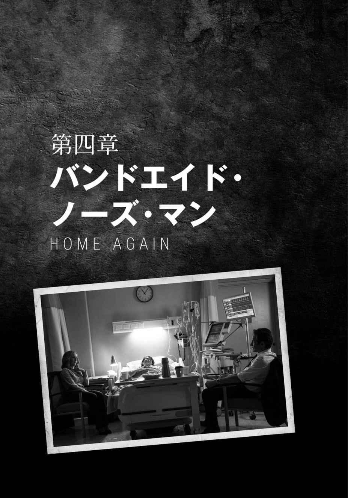
１
フラディルフィア西部／午前五時一五分
まだ夜が明け切らず、だが街や人がそろそろ活動を始める午前五時過ぎ。夜の暗さと静寂の残る街中に、まるで豪雨のような大量の水が打ちつけられる音と、それに続く人々の悲鳴が響き渡る。
「何をするんだ！」
「やめて！」
その悲鳴の元は、自分のわずかな荷物をビニール袋やカートに入れて路上で眠る人々──ホームレスと呼ばれる男女のものだ。
豪雨のような音の源は、空から降ってきたものではなく、給水タンクから高圧ホースによって放たれる水音である。黄色いヘルメットと防水服をまとった男たちが、給水タンク車から引き出された高圧ホースを手に、激しい勢いで噴射される水を、辺り一面に吹き付けている。彼らは、ホームレスたちがどんな悲鳴をあげても関係なく、なおも彼らをホースで追いかけて、彼らがその位置を移動するまで激しい噴射を浴びせ続ける。ホースの水は、まるで、壁面に描かれた落書きや、路上の隅の溝にこびりついたゴミを洗い流すのと同じやり方で、彼らを路上から押し流そうとする。
まだ夜明けが来ていない暗い通りで、ホースの水が放射されている場所にだけ、強烈なライトで光が当てられ、その部分のみが明るくなる。ホースから噴射される水は、街路の壁に貼 られている、市の通告文を記した張り紙をも剝 がしていく。その紙にはこんな文字が書かれていた。
退去通告！
地区清掃実施日時
二〇一六年二月八日
月曜日
午前五時
先ほどからホースの水を噴射している、黄色い防水服の男たちは、この地区の土地開発事務所の職員たちで、今、行われているのは、この張り紙に告知された「清掃」という作業なのだ。
ホースから激しく噴き出す水は、なおも悲鳴を上げるホームレスたちに容赦なく吹き付けられていく。ホームレスたちの大切なものを満タンに詰め込んで壁に沿って積み上げられていた、ブルーや黄色、白など、様々な色のビニール袋が、放射された水の勢いで崩れ落ち、道路の上に散乱する。
水の攻撃に耐えかねて、ホームレスたちは止むを得ず、手に持てる限りの所持品を抱えて、水が当たらないところに移動していく。するとすぐさま、黄色い防水服の職員たちが、彼らが去った場所にやってきて、彼らが持っていくことができなかった所持品を、まるでそれらがゴミであるかのように、手荒に収集してゴミ集積車に入れていく。
そして、逃げ惑うホームレスたちに、さらに追い打ちをかけるように、こんな言葉が投げつけられる。
「前もって通知しておいたぞ。これは再開発計画の第一段階だ、お前たちはバックス郡の旧フランクリン病院跡に移送される！」
大声でそう通告しながら、周囲を歩き回っているのは、この撤去作業を監督している米住宅都市開発省の職員、ジョセフ・カトラーだ。歳の頃は四十代くらいか、毛髪の生え際には白いものが混じり、額には皺 が刻まれている。その皺は、彼の真面目さを証明している。彼は自分に課せられた仕事は全てきっちりやってきた。しかし、それが彼の人間としての限界で、大きなビジョンを持った仕事をすることはなかった。それゆえもう若くない今でも、こうして現場を仕切る仕事をしている。だが、彼はそれに納得している。自分は今も、自分に課せられたことをしっかりやっているという自負がある。現場の人間であることを証明するために、シャツの上には背広ではなく、作業員と同じ黄色い防水服を着ている。そして今も、歩き回りながら、自分が告知しなくてはならないことをするために、声を張り上げている。彼の声は、ホームレスたちの悲鳴や激しい水音に負けまいと、どんどん大きくなっていく。
「今夜、個人の所有物を没収したのは、アメリカ合衆国住宅都市開発省だ。所有物を引き取りたい場合は、事務所まで来るように。事務所の住所は、サウスウォルナット通り一八〇四番地だ」
しかし、身を守り、所有物を守ろうとして慌てるホームレスたちには、そんな通告が聞こえている様子はない。相変わらず、ホームレスの男女の悲鳴は続いている。
「やめてちょうだい！」
「ダメだ！」
そして、この現場にはもうひとり、役人風の男の姿があった。その男は阿 鼻 叫 喚 をものともせず、白いカップから優雅にスープを飲んでいる。男は、人々の悲鳴が大きくなっても、この騒ぎがまるで自分とは無関係であるかのように、スープを飲み続ける。男は、先ほど通告を怒鳴っていたカトラーよりも年上で、彼が着ている上質そうなコートとスーツは、今、行われている作業にはまるでふさわしくない。カトラーの上役といった立場の役人なのだろう。彼の後には、ヘルメットを被り、盾を持って暴動鎮圧用の装備をした警官も待機している。
カトラーが大声で告知を言い終わっても、辺りの騒ぎはますます大きくなるばかりだった。だが、カトラーは、これで自分のやるべきことはやったと判断し、事務所に戻ることにした。彼らに聞こえていようが、聞こえていまいが、それは自分とは関係ない。俺はちゃんと告知したんだからな。カトラーは振り向くと、彼の後ろに控えていた、スーツ姿のまだ若い助手に、声をかける。
「今夜は事務所にいる。車で送ってくれ」
まだ、大学を卒業したばかりではないかと思われる初々しい顔で、茶色の短髪に似合う茶系のスーツを着た若い助手は、こうしたホームレスの撤去作業を見るのが初めてだった。彼は、この作業が暴力的でホームレスの人権を無視していることに驚いて、先ほどから思わず眉をひそめて現場を見ていたが、自分はまだ仕事に就いたばかりで、上司に意見が言える立場ではないこともわきまえていた。そこで上司のカトラーの言葉に黙って頷 き、カトラーとともに車の方に向かう。
先ほどの役人風の男は、ふたりが去っていくのを目で追いながら、自分は現場に残り、またひと口、スープをすすった。
住宅都市開発省 事業所／フィラデルフィア／午前六時五分
朝の六時とはいえ、まだ周囲は暗い。先ほどの撤去現場から少し離れた住宅都市開発省の事務所の前も、路上にはホームレスたちが溢 れ、周囲には、彼らの所有物でいっぱいになったカートやビニール袋がびっしりと積まれていた。
まだ辺りは暗いが、この場所にいるホームレスたちはみな眠っていなかった。彼らは、先ほど近くの場所で起きたホームレス撤去騒動を知って、寝ていることができなくなっていた。その現場から逃げてきたというホームレスの話が、すでにここにも伝わってきていたのだ。彼らはその噂 話について、仲間たちと話し合うが、かといって有効な対策があるわけではなく、お互いの不安は増すばかりだ。
自動車で事務所に戻ってきたカトラーは、車から降りた途端に、先ほどの撤去現場で見たのと同じようなホームレスたちがたむろしている光景を目にしてうんざりし、事務所の入り口に向かいながら、大声を上げた。
「この通りの立ち退きは、明朝だ！ 前から警告しているぞ。それまでに立ち退くように！」
さらにその勧告を強調するかのように、カトラーは入り口に向かう階段を上りながら、入口の壁に貼られた退居通告の張り紙を、拳 で叩 く。その張り紙にはこう記されている。
退去通告！
地区清掃実施日時
二〇一六年二月九日
火曜日
午前五時
カトラーは事務所に入っていき、残されたホームレスたちは途方に暮れた。
その時、突然、不思議な風が吹いてきた。通告の張り紙の端が、風に煽 られて捲 れ上がる。そして、奇妙な振動が辺りに伝わっていく。まだ暗い、街灯の光の下、オレンジ色にぼんやり照らし出されている舗道の上で、潰 れた濃い赤色のジュースの空き缶が、小刻みに震えたように見えた。すると、空き缶でいっぱいになったショッピングモールのカートを押していた、老いた女性が、何かに気づいて足を止めて振り返る。同時に、そこに集まっていたホームレスの人々にも動揺が広がっていく。あるものはその場所を去り、あるものはテントを飛ばされないようにテントを押さえつけ、その中に隠れる。その間にも、潰れたジュースの缶の震えが大きくなっていく。風はさらに強まっていく。退去通告の張り紙も、壁から引き剝 がされて、夜の闇 の中に消えていく。
あっという間に、通りは無人になった。
そこに、まだ暗い闇の中から、一台の大きな汚れたゴミ収集車が、軋 んだ音を静かに立てながら、姿を現した。車体は、オレンジ色の街灯のせいなのか、車体を覆う錆 のせいなのか、オレンジ色がかった黄色に見える。運転席の窓は大きいが、真っ暗で、運転手の姿は見えない。まるで窓の内側には、黒々とした闇だけが充ちているかのように見える。収集車は事務所の前の通りに数秒間、停止していたかと思うと、また静かに去っていった。まだ夜明けは訪れず、空は黒く、路上に人の気配はない。
だが、清掃車が去った後に目をこらすと、一人の背の高い痩 せた男が立っているのが見えてくる。黒いロングコートを着ているために、闇の中に紛れて見えにくくなっているが、その背は高く、普通の人間のものではない。頭部の毛髪はとても短く、遠目にはスキンヘッドのようにも見える。男に表情はなく、どことなく人間とは異なる存在であるかのような気配を漂わせている。男は、その身長に相応しい大 股 で、静かにゆっくりと事務所の方に向かって歩いていく。
事務所のデスクに戻ったカトラーは、さっそく仕事に取りかかっていた。いつも現場から帰ってきた時にはそうしているように、机の上に常備してある消毒用のジェルのボトルのポンプを押して、手にそのジェルをたっぷりつけ、こすり合わせて消毒する。まったく、ああいう場所にはどんな雑菌があるか、わかったもんじゃない。そう思いながら、ケータイを取り出して電話をかけた。
「ランドリーさん、カトラーです。まだそこにいますか？ すべて順調ですか？ 何か問題はありませんか？」
先方は留守番電話だったのだろう、カトラーの話しぶりはぞんざいだ。彼は話しながら、辺りに、異様な臭気が漂ってきたのに気づく。その匂 いの正体を確かめようと嗅 いでみると、その刺激臭はあまりにきつく、思わず、むせてしまう。そればかりか、咳 も出てくる。いったい何なんだ、これは。
「うう」
あまりの匂いに、話すどころではなくなったカトラーは、電話を切る。
すると突然、照明が点滅して消え、部屋が真っ暗になる。カトラーは、ビルの外の街灯から入ってくるわずかな光で辺りを見回すが、ほとんど何も見えない。すると、部屋の外から、鉄パイプをハンマーで叩くような、金属音が聞こえてきた。音は連続しているが、その間隔は緩やかで、まるで大きな男が広い歩幅でゆっくりと歩いているかのような速度だ。
「誰かそこにいるのか？」
カトラーは問いかけるが、返事はない。ゆったりとした金属音は続いている。
ふと見ると、この部屋の廊下に面した窓の曇りガラスの向こうに、背の高い人物の影が見えた。その影は、この部屋の入り口に向かって、ゆっくりと近づいてくる。
カトラーは慌ててケータイを取り出して通報電話をかける。ケータイを首で挟んで左手で抑えながら、利き腕の右手で机の引き出しの中にしまっておいた銃を手に取る。
「こ、こちら、ジョセフ・カトラー。住所は、サウス・ウォールナット通り一八〇九番地。今、侵入者が入ってこようとしている」
カトラーの声は震えている。彼はこうした特殊な事態に慣れていないのだ。もちろん、強盗にあったこともない。ホームレスたちに対する態度はでかいが、もともとは気の小さい人間なのだ。怪しい人影が、この部屋の入り口の前で静止したのが、ドアの磨りガラスを通して見える。なぜか、その人影はそのまま静止している。
カトラーは、その男が侵入してきたらすぐに発砲しようと、拳銃を入り口のドアに向け、狙 いを定める。彼が耳に当てている電話の向こうから、オペレーターの声が聞こえて来る。
「今、近くの警察に通報しています。身の安全はどうですか？」
カトラーは、全神経を侵入者を撃つことに集中しているため、電話に応答することができない。銃を持つ手は、極度の恐怖のために震えている。その間も人影はゆっくりドアに近づいてきて、大きくなっていく。
「もしもし？ 現状を教えてください。もしもし？」
いきなり、ドアが吹き飛ばされ、ドアにはめられていたガラスが砕けて、破片が床に散らばって落ちた。その破片を、巨大な足が踏み潰す。カトラーは悲鳴を上げる。
侵入してきた何者かは、悲鳴を上げるカトラーの身体を両手で摑 むと、およそ人間のものとは思えない異常な力で、いきなり左右に引きちぎる。両手に元は人間だったものをぶら下げながら、その両手を左右に広げて直立する、巨大な男──その異様な十字架のような形が、窓から差し込んでくる外の街灯の光の中で、巨大なシルエットとなって浮かび上がる。それは一瞬の出来事だった。
「もしもし、そこにいますか？」
電話からはまだオペレーターの声が聞こえているが、この部屋にはもう、その電話に答えられるものは誰もいない。
背の高い男が、カトラーの事務所の玄関から外に出て行く。と、玄関のすぐ前に、先ほど去ったはずの廃車のようなゴミ収集車が待っていた。男は無言で収集車に近づいていき、車の後部の収集されたゴミを入れる開口部のプレートの上に、何かを投げ込む。それは人間の腕のようだ。そして男は、今、ゴミを投げ入れたばかりのプレートの上に、自分の身体を静かに横たえる。すると上方からゴミを圧縮する部位がゆっくり降りてきて、開口部が閉じていく。ゴミの収集を終えた車は、何事もなかったかのように発車し、まだ暗い無人の路上を走り去り、闇の中に消えていった──。
２
カトラーの事務所／フィラデルフィア
翌日、地元の警察がカトラーの事務所の現場検証をしていた。何人もの鑑識技官が忙しそうに立ち働いているのは、地元警察が、決してこの事件を軽視していないことを物語っていた。
事務所の床の上には、まだ、昨夜のガラスの破片が散らばっている。若いアフリカ系の鑑識技官が、床についた血染めの足跡の写真を撮っていると、ブーツを履いた二組の足が床の上を近づいてくるのが見えた。技官が目を上げると、その足の持ち主はスーツ姿の男女で、二つのＦＢＩの身分証を技官が見えるように掲げて見せた。
「わたしは特別捜査官ダナ・スカリー、こちらは特別捜査官フォックス・モルダー」
そう言った女性は、肩に掛かる長さのストロベリー・ブロンドの髪を緩やかに外側にカールさせ、真ん中から分けて肩に流し、濃紺のスーツに薄いブルーのシャツ、首元には細い金のネックレスといった出で立ちで、清潔で有能そうな、いかにもやり手のＦＢＩ捜査官に見えた。その隣にいる男性は、ブラウンの髪を後ろに撫 でつけ、燻 んだブルーグレー系のスーツと白いワイシャツ、ブルー系のネクタイという服装はいかにも捜査官らしくはあったが、どこかあまり規則を守ることに厳しそうではない、ちょっと変わり者の雰囲気を漂わせているように見えた。しかし、そう見えたのは、この事件を担当するドロス刑事に、あらかじめ、彼らがどんな人物なのかを聞いていたせいかもしれない。ドロス刑事は、この現場に着くなり全員に、この現場にＦＢＩ捜査官ふたりが訪ねてくるので、来たらすぐに刑事に声をかけるようにと通達していた。そして、理 由 をこう説明していた──「彼らを呼んだのは、彼らがこうした〝奇妙な事件〟の専門家だからだ」と。鑑識技官は、すぐに大声で刑事を呼んだ。
「刑事！」
すると、部屋の向こう側で、女性捜査官と話をしていた男が振り向いて、ふたりの方に近づいてきた。その男性は三〇代後半くらい、アフリカ系だが他にも複数の人種の血を引いていそうな風 貌 で、着古したカーキ色のトレンチコートに短髪の出で立ちは、キビキビとした動きと相まって、いかにも有能なベテラン刑事らしい。
「よろしく。アーロン・ドロスです。ＦＢＩに電話した者です。おふたりがこの手の、その......変わった 事件の大家だとうかがいまして」
〝変わった 事件〟か──〝スプーキー〟が、かつて自分が若い頃にＦＢＩで働いていた時につけられたあだ名だったことを思い出して、モルダーは思わず〝やれやれ〟という顔をしてしまう。その顔を誤解したドロス刑事は、慌てて抗弁する。
「別に、捜査の主導権を争うつもりはないんです......」
「ある程度の争いがなきゃ、フィラデルフィアらしくないよな？」
モルダーが、フィラデルフィアという街の名前が〝兄弟愛〟を意味する古代ギリシャ語から取られていることを踏まえて、軽くジョークを言うと、ドロス刑事はそれを真面目に受け取って、さらに抗弁する。
「応援はお願いしましたが、捜査をあなた方に押しつけるつもりではないと言ってるだけです」
それには構わず、モルダーが事件の現場を見渡すと、事務所の床の中央にかなり大きな血の染みができているのが見えた。モルダーはさっそくその血 痕 に近づいて、屈み込む。
刑事の弁解には、モルダーに代わってスカリーが返答する。
「刑事、あなたにあらためて説明する必要がないのは承知していますが、連邦省庁職員の死亡事件は、ＦＢＩの管轄ですよ」
刑事は、居心地悪そうに少々苦笑のようなものを浮かべながらスカリーから目を逸らす。スカリーの指摘通り、もちろん、彼にもそれはわかっているのだ。
モルダーは刑事とのやりとりをスカリーに任せて、自分は床に残された、加害者のものと思われる大きな足の形をした血の跡をじっくり観察する。そして、彼の隣で調査をしている、さっき刑事を呼んでくれた若い鑑識技官に尋ねる。
「ポリビニルシロキサンで、足紋を検出してみたのかい？」
足紋とは、足の裏の皮膚紋理のことで指紋と同じように個体によって異なるので、捜査上の重要な証拠になる。
「検出しようにもしようがないと言うか......検出すべき足紋がないんです。足跡はありますが、隆起線はありません。つまり、足紋がないんです」
「ほう、この人物は生まれつき足紋がないのかな。そんなことは、ありえないんだが......」
モルダーの隣にひざまずいて足跡を見ていたスカリーは、ドロス刑事に問いかける。
「犠牲者の遺体は、どこで見つかったんですか？」
「まだこの部屋にあります」
刑事はそう答えたが、一見したところ、室内には血痕があるだけで、遺体らしきものは見当たらない。どういう意味だろう。困惑しながら立ち上がるスカリーに、ドロス刑事は、被害者のカトラーが使っていた机の後を指し示す。
「まず、あそこです」
スカリーが、刑事が指差す方に近づいて覗 き込むと、机の向こう側には、血まみれの大きな肉片が横たわっていた。
「それから、頭部は......こっちにあるゴミ箱の中に」
刑事は足下のゴミ箱を指し示した。
モルダーが、ボソッと呟 きながら立ち上がる。
「ゴミの分別 が出来てないな」
ドロス刑事は、その不謹慎なジョークは聞こえなかったことにして、さらに死体についての説明を続ける。
「両腕は、見当たりません。切断には刀剣か鉈 を使ったんでしょう」
モルダーは刑事の説明を聞きながら、ゴミ箱の中を覗き込む。机の向こう側の肉塊を調べていたスカリーが、報告する。
「棘 上 筋 と三角筋が大きな力で引っ張られて、引き裂かれたようだわ。刃物の傷ではないわね。他の分断された部分も同じ形状をしている」
それを聞いたドロス刑事が、スカリーに尋ねる。
「つまり、引っ張られて、裂かれたと？」
「まあ、それが人間ひとりの力で可能だとは思わないけど......」
部屋のあちこちを観察していたモルダーが、カトラーの机の後ろの窓の外に目をやると、足を止めた。彼の目を捉 えたのは、向かいのビルの上にある巨大な広告板だ。その広告板には、黒一色のステンシル・アートで、膝下まであるロングコートを着て両腕をだらりとたらした、背の高い痩せた男が描かれている。ステンシル・アートとは、厚紙などを切り抜いた部分に、スプレー塗料などで作品を描く手法のこと。ストリート・アーティストによく使われる手法で、英国の覆面アーティスト、バンクシーが有名だ。モルダーの目を捉えた、巨大な広告板に描かれた男の背丈は、ビル二階分ほどもあった。モルダーは、何か気になるものを感じて、その画をじっと見つめた。
一方、ドロス刑事はさらに状況説明を続ける。
「被害者のカトラーは、路上で暮らすホームレスたちに憎まれていました。彼がホームレスの移転事業を仕切っていましたからね。彼らは自分たちが旧フランクリン病院に追いやられるのは、カトラーのせいだと思っていました」
彼の話の途中で、スカリーのスマートフォンが鳴った。スカリーがポケットから出して画面を見ると、発信者の名前は〝ウィリアム〟と表示されていた。スカリーは、突然、息子の名前を見たことで一瞬、たじろぐ。〝ウィリアム〟は、スカリーとモルダーの間に生まれた息子の名前だ。しかし、事情があって、赤ん坊の時に養子に出し、それ以後、会っていない。彼がどこに住んでいるのかもわからず、もちろん、電話番号も知らず、登録もしていない。発信者名として表示されるはずはないのに、なぜこの名前が──。
しかし、スカリーが画面を見直すと、表示されていたのは、〝ウィリアム・スカリー・ジュニア〟だった。父親から名を譲り受けた、スカリーの兄だ。兄からの突然の連絡に一抹の不安を覚えたものの、今は仕事中なので、あとでひと段落してからかけ直そうと、一 旦 、電話を切った。モルダーは、今回の現場から連想したものについて話し出す。
「中世の処刑では、罪人の手足を四頭の馬に縛り付けて四方向に引っ張って、文字通り四つ裂きにした」
スカリーの電話がまた鳴った。また、兄からだ。何度もかけてくるからには、緊急な要件なのだろう。スカリーは今度は電話に応答した。
「ビル？ 今、殺人現場にいるの。変わりない？ まだドイツにいるの？」
すぐに電話を切るつもりだったスカリーだが、兄の言葉を聞いて顔色を変える。そして呆 然 とした様子で立ち上がり「わかったわ」とひと言告げると電話を切った。
彼女の様子が変わったことに気付いたモルダーが声をかける。
「スカリー？」
「......兄からよ。救命士が兄の電話番号を見つけたの。あの......母が心臓発作を起こしたのよ。ワシントンの病院の集中治療室に運ばれたって......」
スカリーは冷静に話そうとしていたが、そう語るスカリーの顔からは表情が失われていて、その様子を見るだけで、彼女が大きなショックを受けているのがわかる。モルダーはそっと彼女の腕を取って、すぐに病院に駆けつけるよう、促した。
スカリーはそのまま、何も言わずに部屋を出て行った。モルダーとスカリーは、Ｘ─ファイル課で何年も共に過ごした仲だ。お互いを理解し、信頼している。何も言わなくても、スカリーがいない間はモルダーが捜査を続け、捜査が解決する前でも、モルダーが移動できるようになったらすぐに、スカリーの元に駆けつける。そんなことは、口に出して言う必要はなかった。スカリーが、現場から出て行く時に、ドアのフレームを摑んで支えにしたことからも、彼女は体に力が入らない状態になっていることがわかり、モルダーは彼女の後ろ姿を心配そうに見守った。
今、スカリーは普通の状態ではなくなっていた。廊下を歩いている時も、階段を降りるときも、彼女の目には周囲の世界が急に狭くなり、揺れているかのように見えた。
モルダーは、さらに気を引き締める。スカリーのことはとても心配だが、事件を投げ出すわけにはいかない。スカリーがこの部屋を出て行く後ろ姿を見送って、ふと、この部屋のドアの上に設置されている防犯カメラが、不自然な方向に向けられているのに気がついた。この映像には何かが記録されているかもしれない。モルダーは、ドロス刑事と共に、防犯カメラの映像を調べることにした。
ふたりは四つのカメラで撮影された映像を、コンピュータのモニター画面を四分割にして、同時に映し出して、検証を始める。
「四台ある防犯カメラのうち、まず一台目が動かされた。そして二台目、三台目。それからカトラーの事務所内のもの。この映像によれば、カトラーの目線はドアよりも上を見ている。ということは、容疑者はバスケット選手並みの身長だ。身長二一一センチのティム・ダンカン選手クラスの身長だ。でもフィラデルフィアの地元チームのセブンティシクサーズの選手たちは容疑者から外せるな。シュートが下手だから」
モルダーは熱狂的なバスケットボールのファンなのだ。しかし、ドロス刑事はこのジョークにも反応してくれない。モルダーは、モニターの映像に目線を戻し、あることに気がついた。
「あれを見ろよ。事務所の窓の外にある広告板だ。何も描かれていない。犯行時刻には、あの広告板は白紙だったんだ」
モルダーは、怪 訝 そうな顔をするドロス刑事を窓際に連れて行き、広告版を見るように促した。そこには今は、黒いロングコートの長身の男が描かれている。
「あのステンシル・アートは、今朝、描かれたんだ。カトラーの殺人の後にね。あの画を描いたアーティストは、何かを見たかもしれない。または、何か言いたいことがあるかもしれない。あの画に署名があるか、誰かが作者を知っていないか、調べてみるよ」
「わかった」
ドロス刑事と一緒に事務所を出ようとしたところで、モルダーは廊下の給水塔の近くで、何かを踏んだ感触に気づいて、足を止める。その靴底を上に向けると、一枚のバンドエイドがくっついていた。彼はそれをペーパーナプキンを使って注意深く剝がしてみる。それはひどくベタベタして糸を引き、血の染みがついていた。かなり粘着力が強い。これは、犯人に何か関係があるものかもしれない。しかし、それにしてもひどい臭いだ。モルダーは、もう何枚かペーパーナプキンを取って証拠物件を包むと、ドロス刑事の後を追った。
３
ベアトゥス医療センター／ワシントンＤ．Ｃ．
スカリーは、巨大な医療センターの迷路のような通路を足早に進み、母が入院している循環器科病棟へと急いだ。薄いグリーンがかったクリーム色の壁も、床のブルーと白の市松模様も、いかにも病院らしい清潔さに溢 れているが、スカリーの心は安らがない。母はどのような状態なのだろうか。スカリーの焦りは募っていく。つい最近まで何年もの間、医師として働いていたこともあり、彼女にとって病院という場所は、通常であれば決して居心地の悪い場所ではない。しかし、自分の愛する母親が、しかも緊急状態で入院しているとなれば、まったく違う。ここが設備の整った大きな施設であるにもかかわらず、彼女の不安な気持ちは膨れ上がっていき、その廊下の雰囲気までもがよそよそしく冷たく感じられ、彼女を落ち着かない気分にさせた。
目指す病棟に繫 がるドアを開け、前方に進むと、やっと母のいる病室が見えてきた。広い病室だが、たまたま、この部屋に今いる患者は、スカリーの母だけらしく、全体がセピア色がかった薄闇に包まれていて、病室の入り口近くの、母のいるベッドだけが、枕 元 の明かりの柔らかな光に包まれていた。
母の姿が目に入り、スカリーは思わず足を止めた。母は人口呼吸器に繋がれていて、口には呼吸のための透明なプラスチックの管が差し込まれ、その管は二本の水色の管に分岐して酸素供給器に繫がっている。その向こう側には青白く光るモニターが、彼女の状態を数値で表示していた。その姿が痛々しい。母の目は閉じられていて、意識はないようだ。
スカリーは、そっと病室に入り、静かに母に近づくと、ごく小さな声で呼びかける。
「......ママ」
そして、両手で母の手を握りしめてから、そっと額を撫でた。
「マーガレット・スカリーさんのご家族の方ですか？」
水色のユニフォームを着て、黒髪を後ろで束ねた、アフリカ系の女性看護師が声をかけてくる。
「ええ、娘です。ダナ・スカリー」
彼女はスカリーが家族であることを確認し告げた。
「さっき、一瞬、お母様の意識が戻ったんです。そして、繰り返し名前を呼んでいたんです、チャーリーと」
スカリーは一瞬、絶句する。なぜ、チャーリーなんだろう。いつも母と親密に接してきた私や、兄のビルではなく？
「チャーリーは、弟です。末っ子の。でも疎遠になっているの」
「お伝えしておこうと思って」
スカリーはなんとなく納得がいかない。看護師にたずねてみる。
「私かビルの名前は呼びませんでしたか？ 孫たちの名前は？」
看護士は、「残念ですが」といったように首を振った。
「呼んだのは、チャーリーという名前だけです」
そう言って看護士は病室を出て行った。スカリーは屈み込んで、母親の頰 を手の甲で撫でた。そして、そっと話しかける。
「ママ。私よ、ダナ。ここにいるわ。私、そこにいたことがあるの。私がいつもエイハブ船長と呼んでいたパパがそこにいるのは知ってるわ。メリッサ姉さんも。でもママ、私はここ。ビル兄さんもここ。それにウィリアムも......」
スカリーはその名前を口に出してから、改めて、モルダーと自分の息子ウィリアムのことを考える。今日、この名前が現れたのは、これで二度目だ。兄のビルから母の入院についての電話が来た時にも、一瞬、スマートフォンの画面に、ウィリアムの名前が表示されたように見えた。彼が今、自分ともモルダーとも一緒にいないのには事情がある。彼は、普通の人間の赤ん坊とは異なる存在だった。そのため、エイリアンと政府の陰謀に関連して彼を誘拐しようとする企てがあり、彼自身の命が危うくなった。その頃、ウィリアムの父親であるモルダーも行方不明になっていた。そこで、私は、ウィリアムが無事に成長することが出来るように、彼の素性を伏せて、まったく知らない土地の知らない人々に養子に出したのだ。それ以来、ウィリアムには会っていないが、彼のことを思い出さない日はない。スカリーは涙をこらえて、繰り返す。
「私の息子ウィリアムもこっちにいるわ。それに、チャーリーも。お願い、ママ、まだ逝 かないで。私にはママが必要なの」
自分と母しかいない病室で、スカリーは母を見つめ続ける。静かな薄暗がりに包まれた広い病室で、ふたりのいる辺りだけが、枕元の電灯が放つほのかな光に包まれている。
事業所／サウス・ウォールナット通り
お昼近くのサウス・ウォールナット通りは、人々が行き交う明るい通りだ。建物の正面玄関を出たモルダーは、入り口前で待機中の制服警官に声をかけ、建物の裏手の広告板を指さす。あの黒のロングコートを着た背の高い男が描かれた広告板だ。
「あのビルの屋根に登りたいんだけど、どうやったら行けるかな？」
「調べてみます」
警官はそう言って、その場を立ち去った。
「頼むよ」
モルダーが、警官の帰りを待ちながら、広告板に描かれた男を見上げていると、激しく言い争う男女の声が聞こえてきた。その声は、事務所のビルの角を曲がった方向から聞こえてくる。モルダーがその声を追って、ビルの角から裏通りに入ると、その通りの雰囲気は、正面玄関前の表通りとはまるで違っていた。そこは日陰で暗く、多数のホームレスたちが通りに座り込んでいた。中には持ち物をまとめて移動しようとしている者もいる。路上には彼らの所有物が入ったビニール袋が積んであり、テントのように張られた毛布もある。路上にはゴミのように見えるものも散乱していた。
しかし、口論している男女は、ホームレスたちの仲間ではなかった。むしろ、彼らとは対極にある、高そうな服を身にまとっている。男はモスグリーンのコートに高そうなスーツ、女は紺のコートにレースのブラウス、二重になったパールのネックレス。ふたりとも大声で自分の主張を怒鳴るのに慣れているところを見ると、どこかの役人のようだ。
「ランドリー、まだ話の途中よ！」
「おい、いいか、ハフ。この通りは明朝、一掃されることが決まってるんだ！」
「その前に差し止め命令をもらうわ。この通りは犯行現場なのよ！」
「この哀れな連中が、ジョセフを殺したって言うのか？」
「彼が殺されてやっと、この人たちがあなた方のやってることをどんなに恨んでるか、わかったんじゃない？」
「脅してるのか？」
「あなたの方こそこの六ヶ月間、ずっと脅してるじゃないの」
「黙れ」
モルダーが、ふたりに近づいて行って声をかける。
「もういい、止めるんだ」
ふたりは口論を中断してモルダーの方を見る。彼は身分証を掲げた。
「ＦＢＩ特別捜査官のモルダーだ。それで、〝兄弟愛の町〟という愛称で呼ばれるフィラディルフィアを代表する、この麗しいおふたりはどなたかな？」
モルダーの嫌味で一時休戦となったふたりは、互いにそっぽを向きながらも、渋々自己紹介をする。
「住宅都市開発省のダリル・ランドリーだ。この土地を再開発しているんだ。昨夜亡くなった職員のジョセフ・カトラーと組んでやっていた」
やはり役人だった。その口調はどこまでも偉そうだ。モルダーは自分の勘が正しかったことに得心がいく。ランドリーと名乗った男は、茶色の髪にはかなり灰色のものが混じり、顔には皺がたっぷりある。これまでも何かとうまく立ち回ってきたベテラン役人なのだろう。モルダーは女性の方にも身分を尋ねる。
「それであなたは？ なぜここの人たちが殺したと思うんです？」
「ナンシー・ハフよ。セントラルバックス郡教育委員会の会長です」
彼女も一種の役人だった。四十代くらいだろうか、ランドリーよりずっと若く見えるが、その口調はランドリー以上にきつい。肩よりは短いブルネットの髪をオールバックにして、顔にはきっちり化粧をし、明るく灰色がかった青色の目の眼光は鋭い。彼女は激 昂 したまま話を続ける。
「このろくでなし とカトラーがホームレスの強制移動を......」
そこまで聞いてモルダーが口を挟む。
「あれ、君たち結婚してるの？」
「彼と？ いいえ！」
ハフは嫌悪感丸出しで、それを否定する。
「そう？ ろくでなし って言うから、てっきり結婚してるのかと......」
ハフは、そんなモルダーのジョークには取り合わない。
「この男とカトラーは可哀想なホームレスをこの地域から追いだして、ここに一〇階建てのアパートを建てて、高級住宅地にしようとしているのよ」
ランドリーがすかさず反撃する。
「彼女が反対しているのは、ホームレスの異動先の旧フランクリン州立病院が、彼女の担当地区にあるからだ。だけど、あそこはずっと空き家だった。我々は可哀相な人々 をそこに移住させて、ドラッグの売人やネズミや糞 尿 だらけの路上から解放してやろうとしているんだ」
ハフも黙ってはいない。
「私だってホームレスの人たちには、安全で快適でいて欲しいと思ってるわ。だから、感謝祭ごとにここに来て七面鳥をふるまってるわよ」
モルダーが割って入る。
「そうですか。〝でも〟？」
と、モルダーは「でも」と続くだろう、彼女の主張を引き出す。
「でも 、旧フランクリン病院は、ペンスベリー高校から二ブロックしか離れていないの。もしホームレスの人たちの誰かがカトラーを殺したんだとしたら、自分の子どものそばに近づいて欲しい？」
「わかった、わかった」
ふたりの言い分を聞いたモルダーは、ウンザリする。
「あなたがたはふたりとも、彼らのためだと言って発言しているけど、どちらも自分の都合のためだ。ここには本当の彼らの味方はいないのか？」
ランドリーでもハフでもない、誰か が答えた。
「バンドエイド・ノーズ・マン」
まるで呪 文 か、ラップの決めフレーズのようだ。モルダーたちが声の主を見ると、その言葉を放ったのは、近くにいたホームレスの一人だ。アフリカ系のもう若くはないが老いてもいない男性で、黒いドレッドヘア、汚れたトレーナーの上にベスト型のダウンジャケットを着て、大型のゴミ箱に寄りかかっていた。彼は、黒いロングコートの男が描かれた広告板の方角を指差していた。
モルダーは彼に近づきながら尋ねる。
「バンドエイド・ノーズ・マン？ それはあの画に描かれた男の名前なのか？ それとも画を描いたアーティストの名前か？ 彼にはどこにいけば会える？」
しかし、そのホームレスの男はそれ以上は何も言わず、挑戦的な目つきを残して立ち去っていった。だが、その男がさっき指差した方向を見上げたモルダーは驚いた。先ほどまで広告板があったところには、何もなくなっていたのだ。
黒いロングコートの男は、広告板ごと消えていた。
４
ベアトゥス医療センター／ワシントンＤ．Ｃ．
スカリーは母親のベッドのそばに座り、首にかけた十字架をもてあそびながら、物思いに沈んでいた。母親の意識は依然として戻らない。母に付き添いながら、スカリーはいつしか、自分が今の母親のように生死の境をさまよっていたときのことを思い出していた。自分がかつて、エイリアンにアブダクトされ、その後で昏 睡 状態で発見された時のことだ。自分はその時のことをまるで記憶していないが、何かの人体実験をされたのではないかと思われる。そのまま意識が戻らない可能性もあっただろう。意識が戻ってから、あの時、自分の病床には母も、当時は健在だった今は亡き姉も付き添ってくれていたことを知ったが、自分が覚えているのは、モルダーの手の感触だ。
今、自分が母の手を握っているのと同じように、あのとき、自分の手を握ってくれていたのは、モルダーだった。もちろん意識はなかったが、なぜかそのことは知っていた。握ってくれた手の感触も覚えている。そして、モルダーが囁 いた言葉も、はっきりと思い出せる。
「君を連れ戻す助けになるかどうかはわからないけど......僕はここにいるよ」
だが、そんなことが本当にあったのか、モルダーが本当にそう言ったのかは、本当のところわからない。もしかしたら、生と死の間をただよっていた時に見た夢、または頭の中の想像に過ぎないのかもしれない。モルダー本人にも確かめたことはなかった。
ぼんやりと考えごとをしていたスカリーの目が、ふと、ベッドのサイドテーブルの上に止まった。そこには、患者の所持品を入れる茶色い封筒が置かれており、母マーガレット・スカリーの名前とＩＤ番号一七一九二七、品物の数三が、黒いマジックで、しっかりとした字体で書かれてあった。スカリーは封筒をそっと手に取ると、掌に中味を空けた。入っていたのは、ゴールドの指輪がふたつと、二十五セント銀貨のネックレスだった。ネックレスは、スカリーが見たことがないものだった。スカリーがその銀貨に刻印されている製造年を読み取ろうと、硬貨を照明にかざしていると、サイドテーブルに置いておいたスマートフォンが振動し始めた。画面に表示された発信者は、兄のウィリアム・スカリー・ジュニアだった。
「ハイ、ビル。ここには何時頃来れる？ フランクフルトからのフライトは何時に着くの？」
スカリーが、電話をしながら、背後に看護士たちが何かの作業を始めたのを感じて振り向くと、向こう側のベッドに寝ていた患者の心臓モニターが停止したらしい音がした。すぐに看護士とポーターふたりが、遺体を運び出す準備をはじめたようだ。彼らはベッドの枠を外し、遺体を白い布で包み始める。その手配の迅速さと、彼らの手つきの事務的な様子に、スカリーは戦 慄 した。彼女はビルと話しながらも、彼らの動きから目を離すことができない。彼らは遺体を布で包んだ上から、さらに白い布をかける。
「そう。できるだけ早くここに来て。わからない......私にわかるわけがないでしょ、あなたがママの臨終に間に合うかどうかなんて。そんなこと言えないわ、ビル。ええ、わたしは医者よ、でも、ママの娘でもあるのよ。ええ、生命維持装置を使うわ。それがママの望みだから。そう。以前、私が昏睡状態になったことがあるでしょ、あの後で、ママと話しあったの。ママはあらゆる手段を使って、生かして欲しいって言ったわ。事前指示書にそうあるはずよ。ええ」
スカリーの電話が終わる頃には、すでに看護士たちは白い布を被せた遺体を、車輪付きのストレッチャーに載せ、病室から運び出していくところだった。彼らの作業に迷いはない。彼らにとって〝死〟は、毎日行っている、通常の仕事の一部なのだ。その白い布が被せられたストレッチャーが自分の目の前を通り過ぎていくのを見送って、スカリーは深いため息をついた。
法医学研究所／ワシントンＤ．Ｃ．
「何もないだって？」
モルダーは法医学研究室の椅子に座り、中央を大きなガラスで仕切られた白い大きなデスクに座っていた。部屋には、無数の分析装置やモニター、試験官、ビーカーなどの器具が置かれ、それらの金属とガラスのせいで無機質な印象だが、それは、法医学研究というこの部屋の性質によく似合っていた。デスクの反対側には、白衣を着た若い科学者、ジャック・バドが座っている。黒髪の短髪に、くるくるよく動く黒い目をして、白衣を着たバド博士は、ペンを持ちながら、モルダーに分析結果を説明する。バドのデスクの上には無数の試験管が並べられている。その前に置かれたペトリ皿の中にあるのは、殺されたカトラーの事務所でモルダーが踏みつけた、あのバンドエイドだ。
「まっさらだって？」
「ええ、まったくもって。何もありません」
バド博士はきっぱり返答する。モルダーはさらに尋ねる。
「病原菌がついていないってことかい？」
「いえ、モルダーさん。つまり、何もない んです。というか、何かはある。何かが付着しているように見えるのに、そこには何も存在しない。後方散乱電子像を使って無機物と有機物の分離を試みましたが、どちらも見つかりませんでした。このバンドエイドには有機成分はないし、無機成分もない。生きてもないし、死んでもいないんです」
それはいったい、どういうことなのか。モルダーは興味をそそられ、ペトリ皿の中にあるバンドエイドを、もう一度、じっと見つめた。
ベアトゥス医療センター／ワシントンＤ．Ｃ．
母親に付き添っていたスカリーは、母親の点滴装置から母の腕へと繋がっている管の向きが気になり、それを直していて、ふと点滴溶液の袋に書いてある文字に目が留まる。これは何かの間違いなのではないだろうか。そこで、隣室にいる看護士に声をかける。
「看護士さん、この点滴はおかしいんじゃない？ 心臓発作の患者に高張液を投与するのは、適切な処置かしら？」
問われた看護士は、書類を手にスカリーの近くにやってくる。薄いグリーンのこの医療センターのユニフォームを着て、浅黒い肌に長い黒髪を後ろで束ねた彼女は、書類を示しながら、スカリーに説明する。
「スカリーさん、私たちは、お母様の事前指示書を確認しました。お母様は〝意識不明になるか人工呼吸の必要が生じた場合には蘇 生 処置を拒否する〟と指示しています」
スカリーが驚いているのを見て、看護士は、確認のため書類を手渡す。
「去年、変更されたようです。ここにお母様の署名があります。証人として海軍の退役将校ふたりが立ち合ったようです」
スカリーはショックを受けて、返事をすることができない。彼女は書類を受け取り、振り返って母親の顔を見直す。自分がよく知っていると思っていた母には、自分の知らない部分があった。母は大きな決断を、自分には伝えずに行っていた。そのことに、スカリーは動揺する。スカリーが母の顔を見つめていると、母は苦しそうに呼吸を続けていた。
５
倉庫／フィラデルフィア
広い倉庫内に台車が床の上を滑る車輪の音がする。ふたりの美術窃盗犯──フィッツパトリックとプラウドリーは、入荷したての商品 を大きな台車に乗せて、倉庫の奥に運んできたところだ。
ふたりとも二十代半ばほどの年頃で、どちらもナイキのスニーカーを履いている。アフリカ系で体格のいいフィッツパトリックはジーンズのベストを着て、キャップを被っている。ラテン系の小柄なプラウドリーは、口髭を生やして、チェックのシャツの上に黒いジャンパー。ふたりともアート愛好家には見えないが、商売はアート関係 だ。正規の取引ではなく、ちょっと怪しげな品物が専門だ。わけあり のもの──例えば、盗品だったり、親の家から拝借したものや表だった取引がしにくいときには、彼らに声がかかる。彼らのお得意先は、望むものさえ手に入るならうるさいことは言わない特別な顧客だ。
彼らがこんな天井も高くて、天窓から光も入る、床面積も広々とした、立派な倉庫を借りることができているのも、そういう顧客の一人が、好意から安く貸してくれているせいだ。もちろん、その顧客好みの作品が手に入ったときには、誰よりも先に、まず彼に声をかけるのが約束だ。もっともこの商売には、ある程度、立派な倉庫は不可欠だ。特に今回のような、大きなサイズの作品を扱うときには、それが収納できる倉庫がないことには話にならない。
「さあ、どんな感じかな」
ふたりが商品に被せられていたビニールを剝がすと、黒いロングコートの男の画が見えてきた。
「へえ、でかいな」フィッツパトリックが感嘆の声をもらす。
「ああ」プラウドリーも久しぶりの大型商品に満足気だ。
「新境地だな。いつものあいつらしくない作風だ。サザビーの美術品オークションにだって、出品できそうだ」
「ホームレスのおかげで、こんなに金儲 けできるとはな」
「お得意さんのコレクターには、俺が電話するよ。あっちに置いとけ」
フィッツパトリックはプラウドリーに指示をだし、肩を叩いて出て行った。
プラウドリーはゆっくりと台車を押して、戦利品を倉庫の奥に運んでいく。室内のあちこちには、保護シートや白い布に覆われた、絵画やオブジェが置かれている。アートは、すぐに売れるとは限らない。それに複数の顧客に声をかけて値段を吊 り上げようとするときにも、やはりある程度時間はかかる。その間、保管しておく必要がある。また、室内には、作品だけではなく、撮影用の機材も並べられていた。コレクターたちに作品の写真を見せるためには、高品質の写真が必要だ。そのため、撮影用の照明やカメラは、プロ仕様のものを使っている。
「よし、と」
プラウドリーは商品を載せた台車を止めて、数歩下がった。そして、商品に背を向けて、スマートフォンをいじりはじめる。ふと、彼の耳に台車の車輪が軋む音が聞こえてきた。触ってもいないのに、台車が動いているんだろうか。プラウドリーがその物音に気付いて立ち止まると、いつもはこの部屋で見たことがない蠅 が、一匹、飛んでいる。彼が台車の方を振り返ると、あの黒いロングコートの男の画が消えていた。商品そのものが消えたのではない。描かれた男がいなくなって 、ただの白い無地になっている。
プラウドリーは、ありえないと思いながらも、ひょっとしたら台車が動いて、画のある方が裏側になったのかもしれないと思って、裏側に回り込む。彼の耳に、また、蠅の羽音が、聞こえてくる。
一方、フィッツパトリックは、少し離れた机に座り、コンピューターで作業をしていた。彼はプラウドリーに呼びかける。
「おい、先週会った新しいお客の電話番号は登録したか？」
フィッツパトリックはプラウドリーの返事がないので、彼がいる倉庫の方に歩き出す。と、彼のスマートフォンがテキストメッセージを受信した。画面を見て、彼の目が輝く。
「例のバーのウェイトレスからだ。彼女、友だちがいるってさ」
それなら、プラウドリーと俺と女性ふたりでダブルデートができる。フィッツパトリックは浮かれて、さっそくプラウドリーとデートの計画を立てようと考えながら、彼が台車を止めた辺りにやってくる。だが、おかしい。プラウドリーの姿が見えない。ふと商品を見ると、真っ白で何も描かれていない。
「何やってんだ？ なんで逆に向けたんだよ？ 日光でインクがまだらに剝 げて、画がダメになっちまうぞ」
彼が向きを直そうと商品に近寄っていくと、台車のそばの床に、プラウドリーの足が見えた。彼の上半身は見えない。
「おい、何してんだよ？」
彼が台車に近づいて、裏を覗き込むと、相棒の上半身は白い布が被さったオブジェにもたれていたが、その頭部には黒いビニール袋が被せられ、首には紐 が巻き付けられていた。死んでいる。だが、いったい誰がやったんだ？ なんの物音も聞こえなかったのに？
突然、大きな手が商品を押しのける。するとそこには、黒いロングコートの男の画にそっくりの何かが出現していた。男はとんでもなく背が高く、痩せていて、まるであの画がそのまま生命を持って三次元の存在と化して現れたかのようだ。そしてその鼻には、バンドエイドが貼られている。
バンドエイド・ノーズ・マンだ。
フィッツパトリックは慌てて逃げようと背を向けたが、先回りをした謎の男と正面衝突しただけだった。次の瞬間、黒いロングコートの男は、獲物の頭部と腕を持ち、真っ二つに引きちぎる。
ザクッ。
水分や油脂をたっぷり含んだものが引き裂かれるような音がして、真っ赤な血 飛沫 が、辺りの床の上に、派手に飛び散った。かつてフィッツパトリックだったものは、今、アクション・ペインティングで知られる人気アーティスト、ジャクソン・ポロックの作品のようなものと化していた。
バンドエイド・ノーズ・マンは、二つの遺体を引きずって、床の上に血痕を残しながら、倉庫から出て行った。床の上に残る血の跡も、アクション・ペインティングのようだ。男が倉庫の扉をあけると、そこにはあの廃車のようなゴミ収集車が駐車し、後部の口を開けて、バンドエイド・ノーズ・マンの乗車を待ち受けていた。
彼がいなくなると、倉庫は再び静寂に包まれた。白い布で覆われた美術品たちが並ぶ間に、あの広告板を乗せた台車も、今は微動だにせず静止している。広告板からは黒いロングコートの男の画がなくなって、何も描かれていない白紙となったかに見えたが、よく見ると、版の下方の隅に、小さく〝トラッシュマン〟というサインが残されていた。そして今、そのサインの上に、先ほど広告板の表面にも飛び散った血の滴が、音もなくゆっくりと流れ落ちてきた。
ベアトゥス医療センター／ワシントンＤ．Ｃ．
スカリーは、母が眠っているベッドの足元に置かれた椅子に座っていた。彼女たちしかいない広い病室は薄暗い。まだ意識の戻っていない患者の眠りを妨げないようにという配慮からか、枕元のスタンドのライトも、ベッドのほうを直接照らすことなく、下方に向けてある。どうしてこの病室はこんなに暗いのか。それとも実際はそんなに暗いわけではなく、私の心理状態が、この部屋を暗いと感じさせるのだろうか。しかし、今はそんなことを考えている場合ではない。先にやらなければならないことがある。
今、彼女の向かい側の椅子には、母の担当医であるコルクィット医師が座っている。医師はスカリーよりも年上の女性で、これまで十分な経験を積んできたことを感じさせる落ち着いた物腰を持っていた。彼女なら多くの患者の信頼を得ているだろう。同じ職業の経験を持つスカリーの目から見ても、彼女は医師として有能に見えた。しかし今、スカリーは、彼女の顔を直視することができず、自分の両手が無意識に母の硬貨のペンダントをいじりまわしているのを見つめていた。スカリーは今、ある決断をすることを求められていた。いや、決断ではない。すでに結論は出ている。ただ、コルクィット医師は、患者の家族への思いやりとして、スカリーの承認を求めていた。たとえ、彼女がそれを拒否したとしても、結果に変わりはないにも関わらず。
医師は、静かな声でスカリーに伝えた。
「お母様の抜官をいたします」
医師の口調は、思いやりに満ちたものだったが、スカリーは目を上げることができない。母が、それを希望したことは間違いない。事前指示書は、先ほど確認した。理性では理解しているのだ。しかし、それを母が自分に相談することもなく決断した理由がわからない。自分にそれを伝えてくれなかった理由もわからない。だから、理性とは裏腹に、気持ちの部分では、それを認めることができない。
「人工呼吸器を外したからといって、必ずしもすぐにお亡くなりになるわけではありません。私たちは法律的にも、ご本人の意志を尊重しなければならないんです」
コルクィット医師の言っていることは、正しい。それはわかっているのだ。ただ、私がそれを認めたくないだけだ。スカリーがどう返答したらいいのか考えあぐねて、黙っていると、スカリーのスマートフォンが振動し始めた。
画面に表示された呼び出し人の名前は〝ウィリアム〟。まただ。スカリーは驚いて、もう一度よく画面を見ようと、電話を手元に引き寄せた。すると、画面表示は、次の瞬間には〝モルダー〟に変わった。捜査の経過を報告してきたのだろう。彼女は電話に応答する。その声にいつもの力はなく、弱々しい。
「もしもし......」
「来たよ」
その懐かしい声は、電話から聞こえるのと同時に、近くから、生でも聞こえてきた。スカリーが病室の入口を見ると、モルダーが病室の閉じたドアのすぐ前に立って、こっちを見ていた。それまで固く結ばれていたスカリーの口元が、モルダーの姿を見て、一気に和 らぐ。彼女は自分が、本当に久しぶりに微笑んでいることに気づいた。
住宅都市開発省事業所の外／フィラデルフィア
まだ夜が明け切らない暗い街の中をまばゆいライトを照らしながら、黄色いバスが近づいてきて、住宅都市開発省事業所の前に止まった。事務所の前では、昨夜亡くなったカトラーの上司ランドリーが、バスが到着するのを待ち構えていた。彼は、バスが到着するやいなや、その前から壁沿いに並ばせていたホームレスたちに向かって、大声を張り上げる。
「ようし！ 新しい家に行く時間だ。みんなバスに乗れ」
ランドリーは、昨夜、カトラーが謎の死を遂げたのにもかかわらず、予定通り、ホームレスの撤去を進めるつもりだ。しかし、カトラーがいない今は、彼自身が現場の指揮を執るしかない。ホームレスたちは、それぞれの手に自分たちの大事な荷物を抱え込んで、路上にひしめきあっていた。作業員たちが彼らを急かして、バスに乗せていく。
「さあ、さあ、早く乗れ」
ランドリーも、先頭に立って彼らを急かす。そこに、昨日、彼と口論した郡教育委員会長、ナンシー・ハフが足早に近づいてくる。手には白い紙片を持っている。
「ちょっと」
「なんだ、またあんたか」
ランドリーがやれやれといった顔でハフの方を向くと、彼女は手に持っていた紙を彼に手渡して、勝ち誇ったように言い放つ。
「裁判所の差し止め命令よ、ランドリー。このバスが旧フランクリン病院に現れたら、バックス郡の保安官が追い返します」
ハフはランドリーにそう宣言すると、彼の返答も待たずに、ハイヒールの音を高らかに響かせながら、その場を立ち去っていく。ランドリーは返す言葉もなく、啞 然 として、その紙を持った手をだらりと落とす。裁判所の命令だって？ なんてこった。それじゃあ、今日はホームレスを移送することができないってことか。こんなに早く令状が取れるってことは、あいつ、裁判官の誰かにコネがあるのに違いない。そっちがそういう手を使うなら、こっちにもやり方はある。彼は、去っていく彼女の後ろ姿を見送りながら、次の打つ手に考えを巡らせていた。
一方、ランドリーをやり込めたハフは、自分の圧倒的な勝利に酔いながら、意気揚々と通りを歩いて行った。だが、彼女は気づかなかったが、彼女が通り過ぎて行った後で、その建物の壁がオレンジ色の街灯に照らし出されると、そこには新しいバンドエイド・ノーズ・マンの画が描かれていた。
ベアトゥス医療センター／ワシントンＤ．Ｃ．
スカリーはモルダーとともに、病室の外の通路に置かれた、椅子を横に複数繋げて長椅子状にしたものに腰掛けていた。それは、病室を訪ねてきた訪問者たちが、患者の邪魔にならないようにベッドから離れて、患者につきそう人たちと話をするためのものだろう。スカリーとモルダーも、今、まさにそのようにその場所を使っていた。そこに腰掛けたスカリーの両手にはまだ、母の硬貨のネックレスが握られていて、今もそれを無意識に触っていた。モルダーは捜査の進 捗 状況を説明し始める。
「殺されたカトラーの事務所の外の広告版には、ある画が描かれていた。そこに描かれていたのは、路上生活者たちが自分たちの守護者だと信じている男の画だ。彼らはその画の人物を〝バンドエイド・ノーズ・マン〟と呼んでいる」
スカリーはモルダーの説明を黙って聞いているが、モルダーの方は見ていない。彼女の目は別の方向を向いている。彼女には事件よりも気になっていることがあるのだ。そんな彼女の様子を見て気遣いながらも、モルダーはさらに説明を続ける。
「その画の作者は〝トラッシュマン〟と呼ばれるストリート・アーティストだ。誰も彼の本名を知らない。彼に会った者もいない。おそらく、容疑者は使命感に燃える殺人者で、移送計画の関係者を襲撃することで、ホームレスを助けていると考えているのかもしれない。僕は君のもとに残りたいが、容疑者はまた殺人を犯すおそれがある」
モルダーは一通りの説明を話し終えて、口をつぐんで、スカリーの返答を待った。スカリーはモルダーが話をしている間、何度も頷いていたが、一言も話していない。モルダーが話し終えても、彼女はまだモルダーの方を見ない。彼女はしばらくしてやっと、囁くような小さな掠 れた声で話し始めたが、それは事件とはまったく関係がない内容だった。
「ママはチャーリーに会いたいと言ったらしいの、意識が戻った時に」
スカリーは、こう話してやっと、モルダーの目を見る。
「弟さん？」
「ええ。彼の名前だけ。兄のビルでも私でもなく......。弟は今、どこにいるのかもわからないのよ。もう四年も、母にも私たち兄姉にも音 沙 汰 なしなのよ。なのになぜ母はチャーリーに会いたがるのかしら？」
モルダーは優しく、なぜだろうね、僕にもわからないな、とでも言うように、小さく首を振った。
「それに、母はどうして、私に相談せずに事前指示書を変えて、延命拒否をしたりするの？」
そうか、そんな事があったのか。それでスカリーはそのことを考えずにはいられないのか。モルダーは難しい顔をして、上を見て大きく息を吸い、ベンチに背中をもたせかけた。スカリーの気持ちはわかる。スカリーがそれを誰かに話したがっているということもわかる。そして、スカリーがその返事を求めていないこともわかっている。だから今は、黙ってスカリーの話を聞いていよう。モルダーはそう思う。
スカリーは、これまでずっと手に持っていた、母の硬貨のネックレスに、改めて目を向ける。
「それに、これは何？ 母がこんなのを身につけてるのなんて、見たことないわ。硬貨の製造年には何の意味もない」
スカリーはモルダーに、そのペンダントを手渡す。
「その硬貨に刻まれている製造年は、家族の生まれた年じゃない。父やメリッサが亡くなった年とも違う。母はなぜ、この二五セント硬貨をペンダントにして首にかけていたの？」
その時、スカリーの母のベッドの方から、誰かが何かを話す声が聞こえてきた。スカリーがそちらを見ると、ベッドの近くでコルクイット医師と看護士ふたりが、打ち合わせをしていた。そこに男性の研修医が加わる。
「抜官の準備はいいですか？」
「はい、先生」
スカリーが、黙ったままゆっくりと、ベンチから立ち上がる。そして、ベッドの方へ歩き出す。モルダーはその後をついていく。
「ステントは持ってますね？」
「チューブをはずします」
「次の呼気を合図にします」
「いいですか？」
医療スタッフたちがスカリーの母の抜管を進めていく。病室の入り口近くから、それを見守りながら、スカリーの肩が細かく震えていく。モルダーはスカリーの背後から近づき、そんなスカリーの肩を両手で優しく包み込む。スカリーは、処置されていく母の姿を見つめ、泣いてしまいそうになるのをこらえながら、モルダーに言う。
「今は、大きな疑問なんてどうでもいいの、モルダー。ただ、ママに小さな質問をしたいだけ」
モルダーはスカリーの肩を抱き、彼女の腕をそっと撫で続ける。
６
ハフ邸／フィラデルフィア
雨が激しく降っている、夜のフィラデルフィアの高級住宅街。郡教育委員会長ナンシー・ハフが運転する自動車は、立派な門構えの豪邸に入っていき、ポーチの前で停車した。カーラジオから流れているのは、英国の女性シンガー、ペトゥラ・クラークの一九六四年の大ヒット曲『恋のダウンタウン』。この曲は英国のヒットチャートではビートルズの『アイ・フィール・ファイン』が第一位だったために二位どまりだったが、アメリカでは第一位を記録した。その曲調は明るく楽しく、その歌詞は、ダウンタウンの楽しさを歌っている。
あなたがひとりぼっちで孤独な人生なら
ダウンタウンにくりだせばいい
心配ごとがあるときは、にぎやかでせわしい
ダウンタウンで気晴らしして
ハフがイグニションを切ると、音楽が止まった。彼女は疲れた様子で自動車を降り、家に入っていく。今日の彼女は、ベージュのコートを着ている。家に入った彼女はコートを脱いで、白いシャツ姿になると、夫のトムからのボイスメールを聞きながら、現代的なデザインのキッチンに入り、冷蔵庫のドアを開けた。すぐに食べられるものは、ヨーグルトくらいだ。彼女はそれを取り出して食べる。空腹だが、夫も子供も不在なので、自分一人のために料理をする気にはなれない。
〈やあ。ホテルにチェックインしたよ。会議に行く途中で電話する。子どもたちのことは安心してくれ。友達のエドとミランダのところに泊めてもらってる。愛してるよ〉
彼女は夫の伝言を聞くと、すぐに電話を切る。豪華な家。忙しくて不在がちだが、これといって欠点のない夫。子供たちも、問題があるわけではない。この生活の何が不満というわけではないが、満足しているとは言えない。疲れて家に帰ってきたのに、愚痴を言う相手もいない。しかしまあ、夫が子供たちを他 所 に預けてくれたのはありがたい。
ハフは、明るく近代的なシステムキッチンのゴミ入れを開けると、食べ終わったヨーグルトの容器を無造作にそこに投げ入れた。そしてスイッチを入れると、ゴトゴト音がして、ゴミが粉砕されていく。このゴミ箱は、ゴミ粉砕機にもなっているのだ。
ハフは、コーヒー豆ではなくカプセルを入れるタイプのコーヒーマシンをセットし、抽出口の下に紙コップを置いて、ボタンを押す。マシンが振動してコーヒーが注がれ始める。すると、カウンターの上に置いたスマートフォンが振動する音がして、ハフは電話を取るが、画面には何も表示されていなかった。ハフは不審に思って、眉をひそめる。そんなことをしながら、出来上がったコーヒーを一口飲んでみたが、味が気に入らなかった。ハフは未使用のコーヒー・カプセルが何個も入っているパックを、丸ごとゴミ箱に捨てる。そしてゴミ粉砕機のスイッチを押す。
ハフはいつもの就眠前の習慣として、豪華な邸宅の中を歩き回り、玄関や窓の鍵 が閉まっているか、家中の戸締りを点検していく。
突然、家の電気が停電する。しかし、窓の外の街灯は消えていない。ということは、地域的な停電ではない、この家だけが停電しているのだとすれば──。ハフは階段を降りようとして、そこに何かがあるのに気づいて屈み込む。
そこにあったのは、緑色をした粘着力のありそうな何だかわからないものと、その周囲で蠢 いている何匹ものウジ虫だった。これは一体何なの！ どうして私の家にウジ虫が！
雷が光り、ハフが光が入ってきた窓の方を見上げると、階段の一番上に、見知らぬ長身の男が立っていた。夫でも子供でもない。まったく知らない人物だ。その出現の唐突さと、その容 貌 の異様さに驚 愕 して、彼女の体は硬直してしまう。雷が光ると、男の周囲に蠅が飛んでいるのが見える。
街を行き交う人々のかなでる音楽を聴いて
ネオンサインが綺 麗 な歩道に立てば
迷子になんかならない
ここはずっと明るいわ
悩みなんか全部忘れて、心配することなんか何もない
そんな彼女を見下ろしながら、長身の男はハフに向かって階段を降りはじめる。とにかく逃げなくては！ 硬直状態を脱したハフは、男に背を向けて逃げ出す。しかし男の方がずっと身長が高く歩幅がある。男はすぐに彼女に追いついて、その衣服を手で摑むが、それで怯 むようなハフではない。彼女は逆に振り返って、握り拳を作り、男の顔を思いっきり殴って、また逃げていく。
その一撃で、男の頭部は、奇妙なことにまるで粘土で出来ているかのように背中の方に折れ曲がるが、そのまま元の位置に起きてきて、殴られる前の状態に戻る。しかし、今は男の鼻の穴から口元にかけて、緑色の粘着質の液体が付着している。その液体は、男の鼻から流れ出ているようだった。男の鼻の穴を塞ぐようにに貼られていた、バンドエイドが取れている。
その間に、ハフは家の中を走っていき、フレンチドアから外へ出ようとする。しかし、先ほど彼女が戸締りを確認したばかりの窓は、しっかり鍵がかかっていて、開けることができない。雷が光ると、窓に雨が激しく打ち付けているのが見える。
もう一度、雷が光ると、ハフのすぐ目の前に男が立っている。ハフはその顔を間近に見て、息を飲む。男はにっこり微笑んだように見えた。
男は、豪華なキッチンに立ち、先ほどハフがやっていたのと同じように、ゴミ箱の蓋 を開ける。そして、黒いビニール袋に入った、何か赤黒い色をした柔らかそうに見えるものを、その中に投げ捨てていく。そして蓋を閉めようとするが、量が多すぎたのか、うまく閉まらない。男はもう一度蓋を開けて、腕をその中に入れて中に入っているものの位置を動かす。男が、もう一度、蓋を閉めると、今度はうまく閉まった。男はゴミ粉砕機のスイッチを押す。それを見下ろす男の顔の中央にある鼻の左右の穴が、一枚のバンドエイドで塞 がれていた。流れ出ていた緑色の液体は止まっている。その鼻の近くを、どこから来たのか、蠅が飛んでいる。
家の外では、降りしきる雨の中に、ゴミ収集車が停まっていた。男はその後部の開口部にゴミ袋を投げ入れてから、自分も静かにその上に横になる。開口部の上から圧縮板がゆっくり降りてきて、開口部が閉じられる。〝収集〟の済んだゴミ収集車は、雨の夜の中を静かに走り去っていく。
ラジオからは『恋のダウンタウン』が流れていた──。
だからダウンタウンにくりだそう
ダウンタウンにいればなんでもうまく行く
両手を広げてあなたを待ってる、ダウンタウン
ダウンタウン
ダウンタウン
ダウンタウン
７
ベアトゥス医療センター／ワシントンＤ．Ｃ．
今、病室にいるのは、スカリーとモルダー、そしてスカリーの母だけだ。スカリーは、母のベッドの頭の方に置いた椅子に座り、モルダーはベッドの反対側の足に近い方の椅子に座っている。モルダーは上着を脱いで、ワイシャツの腕を肘 の近くまでまくっている。スカリーの母の意識は戻っていないが、ふたりはずっと彼女を見守っていた。スカリーとモルダーが、こうしたふたりだけの親密な時間を持つのは、本当に久しぶりだった。スカリーの母の危篤という緊急事態ではあるが、こうしてふたりで一緒にいると、どこか落ち着く気持ちがすることに、ふたりとも気づいていた。そしてふたりで一緒に体験したさまざまな事件、さまざまな出来事が、知らず知らずのうちに思い出されてくる。
スカリーがモルダーに話しかける。
「いつだったかしら......人を生き返らせる能力を持った人に会ったんじゃなかった？」
モルダーは、スカリーがかつてふたりが出会った超能力者のことを言っているのだとわかったが、別の答え方をすることにした。
「その力は僕が発明したんだ。君が昏 睡 状態だった時に使ったよ」
「あなたは黒魔術師なのね」
モルダーは肩をすくめて見せて、それから笑った。
「今頃、気づいた？」
スカリーはモルダーが自分を笑わせようとしていることを知って、その心遣いに温かいものを感じ、少し微笑む。すると、サイドテーブルに置いたスカリーのスマートフォンが震える。スカリーは、怪訝な顔をしながら、電話に出た。
「もしもし？ チャーリーなの？」
スカリーの背が、ピンと伸びる。モルダーも思わず、姿勢を変える。スカリーの母が会いたがっていたという、スカリーの弟が電話をかけてきたのだ。
「ビルが電話したの？ ええ。その......ママがあなたに会いたがったの。チャーリー、ママに何か話してくれない？ お願い。なんでもいいから。ただ......わたしにはできないことをやって。ママの意識を戻してよ。わかった。スピーカーフォンにする」
スカリーは立ち上がって、母に語りかける。
「チャーリーを摑まえたわ。電話に出てる。ママには聞こえてるって、わかってるわ」
彼女は、母の耳元にスマートフォンを向ける。チャーリーの声が聞こえて来る。
〝ママ？ 僕だ。チャーリーだよ。ぼくを探してるって聞いて、それで......電話したんだ。何か言いたいことがあるの？ それとも僕に何が聞きたいの？〟
チャーリーが母に話しかけている間に、スカリーはモルダーの方を向いて尋ねる。
「どう？ 母の生体モニターに何か反応はある？」
「そうだな、脈拍は早まった。だけどそれだけだ」
ふたりはスカリーの母を見つめた。すると、彼女がまばたきをした。モルダーは思わず立ち上がって、彼女の方に身を乗り出す。スカリーも母により近づく。
するとスカリーの母は、ゆっくりと目を開ける。そして、周りを見回した。
「ママ？ 今、目を開けたわ」
スカリーが思わず声を上げる。モルダーが屈み込む。
「どこにいるかわかります？ 自分の名前は？」
スカリーの母はその声を聞いて、わずかに頭をモルダーの方に向けた。そして、腕を伸ばしてモルダーの手を握り、その目を見つめる。スカリーがモルダーに微笑みかけ、ふたりは目を合わせる。スカリーの母が、モルダーに話しかける。
「わたしの息子も......ウィリアムというのよ」
モルダーとスカリーはまた、顔を見合わせて微笑み合う。だが、スカリーの母は、それだけ話すと、ゆっくりと息をはきながら、全身の力を失っていった。
「ママ？ ママ？ ママ。ママ、ダナよ」
彼女に接続されていた心臓モニターが止まる。スカリーの母は逝ってしまった。それでもスカリーは両手で母親の顔を包み、必死で母に向かって呼びかける。
「ママ、私はここよ。ここにいる。戻ってきて。ママ？ ママ？」
スカリーがベッドの上に取り落としたスマートフォンからは、チャーリーがスカリーに話しかけている声が聞こえて来る。
〝姉さん？ どうしたんだ？〟
しかし、スカリーは、今はそれに応えることもできない。
「ママ」
スカリーは母の頰を両手で包み込んで、屈み込んで額にキスをする。彼女は母の頰に自分の頰を重ねて泣き続ける。堪えても、堪えても、涙は溢れてくる。今の彼女にできることは、泣くことだけだ。モルダーは、そんなスカリーを静かに見守ることしかできなかった──。
しばらしくして、スカリーは聞き慣れた音が近づいてくるのに気づいて、振り返る。思った通り、灰色のユニフォームを着た病院のポーターふたりが、台車のついたストレッチャーを押して、こちらの方に近づいてくるのが見えた。あれは、母の体を移動するためのストレッチャーに違いない。スカリー思わず、それが母の体に近づくのを止めようとする。
「だめよ！ そんな物、持ってこないで！ 早くあっちへ行って！」
スカリーが立ち上がって、ストレッチャーの前に立ちはだかり、大きな声で命令する。モルダーは、そんなスカリーの後から彼女の肩を抱きよせながら、スカリーと一緒に位置を移動して、ストレッチャーが通れるようにする。すると、ストレッチャーはすぐにスカリーの母のベッドへと向かう。スカリーもあえて、それを妨げようとはしない。彼女もこれは母の希望であり、彼らの仕事であり、実行されなければならないことだいうことは、わかっているのだ。モルダーは、スカリーと一緒に、さらに彼女の母のベッドから離れる方へと移動していきながら、スカリーに静かに語りかける。
「スカリー、ストレッチャーを行かせてやるんだ。お母さんは臓器提供者だ。すぐに処置しないと」
スカリーはモルダーの胸の中で泣きながら、モルダーの言うことが正しいことはわかっているものの、それでも何かが悔しくて、握った手でモルダーの胸を叩く。そして、その手が母の硬貨のネックレスを握りしめているのに気づいて、また、泣いてしまう。
スカリーの小さな嗚 咽 を聞きながら、モルダーは、彼女の背を両手で抱いて、顎 をスカリーの頭に載せ、小さな子供をなだめる時のように、彼女の体を静かに揺らす。スカリーはその静かな揺れの中で、ゆっくりと自分の頑なな気持ちがほぐれていくのを感じる。
しばらくして、落ち着いてきたスカリーは、話し始める。
「ママの最後の言葉は......私たちの息子のことだった。ママの孫。私たちが遠くに養子に出した子供。どうしてあの子のことを？ ......ママは、何が言いたかったのかしら？」
モルダーはただ、スカリーの体を揺らし続けながら、彼女の言葉を黙って聞いている。スカリーがモルダーの胸の中で、顔の向きを変えると、ポーターたちが母の遺体を載せたストレッチャーを病室の外に移動させていくのが見えた。もう、気持ちは落ち着いている。スカリーはそれを静かに見つめ、彼らが廊下を曲がって姿が見えなくなるまで見送った。それから、一瞬、目を閉じる。
そして、目を開けた時のスカリーは、さっきまでのスカリーとは違っていた。彼女は指で涙を拭 いて顔を上げ、先ほどとはまるで違う声で、モルダーに言う。
「モルダー、フィラデルフィアまで飛ばしましょう。仕事をしたいの」
「だめだよ」
「いいえ。今すぐよ」
その声を聞いて、モルダーは確信する。スカリーの声を聞けば無理をしているのがわかる。やはり、まだ、いつものスカリーではないのだ。彼女は仕事をすることで、この悲しみを遠ざけようとしている。しかし、そんな状態で仕事をするのは危険だ。
「だめだよ、スカリー、気持ちはわかるよ、ほんとに。でも今はだめだ」
「今すぐよ、モルダー。今すぐ仕事しなくちゃ」
彼女はモルダーの言葉に耳を貸さず、モルダーの腕の中から身を起こすと、足早に歩き出し、近くに置いていた上着を手にとって、病室の出口へと向かって行く。
モルダーはそんな彼女の背中を見つめる。考え直して、振り向いてくれればいいのだが。それはできないとしても、あの早すぎる歩調を、僕が追いつけるように、もう少し緩めてくれたらいいのだが。モルダーはそう思いながら、彼女の後ろ姿を見続けるが、スカリーは振り返ることなく、早すぎる歩調のまま、病室のドアを開けて、外に出て行った。
法医学研究所／ワシントンＤ．Ｃ．
先日、バンドエイド・ノーズ・マンと名付けられた男が遺したバンドエイドの成分を分析した法医学研究所のジャック・バド博士は、今度は別の成分を調べていた。あの画が描かれていた広告板には、画がなくなった後も〝トラッシュマン〟というサインが残されていた。彼は今、そのサインが描かれた塗料の成分を分析していた。
先日と同じ、中央をガラス板で仕切られた白い大きなデスクで、モルダーは博士の隣に座り、スカリーはふたりの反対側に座っている。机の上のコンピュータのモニターは、分光分析結果のグラフを表示していた。博士はふたりにそのグラフを説明する。
「トラッシュマンのサインから削った塗料を、振動分光分析法で解析したところ、スプレー塗料に使用されている、顔料その他の化合物が特定されました。展色材は、キャノンズ社の特許製品で、同社の高級スプレー塗料にしか使われていません」
バド博士が説明している途中から、すでにスカリーはスマートフォンでそのスプレー塗料の販売店を検索していた。すぐさま、その結果をふたりに伝える。
「事件が起きたフィラディルフィアの中心部で、その塗料を扱っている店は、一店しかないわ」
モルダーがそれを聞いて「おみごと」という形に両手を小さく上げた。
８
金物店／フィラデルフィア ダウンタウン
問題の塗料を扱っている金物店はダウンタウンにあった。店は、あまり景気が良さそうではない、窓にはアメリカ国旗が飾ってある、店の前には、壁を塗る時に使う長い柄のついたブラシが差し込まれた、背の高いアルミ製の缶バケツが置かれており、そのブラシの隣には、同じくらい柄の長い箒 が差し込まれている。高い場所にペンキを塗る時の脚立も無造作に置かれていた。今日のフィラデルフィアは天候が良く、店頭のベンチでは、店の常連なのか、近所の住民なのか、もう顎髭が白くなった男が、半袖 半ズボン、キャップにサングラスという出で立ちでくつろいでいた。
スカリーはその店を見張るため、通りの向かい側に駐車したＳＵＶの運転席に座っていた。だが、彼女の目は、店の入り口を見ていない。その目はどこにも焦点があっていず、その指先は、首にかけている母の硬貨のネックレスをいじっていた。やはりまだ、彼女は母の死に意識を囚われているのだ。先ほど、塗料の店を見つけた時のように、何か具体的な作業をしている時は、それに集中できるが、今のような〝張り込み〟といった、何かを待つような状態になると、どうしても気持ちが母の死の方に向いてしまう。
物想いに沈むスカリーの耳に突然口笛が聞こえて来る。その音を聞いてスカリーは意識を現実に引き戻した。音のした方を見ると、モルダーが「どうしたんだ！」というポーズをして、容疑者が歩いて行った方向を指し示している。二〇代くらいの若者が、濃紺のキャップを被り、グレーの大きなボーダー柄のフード付きトレーナーに色褪せたジーンズで、大きなバッグパック肩から下げ、足早に歩いていくのが見える。その若者が例の塗料を買ったのだろう、モルダーはその男の後を追おうとしていたが、自動車の方を見てスカリーが自分を見ていないことに気づき、指笛を吹いたのだ。
「マズい！」
スカリーは、小さな声で悪態をついた。そして、急いでＳＵＶのエンジンをかけ、モルダーが進む方向へと車を進めていった。
赤レンガの倉庫／フィラデルフィア
モルダーとスカリーが、金物店から出た容疑者を追って辿 り着いたのは、林に囲まれた、赤レンガの倉庫だった。今は使われていないのだろう、壁にはストリート・アートっぽい文字で落書きが描かれている。壁際には、使われなくなった木箱やゴミ箱が置かれているが、ゴミはその外にも散乱している。フェンスはあるが、ところどころに穴が空いている。先ほど、金物店から出てきた若者は、足早にその穴の一つに近づくと周囲を見回しすばやく侵入した。その動作は慣れていて、何度もやっていることだとうかがわせる。その後ろをモルダーと、スカリーは追った。若者が倉庫の入り口の前で鍵を取り出し、ドアを開けようとしたところにモルダーが声をかける。
「連邦捜査官だ！」
彼はそれを聞くと慌ててドアを開け、倉庫に入っていく。モルダーとスカリーもすかさず後を追うが、倉庫の中は真っ暗で、一瞬、何も見えない。若者は突然振り返って銃を抜いたが、スカリーはほとんど反射的に若者の腕を取り、流れるような動作で彼を地面に組み伏し、拳銃を取り上げてモルダーに渡した。こう言う動き方も、スカリーらしくない。いつもの彼女よりずっと攻撃的だ。しかし、そんなふうに仕事で気持ちを発散するのも悪いことではないだろう。そう思いながら、モルダーは若者に言う。
「トラッシュマンはどこにいる？」
「あっちだよ」
若者はやはりトラッシュマンに頼まれて、塗料を買っていたようだ。トラッシュマンの作品のファンなのかもしれない。しかし、若者はモルダーの問いに反抗することなく、暗い階段の下を指差した。
「案内してくれ」
若者は頷いて、地下への階段を降り始め、ふたりはそれに続く。さらに若者は言う。
「忠告しておくけど、ここから下は照明がないよ。電気が来ていないんだ」
すると、周囲は彼の言葉通りに真っ暗になり、と同時に若者は急に階段を駆け上がり、ふたりの脇を通り抜けて、倉庫の外へ逃げ出していった。彼はこんなふうに逃げようと考えて、ふたりを階段へと誘導したのだろう。不意をつかれたふたりは、なすすべもなくそれを見送り、それから、顔を見合わせる。
「なんだよ？ あの坊やを撃ったりしないよ。それに僕はもう、階段を駆け上がって追いかける年齢じゃない」
「私も、昔は踵 九センチのハイヒールで階段を駈 けあがったわ」
「昔は ね。それじゃ、また、昔のようにやろうか」
モルダーは、かつて捜査の時によく使っていたのと同じ懐中電灯のスイッチをオンにする。おなじみの青白い光が辺りを照らす。モルダーは、この懐中電灯を今でも捜査の必需品として、常に携帯しているのだ。すると、スカリーも自分の懐中電灯のスイッチをオンにする。もちろん、スカリーも携帯している。スカリーはちょっと自慢そうな顔をする。それを見たモルダーは、思わずニヤリとする。
ふたりはさらに階段を降りていった。あの若者が塗料を持ってここに来た以上、この場所は、トラッシュマンと何か関係があるだろう。もし彼がここにいないとしても、何か彼に関係したものが見つかるかもしれない。ふたりはそう考えて進んでいった。
階段が終わっても、暗闇は続いていた。闇の中で、ふたりの懐中電灯の青白い光だけが動いていく。ふたりが歩いている通路はかなり広く、壁には何かの管が設置されている。金属製の棚のようなものも置かれている。
ふと、前方で何かが落ちるような音がした。ふたりは、音が聞こえた方向に走っていく。すると突然、懐中電灯の光の中に、一瞬、白い人間に似たような形をしたものが見えた。しかし、人間とは違うものだ。それはふたりの目の前を横切っていったが、すぐに何かが衝突したような音がして、後は静かになった。それは肉か粘土のような柔らかいものが、壁のような固いものにぶつかって潰れたような音だった。ふたりは銃を抜いて構えた。
「今の何よ？」
スカリーは尋ねるが、モルダーにも答えられない。地下の空間は広く、懐中電灯の明かりが照らし出す範囲はあまりに狭いので、何が起きたのかは、見ることができない。さっきの若者は、モルダーたちが今遭遇したものに恐れをなして逃げるだろうと思って、ふたりを地下に案内したのかもしれない。しかし今は、先に進むしかない。ふたりは懐中電灯の光だけを頼りに、さらに奥へと進んで行く。
すると、前方に金属製のドアが見えてきた。ドアの下から微 かに明かりが漏れている。モルダーはスカリーに頷いて合図をし、ドアを叩いた。スカリーはドアに向けて銃を構える。
「連邦捜査官だ！ 開けろ！ 危険な状態にあるなら、助ける」
男の声が返事をした。
「俺は危険な状態だよ！ でも、あっち行ってくれ」
モルダーはスカリーに目で合図を送り、ドアを蹴 破った。ふたりは銃を構えながら、少しずつ室内に入り、辺りに懐中電灯の光を向ける。すると、あの広告板に描かれていた男、バンドエイド・ノーズ・マンそっくりの粘土の像が、黒いビニール袋で覆われているのが見えた。その鼻には、左右の鼻の穴に蓋をするような形で、新しいバンドエイドが貼られている。ふたりがなおも進むと、さっきの返事と同じ声が聞こえてきた。
「銃を下ろせ！ 銃なんか、ヤツらには効かない！ 俺がもう試したんだ！ 銃はヤツらには何の効果もないんだよ！ しまってくれ！」
ふたりは声のするほうに進んで行く。周囲には、画を立てるイーゼルやキャンバス、たくさんのスプレー塗料が入ったスチール製の籠 、ペンキが入った缶など、多様な画材が乱雑に置いてある。アーティストのアトリエとして使われているようだ。
ふたりがなおも進んで行くと、部屋の奥に置かれた、スプレーペンキの空き缶ががいっぱい詰まったショッピングカートと、ペンキ缶が並べられた棚に挟まれた、ごく狭い暗がりに、一人の男がうずくまっているのが見えた。
モルダーは彼に懐中電灯を向け、銃口を彼に向けた。
「トラッシュマンか？」
「明かりを消せ。明かりはダメなんだ。こっちの姿が見えなきゃ、あいつらは襲ってこない」
そう言った男は、スキンヘッドの頭部全体がタトゥーで覆われ、鼻の下から頰と顎を覆う髭には白いものが混じっているが、目は正気だ。ふたりは懐中電灯を消した。
トラッシュマンは部屋の隅から出てくると、作業机の前に座って、何が起きているのかを話し始めた。こうして正面から見ると、この人物は、フード付きのトレーナーを着て、頭部も腕もタトゥーだらけだが、何かを熱心に追求しているアーティストらしい風貌をしている。彼の作業台の上には多種多様なスプレー缶が散乱し、壁にはびっしりと、彼が描いたさまざまな顔の画が貼ってある。彼は腕を大きく動かしながら、熱を込めて話す。その口調は、どこかラッパーの口調に似ている。
「道ばたに居ついた人々──ホームレス、路上生活者、彼らには声がない。そうだろう？ まるでゴミのように扱変われてる。つまり、ほんとのゴミだ」
モルダーは置かれているものが珍しいのか、手に取って見ている。
「ゴミは、こんな感じだ。コーヒーのグランデサイズの紙カップやペットボトルを、分別して、シンクの下のゴミ袋に入れる。リサイクルゴミはこの袋、生ゴミはあっちの袋。そして、袋の口を閉じ、外に出して、正しい収集場所に置く。そして、自分を褒めてやる。自分はいい人間だ。そうだろ？ 正しい行いをして、地球温暖化と立ち向かった。小さな生き物を大切にしている。そして、金曜日が来る。水曜かな。清掃局員がゴミを収集していく。そしたらもう、ゴミは自分の問題じゃなくなる。まるで魔法だ！」
ラップの調子が上がるように、トラッシュマンは語り続ける。スカリーは口を挟めず、ただただ聞いている。
「でも、実際は、問題はなくなってない。だってゴミはなくなるんじゃなくて、埋め立て地に堆積されるんだからな。そして、プラスチックから漏れでた毒素が、海や空を汚染する。問題が別の場所に移っただけだ。だけど人間は、自分の目に問題が見えなければ、問題なしだと思うんだ。そうだろ？ ホームレスも同じさ。自分の目に見えなければ、問題解決。人間が人間を、ゴミと同じように扱ってるんだ」
彼の演説がようやくひと段落したので、モルダーが口を挟む。
「それで、君が問題を解決することを引き受けたのか？」
「俺は、俺のやるべきことをやっただけだ」
「それは、ジョセフ・カトラーとナンシー・ハフとふたりの美術品泥棒を殺したことか？」
「違う、俺はただ、俺が知っている唯一の方法で、ホームレスたちの声をみんなに届けようとしただけだ。アートという方法でね。暴力でじゃない」
トラッシュマンは話をしているうちにどんどん熱が入ってきて、椅子から立ち上がり、辺りを歩き回りながら語っていく。
「だから街中の壁にステンシル・アートを描いたんだ。みんなが見えるように。スーツを着てビルを作る悪い男〝バッド・スーツ・ビル・マン〟を見上げたり、芝生小人みたいな郊外に住むうるさい女性〝ローン・ノーム・サバーバン・レディ〟を見下ろしたりできるようにね。自分たちの見えるところにあれば、忘れることがない」
「それならなぜ、カトラーの殺人事件のあとで、ビルの上に作品を飾ったんだ？」
トラッシュマンは歩きを止めると、モルダーの目をまっすぐに見て、言い放つ。
「あれは、俺がやったんじゃない。俺は考えついただたけだ。人々を殺したのは、彼 がやったことだ」
「彼？ 彼とは誰だ？」
「さっき、通ってきた時、通路に何かいただろ？」
彼は、ふたりがやってきた方向を指差す。
「ああ」
モルダーはさっき通り過ぎて行った、人間に似た形をしたものを思い出して頷く。
「あれは俺が作った。いや、作ろうとしたんじゃないが、出来てしまったんだ。でもあいつらは、どこかに行っちまう、時間が経てばな。ただ消えていくんだ」
それから、彼は先ほどモルダーとスカリーが通りすぎた、あの不気味な像を指差して、睨みつける。
「だが、あいつだけは違う。バンドエイド・ノーズ・マン......」
モルダーとスカリーは像の方を振り向く。その塑像 は、今は静かに佇 んでいる。その鼻にバンドエイドを貼り付けたまま。
トラッシュマンはさらに説明を続ける。
「あれは多分、チベット仏教で、〝トゥルパ〟と呼ばれるものだ。彼らは精神と思念のエネルギーを使って、意識を〝姿を持つもの〟の形で出現させるんだ」
それを聞いたモルダーは、口を挟まずにはいられない。
「〝トゥルパ〟は一九二九年に神知学者が、チベット語の〝トゥルク〟、つまり〝化身〟を誤って訳したものだ。チベット仏教には、思念が物体化するという概念はないんだ。それに、トゥルクは人を襲ったりはしない。ましてや殺人なんてやらない」
「わかったよ。でも、これは言っておく。俺は自分の作品を苦労して生み出す。作品を作る時は、それにたくさんのエネルギーを注ぎ込む。全身全霊で思って、願いを込める」
トラッシュマンは、そう言いながら、自分が机で作品のために描いた多くのスケッチ画をながめる。
「それはどんな外見をしているのか、どんな存在なのか、そして、なぜ俺はそいつに生まれてきてほしいのか。それを深く考え抜きながら、作っていく」
スカリーは、トラッシュマンの言葉を聞きながら、いつしか息子ウィリアムを生んだ時のことを思い出していた。その場所は産院ではなかった。彼女の出産は、政府の陰謀から逃れるために、田舎の納屋に隠れて行わなければならなかったのだ。当時は子供の父親であるモルダーは行方不明になっていた。思えば、彼女もトラッシュマンと同じように、一生懸命に考えた、この子はどんな存在なのか、どうして自分はこの子に生まれてきてほしいのか、と。
トラッシュマンは、バンドエイド・ノーズ・マンの前に立って言う。
「俺がこいつを作ったんじゃない。こいつが俺のところへやって来たんだ」
スカリーはトラッシュマンの方を向いて、そこにモビールのアート作品がぶら下がっているのを目にしてはっとした。まだ赤ん坊だった息子ウィリアムのベビーベッドの上に、モビールを吊り下げていたことを思い出す。そしてこんな光景も──。ベッドで泣いているウィリアムの上で、そのモビールは、風もないのに回転していた。まるでウィリアムが念力で動かしているかのように。
トラッシュマンはさらに話し続ける。
「そしてあいつは、俺に自分が何になりたいのかを伝えた。俺がやったことは鉛筆を握ることと、粘土を摑むことだけだ。俺たちの周りには、きっと霊魂や魂が浮遊しているんだと思う。強く念じれば、あるいは強く願ったら、彼らはやってくるんだ」
スカリーはその言葉を聞きながら、初めてモルダーに息子のウィリアムを抱かせた時のことを思い出す。スカリーはエイリアンにアブダクトされたことがあり、そのせいで不妊症になっていたので、子供が妊娠できたことは彼女にとって奇跡だった。モルダーは赤ん坊をそっと抱いて、顔を覗き込み、スカリーに尋ねた。
「この子の名前はどうする？」
「ウィリアム」
スカリーの返事はもう決まっていた。それはスカリーの父の名であり、彼女の父母が長男に与えた名であり、そしてモルダーの父の名だ。
トラッシュマンの話は続く。
「そして、彼らは命を宿した実体として現れる」
スカリーはもう一度、バンドエイド・ノーズ・マンの塑像を見る。その顔は、もはや恐ろしいものには見えない。スカリーの思いは、つい先日の出来事へと漂っていく。母が死ぬ前に、意識を取り戻した時に、モルダーに言った言葉だ。
「私の息子も......ウィリアムというのよ」
スカリーは思わず、首からかけている母のペンダントに手をやり、それを握りしめる。それからまた、別の瞬間を思い出す。モルダーに息子を養子に出したことを告げた時のことだ。
あの時は、モルダー自身が大変な状況だった。彼は政府の陰謀によって殺人容疑で、軍事裁判にかけられることになって、収監されていたのだ。彼はオレンジ色の囚人服を着せられていた。それでも私は息子のことを彼に言わないではいられなかった。
「私たちの子どもを、手放したの」
あの時、私がそう言うと、モルダーは優しく私の肩を抱いてくれた。私はその肩で泣いてしまった。
トラッシュマンは、バンドエイド・ノーズ・マンの塑像のすぐ前に立ち、彼を見上げる。
「これが......俺の夢の中に現れた。どこか別のところからやってきたんだ。でも今はもう生命を得て、外をうろついてる。バンドエイドは、俺が鼻の部分の粘土を固定するために貼ったんだ。アイツはこのバンドエイドをしたまま動きまわってる。だから、誰かが俺の作品をコピーしたんじゃない。誰がバンドエイドまでコピーする？ それにアイツの匂いを嗅いだか？ この地上に存在しない匂いだ。アイツ自身の命を持ってるんだ」
モルダーは放心状態のように見えるスカリーが気になったが、トラッシュマンの言葉に引きつけられた。
「俺はただ、ホームレスから尊厳を奪うやつらを、追い払いたかった。脅かしたかっただけだ。でもそこから暴力的な考えが生まれて、一瞬だけ、頭をよぎった。頭の中を一瞬、そういう感情が駆け抜けただけだ。でも考えってやつは、危険なものだ、ちっぽけなやつでもな。だからアイツは、暴力的な考えを持ってる。それが、自分のあるべき姿だと思っているんだ」
それまでずっと、黙ってトラッシュマンの言葉を聞いていたスカリーは、母のペンダントを握りしめながら、静かに言う。
「あなたには責任があるわ」
その言葉を聞いて、モルダーはスカリーを見つめる。トラッシュマンもスカリーの方を見る。
「もし、あなたの考えが原因になっているのなら、それが理由で問題が起きているのなら、責任はあなたにある。それを〝自分の見えないところにあるから、もう自分の問題じゃない〟というのなら、それは、あなたが批判している、ゴミを捨てて問題が解決したと思ってる人たちと同じよ」
トラッシュマンは、それには答えず、深く考えに沈んだ様子で、唇を嚙む。モルダーは、トラッシュマンに指摘する。
「もし君が信じてる通りのことが起きているのなら、次に襲われるのは、ランドリーだ。ホームレス移送の関係者でまだ襲われていないのは、彼だけだ」
トラッシュマンは頷く。
「あいつは、裁判所のホームレスの移動差止命令を解除させた。ホームレスたちは今夜、旧フランクリン病院に移動させられることになってる」
モルダーとスカリーは顔を見合わせる。
旧フランクリン病院／フィラデルフィア
土地開発業業者のランドリーに追い立てられたホームレスを乗せた黄色いスクールバスは、かつて病院だった建物の外に到着した。人々は次々に建物の中に入っていく。中では係員たちが、事務的にホームレスたちに部屋を割り当て、支給品の寝具や身の回りの品を与えていた。ホームレスのひとりが、自分の犬のことをランドリーのスタッフに尋ねている。男は初老で太っていて、長い髪の毛は汚れて頭部に張り付いている。
「俺の犬はどこだ。言ってあるだろ、俺の犬と一緒じゃなきゃここにはいたくない」
そこに通りがかったランドリーが、ふたりの話に割りこむ。
「部屋に行きなさい。犬はシェルターに送られた。そこでみつかるさ」
ホームレスの男は絶句するが、ランドリーは構わず、男に背を向けて通路を歩いて行く。通路では、建物についたばかりのホームレスたちが、不安そうに立ち話をしている。その中の女性ホームレスが、何か質問があるらしく、向かってくるランドリーの注意を引こうとする。
「ランドリーさん？」
しかし、彼はその女性を手で追い払い、歩き続けていく。しかし、数歩入ったところで、激しく咳き込んで、足を止めてしまう。ひどい悪臭がするのだ。すると、それまで廊下に溢れていたホームレスたちが、突然、次々に各自の部屋に入っていき、鍵を閉める音がする。ランドリーが振り返ると、廊下は無人になり、不気味に静まり返っていた。激しい悪臭がより酷くなる。ランドリーはまた咳き込み、嘔 吐 しそうになる。
悪臭は、突き当たりを左に曲がった辺りから漂ってくるようだ。ランドリーは鼻を腕で覆いながら、そっちに近づいていく。そして、悪臭に目をしかめながら、声をかける。
「誰かそこにいるのか？ この区域は立ち入り禁止だ。自分の部屋に戻りなさい」
角を曲がると見えてきた廊下は暗く、壁も床も黒い色に沈み、突き当たりにあるドアに小さな赤い電灯が灯り、その上に白い小さな電灯が一つ、点滅している。その光が当たる部分だけが、白っぽく光るが、後は黒一色だ。ランドリーがスマートフォンを懐中電灯代わりにして床を照らすと、傷だらけで変色している床に、緑色の粘着質の何かが付着している。悪臭がさらに強くなる。匂いの元はこれか。ランドリーはあまりの匂いに片手で鼻と口を押さえる。顔を上げると、廊下の端の照明は、また点滅している。通路を進んで、閉じたドアの窓から中を覗いたが何も見えない。
何者かの気配を感じたランドリーが振り向くと、すぐ後ろに、異常に背の高い痩せた男が立っていた。至近距離から見上げるその顔は無表情で、言葉は何も発しない。その顔の表面は黄色く濡 れていて、人間のものとは思えなかった。それが何者かはわからないが、普通の人間ではないと感じたランドリーは、すぐさま男に背を向けて走り出す。彼の後ろに、トラッシュマンが描いたバンドエイド・ノーズ・マンのステンシル・アートそっくりのシルエットが浮びあがる。ランドリーは必死に走るが、バンドエイド・ノーズ・マンはその大きな歩幅でゆっくり移動しながら、ふたりの間の距離を縮めてくる。
ランドリーは暗い通路を必死に走り続けた。どのドアを開けて、どの角を回ったのか、もう覚えていない。彼はやがて、共同シャワー室だったらしい場所に逃げ込んだが、出口が見当たらない。振り返ると、バンドエイド・ノーズ・マンがゆっくり接近してくるのが見えた。ランドリーが後ずさると便器に行き当たり、彼はそこに腰を落として縮こまった。バンドエイド・ノーズ・マンがさらに近づく。ランドリーは両腕で顔を覆って、悲鳴を上げた。
悲鳴を聞いたモルダー、スカリー、トラッシュマンが、少し遅れてシャワールームに着いた。床には、かつてランドリーだったものが、血まみれの幾つかの大きな肉塊になって、無秩序に床に転がっていた。顔と腕が、そして脚が、生きていればありえないはずの位置関係に置かれている。ランドリーの片手はまだスマートフォンを握っていた。その画面からはまだ明かりが発せられていて、かつて彼の身体だった肉塊を照らし出している。それを見てトラッシュマンは思わず顔を背けたが、モルダーとスカリーは冷静に現場に足を踏み入れ、捜査を続けていく。
「この部屋の出入り口はひとつよ。悲鳴はたった今、聞こえたわ。犯人はどうやって、私たちに見られずに、ここから出て行ったの？」
モルダーとスカリーが、ランドリーのスマートフォンの光に照らし出された床をよく見ると、そこには見覚えのあるものが落ちていた。そのバンドエイドは、ランドリーの身体が引きちぎられる時に飛び散った、血の飛沫に染まっていた。
トラッシュマンのスタジオ／フィラデルフィア
旧フランクリン病院で凄惨な現場を目にしたトラッシュマンは、ある決意をした。彼は今、レンガ造りの倉庫の地下にあった、慣れ親しんだアトリエを後にして、別のアトリエを探しに行こうとしていた。パーカーのフードを被り、サングラスをして、あまり多くない所持品をバックパックに詰めこむ。そして、何より大切な画材道具、無数の鉛筆やスプレー缶と、多数のスケッチを旅行鞄 に詰め込む。彼はそれより前に、もっと重要な仕事をやり終えていた。彼はその仕事の出来栄えを確認するように、作品を見上げる。それは、かつてバンドエイド・ノーズ・マンの塑像だったものだ。しかし、今ならきっと、別の名前で呼ばれるに違いない。その塑像の顔は、あの恐ろしいバンドエイドをした顔ではなく、七〇年代に流行した黄色いニコニコ顔、ピースマークの顔になっていた。
トラッシュマンは荷物を持ち、倉庫から出てフェンスを抜けると、別の場所へと去っていく。しかし、彼は気づかなかったが、その倉庫の向かい側の壁には、あの黒のロングコートのバンドエイド・ノーズ・マンのステンシル・アートがあった──。
湖畔
どこかで水鳥が鳴いている声がする。ここは誰もいない、静かな湖のほとりだ。空は曇って、プルーグレイの鈍い光を宿し、その曇り空を移す湖水も、小さな石が敷き詰められた浜辺も、同じ青みがかった灰色をしている。その浜辺に横たわる流木もまた、同じ色に染まっていた。その流木に腰掛けているモルダーとスカリーは、喪服を着ている。スカリーの足もとには、黒い小さな壺 が置かれていて、その中には、スカリーの母の遺骨が納められていた。湖の向こう側には、緑の茂る丘陵が見える。その静かな世界で、スカリーがモルダーに向かって話し出す。彼女の声は、掠れている。
「どうしてママがチャーリーに会いたがったか、今ならわかるわ。チャーリーとはずっと疎遠だったけど、死ぬ前にチャーリーの安否を知りたかったのよ。ママが生んだ子どもだから。ママが作ったの。だから、ママには責任がある」
モルダーは手を組み、ただ黙ってスカリーを見つめ、彼女の次の言葉を待つ。
「だから、私たちにあんなことを言ったのよ。ウィリアムのことを。私たちには責任があると伝えたかったんだわ。たとえ、ウィリアムに会えないとしても、彼の安否を確認する責任があるって」
モルダーはスカリーの言葉を静かに真 摯 に受けとめる。
「私たちは、彼を守るために、親として難しい選択をしたわ。息子の安全のために、犠牲を払った。あの時は、彼を養子に出すことが最善の方法だった。だけど、あの子のことを思わずにいられないの──フォックス」
モルダーはずっと鎮痛な面持ちでうつむいていたが、本当に久しぶりに、ファーストネームで呼ばれて、思わず、スカリーの顔を見る。
「彼のことを思うのを、止めることはできないわ」
また、水鳥の声が聞こえて来る。
「あなたはきっと、求めた答を手に入れる。私はそれを信じてる。あなたはすべての謎の答を見つけるわ、そして、そのときは私もそばにいる」
モルダーが、スカリーを見る。
「でも私の謎は......答が出ないの。あの子も私のことを思い出すかしら？ 怯えたときに、私にいて欲しいと思ったかしら？ その答を知ることはできない。養子に出されたことを知ったときに、自分は何者なのかという疑問を持つかしら？ 私についてどんな疑問を持つかしら？ 私が母の硬貨のペンダントに抱いたのと、同じ疑問を抱いているかもしれないわ」
スカリーは小さく首を振る。
「私は信じたい。......信じなくちゃいけない、私たちはあの子をゴミのように扱いはしないと。目の前からいなくなったからといって、問題が解決したとは思っていないと」
モルダーはスカリーの肩に手をやり、スカリーはモルダーの肩に頭を持たせかける。モルダーはスカリーの肩を引き寄せる。スカリーは静かに涙が流れていくのを、そのままにしている。モルダーは彼女の肩を引き寄せて、彼女の腕を撫で続ける。
空は晴れてはいないが、そのブルーグレイの広がりは大きく、同じ色調の湖は広く、その遠くには灰色がかった緑の丘陵が霞 んでいる。この静かな湖畔には、ふたり以外に誰もいない。ただ、夕暮れだけが静かに忍び寄ってきていた──。
（ＶＯＬ．３に続く）
解説 この世に存在しないものを笑いと恐怖で描く異色エピソードの数々──
『Ｘ─ファイル』とクリーチャーたち・霊能者たち
平沢 薫（映画ライター）
待ってました！ 「トカゲ男の憂 鬱 」は、『Ｘ─ファイル』の醍 醐 味 を、同時にふたつも味あわせてくれるお得なエピソードだ。
その醍醐味のひとつは、コメディ風味。このタイプのコメディ系エピソードは、これまでも一シーズン全二〇数話中に二～三回登場しては、『Ｘ─ファイル』の醍醐味を味あわせてくれてきた。大きな流れとして、エイリアンと政府の陰謀を巡るシリアスなストーリーが展開していく中で、時折、こういうコメディ単発エピソードが登場して、キラリと輝く。ファンはそこで一息ついて、また壮大なストーリーに戻っていける。『Ｘ─ファイル』はそういう流れも絶妙なのだ。そんなコメディ系エピソードを、全六話しかないこのシーズンにきっちり入れてくれたところに、本作スタッフの心意気を痛感させられる。
そして、もう一つの醍醐味は、ユニークなクリーチャーの魅力。単発エピソードに一回しか登場しないモンスターが、強烈な印象を残すのも、『Ｘ─ファイル』の大きな魅力なのだ。あまりに印象が強烈でもう一度登場した「スクィーズ」「続スクィーズ」のユージーン・トゥームズや、シーズン３「プッシャー」とシーズン５「狐狩り」に登場した超能力者プッシャーなどの猛者もいるが、通常は一回しか登場しないのに、そのユニークな容貌とストーリーの相乗効果で、忘れられない存在になる。『Ｘ─ファイル』はそんなクリーチャーたちを生み出してきた。そして今回、「トカゲ男の憂鬱」のトカゲ男は、モルダーの揺らいでいた信念を、再び熱いものにする。こんな重要な役目をこんなトボケたクリーチャーが担うところが、『Ｘ─ファイル』の素晴らしさだ。
また、本巻収録のもう一作「バンドエイド・ノーズ・マン」のタイトルとなった存在も、そんなユニークなクリーチャー。このエピソードは、ストリート・ペインティングやホームレスといった現代的なモチーフに、古くからの伝承の怪物である、〝動く人形〟〝ゴーレム〟ネタを融合させた、正統派のモンスターものになっている。
そこでこの巻末では『Ｘ─ファイル』のクリーチャーたちを振り返ってみよう。まずは、「トカゲ男の憂鬱」系のコミカルなクリーチャーたち。このエピソードのように、『Ｘ─ファイル』のふたつの醍醐味、〝コメディ味〟と〝ユニークなクリーチャー〟を掛け合わせたエピソードには名作が多い。
例えば、シーズン５「プロメテウス」。モノクロ映像で描かれるユニバーサル・ホラー『フランケンシュタイン』（31 ）のパロディでありつつ、神をも恐れぬ人体実験の結果として生まれたクリーチャーが、アメリカを代表する歌手で女優でもあるシェールを崇拝していて、犯行はシェールの曲を大音響で流して踊りながら行うという設定のユニークさ、爆笑さ。さらに別の実験で生まれた青年が、このクリーチャーをモデルにアメコミを描いてコミコンに持ち込むという小ネタにもクスッとさせられる。そしてクリーチャーの創造者ではなく、そのまた親がクリーチャーに注ぐ愛情にもホロリ。それらがクリーチャーの容姿のグロテスクさと相まって、忘れがたいエピソードになっている。
また、シーズン４「スモール・ポテト」の、変身能力を持つ男エドワード・バン・ブラントは、こんなすごい能力を持っているのに、やることといえば、子供を欲しがっている子供のない夫婦の夫に変身して子供を授けることだけ。彼がモルダーに変身した時の失敗の数々も笑わせる。が、ポイントはこの困った人物を、本作の脚本を書いた脚本家ヴィンス・ギリガンが演じていること。彼は『Ｘ─ファイル』の脚本を三〇話書いた後に、大ヒットテレビシリーズ『ブレイキング・バッド』（08 ～13 ）のクリエイターとなるが、この人はこの頃からこういうオフビートなギャグが好きだったんだなあと痛感。
このヴィンス・ギリガンはシリアスなエピソードの脚本も書いているが、コメディ系脚本も名作揃 いで、シーズン５「吸血」の太った吸血鬼少年も、ナイスなコメディ系クリーチャー。このエピソードは、スカリーの視点とモルダーの視点から、まるで別の話のように描かれて笑いを誘う。映画『３時10 分、決断のとき』（07 ）などのルーク・ウィルソン演じるこの町の保安官、実は......が、スカリーとモルダーの視点で、まるで別の人物のように変わるのも楽しい。
また、完全なコメディ系ではないが、コミカルでもあり切なくもあり、忘れられないクリーチャーなのが、シーズン７「ハングリー」のロブ・ロバーツ。普段は普通の人間に見えるように偽装してハンバーガーショップの店員として働いているが、実は耳がなく、歯はサメのようで、舌は吸管にもなる。そして、その身体の形状から察するに先天性の体質異常のせいなのだろう、彼は人間の脳を食べたくて、食べたくて、たまらない。彼はそれを我慢するために、ダイエット薬を飲み、意識強化のための教習テープで学び、過食者の会に出席するが、それでも我慢することができない。その可笑しさ、切なさ。そして、彼が最後に下した自己認識の真摯さによって、記憶に残るクリーチャーになっている。
他にもコメディ系には、シーズン６「アンナチュラル」の野球選手になるエイリアン、シーズン６「クリスマス・イブの過ごし方」のゴーストのカップル、シーズン７「三つの願い」のランプの魔人など、オチャメなキャラが続々。普通の人間だが、シーズン３「執筆」の超常現象ライター、ホセ・チャンも忘れられない。
とはいえ、もちろん、クリーチャーはコメディ系キャラは異色で、それ以外が本筋。先述のユージーン・トゥームズはその筆頭。その不気味さでシリーズに二度、シーズン１「スクィーズ」、同「続スクィーズ」に登場した彼は、人間五人の肝臓を食べては三〇年間冬眠し、また目覚めては肝臓を食べて冬眠する突然変異人間だった。
シーズン２「宿主」の下水道に生息する寄生虫男、通称フルークマンも、その強烈なビジュアルが忘れられない。しかもこれまた、演じているのが『Ｘ─ファイル』の脚本家ダリン・モーガン。今回の「トカゲ男の憂鬱」の脚本を書いたのも彼。他にシーズン２「サーカス」、シーズン３「休息」、同「害虫」、同「執筆」とユニークなエピソードの脚本を手がけている。
そのシーズン２「サーカス」で、普段は双生児の片割れの腹部で暮らしていて、たまに抜け出しては悪いことをするクリーチャーも一度見たら忘れられない。舞台がサーカスの一座で、フリークスが多数登場するのも印象的なエピソードだ。フリークスばかりといえば、シーズン４「ホーム」も遺伝的奇形児ばかりが登場。近 親 相 姦 を繰り返す一家という設定からアメリカでは放送出来ず、ＤＶＤだけに収録されたのも納得。ビジュアルが強烈といえば、シーズン４「腫瘍」のトカゲのように身体を再生できる男が、口からもう一つの自分の身体を生み出そうとするシーンの映像もかなりのもの。
また未確認生物、Ｕ．Ｍ．Ａ．系クリーチャーも多数登場。タイトルも伝説のＵ．Ｍ．Ａ．そのままのシーズン１「ジャージー・デビル」、ネス湖の怪物を連想させるシーズン３「ビッグ・ブルー」、メキシコの伝説の吸血鬼チュパカブラがモチーフのシーズン４「カビ」、一種の透明人間ネタのシーズン５「迂回」、絶滅したと言われる中国の伝説の犬を描くシーズン５「絶滅種」などが描かれた。
さて、こうして印象に残るクリーチャーたちを見てくると、『Ｘ─ファイル』にはもうひとつ、モンスターでも突然変異体でもないが、普通の人間でもない、このシリーズならではの〝ジャンル〟があることに気づかされる。それは〝予言者たち〟〝霊能者たち〟だ。これは『Ｘ─ファイル』が〝信じること〟をめぐる物語でもあるからだろう。このシリーズは、政府の陰謀を巡るストーリーであり、エイリアンやモンスターや超常現象をめぐるストーリーであると同時に、モルダーとスカリーの信念をめぐる物語でもある。そのため、モルダーとスカリーの信念は何度も試される。そして〝信じる〟とはどのようなことなのか、それを問いかける物語が何度も描かれていく。Ｘ─ファイル課にずっと貼ってあるポスターのコピーが「私は信じたい I WANT TO BELIEVE」なのには、いくつもの意味があるのだ。
そのため、予言者や霊能者が登場し、彼らの語る言葉を信じることができるのか否かを巡る物語が何度も描かれた。それらのエピソードは、感情を揺さぶる物語が多く、強い印象を残す。製作者たちもこのジャンルがこのシリーズのキーであることを知っているので、劇場版第一作はエイリアンと政府の陰謀がモチーフだったが、劇場版第二作は霊能者がモチーフ。そしてこの霊能者役を、『ラスト サムライ』（03 ）などの映画や舞台で活躍するスコットランド出身のベテラン男優ビリー・コノリーが演じていた。
テレビシリーズでも、最初に強烈な霊能者を演じたのは、個性派俳優ブラッド・ドゥーリフだった。ホラー映画ファンには『チャイルド・プレイ』シリーズ（88 ／90 ／91 ／98 ）のチャッキーの声で知られる彼は『カッコーの巣の上で』（75 ）で注目を集めた演技派。近年も『ロード・オブ・ザ・リング／二つの塔』（04 ）の〝蛇の下〟グリム役で異彩を放った。彼が自称霊能力者の死刑囚ルーサー・リー・ボッグスを演じたシーズン１「海の彼方へ」はシリーズ中でも屈指の名作。彼の霊能力は本物なのか。スカリーが死んだ父親の姿を目撃し、彼女の常に科学的な証拠のみを信じてきた信念が揺るがされる。
また、シーズン３「休息」には、人が死ぬ瞬間が見えてしまう男クライド・ブルックマンが登場。自分が望んだわけでもないのに超能力を持ってしまった男の哀しみを描くこのエピソードは高い評価を受けて、エミー賞で霊能者を演じたピーター・ボイルがゲスト俳優賞を、ダリン・モーガンが脚本賞を受賞した。他にも、シーズン１「奇跡の人」の人々の疾病を癒す力を持つ青年サミュエル、シーズン７「存在と時間Ｐａｒｔ２」の霊が見えると主張する霊能力者ハロルド・ピラーなど、霊能者、自称霊能者は多数登場してきたし、今後もきっと登場するのにちがいない。
さて、気になる今後の『Ｘ─ファイル』だが、二〇一六年五月のテレビ情報サイトの取材で、米フォックスＴＶのＣＥＯダナ・ウォールデンも新シーズンの企画があることを認めている。今度はどんなクリーチャーや奇人たちに出会えるのだろうか。新たに判明した政府の陰謀の行方も気になるが、こちらの方もかなり気になる。
用語解説＆トリビア集
＊注：テレビドラマ版に登場するアイテムについての解説です。
（台詞はＢＤ字幕版から引用）
■第３話「トカゲ男の憂鬱」
●ストーナーとチック
冒頭に登場するカップル、ストーナーとチックは、同じ名前のカップルがシーズン３「ビッグ・ブルー」、同「害虫」にも登場。三作とも同じ俳優、タイラー・ラビーンとニコール・パーカー・スミスが演じている。
●モルダーの鉛筆投げ
モルダーがＸ─ファイル課で、壁に貼ったポスターに鉛筆を何本も投げつけているのは、モルダーが退屈した時のクセの変形パターン。旧シリーズや映画版では、モルダーは退屈すると天井に向けて鉛筆を投げつけて、突き刺していた。
●「モルダー、私のポスターよ」
旧シリーズからずっとＸ─ファイル課に貼られていた「I WANT TO BELIEVE」と書かれたＵＦＯのポスターに、モルダーが鉛筆を投げて突き刺しているのを見て、スカリーがこう言う。これは、モルダーが新シーズン第１話「闘争 Ｐａｒｔ１」で、閉鎖されているＸ─ファイル課の床にポスターが落ちているのを見て、踏みつけて引き裂いたことを踏まえている。この発言から、現在のポスターは、この新シーズン第一話でＸ─ファイル課が再開された時に、スカリーが同じポスターを手に入れて貼ったものだとわかる。
●チャールズ・フォート
チャールズ・ホイ・フォート（一八七四年八月六日～一九三二年五月三日）は、実在のアメリカの超常現象研究の先駆者。モルダーが冒頭近くで「その生涯を超常現象の研究に捧 げた人物だ。彼の著書四冊はそらで言えるほど読んだ」と言う。
●キツネの剝製
モルダーがスカリーの部屋を覗 くとき、キツネ＝フォックスの剝製の壁掛けから覗くのは、モルダーのファーストネーム、フォックスにかけたもの。
●モルダーの赤い下着
モルダーがシーズン２「昇天Ｐａｒｔ１」でプールから出たときに赤いビキニタイプの競泳用水着を着ていてファンの不評を買ったが、本作には、このエピソードを意識したものがチラッと登場。ホテル支配人がモルダーの部屋を覗き見したときに、モルダーが同じ型の赤い下着を着けている。
●アレックス・ディアカン
ホテル支配人を演じたアレックス・ディアカンは『Ｘ─ファイル』の常連。シーズン２「サーカス」、シーズン３「執筆」、同「休息」、映画『Ｘ─ファイル：真実を求めて』（08 ）に出演している。本作を含めて、彼が出演したテレビシリーズの四エピソードはすべてダリン・モーガンが脚本を書いている。
●クメイル・ナンジアニ
動物管理局の職員パシャを演じているクメイル・ナンジアニは、『シリコンバレー』（14 ～）、『リーガル・バディーズ フランクリン＆バッシュ』（11 ～14 ）などのテレビシリーズで知られる米の人気コメディアン。彼は『Ｘ─ファイル』の大ファンで、このシリーズを詳細解説するポッドキャスト『Ｘ─ファイル・ファイルズ』の司会を務めている。
●ダグー
トカゲ男が犬につける名前ダグーは、メルヴィルの小説『白鯨』に出てくる銛 打ちの名前。これは、スカリーの父親が彼女を『白鯨』の一等航海士、スターバックという愛称で呼んでいたことと、スカリーがシーズン３「休息」で飼うことになった犬に、同作の銛打ち、クイークェグという名をつけていたことを踏まえている。スカリーが本作で「クイークェグを思い出すわ」というのは、これらを踏まえたもの。
●「事件記者コルチャック」
リス・ダービー演じるトカゲ男が人間の格好をしたときに着ている衣服は、一九七〇年代のテレビシリーズ『事件記者コルチャック』（74 ～75 ）で主人公コルチャックが着ていた衣服そっくり。この番組は、事件記者がエイリアンやモンスターなどによる超常現象的な事件に出会うシリーズで、『Ｘ─ファイル』の原点となった。ちなみに『Ｘ─ファイル』の代表的脚本家のひとりで製作にも参加したフランク・スポトニッツは、このドラマのリメイク版『ナイト・ストーカー』（05 ～06 ）を製作総指揮し、脚本も書いた。
●トカゲ男の似顔絵
モルダーがみんなに見せる、目撃証言から描かれたトカゲ男の似顔絵は、スカリー役のジリアン・アンダーソンの娘、パイパー・マルー・アンダーソンが描いたもの。彼女はこの新シーズンに美術スタッフとして参加した。
●精神科医ルマノビッチのセリフ
彼が「怪物の存在を信じる方が楽なのさ 内なる怪物を認めるよりもね」と言って、人間の頭や心に怪物が宿っていることを示して、頭と胸を指差した後で、「ここにも」腹部を指差すのは、本作で語られる伝説での怪物の急所〝盲腸〟を指すが、シーズン２「サーカス」で登場した兄弟の腹部に生息するモンスターをも踏まえたもの。このエピソードの脚本を書いたのは、本作と同じダリン・モーガン。
●キム・マナーズ
墓地でモルダーとトカゲ男が出会う時、モルダーの背後にある墓石に刻まれた名前キム・マナーズは、二〇〇九年に亡くなった『Ｘ─ファイル』の脚本家の名前。彼は『Ｘ─ファイル』で五二本の脚本を書いた。墓石に記された生年と沒 年（一九五一～二〇〇九）は、実際のキム・マナーズのもの。また墓碑銘「Let's kick it in the ass」もマナーズ自身の言葉。（※こちら の中央写真参照）
●ジャック・ハーディ
墓地の墓石にある名前。ジャック・ハーディは、『Ｘ─ファイル』のクリス・カーターのもう一つのテレビシリーズ『ミレニアム』（96 ～99 ）や、『Ｘ─ファイル』から派生したテレビシリーズ『ローン・ガンメン』（01 ）、映画『Ｘ─ファイル：真実を求めて』の第一アシスタント・ディレクターを務めたスタッフの名前。
●ジェリー・ハーディン
墓地の墓石にある名前。ジェリー・ハーディンは『Ｘ─ファイル』でモルダーへの極秘情報提供者、ディープ・スロートを演じた俳優の名前。
●モルダーの着信音
墓地でモルダーのスマートフォンにスカリーからの電話があった時の着信音は、『Ｘ─ファイル』のオープニングテーマのように聞こえるが、監督によれば、この世界にテレビドラマ『Ｘ─ファイル』は存在しないので、この音は番組のテーマ曲ではなく、シーズン７「ハリウッドＡ．Ｄ．」に出てきたモルダーとスカリーをモデルに作られた映画のテーマ音楽だそう。
●「私は不死身よ」
スカリーの無事を気遣うモルダーに、彼女が「私は不死身よ」と言うのは、シーズン３「休息」で、スカリーと予知能力を持つ霊能者クライド・ブルックマンが交わした会話を踏まえたもの。スカリーが彼に自分はどのように死ぬのかと尋ねると、彼は「あなたは死なない（You don't）」と答える。
第４話「バンドエイド・ノーズ・マン」
●バンクシー
本作の美術スタッフは、本作のストリート・ペインティングを、街の壁面にステンシルなどでペインティングする覆面アーティスト、バンクシーの作品を意識して作成したと発言している。バンクシーの作品にはネズミがよく登場するが、本作の作品では、このネズミを意識してバナナの皮を描き添えたとのこと。
●スプーキー
ドロス刑事がモルダーとスカリーに「お二人は不気味な事件の経験が豊富だとか」という時の〝スプーキー（変わった）〟は、シリーズ初期のモルダーのあだ名スプーキー（変人）を踏まえたもの。
●チャーリー・スカリー
スカリーの弟、チャーリーはこれまでスカリーの子供時代の回想シーンで映像としてのみ登場。台詞があるのは本作がシリーズで初めて。声のみの登場だが。この声は俳優ではなく、今回のシリーズのセカンド・テクニシャン、アンドリュー・モルガドが演じている。
●「ここにいるよ」
スカリーは昏 睡 状態の母を見ながら、モルダーが自分を見守っていたことを思い出すが、これはシーズン２「昇天Ｐａｒｔ３」のシーン。昏睡状態のスカリーの手をモルダーが握っていた。この「昇天Ｐａｒｔ３」の脚本を担当したのは、このエピソードと同じグレン・モーガンとクリス・カーター。
●スカリーの母のペンダントのコイン
スカリーは母のペンダントのコインにどんな意味があるのかまったくわからないが、このエピソードは、監督グレン・モーガン自身の体験を描いたもの。
●「あの頃 人を生き返らせる能力のある人に会わなかった？」
スカリーがモルダーに言うこの言葉は、シーズン３「タリサ・クミ」で、ヒーリング能力を持つエイリアン、ジェレマイア・スミスが、モルダーの母を心臓発作から救ったことを指していると推測される。スカリーのこの言葉について、モルダーはあえて「僕だ 君が意識不明だった時もこうしてた」と答える。
●ティム・アームストロング
グラフィティ・アーティストのトラッシュマンを演じているのは、人気バンド、ランシドのヴォーカルでギタリストのティム・アームストロング。彼は『Ｘ─ファイル』の大ファンで本作に出演。ランシドのツアー中はいつも、メンバーたちと一緒にこの番組を見ていたとのこと。
●タルパ
グラフィティ・アーティストのトラッシュマンがモルダーに語る、チベット仏教でいう〝霊が乗り移ったもの〟＝タルパは、シーズン６「スイート・ホーム」にも登場していた。〝アルカディア〟と呼ばれる一見理想的に見える住宅街に、謎のクリーチャーが出現。これをモルダーが、特殊な能力を持つ人間によって生命を吹き込まれたチベットの偶像〝タルパ〟だと説明する。
●フォックス
スカリーがエピソードの最後近く、モルダーに息子ウィリアムについて話している中で、モルダーに彼のファーストネーム〝フォックス〟と呼びかける（字幕にはない）。彼女が彼をフォックスと呼ぶのは、シーズン１「続スクィーズ」以来。「続スクィーズ」は一九九四年全米放送、このエピソードは二〇一六年全米放送なので、実に二二年ぶり。
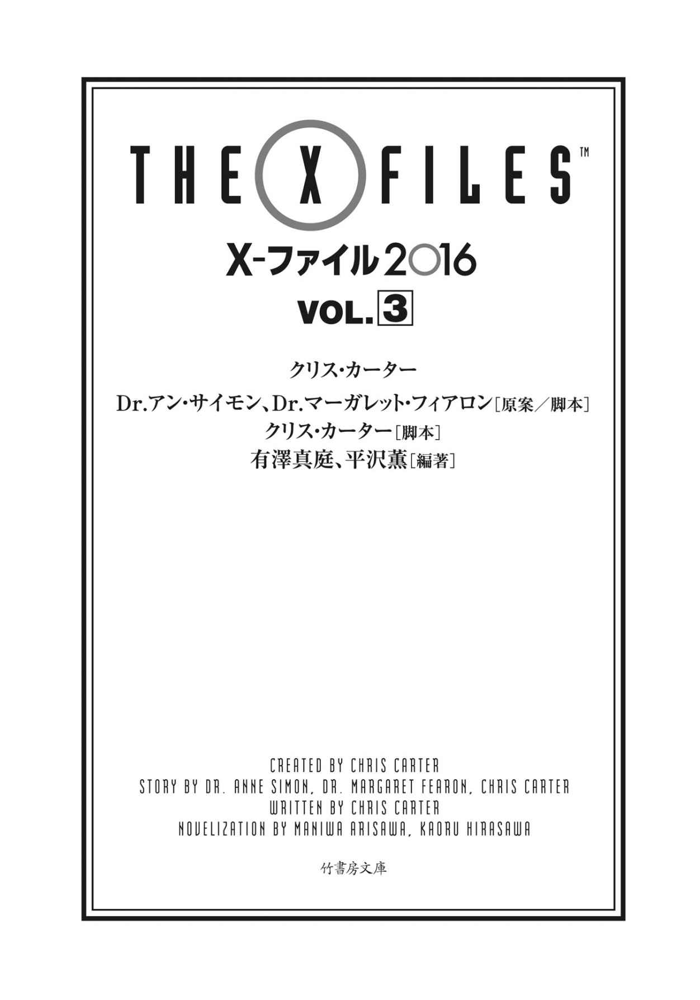
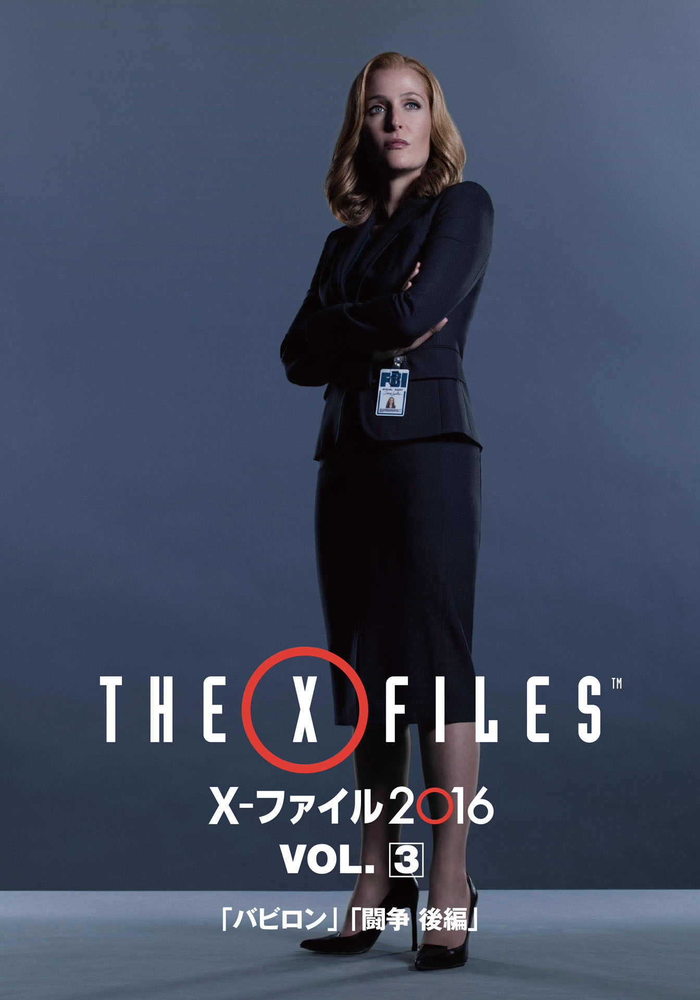
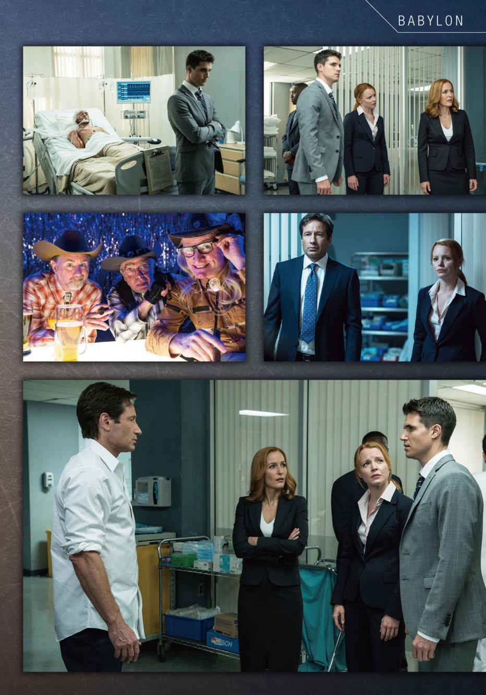
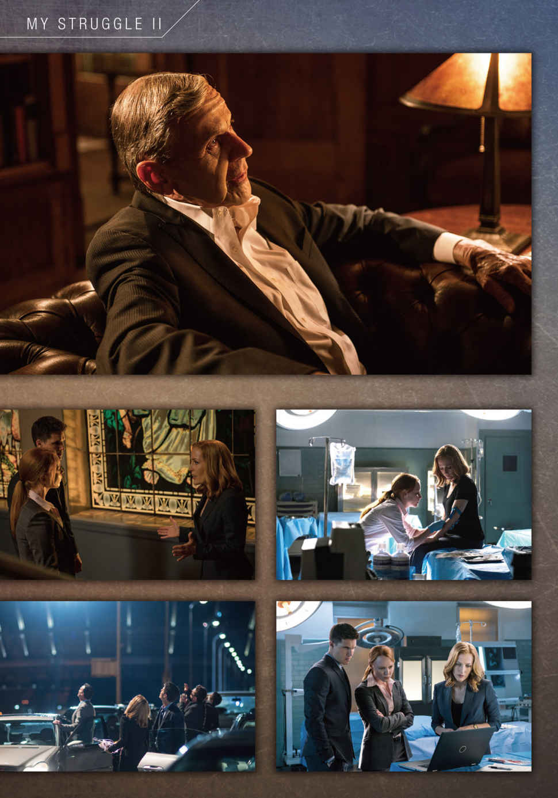
登場人物紹介
フォックス・モルダー .........FBI捜査官。超常現象事件などを担当するX-ファイル課所属。
ダナ・スカリー .........FBI捜査官。超常現象事件などを担当するX-ファイル課所属。
ウォルター・スキナー .........FBI副長官。
ミラー .........FBI捜査官。事件解決のためなら突飛な手段も辞さない柔軟な思考の持ち主。ややオカルトマニアの気あり。
アインシュタイン .........FBI捜査官。医師免許を持ち、超常現象は軽蔑してかかるタイプ。相対性理論のアインシュタインは遠い親戚。
ブレム .........FBI捜査官。
シラーズ .........イスラム系の若いテロリスト
ヌーラ .........シラーズの母親
テッド・オマリー .........動画ニュースサイトを運営し自らキャスターを務める保守派の陰謀論者
シガレット・スモーキングマン .........闇のシンジケートの一員。モルダーの永遠の敵。ヘビースモーカー。
モニカ・レイエス .........元FBI捜査官。かつてスカリーの後任として、ジョン・ドゲットと共にX-ファイル課を担当していた。
ウィリアム .........モルダーとスカリーの息子。現在15歳。赤ん坊の頃に養子に出され、現在の居場所は不明。
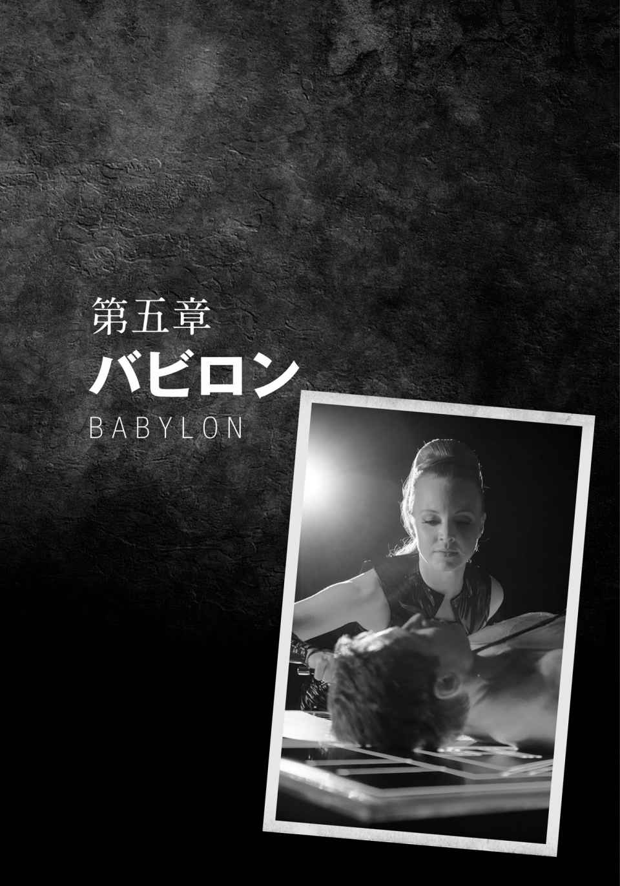
１
テキサス南西部
アパートの一室で、若者が朝の祈り を捧 げていた。椅子、テーブル、電気スタンド──小 綺 麗 だが殺風景な部屋は、必要最低限の家具しか置かれていない。黄色い壁にはポスターを剝 がした痕があるが、きっと以前に住んでいた人間のものだろう。テーブルの上には食器もスナックの空き袋も、何も載っていない。雑誌類やＤＶＤ、ゲームといった若者らしいもの、装飾品の類 いも、何ひとつ見当たらなかった。
若いムスリム（イスラム教徒）の名は、シラーズといった。ボーダーラインのＴシャツにＧパンと、一九歳の若者らしいごく普通の服装で、とりたてて目立つところはなかったが、ここテキサスでは、短い顎 鬚 とアラブ系の顔立ちが、ひと目を引くかもしれない。
礼拝 用絨 毯 の前に立ったシラーズは、アラビア語で祈りを唱えた。
《神は偉大なり 》
耳のところまで差し上げていた両手を下ろし、膝に置いて上体を九〇度曲げる。
《神はたたえる者の声を聞かれる》
ひざまずき、床に頭をつけ平伏叩頭した。
《神は偉大なり》
再び繰り返し、上体を起こすと、右を向いて祈った。
《平安とアッラーのお恵みがあらんことを》
左を向き、同じ文句を唱えた。両手の平を胸の辺りで天に向け、口の中で祈願を捧げてから、絨毯を素早く丸める。
キッチンに行くと、多少生活臭のするアイテムがあった。冷蔵庫の扉に、親友らしい若者と肩を組んだシラーズの写真がマグネットで留めてある。壁にはアラビア語をあしらった額縁がかかり、黒いやぎ髭を蓄えたイスラム教指導者 の写真が貼ってあった。
シラーズは冷蔵庫からピーナッツとジャムを取り出すと、カウンターでサンドウィッチを作りはじめた。
《神の御名によって》
神に感謝を捧げてから、立ったまま、牛乳で流し込む。その顔は無心だ。
左右にのどかな草原が続く道を、シラーズが運転している。カーステレオでは最近のお気に入り、オーディオ・アンドロイドの『アーバン・イスラム』がかかっていた。信号待ちをしていると、テンガロンハットのカウガールがふたり、横断歩道を渡りはじめる。金髪の子はジーンズの上下、背の高い子はミニスカートのへそ出しルックで、ふたりとも、もちろん足もとはカウボーイブーツでキメていた。シラーズがぎこちなく微笑むと、ふたりはうさんくさそうな一 瞥 をくれて、通り過ぎた。へこむ間もあらばこそ、エンジンをふかす騒々しい音がした。右車線を見ると、ピックアップトラックの運転席から、二の腕を出したテンガロンハットの男がにやにや笑いを浮かべ、こちらを見ている。同時に、カーステレオのダブステップ・サウンドが、大音 声 のカントリーソングにかき消された。労働者風の男は片手でビール缶を振り、シラーズに挨拶をした。女の子がふたり、助手席からひょこっと顔を出した。
「あーら、観光客かしら」
「ブラウニー色だわ」
「俺たち、間違った国にいるのかな？」
そんな会話が聞こえよがしに交わされたため、シラーズは黙って窓を閉めて前方を向いた。どぎまぎしたが、信号が変わると水色のトラックは騒々しい音を立てながら行ってしまった。ワンテンポ遅れて、シラーズも車を出した。
シラーズの車が、モーテルの駐車場で止まる。ドアの連なる平屋の建物の前で、アラブ系の若者が立っていた。写真の中でシラーズと肩を組んでいた男だ。
シラーズは車から降りると笑顔で若者に近づき、がっちり握手をした。
《君に平和が訪れんことを》
若者も笑顔で応え、シラーズの両頰にキスをした。
《君にも平和が訪れんことを》
そのまま肩を抱いて、アラビア語で親しげに話しかけながら、モーテルに入って行く。
友人を乗せたシラーズの車が、倉庫街を改装したおしゃれな商業スペースにやって来た。正面がガラス張りのアートギャラリーから、少し離れた場所に二重駐車をする。「ジッグラト展」の開催初日とあり、ギャラリーには早くもドレスアップした客が集まっていた。シラーズと友人は車の中で手を取り合い、目を閉じて、共に祈りを唱えた──。
《神よ、我らの胸を開き、重荷を下ろさせ、私の言葉から枷 をはずしたまえ》
祈りがすむとふたりは車を降り、いかにも親しげに肩を組みながら、ギャラリーへ吸い込まれた。そのすぐあとからギャラリーの前に車が一台乗りつけ、バレット係がすかさず近寄った。降りてきた男にチケットを渡して、運転席に乗り込む。助手席から降りた女性が男と落ちあうと、手を取ってギャラリーに向かった。
その途端、建物が大音響とともに爆発した。ギャラリーからこの世の終わりのような黒煙が大量に吹き出し、カップルを飲み込む──。
数秒後、煙が風に飛ばされると、地面には砕けたガラスや建物の破片が散乱し、倒れて動かない者や、這 いずって建物から遠ざかろうとする者、あるいは駆けよる者の姿が見えた。正面に停めてあった車は見事にひしゃげていた。ギャラリーの中は火の海と化し、火だるまになった人々がよろめき出てきた。
シラーズと友人の安否は、不明だった。
２
Ｘ─ファイル課／ＦＢＩ本部地下室／ワシントンＤ．Ｃ．
Ｘ─ファイル課のオフィスに行くには、二三年前と同様、ＦＢＩ本部Ｊ・エドガー・フーヴァー・ビルのエレベーターに乗って地下に降り、「フォックス・モルダー特別捜査官」と札の出ている部屋を訪ねればよい。
オフィスでは、腕組みをしたスカリー特別捜査官が、フラットスクリーンのテレビモニターの前で映像を観ていた。カメラはどこかの高層ビル群を下から捉え、空を見上げる女性の頭部が画面下部に映っていた。だが、このビデオの注目すべき点は映像ではなく、音にあった。金属的で不安をかきたてるものの、決して不快とはいえない奇妙に音楽的な音が、あたり一帯に響き渡っている。
「この音はなんなの、モルダー？」
いつもの懐疑的な笑みを浮かべ、スカリーはデスクに座るモルダーを見た。
「目撃証言によると──」
デスクから立ち上がったモルダーが、狭いオフィスをそぞろ歩いてスカリーの後ろに立った。
「いや〝耳 撃証言〟かな、正確には──トランペットの音に似ていたそうだ」
フラットスクリーンの映像は、動画検索サイトのクリップをモルダーのラップトップ・パソコンから転送したものだった。
「どこからともなく？」
「どこからともなく」
やけにはずんだ声で、モルダーが言う。ポケットから袖をまくり上げた片手を出して、モルダーにしか意味のわからないジェスチャーを交えて話す。
「まるで、神自ら作曲して、自ら楽器を奏でたみたいだ。天上から音楽が降ってきたのさ」
スカリーが後ろを振り返った。
「いつから神様を信じるようになったの、モルダー？」
「なんでそう思うんだ？」
腕を組んだまま、スカリーが肩をすくめる。
「〝神自ら〟？」
スカリーの後ろでは、テレビ画面のなかで畏 怖 の表情を浮かべた女性が、青空をぐるりと見回している。
「僕は捜査官として話しているに過ぎないよ。各地から報告が来ている。ベラルーシ、カナダ、フランス、イタリア、ドイツ、ウクライナ......」
「でも捜査官として、あなたはこの現象にお墨付きを与えているように聞こえるわ」
モニターの中の映像では、カメラが路上に上下移動 して、上を見上げてどこかを指さしたり、諸手を挙げたりしている人々を映していた。
「僕が何を信じてるかは重要じゃない」
スカリーが「おやまあ」という顔をする。
「重要なのは、彼らが信じていることだよ。〝耳撃証言〟たちがね」
モルダーはこの新語を定着させたくて、強調した。スカリーがわざとらしく目をパチパチさせる。
「それで、彼らは何を信じてるの？」
モルダーは聖書を引用した。上の方を向いて、たどたどしく暗唱する。
「『そして七人の天使が神の前に立ち、七つのトランペットを与えられた』──ヨハネの黙示録第八章第二節。終末の先触れだ」
敬 虔 なカトリック教徒のスカリーは、もちろんその一節をよく知っている。
「だけどその手の預言は何世紀も前からあるのよ。空振りに終わった最後の審判の予知。預言のはずれは、聖書の中にさえあるわ」
スカリーが預言の不確実性を持ち出すと、無神論者のモルダーはますます声を弾ませた。
「そうそう。神はアダムに、もし禁断のフルーツを食べたら死ぬと言われたが、アダムは九三〇年生きた。大はずし だよ」
「額面通りに起きたわけじゃないって知ってるでしょ？」
しかも厳密に言えば、間違った解釈だった。神はアダムにりんごを食べたら即死すると言ったわけではない。
モルダーはポケットに手を突っ込んだまま、肩をすくめた。
「さあね。君の神様 にまつわる本だ」
モルダーがどこかから見つけて来た超常現象をスカリーに教えては、その真偽についてふたりでああだこうだ議論する──二三年前と同じく、Ｘ─ファイル課の暇の潰し方は、それが習わしだ。しばしばそれがきっかけで、調査に発展することもある。
不意に、トランペットならぬドアをノックする音が、三回聞こえた。
「すみません、どなたかいらっしゃいますか？」
男の声だ。モルダーが返事をしようと口を開くが、スカリーが一瞬早く、ドアに向かって声をかけた。
「ここにはＦＢＩの鼻つまみ者しかいないわよ」
モルダーが何それ、という顔でパートナーを見る。
「二三年間これを言うのを待ってたの」
古い記憶が蘇 った。スカリーがはじめてこのオフィスを訪れたとき、モルダーが彼女に言った言葉だった。そんなに強い印象を与えていたとは、知らなかった。
「感想は？」
モルダーが聞くと、スカリーは口をへの字にして満足そうな顔をした。
「最高！」
「へえ」
モルダーは声の主に向かって、最初に言いかけた返事をする。
「開いてるよ。入ってくれ」
ドアが開いて、若い男女の捜査官が入ってきた。どちらも見覚えはない。
「フォックス・モルダー特別捜査官？」
意気込んで差し出された男性捜査官の手を握って、モルダーが聞く。
「そうだよ。それで僕は誰と話してるのかな？」
「私はミラー特別捜査官です。こちらはアインシュタイン特別捜査官」
反射的に作り笑いを浮かべた女性捜査官と、モルダーが握手する。
「アインシュタイン特別捜査官ですって？」
スカリーがぶしつけなほどの素 っ頓 狂 な声を上げた。
「アルバート・アインシュタイン博士とは、遠い親戚です。お聞きになりたいのがそれであれば」
スカリーの食いつきにいささか驚いたふうだったが、先輩捜査官に敬意を表し、アインシュタインが如才なく説明する。小柄で、赤毛をポニーテールにまとめたアインシュタイン捜査官は、相棒のミラー捜査官の視線を追ってテレビ画面を見ると、顔をしかめた。人々が何もない空を見上げて、スマートフォンをかざしている。
いつもとは逆に、モルダーが相棒の振る舞いを詫 びた。
「スカリー捜査官の無礼を許してやってくれ。アインシュタインの〝双子のパラドックス〟をテーマに、卒業論文を書いたもんだから」
二三年前、スカリーがＸ─ファイル課に配属されたとき、モルダーはその論文を読んで斬新な解釈を気に入った。スカリーは決まり悪そうに後ろ手にしている。
「失礼、でもあなたは医学博士だとうかがっているんですが」
アインシュタインが貼りついた笑顔のまま、相棒のミラーを見た。どうやら彼からの情報らしい。
スカリーが控え目に言う。
「そうよ。でも科学者でもあるの」
アインシュタインが得意げに打ち明ける。
「私も医学博士なんです」
「あら」
赤毛で医学博士の捜査官から目を離し、スカリーは長身で青い目のミラー捜査官に矛先を向けた。
「それじゃあ、こちらは超常現象に取り憑 かれたプロファイラー？」
ミラーはスカリーの冗談にとまどうどころか、待ってましたとばかりに切り出した。
「実際、そのためにここに来たんです」
「本当は空港に行かなきゃいけないんですが」
アインシュタインが気短そうに口を挟んだ。モルダーとスカリーは顔を見合わせた。
ミラーが構わず続ける。
「おふたりとも、テキサス州のアートギャラリーがテロリストによって爆破された事件は聞いていらっしゃいますね」
「ああ。ふたりの若いムスリムが、予言者ムハンマドの風刺画に抗議したんだったかな」
モルダーが答え、スカリーがつけ加えた。
「ふたりとも、自爆用ベストを身につけていた」
数ヵ月前、やはりムハンマドの風刺画を掲載したフランスの週刊誌『シャルリーエブド』のパリ本社が、イスラム過激派に襲撃され、一七名の犠牲者を出した。イスラム教では、預言者の肖像を描くのはタブーなのだ。その事件の余 韻 が冷めやらぬなか、今度はアメリカのテキサス州で同様の事件が起きた。事件はいやがうえにも世間の注目を集めていた。
「さっさと用件に入らない？」
悠長なやりとりにしびれを切らしたアインシュタインが、目をギョロつかせ、歯を剝 き出す特徴的な表情で、相棒をせっついた。
「自爆テロにより九名が死亡しましたが、爆破犯のひとりが生き延びまして」
ミラーが入室したときから手にしていたタブレットを、モルダーに手渡した。画面には、病院のベッドに横たわるアラブ系の若者の上半身が映っていた。モルダーたちは知るよしもないが、それは変わり果てた姿のシラーズだった。顔は縫い跡だらけで、右目は腫 れ上がったまぶたにふさがれている。右側の頭部は、著 しく陥没していた。口に気管内チューブを挿管され、胸には電極が貼りつけてある。
「定義上はね」
アインシュタインが補足する。モルダーはスカリーにもタブレットを見せた。
「医学的には、植物状態です。心臓が鼓動している以外、死んでいます」
「我々が訪ねてきた理由がおわかりでしょう」
ミラーがそう言うが早いか、モルダーが以心伝心の要領で、すかさず応じる。
「いわゆる霊能者と呼ばれる人たちが......」
スカリーが割って入った。
「ごめんなさい。悪いけど......なぜあなた方が訪ねられたのか、さっぱりよ」
「私もです」
アインシュタインが共犯めかしてスカリーのほうへ身を乗り出した。スカリーは若い捜査官コンビのちぐはぐさを面白がって、口をへの字にした。
「ミラー捜査官は明らかに自由な発想の持ち主で、死者と交信できる可能性を信じているのさ。この場合は、瀕 死 の者とだけど」
モルダーに擁 護 され、ミラーが照れくさそうにする。アインシュタインは顔を伏せて、笑いを嚙 み殺すだけの分別を見せた。明らかに、このふたりがコンビを組んでから、まだそれほど経ってはいないようだ。
ミラーがさきほどよりも自信を深めた態度で、モルダーに話す。
「さらなるテロを計画している大規模なスリーパー（注：市民に紛れて潜伏中のテロリスト。） の内部情報を、彼が持っているかもしれません」
アインシュタインがミラーを横目で見上げ、訴えた。
「だからそっちにエネルギーを注ぐべきなのよ。死んでるテロリストと話そうとしてもたついてないで、生きてるテロリストを捕まえる」
目を見開き、歯を剝き出すようにして喋 るのが、アインシュタインの癖のようだ。せっかくの容姿が台無しだが、表情豊かなところは、遠縁の世界的に有名な博士を彷 彿 させなくもない。
「同意見だわ」
赤毛同盟のスカリーが言うと、「ですよねぇ、普通」という目でスカリーを見る。
まっとうな意見は耳に入らないという特技を持っているモルダーが、ミラーとの会話を進めた。
「信頼するに足る能力を備えた占い師、予言者、行者、降霊術者は過去から存在し......」
「マダム・ブラヴァツキー、神智学の創始者ですね」
引き取ったミラーに、モルダーが頷 く。
「アメリカに、いわゆるチベットの導師から得た古代の智 慧 を持ちこんだ人だ」
スカリーがふたりに割って入った。
「Ｘ─ファイル課に長くいすぎたのかしら、マダム・ブラヴァツキーはもう死んでるって、なぜか知ってるのよね」
「ほお」と、アインシュタインが目を剝いた。有益な情報だ。
「そうなると、彼女の広範な能力を拝借するのが、より難しくなるな」と、モルダー。まず彼女と交信できるイタコを探すことからはじめないといけない。
「ええ、私もそう思います」
そう言うと、結論が出たと判断したアインシュタインは相棒の背中をぽん、と叩いて退出しようとする。
「ミラー、行きましょ」
ミラーは食い下がり、モルダーとスカリーに質問した。
「相談できそうな現役の霊能者をご存知ありませんか？」
「時間の無駄になりそうな人物しか知らないな」
まったくだ。戸口に立つアインシュタインが腕時計を見た。
「ミラー、行くわよ。テキサス行きの一三時半の便があるから、それに乗りたいの」
現在の時刻は一一時半前だ。二時間あれば、ナショナル空港に行って飛行機を摑 まえられる。
「お手間を取らせました。何かありましたら電話をください」
ミラーがポケットから名刺を一枚取り出し、差し出した。モルダーが受け取って、しげしげと見る。スカリーは笑顔を作り、ふたりを見送った。アインシュタインが軽く手を挙げ、ふたりは退出した。
モルダーが名刺から顔を上げて言った。
「聡 明 そうな若者だったな」
名刺をモルダーの手から取りあげながら、スカリーが言った。
「あの捜査官、パートナーのことを名字の〝ミラー〟って呼んでたわ」
モルダーがしごくご満悦そうに笑った。今の短い邂 逅 を、おおいに楽しんだようだ。
スカリーが鼻を鳴らした。
３
ロナルド・レーガン・ワシントン・ナショナル空港／ワシントンＤ．Ｃ．
ミラーとアインシュタインは、テキサス行きの便を待ち、ナショナル空港の混み合う搭乗待合室にいた。それぞれ機内持ちこみ用のキャリーケースの脇に立ち、搭乗待ちの列に並んでいる。頭上のモニターでは、発着便の案内と天気予報に挟まれ、ニュースチャンネルが流れていた。アートギャラリー自爆テロ事件のニュース速報を伝える緊急特集番組内で、ふたりのコメンテーターが口論している。テキサス州の形と州旗の〝ひとつ星 〟を組み合わせた出来合いのプロップの前で、白髪 の男性コメンテーターがカメラに向かって主張していた。
〈アート作品を使って異教の予言者を冒 瀆 するなど、狂信的なテロリストを刺激するだけだ〉
隣に座るアフリカ系アメリカ人の女性が首を横に振った。
〈ただの絵なんですよ〉
男性が興奮して、手をかざす。
〈そうとも。ムハンマドが便座に座ってイスラム過激派をヒリ出してる絵だぞ！〉
〈ばかばかしいにもほどがあるわ。ばかげてる！〉
〈テロの犠牲者と家族にとってはばかげてなど......〉
ミラー捜査官はため息をつくと、手元のタブレットに視線を落とした。コメンテーターたちの口論はエスカレートするばかりだ。ミラーは当の自爆犯のグロテスクな顔写真を見ながら、かぶりを振った。
「爆弾を仕込んだベストを着て、自分の死に向けて進んで行くなんて、すごく妙な気分だろうな」
アインシュタイン捜査官はテロリストに同情心など、これっぽちも持てない。
「犠牲者はどうなの？ 想像してみてよ、何も知らずに死ぬなんて。もっとひどいわ」
ミラーはもう少し抽象的なことを考えている。
「憎しみは、どこから来るんだろう？」
アインシュタインが激しく言い争うテレビを顎でしゃくった。
〈これがイエスキリスト教徒の絵だったらどうなっていましたかね!? 〉ケンカ腰の男性コメンテーターが吠 えている。
だが、自爆テロ犯の破壊された顔に目を落としたままのミラーは気づかない。
「まだ子どもだ。誰かに吹き込まれたに違いない。そいつを突き止めなきゃ」
テロリストとそう年端の違わない、ナイーブなパートナーをアインシュタインは茶化した。
「彼は教えちゃくれないわよ、ミラー。降霊術師もね」
ミラーがきっとして、アインシュタインに向きなおる。
「少なくともやってみる価値はあるだろ？」
アインシュタインが鼻で笑う。
「Ｘ─ファイルなんて誰もまじめに取り合わないわよ。だから彼らをあんな地下のオフィスに押し込んでるんじゃない」
ミラーは息を吸い込んで自分を抑えると、モニターに顔を戻した。だが、アインシュタインはしょっぱい顔をする。
「スカリー捜査官に同情しちゃうわ」
モルダーと彼の仕事を評価しているミラーが、アインシュタインの考え違いを正す。
「あれこそ夢の任務だよ」
だが、ふたりは価値観が水と油だった。アインシュタインが吐き捨てるように言う。
「矜 持 のある科学者だったら、あんなうさんくさいＳＦワールドであくせく働くことにキャリアを費やそうなんてしないわ」
「じゃあ、なんで彼女はほかの部署に異動しないんだ？」
アインシュタインには考えるまでもない。
「彼を愛してるからに決まってるじゃない」
今度はミラーが理不尽な言いぐさにあきれた。それこそ論理の飛躍というものだ。
「五分一緒にいただけで、なんで断言できるんだ？」
アインシュタインは取り合っていられないとばかりに目を白黒させ、口の端で答えた。
「ほかに説明がつかないもの」
ミラーは返しようのない答えに一瞬詰まった。
「それなら、モルダー捜査官のほうが彼女にぞっこんかもわからないだろ？」
「彼が何にぞっこんかなんて、誰にもわからないわよ。私たちは現実を生きているのよ」
アインシュタインはにべもなく言うと、ミラーから顔をそむけてテレビに戻った。ミラーはしばらくパートナーを睨んでいたが、モルダーに褒めれた言葉を使って、Ｘ─ファイル課を恋愛ゴシップから救おうとした。
「彼が、彼女の自由な発想を重宝してるのかもしれないぞ」
「彼女が、彼の戯言 を崩そうとしてるのかもしれないわ」
アインシュタインは皮肉が決まって、得意そうな顔をした。
ミラーのスマートフォンが鳴り、勝負に水が入る。ミラーは息を吐いて気持ちを落ち着かせてから出た。
「ミラー特別捜査官です」
「ミラー捜査官、スカリー捜査官です」
「ああ、どうも。ちょっと待って」
ケンカの種が電話をしてきて、一瞬どぎまぎした。スマートフォンを胸に押し当てて、アインシュタインに声をかける。
「機内で落ちあおう」
ミラーは搭乗待ちの列から離れると、歩きながら会話を再開した。
「どうぞ──」
「なぜあなたに電話をしたのか、疑問でしょうね」
「いいえ」
反射的に返してから、ミラーは立ち止まって訂正した。
「あー、その、実は」
「あれから事件について考えていたんだけど、あのテロリストとコミュニケートできるかもしれない方法を思いついたの」
「それは素晴らしい！」
ミラーが振り返ると、向こうからアインシュタインが様子をうかがっていた。
「どうやるんですか？」
「試してみたいことがあるの。それにはテキサスに出向かないといけないんだけど」
「構いませんよ」
アインシュタインは怪 訝 な顔で、わざわざ自分から離れたところで電話を取ったミラーを目で追う。純真な相棒に、少々言い過ぎたかしら？ 相棒の電話相手を気にしていると、彼女自身のスマートフォンが鳴った。
「アインシュタイン特別捜査官です」
「アインシュタイン捜査官、モルダー捜査官だ」
アインシュタインは驚いた。
「なぜ電話したか、首をひねってるだろうね」
「いいえ。むしろ頭が真っ白です」
アインシュタインがミラーを見ると、まだ電話中だった。向こうもこちらを気にしているようだ。
「テロリストとコミュニケートできるかもしれない方法を思いついたんだ」
アインシュタインは顔を上げ、人混みを通してミラーの姿を探す。たった今まであそこにいたのに──。
「あー、お探しなのはミラー特別捜査官ではありません？」
「いや。君と話す必要がある。番号はウォルター・スキナー副長官から聞いたんだ。君のことをほめちぎってたよ、ところで──」
「ええ、偏頭痛を治してあげましたから」
社交辞令のようにチクリとやる。
「あなたのせいだっておっしゃってました」
モルダーは苦笑いをしたようだ。
「その、ともかく、テキサス行きを遅らせてもらえないかと思ってね」
これにはアインシュタインが驚いた。冗談でしょう。何を言いだすのかしら、この変人 おやじは。
「今、教えてもらえませんかね？」
「こみいった話なんだ」頑固な口調でモルダーが返す。
あまり気が長いとは言えないアインシュタインが嚙 みついた。
「この事件は急を要する っておわかりですよね？ 極めて文字通り」
「テロを未然に防げる。人命を救えるんだぞ」
捜査官にとっては、殺し文句だ。アインシュタインはつかの間口をぱくぱくさせたが、すぐにきっぱり言った。
「わかりました。ただちにうかがいます」
ミラーが電話を終えて、アインシュタインのところへ戻って来る。入れ違いに、アインシュタインが歩き出した。
「どこ行くんだ？」
「いかれた列車に飛び乗るのよ。テキサスで会いましょ、ミラー」
ハイヒールを高らかに鳴らし、アインシュタインはキャリーケースを引っぱって走り出した。
テキサス州南西部
暗い室内を、テレビ画面のちらつく明かりが照らしていた。空港でかかっていたのと同じニュースチャンネルが流れており、アフリカ系アメリカ人の女性コメンテーターが、強い口調で論敵に反 駁 している。
〈いつからイスラム過激派がアメリカで保護されるようになったんです？〉
白髪のコメンテーターの声が、やり返す。
〈建国の父たちが憲法に署名したそのときからだよ〉
〈同じ憲法で、言論の自由が保障されるはずでしょう〉
テレビの載った台には、空のコーヒーカップ数個と、アラビア語のパンフレットが置かれていた。
〈憎む自由じゃない。あんた、どうしちまったんだ？〉
〈憎む自由とは別ものです！〉
室内の光源は、テレビのほかに、スタンドライトが二、三台点いているだけで、全体の様子はわからない。
〈どうしてこの者たちがこんな挙に出ると思うかね？ なぜこの人物はチャタヌーガに行って五人の軍人を撃った（注：二〇一五年にテレシー州チャタヌーガでムスリムによる銃乱射事件が実際に起きている。） ？ 軍人たちに親身にされたからか？ 我々が彼らを尊重したからか？ メディアがこぞって彼らをテロリストと名指ししなかったから？ いいや！ なぜなら我々が彼らを憎むからだ〉
薄暗いなかおぼろげに見えるのは、化学薬品の入った容器や工具箱、アイスボックス等が載った壁際の棚、肥料の入った袋、ポリタンク、ドラム缶、廃品同然の椅子といった品々だ。加えて、作業台の上にはスプレー、鉄線のリール、計量系、圧力釜、魔法瓶、ねじ釘 等の金属片が雑然と載っていた。
〈憎んでいません。わたしは......。いいえ、憎んじゃいないわ。憎しみを容認もしません。知る努力さえしないなんて、噓を広めるのはやめ......〉
テレビの音声を聞いているのかいないのか、へそまで届きそうなほど黒いやぎ髭を伸ばした男が、作業台のひとつに座り、リード線をはんだづけしていた。熱で溶けたはんだから、紫煙のように煙が漂っている。
男のかたわらには、信管のついた爆弾をいくつも仕込んだベルトが、舞台の出番を待つかのように静かに並んでいた。
４
Ｘ─ファイル課／ＦＢＩ本部地下室／ワシントンＤ．Ｃ．
ＦＢＩ本部ビルの地下に押し込められたＸ─ファイル課のオフィスでは、モルダーがデスクの上に大判の学術書を広げていた。菌類の写真が何点も載ったページを熱心に読んでいる。開いていたドアが歯切れよくノックされ、アインシュタイン捜査官が入って来た。
「やあ、入って、アインシュタイン捜査官。座ってくれ──」
言い終わるか終らないうちに、アインシュタインはつかつかと歩いてデスクの前に立つと、モルダーを見下ろした。
モルダーは本から顔を上げ、眼前に立つアインシュタインを見上げる。
「あなたを信じて参じました、モルダー捜査官。でも人命がかかっているんです」
だから、座る間も惜しいと言いたいらしい。
「よくわかってるよ」
アインシュタインは両手を後ろに組んで、再び表情豊かに釘を刺す。
「ここで超常現象に関するいんちき論考を聞かされている間に、もしまたテロが起きたとしたら、私は自分が許せません」
モルダーは人畜無害な顔をして、かぶりを振った。
「僕はいんちきは言わないよ」
アインシュタインは苦笑するが、つとめて真顔に戻る。
「いいです。で、どんな方法ですか？ テロリストとどうやって話すの？」
「まず最初に、君の把握している実在 の本質を聞かせて欲しい」
モルダーが形 而 上 的な意味で聞いているのは察したが、アインシュタインはあえて即物的に受けとめ、即物的に答えた。
「私の把握しているのは、インターネットで新たな自爆テロの噂 が囁 かれているという実在 です」
「だけど君は、想念に質量があると思うかい？」
まっとうな意見は耳に入らないという特技を持っているモルダーは、両手でデスクの天板をばんばん叩いた。
「信念や許しという概念が、このデスクと同様に重さがあるって？ またはどんな素材でもいいんだが」
顎に手を当てて、答えを待つ。アインシュタインは一瞬固まると、ため息交じりに失笑して、モルダーをいたずら犯よろしく指さした。
「とんだ食わせものね、モルダー捜査官」
首を振りながら踵 を返し、出て行こうとする。
「まじめな質問だよ」
「まじめな答えは『ノー』よ」
ポニーテールを揺らして振り返ったアインシュタインが、声を荒げた。
「なぜそう言い切れる？」
モルダーはデスクに身を乗り出して聞いた。
「なぜなら私が体重計に乗ってアイスクリームのことを考えたとして、お尻に肉がついたりしないからよ」
単純にして明解でしょ、というようにアインシュタインは右手をぴん と揃 えて上に差し向けた。
「もっと説明が要ります？」
モルダーは彼女のたとえを面白がったが、自分も右手の力を借りて、言葉の重みを体現させるように空気を区切りながら、言い張った。
「いや。でも言葉には重みがある──人間に人間を殺させる重みが」
アインシュタインはむきになったときにするピラニアじみた顔をして、スタッカートを効かせながら、実在の本質を説く。
「人が人を殺す の。爆弾が 人を殺すのよ。言葉は憎しみの道具として殺人をそそのかせるけど、それ自体に致死性はないわ」
すると、モルダーが完璧に文脈を無視した質問を、出し抜けに投げかけた。
「レモンを吸ってみたことはある？ アインシュタイン捜査官」
アインシュタインが「はい？」と目を細める。
「今、酸っぱさを感じた？」
モルダーが口をすぼめてみせた。
「疑似感覚ってやつを」
アインシュタインは、確かにある種の酸っぱい感覚を覚えた。
「スカリー捜査官が味わった苦労を感じはじめました」
それから、スキナー副長官の偏頭痛の種もよくわかったわ。
「ネオダーウィニズムの信奉者は、僕の思い違いじゃなければ、表明されたあらゆる言葉、あらゆる想念、あらゆる知覚が、人類の進化に繫 がると信じている」
アインシュタインは手でオーケストラを指揮するように手をひらひらさせながら、体を左右に向けた。
「ああ。〝中国で蝶 々 が羽ばたけばニューヨークで嵐が起きる〟──バタフライ効果ね」
眉を吊 り上げ、目を見開いてモルダーに嚙みつく。
「でもその蝶々は、自爆テロがまとうベストの爆弾を無害にしてはくれないわ」
モルダーは生徒を諭す温厚な校長先生然とした口調で言った。
「アインシュタイン捜査官、あのテロリストは生と死の狭間で宙吊 りになっている。もし彼がテロリスト仲間の貴重な情報を握っているなら、聞き出すにはいわゆる物質世界から、君の心を飛躍させる必要があるんだ」
アインシュタインはひきつった笑いを凍りつかせたまま、目をぱちくりさせた。
サン・アントニオ空港／テキサス州
テンガロンハットを被ってループタイをした男や、ミニスカートにブーツ姿の女たちに混じり、スーツ姿のスカリーがキャリーケースを引いて、階段の踊り場に現れた。下の階で待っていたミラーが気づいて手を上げると、階段を駆け上ってなかほどで落ちあう。
「ワシントンで便に遅延があったの。できるだけ急いで来たわ」
幸い午後の便に間に合ったスカリーは、まだ日の高いうちにテキサスにやって来た。
テキサス州は、時差の関係でワシントンＤ．Ｃ．より一時間ばかり遅いのだが、こちらの人々はずいぶん軽装で、季節まで違うような錯覚に陥る。空気が乾燥しているのが、空港にいても感じられた。上着を着てネクタイをきちんと締めた少数派の格好のミラー捜査官が、スカリーのキャリーを受け取り、一緒に降りる。
「手を貸しに駆けつけてくださるなんて、感激です」
「あなたの焦りを理解できたから」
「あの若者からなんとか情報を引き出す手だてがあるはずだと信じたいんです」
「そうね、私もあると思うわ。でもあなたの思ってる方法じゃないけど」
その点をミラーは知りたがった。
「どうやるんです？ スカリー捜査官」
「巫 女 や霊能者や占い師頼みじゃなくて、科学頼みなのよ」
階段を降りてロビーに立ったミラーが、足を止めた。スカリーに察しが悪いと思われるのを恐れたが、思い切ってたずねた。
「僕には見当がつきませんが」
ミラーに向きなおったスカリーは、言おうかどうしようか考えあぐねる表情をする。
「深刻に聞こえるかもしれないけど、これはちょっとばかり、個人的な探求でもあるの。最近、母が昏 睡 状態に陥って、やっぱり意思の疎通ができなくなったのよ」
まだ経験の浅いミラーには、対処の難しいデリケートな話題だ。ミラーは舌を舐 めて、気を落ちつけた。ふと、スカリーの胸元の小さな十字架のネックレスに目を留めた。
「亡くなられたのですか？」
スカリーのほうも今日が初対面の若者にこんな話をするのは気まずいのか、左右に目をやりながら早口に話した。
「まだ母が生きてるときに思いつければ良かったのにって悔やんでるの。絶対に解けない謎を、解けたかもしれないのに」
片方の口角を上げてスカリーが自嘲気味に笑う。だがまじめな性分のミラーは、真剣な表情で頷いた。
Ｘ─ファイル課／ＦＢＩ本部地下室／ワシントンＤ．Ｃ．
Ｘ─ファイル課のオフィスでは、腕組みをしたアインシュタインが、モルダーに詰めよる。
「どうぞ私の眼を開かせてくださいな、モルダー捜査官。九年大学に通い、三つの学位を取り、クアンティコ（注：ヴァージニア州にあるＦＢＩの警察学校。） で二年間訓練を受けたのに、いまだにおばかなまま なのよ」
モルダーが強くかぶりを振った拍子に、裏返った声で言う。
「ばかじゃない。きかん気なのさ」
むっとして、アインシュタインがぷいと横を向く。
「その決めつけ大嫌いだし、どういう意味かもわからないわ」
「黙ってそこへ座れってことだよ」
今度はまるで、父親が娘を叱っているような言いぐさだ。実の父にもそんな言い方をされたことのないアインシュタインは、一瞬絶句して、息が漏れた。
「スカリー捜査官にもそんな口を利 くの？」
「きかん気なときだけな」
モルダーが立ち上がった。
「いいから......座ってくれ」
アインシュタインのすぐ脇に置かれた椅子の向きを座りやすいように変え、うやうやしく「どうぞ」とジェスチャーする。
アインシュタインは腕時計を見た。
「二分あげます、モルダー捜査官。そのあとで私は地球に戻るわ 」
座るとため息をついて、再び腕組みをする。
「ごらんあれ」
モルダーがいそいそと、テレビモニターをつけた。画面に映ったのは、ひょろ長いきのこ のアップ写真だった。
「シロシベ・タンペネンシスだ」
アインシュタインが半目になる。
「この話は、どこにいくの？」
「いわゆるマジックマッシュルームだよ。コロンビア大からオックスフォード大まで、高名な医師達が最近、研究を見直している」
アインシュタインは一笑に付した。
「研究は論争の的よ」
論争については、アインシュタインのような者たちに任せておく。モルダーにとって大事なのは結果だ。
「研究結果に議論の余地はない。被験者は時空を越え、死者と言い争い、神の顔に触れた体験をしている」
無神論者のモルダーは、「神」という単語を使うとき、無意識に手を大げさに振り回し、言葉の説得力を自分で相殺していた。そんな調子では、ミラーならともかく〝きかん気〟のアインシュタインを説得できるはずもなく、彼女は眠そうに目をぱちぱちさせた。
「そりゃあ凄いわ。モルダー捜査官──あと一分切ったわよ」
モルダーはまったくなびかない聞き手に焦 れて、声を大きくする。
「体のくびきからいったん解放されると、自意識が許さなかった深くて永遠の真実を──筆舌につくしがたい感情、聖性、安らぎ、統一感、喜び──それらを脳の化学反応に変換する過程を経ずして、直接悟ったとも言っているんだ」
正気を保つため、アインシュタインは一度目をぎゅっとつむった。
「モルダー捜査官、あなたが提案してるのは──マジックマッシュルームをあのテロリストに投与しろってこと？」
「違う！ そうじゃなくて」
そう言って、モルダーは自分を指さす。
「僕の提案は、君が僕に投与してくれれば、テロリストと交信して情報を引き出し、テロを未然に防げるかもってことだ」
アインシュタインは何度目かのため息をついた。死に体に 、期待しすぎ もいいところだ。
「死んだも同然の男と交信を？」
「〝死〟とは今では単に、存在の別の階層だとみなす者もいる」
アインシュタインは前屈みになって、機械的にこくこく頷 きながら聞いている。どこに行くか、わかってきた。
「われらがテロリストはまだその階層に到達してるとは思えない。まだこっち側の階層にいて、手が届くと信じてる」
「では、私を呼び戻したのは、このドラッグ、〈規制物質法スケジュールⅠ〉の違法薬物を投与させるためだと」
「医療専門家としてね」
ドラッグを手に入れるのに、医者の肩書きを持つ人物が必要──そういうことだったのね。
「スカリー捜査官もそうですが」
モルダーは咳払いをした。
「スカリー捜査官は、最近彼女自身、人生観の変わる死を経験したばかりなんだ。だから巻き込みたくなくてね」
「なるほど......」
つまり、光栄にも、自分はスカリー捜査官のピンチヒッターとして声をかけられたのだ。アインシュタインは大きく頷くと、手をモルダーと自分との間でパタパタさせた。
「じゃあ、ここだけの話しにしておきたいと？」
アインシュタインの察しのよさに、モルダーがほっとした顔をする。
「そう、そうだね。君さえよければ」
アインシュタインはかぶりを振った。
「いいえ、構いませんよ。ちっとも」
アインシュタインは持ち上げた右手を膝にぽん、と下ろすと、おもむろに立ちあがった。
「だって、まったくなんにも 話すことなんてありませんから」
モルダーに顔を近づけ、歯を剝きだしてチェシャ猫笑いをした。
「内部調査部に、あなたのとち狂った計画について話すかもしれないけど」
いまいましそうに捨て台詞を吐き、頭から湯気を立てながら再びドアに向かう。とんだ無駄足を踏んじゃったわ。
「これのどこがとち狂ってんだい、正確に教えてくれないか？」
モルダーが口を尖 らせる。アインシュタインは戸口でポニーテールをなびかせ、再びくるっと振り返る。向こうを向いて、考えるジェスチャーをした。
「ええと、考えさせてください」
手をワイパーよろしく一八〇度振る。
「全部？」
モルダーはがっかりした顔になる。
「それから保証します、モルダー捜査官。ここを出て行ったあと、二度と再びあなたの地下室のドアに影を落とすことはありませんから」
そう言い残すと、アインシュタインは時間が惜しいとばかりにさっさと部屋をあとにした。
「じゃあ、話すかも なんだね？」
モルダーは耳をすませたが、アインシュタインが戻って来る足音は聞こえなかった。
５
病院の集中治療室 ／サン・アントニオ／テキサス州
ミラー捜査官は、集中治療室 のリクライニングベッドに寝ている自爆テロ犯の生き残りを、痛ましそうに見下ろしていた。
ＦＢＩの資料にあった写真の通り、生命維持装置をつけ、上下動を繰り返す胸にはたくさんの電極が取り付けられている。頭部の右側は陥没し、顔は火傷の痕と縫い目に覆われていた。右の目が、ボクサーのように腫れ上がっている。写真でわからなかったのは、右腕の肘 から下がなくなっていることだった。心電図モニターが規則正しく電気音を発し、ここまで手ひどいダメージを被っても、生命維持装置によって心臓がいまだに動いていることを示していた。
「この体に意識があるなんて、想像しにくいですね。じかにこの目で見ると」
意識のない若者の比較的無傷な左側に立つミラーが、顔を上げてスカリーを見た。
「研究では、極めて重度の損傷を受けた脳であっても、神経活動の驚くべき事例が実証されているわ」
ベッドの反対側に立つスカリー捜査官が言った。
「つまり、無人の家に明かりが点 るような......？」
「電球が一個だけだったとしたらね。私が試したいのは、かなり......斬新だけど、実証例のあるやり方なの」
ミラーの反応を待つかのように、スカリーが見上げる。
「僕なら、どんなことでも歓迎です」ミラーは屈託なく応じた。
「そうでしょうね、ミラー捜査官」
「たくさんの答えが、この現実世界の領域を越えた、超可能性の王国にあるとぼくは信じてるんです」
夢見るように目を輝かせるミラーの言葉に、スカリーが微笑む。スカリーは、最初に会った頃のモルダーを思い出していた。モルダーはこの若者をなんと言っていたかしらね、〝自由な発想の持ち主〟だったかしら──。
「あなたが信じてると信じるわ」
夢見るような目をしたまま、ミラーが聞いた。
「それで、あなたの提案は？」
スカリーはすぐに、説明に入った。純粋に、科学的な方法だ。
「最近の実験で、〝患者二三号〟と呼ばれる男性の活動を停止した無反応の脳に対して、医師団が電気的な活動の引き金となる質問をして刺激したら、磁気イメージング を通じてやりとりができたの」
ミラーはベッドに横たわるシラーズに目をやった。
「どんな類いの質問ですか？」
「日常的な質問よ。たとえば......家事とかテニスとか。そうしたら意外にも、脳の特定部位が反応を示したんだけど、『はい』と『いいえ』に翻訳できたの」
ミラーが感嘆する。
「それはすごい」
「これがさらにすごいのは、ありきたりの脳電図を使った点なのよ」
「なぜ、誰も思いつかなかったんでしょう？」
感に堪えないというように、ミラーが首を振る。スカリー捜査官が提案したこの方法を試せば、霊媒師に頼まずともこの瀕死の若者と本当に交信できるかもしれない。同じ医者でも、この人と相棒のアインシュタインとでは、天と地ほども違うぞ。
「でも、念を押しておくけど、もしこの若者と意思疎通できても、あなたが望む情報を手に入れられるとは限らないわ」
──そうなのか。ミラーはちょっとがっかりして、再び患者に目を落とした。すべては、彼次第ということか......。無力に横たわる自爆テロ犯の顔は憎しみも苦痛も何も浮かべておらず、意識のない穏やかなその顔は、天使のようでさえあった。
「ミラー特別捜査官はどっちだ？」
病室に、スーツ姿の人間が二名、ずかずかと入って来た。その後ろから黒髪の看護師がついてきて、ベッドに向かう。
「私がミラー捜査官です」
ふたりの後ろで、テロリスト実行犯の部屋を見張るＦＢＩの捜査員が、静かに治療室の引き戸を閉めた。色の浅黒い、おそらくアラブ系の、黒髪に白髪の混じりはじめたほうの男が居丈高に言った。
「捜査官には退室を願おう。この件はＦＢＩの管轄を外れた」
スカリーが色めき立つ。
「どこの管轄になったの？」
「国土安全保障省 だ」
背の高い方の男が言った。両手を腰に当て、上着がめくれたためにベルトにＤＨＳのバッチをぶら下げているのが見えた。
ミラーがしどろもどろに説明をする。
「僕はこの件の担当者です。スカリー捜査官は医師なんです。ご協力いただいて容疑者と意思疎通を図ろうと......」
背の高い方の職員が遮 った。
「意思疎通？ 何を伝えるんだ？『あんなことをするべきじゃなかったな』ってか？」
吐き捨てるように言い、男の怒気がしばらく空中を漂った。
男の態度で活の入ったミラーが、ふたりの職員に近寄っていき、対決姿勢を取った。体格的には上背があり、胸板の厚いミラーの方が、細身の相手より分がある。
「爆破事件の首謀者を聞き出すチャンスがあります」
「こいつが言うとでも？」
職員は目の前のミラーは無視し、スカリーを向いた。
「倫理上、この肉塊は人間ではない。俺の定義じゃこのテロリストは死んでいる」
政府職員にしては、個人的意見をベラベラ喋りすぎだ。スカリーが不信感もあらわに詰めよった。
「失礼ですが、ここへは何しに？」
白髪混じりの方が、眉を上下させて権威風を吹かせた。
「ふたりとも、ちょっと外に空気でも吸いに行ったらどうだ。疑問があるならワシントンの上司に電話しろよ」
「私たちはこの部屋を離れないわ」
その程度の脅しでは、スカリーはびくともしない。
白髪混じりの方がため息をついて、目をしばたかせる。背の高い方が相方に顔を寄せ、アラビア語で何か耳打ちをした。内容はわからないが、異国語の響きと高まる緊張感が、シラーズの頭に包帯を巻いていた看護師をも振り返らせた。
ミラー捜査官がきっぱりと要求した。
「出て行ってください」
白髪混じりがミラーを睨 んだ。
「命令は私がする、ミラー捜査官」
「いいや。今度は僕がする」
スカリーにというより、自分に向かって呟 く。
「この人たちは報復に来たんだ」
ミラーは懐からスマートフォンを取り出した。
「誰に電話しようと、これは権限を遙 かに......」
ふたりは目に見えて浮き足立った。白髪の男は自分で「電話しろ」と言っておきながら、実際に電話されるのは都合が悪いようで、ミラーに向かって両手で抑えるような仕草をした。
「誰にも電話なんてしないさ」
ミラーはスマートフォンをふたりの自称国土安全保障省職員に向け、写真を撮った。フラッシュが焚 かれ、ふたりはとっさに顔をそむけた。
ナースステーションを横切って、アインシュタイン捜査官がはずむような大股でやってくる。モルダーのせいで、すっかり出遅れてしまった。数時間ひとりきりにしたミラー捜査官が、何かばかなこと──死にかけた自爆テロ犯に向かってテキサスのカントリー歌手に歌を奏でさせるとか──をやらかしていないか、気が気ではない。ＩＣＵに来ると、アインシュタインはドアの前に立つＦＢＩ捜査官ふたり組に声をかけた。
「アインシュタイン特別捜査官です」
「すみませんが、許可なしには入れません」
アインシュタインは捜査官の顔の前に、身分証 をかざして見せた。
「私はパートナーのミラー特別捜査官と共に、この件を担当してます」
引き戸が勢いよく開き、スーツ姿のふたり組が、何やら憮 然 として出ていった。アインシュタインは怪 訝 な顔で見送ったが、病室の戸が閉じられるとき、ミラーともうひとりの人物の後ろ姿が、ちらっと見えた。
ドア番の捜査官がもうひとりからタブレットを受けとり、アインシュタインのＩＤを関係者リストと照合する。
「あなたがミラー特別捜査官のパートナーならば、ダナ・スカリー特別捜査官は、何者ですか？」
ドア番の問いかけは無視し、アインシュタインが左手の窓に行って覗 き込むと、ブラインド越しに、ミラーとスカリーの姿が見えた。窓から体を離したアインシュタインは、眉をしかめて口を開け、今見た光景の意味を考える。素早く結論を出すと──ポケットからスマートフォンを取り出し、電話をかけた。
「モルダー捜査官、アインシュタイン捜査官です。テキサスにはいつ頃来られます？」
６
サン・アントニオ空港／テキサス州
テキサス州ではワシントンＤ．Ｃ．よりも一時間、時計の針が戻るはずだが、現地に着くとすでに日はとっぷりと暮れていた。キャリーケースを引き、左手にはスマートフォンと上着を持ったモルダーが、カウボーイ＆カウガールに混じって、空港から出て来た。しきりに左右を見渡している。
「モルダー捜査官」
道路の向こうから、乗降エリアで客を降ろしているタクシーの合間を縫って、アインシュタインが手を振っているのが見えた。
「アインシュタイン捜査官」
いたいた、と頷いて、モルダーがキャリーケースを引きながら道路を横断する。アインシュタインもはずむような大股で向かって来る。
「一瞬、君にはめられたのかと思ったよ」
「少々入手するのに手間取りまして......違法薬物の」
アインシュタインがポケットをまさぐって、中味をモルダーに手渡す。モルダーが手の平を開くと、二錠の白いカプセルが載っていた。
「でかしたぞ。どこで手に入れたんだい？」
モルダーは嬉 しそうに、ため息をついた。
「どうやらテキサスは〝約束の地〟でして──最初期の研究者に、ここの出身者がいたんです」
「じゃあ本物なんだな？」
モルダーがカプセルを一錠、アインシュタインの顔の前に持って行き、念を押す。
「分量はわかりません。私なら二錠いっぺんには飲まないわね。少なくとも、捜査官がおひとつ試されるまでは」
モルダーは満足して、カプセルをポケットにしまった。
「聞いていいかな、アインシュタイン捜査官。なんで急に気が変わったんだい？」
アインシュタインに隠すべきことは何もない。ありのままを言った。
「テキサスに着いたら、こっちでスカリー捜査官がミラーとコンビを組んでるのがわかったんです」
モルダーがゆっくりと首を振る。
「僕は何も聞いてない」
「私もです」
モルダーが警戒するように片眉を上げた。
「まさか、何も勘ぐりはしてないだろうね......」
「スカリー捜査官は生体活動をやめたテロリストにご自身の誤ったえせ 科学を試すため、喜んで協力する共犯者を見つけたんだって勘ぐってるわ」
アインシュタインの随分な物言いにも、モルダーは気に留めなかった。それがこの才気走った捜査官の流儀だと、承知している。それに、彼女はマッシュルームを手に入れてくれた！
「プロフェッショナルな目的だと思うよ」モルダーがなだめる。
「どのへんがプロフェッショナルなのかしらね」
アインシュタインがぴょんとつま先立ちしてフラストレーションを表明した。
「でも、君ははめられたと思った」
「わたしの失点はあなたの得点よ、モルダー捜査官。この件はあとで、ミラー捜査官と話をつけます」
モルダーは好青年のミラーに同情した。今頃は、もうひとりの赤毛の捜査官に、いいようにこき使われているに違いない。
こちらの赤毛の捜査員が、重要な注意事項をモルダーに伝える。
「ところで、こっちの仕事に関しては、慎重にやる必要があります。危険性がある幻覚剤を服用するのに、研究所ではできないから」
頷きなら聞いていたモルダーが要約する。
「ヤク中のカップルみたいにこそこそ隠れてやれってことだな」
テキサスの生暖かい風が、アインシュタインの前髪をなびかせる。空港周辺の洪水のようにまぶしい照明が、彼女の後頭部に金褐色の後光を作った。アインシュタインは自分を納得させるように、両手をパーの形にして指先を合わせた。
「こんなの一見無謀だけど、私は結果を期待しているの。あなたが実際に、テロリストとどうにかして交信できるかもって。まあ、彼があなたになんていうか、それともあなたが彼にかもしれないけど、想像もつかないけどね」
モルダーは口を尖らせて、アインシュタインらしからぬ告白を拝聴している。
テンガロンハットにカイザー髭を生やした中年男がビール腹をつきだして、モルダーを横目で見ながら通り過ぎて行った。
「『よお、相棒』ってアラビア語でなんて言うのかな？」
モルダーが肩をいからせて、アインシュタインに聞いた。にわか相棒の呆れ顔を見て、ムフフ、とほくそ笑む。
病院のＩＣＵ／サン・アントニオ／テキサス州
引き戸が開いて、長い黒髪の看護師が、脳電図を載せたカートを押して、ＩＣＵ入って来た。ミラーが手を貸す。
「ありがとう」スカリーが礼を言った。
すると、開いたままのドアから、また新手のスーツ男が戸口に立った。一見しただけで、さきほどのふたりより年配で、こわもてそうだ。
「あんたがアインシュタイン捜査官？」
看護師を手伝って機器を設置していたスカリーが、驚いて振り返る。
「いいえ、わたしはダナ・スカリー捜査官です」
男はミラーを向いた。
「ミラー捜査官か？」
ミラーが眉根を寄せて、近づいた。
「はい。何か問題でも？」
今度はなんなんだ？
「私はブレム特別捜査官だ。この病院に、テロリストからの脅迫があった。攻撃に備えて病院の近くにＦＢＩの非常線を張ったが、爆弾処理班が到着するまでにこの棟を空 にせねばならん」
やれやれという顔をするスカリー。やっと脳電図が届いて、これからだというのに、またもや邪魔が入るとは......。
ミラーが聞いた。
「脅迫者の正体はご存知ですか？」
軍人あがり風のブレム特別捜査官は首から下は不動のまま、かぶりを振って否定した。
「いや、電話の主は名乗らなかった。しかし目星はついている。大規模で......望みを一 にするはぐれムスリムの団体がこの地域には存在する」
ミラーは舌を舐めた。先ほどのこともあり、どの程度、彼の言い分を信用すべきか判断に迷っている。スカリーと目を見交わすと、やはり疑っているようだ。だがＩＣＵの外で、病院のスタッフが移動させられているのが見える。
「どのような望みを一 にすると？」
スカリーが聞いた。スカリーの背後では、看護師が機器の接続を進めている。
「国民もろともアメリカを地図から消し去ることだ。英雄オサマ・ビン・ラディンに敬意を表すためにな。やつらの冷蔵庫に、必ずと言っていいほどあいつの写真が貼ってある。９・11 のとき、俺たちが悲しみにくれているのを尻目に、テレビの前で拍手喝采するような狂信者どもだぞ」
看護師は彼の話が気になるようで、聞き耳を立てている。
「すべてのムスリムが過激派じゃありませんよ、もちろん」
スカリーは偏見に満ちたブレムに、冷たい目を向けた。
「ここに残ってチャンスに賭けたいなら自由にしてくれ、本官が信じられないなら」
輪をかけて冷たい目を返し、ブレムが押し殺した声で言う。
「この若者の死を願う者は、ほかにもいます」
ミラーはブレムの反応を探るように言った。
ブレムがきっとなる。
「本官は違う、ミラー捜査官」一瞬、間があいた。看護師が気にしている。
「本官が一番避けたいのは......この人殺しが死んで、天国だか、空の上だかの七二人の処女 のもとへ行くことだ（注：イスラム教の教えで、死ぬとイスラム教徒の男は天国で七二人の処女と交われるとされる。） 」
再び間があき、この予想外の発言が重たくのしかかる。スカリーは聞いていられないと、顔をそむけた。
「拷問みたいに聞こえるわ」
「何とでも言えばいいさ」ブレムが嘯 いた。
「処女なんて信じてないでしょうに」ミラーが意識のない患者を代弁するように言う。
「本官が信じるのは、家からたかだか数ブロック先のモスクで憎しみを説いているモンスターどもが、こういう若者に自爆用のベストを着せ、無実のキリスト教徒を殺させてるってことだ」
ミラーが精一杯すごんだ。
「この若者には、あなたの言うことが丸聞こえなんだぞ。僕たちは彼の信用を勝ち得て、話をしようとしているのに」
ブレム特別捜査官がミラーに詰めより、ふたりは鼻面を突き合わせる。
「その人殺しを生かしとけ」
「あんたたちはあんたたちの仕事をすればいい。僕たちは僕たちの仕事をする」
ブレムが睨んだのを察して、腕を組んでそっぽを向いていたスカリーが振り返り、濁りのない目で見つめ返した。ブレムはふたりには何も出来ないと判断し、踵を返した。
「退避の時間だ。全員外へ出ろ！」
スカリーが渋々部屋を出ていく。ミラーはシラーズを振り返り、どこにも行かないのを確かめてからスカリーのあとを追った。ドア番の捜査員ふたりも、離れていった。
集中治療室に残ったのは、シラーズと看護師だけになった。看護師も、点滴の確認をすると、ゆっくりとドアへ行き──部屋の外をうかがい、引き戸を閉める。
密室となった部屋で、看護師はベッド脇に戻ると、アラブ人の患者を冷ややかに見下ろした。各種モニターのビープ音のほか、室内は静寂に包まれる。生命維持装置が規則正しく動き、植物状態の患者の胸が上下している。看護師はシラーズを見つめたまま、生命維持装置のスイッチカバーを開け、オフにした。とたんに機械が警告音を発し、患者の左目がわずかに開くと、気管内チューブが差し込まれた口から、空気が洩 れるようなうめき声を上げた。心電図モニターの心拍数が〝０〟を指し、波形がフラットになる。小刻みに震える患者を、看護師は嫌悪の顔を浮かべて観察していた。あと数秒で、すべてが終わるだろう──。
ＩＣＵの引き戸が開く音がした。看護師はとっさにスイッチをオンに戻す。心電図モニターの数値が戻り、警告音は規則正しい音に変わった。
戸口に、スーツ姿の男女が立っている。
看護師はふたりを振り返り、取り繕 った。
「脅迫が......爆破予告があったの。避難しろって言われたわ」
女性のほうが、ＩＤを掲げて見せる。〝ＦＢＩ〟の文字が見えたが、看護師にはＦＢＩでもＤＨＳでも違いはない。
「私たちには特別な権限があります」
ふたりとも難しい顔をしているが、気取られてはいないようだった。看護師はほっとして、鼻で笑った。
「みんなそう言うわ」
「いえ、私たちは数分だけこの部屋にいる必要が......調査のために」
看護師は感心しないといった風に、ふたりの捜査官に眉をしかめてみせた。
「ええ、みんなそう言うわ。こんなに注目を集める患者、見たことない......」
再び患者を見下ろして、吐き捨てるように言う。
「そんな価値なんてないのに」
アインシュタインが、眉をしかめたが、不審を持たれたことに看護師は気がつかない。
「その、これは特別な例なのよ」
女捜査官の言葉に、看護師は憤 懣 やるかたないというふうに両手を広げる。
「移民グループの人たちは、大挙して押し寄せて仕事を奪い、健康保険システムや学校を機能不全にしておきながら、英語を喋りさえしない。彼らと一緒よ」
アインシュタインはいかにも同調するように困った顔をして、両手を軽く打ち鳴らす。
「それは......今すぐにはどうにもできないし......」
看護師がさらに愚痴を聞かせるため、アインシュタインの方へ近寄っていく。
「教会のグループがアラブ人の難民二〇〇人をこの町に連れてきて、今度はもっと 連れてきたいんですって」
「出直した方が良さそうね。もしくは、よければ......外で話を聞くわ」
看護師の背中を押すようにして外に出ると、アインシュタインは室内の様子をうかがいつつ、戸を閉める。
「ぜんぶ、私の払った税金を使った政府のプログラムの一部なのよ、つまり毎日ここで働いて、あの人たちにお金を払っていることに......。それで調べてみたんだけど、これは国連の謀略で、あの人たちをアメリカに送り込んでテロリストの足場を作らせてたの」
看護師は大まじめだ。
「それは、かなり怪しい話ね」
アインシュタインは目を見開いて、曖 昧 な相 槌 を打つ。
「そうよ。あいつらに背中を見せたら、つけ込まれるのよ」
看護師は人指し指を突き立てた。
「いいえ。私たちは背中を向けたりしないわ」
アインシュタインが突き立て返す。
「それはそうと......あなたたちは調べものをしていると言ったわね？」
看護師が戸惑い気味に眉をしかめた。
「ええ。あと二、三分ですむわ。そしたら退散するから」
アインシュタインは大仰にあちこち目をやる。
「でも、あなたのパートナーはもう行っちゃったわよ」
看護師がそう指摘すると、女捜査官は窓からＩＣＵを覗き、ひどく驚いた顔になると、ぽかんと大口を開けた。
＊ ＊ ＊
アインシュタインが看護師を引きつけている間に、モルダーは室内のベッドにすっと近づいて、意識のない患者を見つめた。そして、代理パートナーが調達した薬を一錠だけ口に放り込むと、折りたたみ椅子を引き寄せて座り、二錠目のカプセルを取り出した。アインシュタインは適量が不明だからやめておけと忠告したが、けちって効かなかかったら意味がない。看護師を外に出し、戸を閉める際にアインシュタインがこちらをうかがったので、彼女のお茶目な親戚に敬意を表して二錠目を載せた舌をペロリと出してみせた。ネクタイを緩め、目をつぶって上を向くと、カプセルを水なしで飲み込む。モルダーは陶酔したような表情を浮かべて額をベッドに載せ、テロリストの動かぬ手のかたわらにそっと横たえた──。
おや？ どこかでカントリー音楽を流しているぞ。知っている曲だ。ミランダ・ランバートの『サムシング・バッド』──去年流 行 ってた。〈すごくいい予感がするわ、悪いことが起こるぞって......〉。パンチの効いたチューンだ、音楽が、僕をさし招いている......。なんだか体が軽いな。まるで、雲の上を歩いているみたいだ。ふわふわしてしょうがない。すれ違う人みんなが、僕を振り返る。眉をひそめているのは、なぜだろう......。
きっとハッピーな人間が許せないんだな。いいんだよ、君たち、ハッピーになったっていいんだ。自分を解放してやれよ。簡単さ、ほら、ハイタッチだ！ うん？ 廊下が四方に別れてる。どっちに行こう？ そうだ、ここはひとつ運試しと行こう。人間ルーレットになって、ぐるぐる周り、止まったところが僕の進むべき道なんだ。くるくる、ぴたり。うむ、こっちか。こっちに行けってことだな。やった、正解だよ、美形の看護師がやって来る！ ウィンクしちゃうよ。投げキッスつきだ！ でも、パートナーにはナイショで頼む、ああ見えてやきもち焼きなんだ、フフフ......。え？ ああ違うよ、アインシュタイン捜査官じゃないよ、僕のパートナーはスカリー捜査官だ。そう、年上のほう。最近不幸があってね、そっとしておいてやりたいんだ──。
後ろを振り向くと、みんなが僕を見送ってくれている。名残惜しいけど、僕は行かなくちゃ。なにしろ人命がかかってるんだ、のんびり腰をおろしてなんかいられない。アインシュタイン捜査官がキレちまうからね。そう、赤毛の、タイフーンみたいな女の子のほう。相対性理論で有名な、例の天才物理学者の遠縁なんだとさ。知ってるだろ？〝双子のパラドックス〟。もしかして、アインシュタインとスカリーは双子だったのかな......。
なんだ、この生暖かい風は。夜だというのに、ちっとも気温が下がらないぞ......。ああそうだ、ここはテキサスだった。カウボーイとカントリーの、誇り高いローンスターの州にして、マジックマッシュルームの〝約束の地〟。サイコーだよ。なにせ、さっきから道路の真ん中を歩いているのに、車のほうで避けてくれるんだから。前からがんがん走ってくる車が、面白いように道を空けてくれる。モーゼも真っ青だぜ。スポットライトを当ててくれるのはいいけど、ちょっとまぶしいかな。クラクションで、僕を歓迎してる。サンキュー、テキサス。待たせたね。僕が来たからもう大丈夫。安心して、このフォックス〝スプーキー〟モルダーに任せてくれ。テロリスト犯を突き止めてやるよ。そしたらパーティーしようぜ。アインシュタインに言えば、ちょいと違法薬物を調達してきてくれるから。
ああ、やっと風がひんやりしてきた。
トラックがやって来る。僕を轢 くのかな。止まった。水色のピックアップだ。カウボーイハットのお兄さんが僕を呼んでいる。悪いが、ヤクなら今切らしてるんだ。二錠とも飲んじまったんでね......。助手席の陽気なカウガールふたりが、一緒に行こうと誘いかける。テロリスト狩りの前祝いに一杯やってくか。店は地元っ子に任せよう。イヤッホー！ 夜をすっ飛ばせ！
〝アフターダーク・ジャミング・トレーラーパーク〟──ロデオスタイルのクラブバーなんて、初めてだよ。ワオ、店はカウボーイとカウガールたちでいっぱいだ！ 僕もカウボーイになれるかな。そういえばむかーし、吸血鬼騒ぎでテキサスに捜査に来たとき、スカリーがみそっ歯の野暮ったいカウボーイに熱をあげてたっけ。やあ、君の素敵なテンガロンハットを貸してくれるのかい？ 悪いね、替わりにこの背広を置いてくよ。どう、似合う？ スカリーが惚れ直してくれるかな。ネクタイも要る？ あそう、要らない。そうだよな、そもそもなんで、首を締めてくれと言わんばかりのものを巻いてるんだ。〝トカゲ男〟だって、そう言ってたじゃないか！ ＲＩＰ、トカゲ男。一万年後にまた会おう。
ダンスフロアでは、ちょっとばかりとうのたったテキサスっ子たちが、楽しそうに躍ってる。何だっけ、スクエア・ダンスじゃなくって、そうそう、カントリー・ラインダンスだ。連れの女の子たちが、僕の踊りを見たいって言うじゃないか。フフフ、いっちょ、七〇年代ディスコ・ブームに青春時代を過ごしたおじさんの実力を、このギャルたちに披露してあげよう。僕だって、いつもアブダクトされた妹やＵＦＯで頭がいっぱいだったわけじゃあないんだよ。ラインダンスなんてちょろいものさ。ほら、みんなが僕に、フロアを譲ってくれている。またもやのモーゼ現象だ。今日が何曜日だか知らないけど、〝サタデー・ナイト・フィーバー〟と行こうぜ。モルダー・オン・ステージ！ テキサスっ子にも大受け間違いなし。お見舞いするぜ、一、二の〝ジャンプ！〟でヴァン・ヘイレン・キック！ 今日は体のキレがいいんだよ。三〇年前に戻ったみたいさ。重力に逆らって〝ムーンウォーク〟！ 天国のマイケル、見てるかい？ 地上の僕は、〝ムーブス・ライク・ジャガー〟だ。地面の上で、くるくるっとブレイクダンスだってやっちゃうよ。あれれ、タンクトップにホットパンツの、スタイル抜群のあの子、どこかで見たことある......。どこだったかな、ああ、サラだ。ゴールドマン博士のアシスタント！ 雇い主が亡くなっちゃったからな、職にあぶれてこんなところまで流れてきたのか。よおし、僕が面倒みてやろう。さあかかって来い！ たあ、鮮やかなバク転をキメる君を受けとめ、肩車だ！ ふたりで「シルク・ド・ソレイユ」に入門しようか。ほら、観客が熱狂しているよ。あ、待って。そんなにもみくちゃにしないで。踊り子さんに手を触れないでください！
と思ったら、いつの間にか、ストリップ・バーに来ている。連れの子たち、どこいっちゃったんだろう。ちょっと躍り疲れたし、一杯飲んで一休みとするか。いつもの飲み仲間、ローン・ガンメンとテーブルを囲もう。あれ、ハゲのいけず上司──もとい、スキナー副長官もいらっしゃいましたか。どうぞどうぞ、ここへ座って。ビールで乾杯！ ローン・ガンメンのお三方と飲むのは、ずいぶん久しぶりだ。なにしろ、ずいぶん前に死んじまっているからな。だけど知ってる、ときどきこの世に舞い戻り、僕にアドバイスしてくれてるのを。だって、死は存在の、別の段階に過ぎないからだ。そうだろ、フロヒキー、バイヤース、ラングリー。そっちの住み心地はどうなんだ。みんな、テンガロンハットがお似合いだぜ！ それにしても、スキナーがハバナ葉巻の愛好家とは知らなかったな。オバマのおかげで手に入りやすくなったよな。凝った刺 繡 のウェスタン・シャツもピッタリだ。明日からそれで出勤すればいいんだ、どうせオフィスじゃいっつもシャツ一枚なんだから。そうすれば、シャレのわかる大統領が万年副長官から長官に昇進させてくれるかもしれないぜ！ その暁 には是非Ｘ─ファイル課のオフィスも、地下から地上の、もう少し広いオフィスに引っ越しさせてくれないかな。うまくすれば、ロズウェル事件の秘密文書にもアクセス出来るんじゃないか。期待してるぜ！ 店内のＢＧＭにはトレース・アドキンスのゴキゲンな『ホンキートンク・バドンカドンク』がかかっている。あの曲のミュージックビデオそっくりに、〝バドンカドンク 〟の女の子たちに囲まれて、今夜は最高だ。ただし、タイトルは〝ホンキートンク〟ならぬ『マジックマッシュルーム・バドンカドンク』に変更しないとな──。
うん？ ちょっと飲み過ぎたかな──なんだか背中が痛いぞ。しかも、上半身は裸だ。何だか悪いことが起きる、すごくいい予感がするんだが......。変だな、手足が動かない。ふんっ、頭はなんとか動いた。げ、僕が寝ているのは、赤い半導体模様の入った台座だ！ おいおい勘弁してくれよ、もうアブダクトは懲り懲りなんだよ。リトル・グリーン・マンにあちこちいじられるのだけは、勘弁してくれ──と思ったら、そこに立って、冷たい目で見下ろしているのは、ボンデージ・ファッションでキメた、赤毛の、ふるいつきたくなるような......アインシュタイン捜査官......!? ヤバい！ ちょっとのんびりし過ぎた。お仕置きされちまう！
「これがお望みでしょ、モルダー捜査官？ あなたのいんちき超常現象が？」
ひどいな、〝いんちき〟だなんて言うなよ、こっちは一生をかけてるんだぜ......。
ビシッ。あ！ 痛い。鞭 でお仕置きされた！
「さあ、お言い。〝いんちき〟って。言うのよ！」
言うもんか！ だけど痛いのも嫌いだ。僕はマゾじゃない。
「いんちき......」
ビシッ！ あ、また叩かれた。言ったのに！
「聞こえない！」
ビシッ！ そんなに怒るなよ。言うよ、言うからぶたないでくれ。
「いんちき！」
ビシッ！ 「言え！」
「いんちき ......!! 」
......鞭の痛さで、気絶してしまった。あーあ、ミミズ腫れになってる......。ところで今度は、どこにいるんだろう。なんだかずいぶん揺れているんだが。頭の上に、雷雲が立ちこめてる。嵐が来そうだ。周りを見回すと、黒い頭 巾 を被った、顔のない漕ぎ手たちが、オールを漕いでいる。いつの間にか、舟に乗っていた。ここは、海の上だ──。
〈アッラーフ・アクバル〉
漕ぎ手たちが、イスラム教のお祈りをかけ声がわりにして漕いでいる。
ビシッ！ あつっ、また鞭だ。ＳＭ嬢・アインシュタインも、一緒に乗ってたのか。振り向くと──〈シガレット・スモーキングマン〉が鞭を握っていた。出た、出たよ。一番会いたくないやつが。あんたも死者の国から舞い戻って来たくちか。唯一の救いは、ボンテージ・ファッションでキメていないことだな。
「真実を知りたいか、モルダー捜査官？」
真実？ 真実こそ僕の唯一求めるものだ。そして、お前が絶対にくれないものだ。
ビシッ。くっそ痛え！ スモーキングマンめ、ちったぁ手加減しろよ。
「お前は正しい場所に来たぞ」
雷が光る。一瞬、何も見えない。目を開けると、舟の舳 先 に、ミケランジェロのピエタ像そっくりのポーズで、若者を抱きかかえた聖母がいる。近づいてよく見ると──聖母マリアは、ヒジャブを被ったムスリムの中年女性だった。イエス・キリストの役は、病院で見た瀕死の自爆テロ犯の若者だ。テロリストの口が動いて、何か呟いている。お告げか？ 真実か？ 聞かせてくれよ、〝真実〟を──。
テキサス南西部
昼間、暗い室内で爆弾造りをしていたビン・ラディン似のムスリムが、一〇数名の同胞たちの前に立ち、アラビア語で自爆テロの指示をしていた。部屋は、隣り同士をぶち抜いて繫いだ痕がある──。
《いいか、一斉に起爆ボタンを押すのだ。そうすれば、お前たちには永遠の命が与えられ、異教徒には死がもたらされる。そして、偉大なるアッラーは栄光に包まれるのだ》
ビン・ラディン似の黒いやぎ髭の男の腰には、爆弾を装着したベルトが巻かれていた。直立して話を聞いている同胞たちも、全員爆弾のついたベルトを巻き、手には起爆スイッチを握っていた。
「アッラーフ・アクバル！」
やぎ髭男が空いている方の握り拳を振り上げる。
「アッラーフ・アクバル！」
同胞たちも握り拳を振り上げた。
病院のＩＣＵ／サン・アントニオ／テキサス州
「私の声が聞こえる？」
包帯の上から頭にいくつもの電極をつけたアラブ人の患者に、スカリーがそっと話しかけた。目は脳電図モニターに据えている。
結局、爆破予告は狂言であることが判明し、スカリーとミラーはシラーズの病室に戻ることを許された。ブレムが調べると、脅迫電話は病院内の公衆電話を使ってなされていることが、すぐに判明した。犯人はシラーズの担当看護師だった。看護師は、イスラム教徒への憎悪を日頃からひそかに募らせていた。自爆テロ犯であるにもかかわらず病院が手厚く看護し、さらには政府にＶＩＰ扱いされているシラーズを目の当たりにし、突発的に犯行に及んでしまったのだ。職業倫理が私情に負けてしまったと、外部から派遣されたＦＢＩ捜査官に、あっさり白状したとのことだった。
スカリーはやっと落ち着いて実験に着手できるのを喜び、計器をシラーズの頭部に繫げると、声をかけた。だが、モニターに表示される波形に変化は見られない。
「ああ、私たち、彼の名前も知らないわね」
ため息をつくスカリーの肩越しに、ミラーが話しかけた。
《聞こえるかい、君？》
アラビア語だった。スカリーが驚いて振り返る。
「ＦＢＩの仕事で、イラクにいたんです」
ミラーが照れくさそうに答えた。
スカリーがモニターに目を戻すと、波形に変化がみられた。
「話し続けて、ミラー捜査官」
《僕の声、聞こえるかい？》
波形の振幅が大きくなるが、スカリーは眉をしかめた。
「でも、針が動いてますよ」
ミラーが指摘した。
「偽陽性反応かも──神経活動の異常で、声に反応したわけじゃないかもしれない」
スカリーが慎重に言った。
「どうやって見分けるんですか？」
「そうね、基準点を設定する必要があるわ。『イエス』か『ノー』で答える質問をするの。時間がかかるし、難しい作業になるわ」
スカリーはシラーズを見下ろしながら、徹夜仕事を覚悟した。
ミラー捜査官は、意識のないまま半目を開けて横たわる若者を、じっと見つめた。
「彼には聞こえると確信しています」
ミラーが根気仕事をいとわないのを知って、スカリーは勇気づけられた。
＊ ＊ ＊
同じ頃、一般病棟の大部屋では、スキナー副長官が、患者衣を着てベッドにのびているモルダーの上に屈み込んで呼びかけていた。
「モルダー捜査官？ モルダー捜査官？」
モルダーが目を開けると、手にしたリモコンで電動ベッドの上体を起こした。
「あんたの帽子はどこやったんだ？」
掠 れた声で、にやけ顔のモルダーが聞いた。スキナーの方は、いつにも増して渋い顔をしている。
「ロデオは終わりだ、カウボーイ。さっさと捜査官に鞍 替 えしてくれ」
「なんの話だ？」
「なんの話かだと？」
スキナーはベッドの枠に片手をついて、もう一方の手を腰に当てるとモルダー見据えた。
「よお、僕は絶好調だったんだぜ」
「よお 、君はとんだ恥をかかせたんだぞ。私にも、連邦捜査局にもだ」
マジックマッシュルームでトリップしたモルダーは、あちこちでさんざん羽目を外した。おかげで、副長官自らテキサスくんだりまで来るはめになってしまった。スキナーは相当頭に来ていたが、ベッドの患者に覆いかぶさったこの姿勢だと、あまり睨みを利かせられない。
カーテンの向こうから、手を大きく振り上げて歩いてくるアインシュタインが、モルダーの視界に入った。
「あ、アインシュタイン捜査官？ アインシュタイン捜査官、言ってやってくれよ」
モルダーが助けを求める目つきで呼び止める。
「何をですか、モルダー捜査官？」
アインシュタインは副長官の脇に来て、上司と目を見合わせた。
「医者としての君の監督下でやったって。全部合法的に」
アインシュタインは腕組みをして、スキナー副長官に言った。
「そうでした。途中まではね」
「まあ、自分の意図に反してってわけじゃなかったけど」
「はっきり言いたまえ、モルダー捜査官」
唯一この姿勢ですごめるジェスチャーは、頭をがくんとさせることだとスキナーは結論づけた。
「あれはマジックマッシュルームのせいなんだ」
スキナーとアインシュタインが、モルダーの理解できない理由で目を見交わす。それで、モルダーはアインシュタインに視線を移した。
「どうやら過剰摂取だったみたいだ」
アインシュタインが目を見開いて、訂正する。
「どうやら少なすぎたのよ」
薬を処方したアインシュタインの言葉に、モルダーがきょとんとする。
「どういう意味だい？」
スキナーが怒鳴りつけたいのを抑え、手短に事情を説明する。
「大量殺人の容疑者とお喋りしたくて、君がえらく無茶なやり方をひねりだした末、違法薬物が欲しいとねだられた、そうアインシュタイン捜査官が知らせてきたんだ」
「その通り。だから、彼女が手に入れてくれたんだ」
「これがあなたに与えたカプセルです、モルダー捜査官」
アインシュタイン捜査官がポケットからカプセルを二錠取り出した。モルダーはシーツの下から右手を出すと、アインシュタインの手の平を押さえて、カプセルを良く見た。
「こいつだよ」
モルダーはスキナーにウィンクした。
「すごい効き目さ」
「こんなの、街角の薬局ならどこでも売ってるわ」
アインシュタインが咎 めるように言った。
「〝約束の地〟のテキサスだから？」
モルダーがとまどって、眉根を寄せる。
「これはビタミン剤のカプセルよ、モルダー捜査官」
アインシュタインがカプセルを掲げてモルダーに見せた。
「偽薬 をあげたの」
「まさか。噓だ。それはありえない」
モルダーは首を小刻みに振った。
「ぼ、僕は何か......すごく強烈な作用を受けた」
むきになって言い張る。
「その通り。強烈な暗示よ」
アインシュタインが目をぱちぱちさせた。
モルダーはちょっと考えるが、スキナーを指でつついた。
「いや、あんたがいた。それにローンガンメンも。『バドンカドンク』の歌が流れてただろ！」
スキナーに「思い出せ」、という目つきをする。
「私はずっとワシントンにいたぞ、モルダー捜査官」
長官のモルダーを見る目が、気遣わしそうなものに変わった。
「それを言ってるんだよ！」
スキナー副長官はアインシュタイン捜査官と内密の相談をする。
「まだラリってるみたいだぞ」
アインシュタインが腕組みをした。
「その、偽薬効果は心理面の影響が続くことで知られてまして」
ふたりの密談を聞きながら、モルダーが大事なことを思い出した。
「テロリストと話した」
「テロリストと話した、ですって？」
アインシュタインが首を右から左に傾けた。
「ああ。ぼくの耳に囁いたんだ」
「へえ、なんて囁いたの、モルダー捜査官？」
アインシュタインが疑わしげな顔で聞き募る。
モルダーはしばらく天井を見つめて、思い出そうとした。
「なんて言ったか、言えない......。アラビア語だった」
真剣に聞いていた副長官は天を仰ぐと、いたわるように言った。
「ええと、車椅子を取ってくる。おうちに帰ろう 、いいな？」
モルダーの肩をポンポン、と叩いて歩いて行った。モルダーはむすっとしているアインシュタインを指さした。
「そうだ、君もいたよ。君は『フィフティ・シェイズ・オブ・バッド 』だった」
アインシュタインの眉間の皺が、深くなった。
朝の陽光が差し込む病院の廊下を、車椅子に乗ったモルダーが、アインシュタインに押され、角を曲がって来る。
「こんなのばからしいよ」
上着とネクタイはどこかへやってしまい、モルダーはワイシャツ一枚を羽織って、ズボンから裾 を出していた。
「踊りながら逃げて行かれちゃ困りますから」
ふたりは人 気 のない待合室を通り過ぎる。
モルダーは焦って、背後に首を回す。
「じゃあ......ぼ、僕は......踊ったのかい？」
「ひどく怯 えた中年のテキサス州民の一団によればね」
モルダーはため息をついた。まだ飲んだのがプラシボだったとは、とうてい信じられない。
「君はただ、責任逃れをしてるだけだろ」
アインシュタインはくさって言う。
「まあ、どっちにしても同じよ。自分自身の惨 めな権威不履行の落ち度により、懲戒処分はまぬがれないわ」
モルダーは途中から聞いていなかった。前方から聞こえてくる騒ぎに気を取られた。
「あなたのおかげで、おそらく私は地下室のオフィスに追いやられて、嘲 笑 と恥辱にまみれて......」
「止まれ！」
アインシュタインが口を閉じる。
「止まってくれ」
モルダーが車椅子から立ち上がり、病院の玄関へ歩いて行った。ドアの外では、背中に黄色いＦＢＩのロゴが入った、ダークブルーのウィンドブレーカー姿の捜査官たちがバリケードを作り、人の出入りを制限していた。捜査官の列で見えないが、女性が、何か必死で訴える声が聞こえる。女性は病院に入りたいらしい。
アインシュタインが空っぽの車椅子を握ったまま見守っていると、外へ出ようとするモルダーに気がついた捜査官のひとりが、ドアを開けて出してやった。
モルダーはスーツを着たこわもての捜査官の背中に手を置いた。アインシュタインはそれが、ブレム特別捜査官だとわかった。病院爆破狂言犯を引き渡した相手だ。
「いいんだ、この人を通してやってくれ」
ブレム捜査官が動いたために、声の主が見えた。ムスリムの中年女性が、女性捜査官の身体チェックを受けたのち、モルダーに伴われて中へ入って来た。
とまどい顔のアインシュタインに、モルダーが声をかけた。
「多分君は、地下室に追われずにすむよ」
その女性は、モルダーがトリップ中に幻視した、ピエタ像の母親だった。
＊ ＊ ＊
「スカリー捜査官」
アインシュタインが引き戸を開けて、ＩＣＵに入って来た。気まずそうな顔をしている。
「ミラー」
ふたりが驚いて、闖 入 者 を振り返った。そして、同じくらい気まずそうな顔になった。
「ここで何してるんだ？」ミラーが聞いた。
「それはいい質問ね」アインシュタインが返した。
アインシュタインの後ろから、イスラム系の中年女性を連れたモルダーが入って来る。なぜかよれよれのワイシャツ姿だった。
「こちらはヌーラ。息子さんのシラーズに会いに来られたんだ」
スカリーが驚いてたずねた。
「モルダー、どうやって......どこで彼女を見つけたの？」
アインシュタインが代わりに答える。
「それは聞かないでください」
ミラーがどいて、母親を部屋の奥へ通してやった。
「ああっ」
生命維持装置に繫がれベッドに横たわる、変わり果てた息子の姿を見て、ヌーラはその場にくずおれた。モルダーとミラーがとっさに体を支えた。
ふたりに腕を取られ、そろそろとシラーズのもとに連れられて来ると、ヌーラは吐息混じりに祈 禱 を唱えた。
「アッラーフ・アクバル......」
スカリーが脳電図を振り返る。わずかな変化が現れた。
「お母様の声が、わかってると思います」
「では、私の祈りは聞き届けられたわ」
ヌーラが切なげに微笑み、シラーズの顔の無事な部分をそっと撫でる。
「私のかわいいぼうや、シラーズ......」
捜査官たちの間で目が見交わされる。この自爆テロ犯の名前は〝シラーズ〟というのだ、ヌーラの抑えていた感情が、表面に湧き出て来た。
「あなたに人殺しなんか、できるものですか」
脳波が明らかに、反応を示している。
「私は、そんな子どもに育てはしなかった──死を通してアラーを崇 めるなんて。男たちの言いなりになるなんて。あなたの心は、あの男たちより大きいわ」
モルダーとアインシュタインは、息子のシラーズに囁きかける母親を見守り、スカリーとミラーは脳電図に集中した。
「罪のない人たちの顔を見たら、心が揺れたのね。だから、爆弾のスイッチが押せなかったんだわ」
ヌーラは息子を勇気づけるように、何度も頷いた。モルダーが後ろから声をかけた。
「ヌーラ、なぜそれがわかったんだ？」
「シラーズが教えてくれたのよ......」
ヌーラは自分を病院に入れてくれたモルダーを振り返った。
「夢の中と、お祈りのなかで」
ミラー捜査官がたずねる。
「だれが彼を洗脳したんです、ヌーラ？」
ヌーラはかぶりを振った。知らないのか、言いたくないのか。
《そいつらを止めたいんだ。助けて欲しい》
ミラーがアラビア語で話した。ヌーラがミラーを見つめる。心を動かされたようだった。
「助けたいけど、名前を知らないの」
ヌーラがすすり泣いて、シラーズの残された腕を摑んだ。突然、シラーズが痙 攣 しだした。気管内チューブを差し込まれた口で、苦しそうにうめく。だが、意識は不明のままだ。
心電図の警告音が鳴り出し、数値が次々と〝０〟に変わる。
「心拍停止になるわ。血圧低下」
スカリーが緊迫した声で状況を知らせる。
「助けを呼んでくる」
アインシュタインが部屋を出て行った。
脳電図を見ていたミラーが、波形の変化に気づく。
「いや、違う。僕たちに教えようとしてるんだ」
警告音が、フラットラインを告げる音に変わる。
「もたないわ！」スカリーが叫んだ。
シラーズが断末魔のうめきを漏らし、痙攣がやんだ。
「シラーズ、お願い。行かないで」ヌーラが必死に懇願する。
捜査官たちは目を見交わし合った──彼らの望みも潰えていく。
そして、全員がスカリーを見つめた。スカリーが沈痛な面持ちで頷く。
「ご臨終です」悲痛な面持ちでスカリーが囁いた。
「ああ、シラーズ！」
ヌーラは静かになった息子の肩に、すがりついた。
「ああ、私のシラーズ......」
「ふたりだけにしましょう」
病院のスタッフを連れ戻って来たアインシュタインが、戸口に突っ立っているモルダーに声をかけた。
「彼は僕たちに話した。僕に話したんだ」
モルダーはゆっくりベッドを回り、息子の頭を抱きかかえるヌーラの向かいに立った。
「まさに、僕が見た光景だ」
「モルダー捜査官、やめて......」
アインシュタインが引き止める。
「僕に教えたんだ」
「シラーズ......」
ヌーラはこときれた息子をしっかりと抱きしめ、ベッドにつっぷして、さめざめと泣き続ける。
「僕に教えた......」
うわごとのように呟きながら、モルダーがドアを開けてＩＣＵから出て来た。入れ違いに、医師たちが室内に入る。
「あなたに話したって、どういう意味？」
スカリーがモルダーに追いすがってたずねた。
「いつ話したんですか、モルダー捜査官？」
ミラーも急いで廊下に出た。アインシュタインが続く。ドアの警護についていたＦＢＩ捜査官たちが、好奇の目で見守る。
「アインシュタイン捜査官に助けてもらって」
アインシュタインが困り果てた顔をした。
「モルダー捜査官、やめてください」
「モルダー、いつ彼があなたと話ができたというの？」
スカリーが説明を迫る。
「説明できるよ。いや出来ないかな。ぼくに言ったんだ。アラビア語で」
「アラビア語で？」
「僕に理解できない言葉でね、そう」
「どんな言葉でした、モルダー捜査官？」
アラビア語を解するミラーが聞いた。モルダーの言うことを真剣に受けとめているのは、ミラーだけのようだ。
モルダーは舌を舐めて、思い出そうとした。
「バブル......」
アインシュタインがこめかみを抑える。
「バービル......」
スカリーがミラーを見る。だが捜査官は困惑した顔をしている。
「バ・バーベル」
モルダーは目を閉じて、集中しようとする。幻視のなかの、シラーズの掠れ声を思い出す。
「バビル？ バビール・アル......なんとか」
アラビア語がまるっきりのモルダーは、もどかしげに首を振る。
「〝バビール〟は〝バビロン〟、都 です」ミラーがはっとする。
「古代都市のバビロン？」
スカリーがモルダーに問いかけた。
「いや......バビール・アル......」
モルダーは目を閉じて懸命に思い出そうとしている。
「説明する必要がありそうね」
アインシュタインが焦れて、ミラーとスカリーに言った。
「彼に続けさせてやってくれ」
ミラーがアインシュタインを黙らせる。
「バビール・アル......バビール......」
「モルダー、大丈夫？」
苦しそうに上を向くモルダーをスカリーが覗きこんだ。
シラーズの最後の呟きが見えた。
「......ファンダク。バビール・アル・フンドゥク」
ミラーが考える。〝フンドゥク〟の意味は──。
「ホテル......バビロン？」
ホテル・バビロン／テキサス南西部
静かな駐車場に、二方向から黒塗りのセダンが次々に乗りつけた。防弾ベストを身に着けたＦＢＩ捜査員たちが、車から一斉に飛び出てくる。二〇名あまりの捜査員は、盾を構えた者を先頭にして、音を立てずにモーテルににじり寄っていく。
ここは、シラーズが友人と落ち合ったモーテルだった。
「アッラーフ・アクバル」
カーテンを閉め切った薄暗い室内では、オサマ・ビン・ラディン似の男と自爆テロ要員の若者たちがうち揃い、最後の祈りを捧げていた。出し抜けに目張りをした窓ガラスが音を立てて破られ、銃を構えたＦＢＩ捜査官たちがなだれ込んできた。
「ＦＢＩだ。動くな！ 座ってろ！ 立ち上がるんじゃない！」
膝を折って祈っていた過激派たちは、抵抗する間もなく、またたく間に制圧された。
７
サン・アントニオ空港／テキサス州
搭乗待合室では、自分の便のアナウンスを待つ乗客たちがベンチに座って、テレビモニターから流れるニュース速報を見ていた。三人のＦＢＩ捜査官に引っ立てられ、ホテル・バビロンの部屋を出て行く黒いやぎ髭男の映像が映される。カメラから顔をそむけたやぎ髭男や若いムスリムたちが、車に押し込められた。別のモニターでは、煙を上げる世界貿易センタービルの映像が流れ、「９・１１以来最悪のテロ計画をＦＢＩが阻止」というテロップが表示されていた。
キャリーケースを引いたミラーが、夜の空港を移動している。イヤホンからは、ロン・セクスミスの『シークレット・ハート』が流れていた。
待合室に来ると、テレビモニターにしばらく目をやってから、椅子に腰を下ろし、疲れたようにこめかみをさすった。目の前に、陰が出来る。顔を上げると、つやつやした赤毛を下ろし、同様に疲れ気味のアインシュタインが立っていた。黙って、隣に腰かける。ミラーがイヤホンを外した。
「お手柄君は、もうお発 ち？」
ミラーは肩をすくめた。
「ぼくは何もしてないよ」
アインシュタインがミラーの謙遜に、鼻を鳴らす。
「テロの実行組織を突き止め、無数の人間の殺害計画を未然に防いだ以外はね」
ミラーは小さくかぶりを振った。
「ぜんぶモルダー捜査官のおかげだよ」
アインシュタインの顔から、一瞬険が取れる。
「私の見立てでは違うわね。あなたがあの若者を生かし続けて、危害を加えられないようにしたって聞いたわ」
「ぼくはいくつか言葉を翻訳しただけさ。すべては君と、モルダー捜査官の功績だよ」
アインシュタインは苦笑を浮かべた。
「驚くべきことに、私は何もしなかったわ。そして驚くべきことに、うまく行った。説明はつかないけど」
「世の中には、説明のつかないこともあるのかもしれないよ。アインシュタイン捜査官」
アインシュタインはしばらく、その言葉を嚙みしめるように前を見つめていたが、パートナーにぐいっと顔を向けた。ミラーがおどけて、眉を上げてみせる。
「我々の体験できる最高に美しい現象とは──〝神秘〟だ。それは、真の芸術と科学すべての源泉なのだ」
「それは......美しい表現だ。アインシュタイン」
「そう、アインシュタイン博士 よ。彼がそう言ったの、ミラー」
アインシュタインは目をしばたたかせた。
「今回の一番の謎はね、あなたの行動よ。スカリー捜査官を私に何の相談もなく、テキサスに連れて来たりして」
ミラーが否定する。
「驚くべきことに、僕は何もしなかった。僕を見捨てて〝いかれた列車〟に乗ったのは、君じゃないか、アインシュタイン捜査官」
アインシュタインは自嘲気味にクスリと笑った。
「二度としないわ、ミラー捜査官」
ミラーにそう保証してから、アインシュタインは視線を遠くに向けた。
「でも、はっきりしたことがあるの、今回の経験でね」
「自由な発想の価値？」
アインシュタインが半目になる。
「実存の本質よ。言葉と想念には重みがあるって、今では確信したわ。最高にいかれたことを他人にさせる重みが」
「マジックマッシュルームを与えて？」
ミラーがまぜっ返す。
「私はモルダー捜査官のことを言ってるのよ」
「そうでしたか」
睨みつけるアインシュタイン除けに、ミラーはイアホンを耳に当てた。
テレビでは、テキサスに来る前に観たふたりのコメンテーターが、飽かずにいつまでもいがみ合っていた。
８
モルダーの家／ヴァージニア州
自宅のバスルームで、モルダーが鏡を覗いている。シャツの丸襟を引っぱって、肩甲骨の辺りを露出させると、ＳＭ嬢のアインシュタインがくれたムチの痕がふたつ、くっきりと残っていた。指で押してみたモルダーは、痛そうに顔を歪めた。
ポーチに出ると、パイプ椅子に腰を下ろし、イヤホンでひと昔前のヒット曲を聴きはじめた。気持ちよく晴れた外の世界を眺めていると、砂 埃 をあげて、スカリーのＳＵＶが田舎道をやって来た。
モルダーが座ったまま車に手を挙げて、挨拶する。白いスラックス姿のスカリーが降りて来ると、ゆっくりポーチの階段を登ってきた。
「話してもらうわよ、モルダー」
モルダーの向かいの柱にもたれて、スカリーが言った。
「そうさのう、どこからはじめたらいいかな？」
イヤホンを外してくるくる巻きながら、モルダーがおどけて言った。
「どうして、あなたの戦略を話してくれなかったの？」
そよ風に乱れる髪の毛を直しながら、スカリーが聞いた。
「君は君で、策があった。それに絶対乗ってくれなかったさ」
「その通りね」
スカリーがあっさり認めた。
「それにしても、彼女はあっぱれだわ。プラシボなんて賢いトリックよ」
「まあね......。なんでうまく行ったんだろう？」
モルダーは、知るよしもないスカリーに聞いた。
「あなたには、驚かされっぱなし」
スカリーは微笑んで、ゆっくりかぶりを振った。
「でも、あることを見たよ、スカリー」
モルダーが呟くように言った。
「パワフルな力だ。深くて、無償の愛だった」
荒波に揉まれる船の上で見た、シラーズを抱くヌーラのピエタ像は、プラシボだろうとなんだろうと、モルダーのまぶたに焼きついていた。
スカリーは小さく頷くと、苦い顔つきになる。
「私も見たわ。果てしない、底知れぬ憎しみを目撃した」
集中治療室のシラーズに注がれた、複数の憎しみに満ちたまなざし。憎しみに、理屈はいらない。人はただ、自分とは違うものを憎む。違う肌、違う宗教、違う言語──。
モルダーが目を細め、スカリーを見上げた。
「そのふたつはどうすれば折りあいがつくのかな？ 人間の性 の両極は」
「それは謎ね。一生かけても解けない謎かも」
ふっと息を吐き出すと、モルダーはゆっくり立ち上がって、スカリーの手を握った。
「散歩しよう、スカリー」
一緒に階段を降りながら、モルダーが言った。
「今度のことで、考えたよ。神様について──」
「あなたが？ モルダー、神のことを？」
手を繫いだまま、庭と区別のつかない草地を、そぞろ歩く。
「聖書の怒れる神について。バベルの塔とバビロン。人々を強引に引き離し、共通の言葉を奪った」
「傲慢の罰としてね」
「その教訓は、長続きしなかった。でも怒りは残った」
旧約聖書の神が怒りっぽいのは、スカリーも認めた。
「コーランの神も同様に怒り......異教徒には死を命じたわ」
ふたりはスカリーのエクスプローラーの脇を通り、田舎道を歩いた。足下で、砂がジャリジャリ言っている。
「神は実際のところ、何が言いたいんだ？『我と大いなる我が怒りを崇めよ？』」
「それはいい質問ね、モルダー。何世代もかけて問われてきた疑問よ」
敬虔なカトリック教徒の家庭に生まれたスカリーは、一時信仰を失いかけたときもあったが、今では再び神を見い出している。最近母親を亡くしたが、信仰心のおかげで救いを見いだすことができた。
「古代の預言の、とてつもないパワーを考えてみろよ、現代の若者に自爆ベストを身につけさせ、彼らの怒れる神のために人殺しを覚悟させる言葉のパワーを」
「あなたの結論は？」
「あの若者たち、彼らはただ──錠剤を飲み込む。暗示の力だ」
スカリーが歩みを止めて、手を握ったまま向き合うとモルダーを茶化した。
「それって、マジカル・ミステリーツアーで得た知恵？」
「マッシュルームの計らいと......何かほかのもの」
モルダーは大まじめだ。
「何か別のものだよ。あらゆる憎しみを打ち負かすもの。母なる愛だ」
「わぁお」
スカリーがオーバーにのけぞってみせた。モルダーはスカリーのもう一方の手も取った。
「わが子を殉教者にするためにお腹を痛める母親なんて、いるもんか。母親には、人間に対してもっと大きな目的があるって信じたい」
「同感よ。子どもは憎しみを広げる道具じゃない」
ふたりとも口にはしないが、あるひとりの子どもについて、考えていた。
「だが、憎しみはいつ終わるんだろう？」
「始まったところで終わるのかも。共通の言葉を再び見い出したときに。それが神の意志なのかも」
「どうすればわかる？ 神は舞台から去った」
スカリーが首を傾げる。
「そうね......言葉の先にあるんじゃない？ 預言者がしたように......心を開いて真に耳を傾ける」
ふたりは顔を見合わせた。モルダーが腕を広げて上を向き、神様に「聞いてるよ」というジェスチャーをした。スカリーが小さく笑う。すると、モルダーが突然ぴくっとして、スカリーを見下ろした。
「何よ？」
どこからともなく、不思議な音がする。
「聞こえる？」
モルダーがきょろきょろした。
「だから、何が？」
スカリーには何も聞こえないし、周囲には砂利道と草と森と空以外、何もない。
モルダーが聞いたのは、七人の天使が奏でるトランペットの音かもしれない。
１
Ｘ─ファイル課／ＦＢＩ本部地下室／ワシントンＤ．Ｃ．
おかしな夢を見たせいで、スカリーは家を出るのが遅くなってしまった。それは、こんな夢だった。手術着 を着た自分が、病院の治療室を歩いている。大きな姿見があり、何げなく覗くと、みるみる顔が変 貌 していった。髪の毛と皮膚から色素が抜け、頭部が膨張して、瞳はアーモンド型の真っ黒なレンズのような形に変わる。鼻 腔 は閉じ、耳がなくなり唇は失せ、体毛のないのっぺりした容貌──そこに映っているのは、異星人 と化した自分の顔だった。
どうしてそんな夢を見たのかは、わかっていた。
ことの発端は、六週間前にさかのぼる。タッド・オマリーという人物が、ＦＢＩのＸ─ファイル課を辞めて久しいモルダーと自分に接触してきた。『タッド・オマリーの真実を追え！』というオンラインのニュース番組を持っているオマリーは、ＵＦＯと宇宙人の存在を信じ、自分が摑 んだＵＦＯにからむ政府の陰謀を暴く手伝いを、ふたりに要請してきた。オマリーは財力と情報収集能力を駆使し、科学者たちが密 かに研究開発したＵＦＯの複製機ＡＲＶの格納場所へモルダーを案内した。また、何度もＵＦＯに誘拐 され、実験台にされたという女性スヴェタにもふたりを引き合わせた。「宇宙人のＤＮＡを持っている」と主張するスヴェタの言葉を受け、当時は病院勤めの医師だったスカリーに、遺伝子を検査させた。結果は、陽性と出た。スヴェタは確かにエイリアンＤＮＡを持っていた。
オマリーとモルダーが突きとめたのは、宇宙人の仕業に見せかけて、選ばれた一部の者たち以外の人類を抹殺しようとする影の政府〈シンジケート〉の戦慄すべき陰謀だった。陰謀は、一九四七年にロズウェルでＵＦＯが墜落し、宇宙人のテクノロジーとＤＮＡを、政府が手に入れたときから始まっていた。だが、いよいよ暴露しようとしたそのとき、番組に妨害の手が入る。スヴェタは行方をくらまし、ＡＲＶは破壊されてしまった。番組は中断したまま再開の兆 しはなく、一方スカリーはモルダーとともに、一三年ぶりに再開されたＸ─ファイル課に復帰した。
復帰するなり、たちまち様々な超常現象の絡む事件の捜査に追われる日々が戻ったが、スヴェタの遺伝子中に見つかったエイリアンＤＮＡについて、スカリーはかたときも忘れはしなかった。なぜなら、自分もスヴェタと同様の経験をしていたからだ。スカリーもまた、過去にアブダクトされた経験があり、さらには人体実験をされた記憶を、おぼろげながら有していた──。
スカリーはフォードのエクスプローラーを駆って、職場へと急いだ。だが、今日はあまりついていないらしい。ＦＢＩ本部の駐車場ビルはシャッターが降りていて、使用不可だった。事前にそんな告知は受けていなかったので不審に思いながら、スカリーはしかたなく路上に戻ると一台分の駐車スペースを見つけ、ＳＵＶの図体にはやや無理があったものの、最新の駐車支援システムのおかげでなんとか入り込めた。ルームミラーでメイクとヘアが乱れていないかチェックしたあと、左右に注意をして車を降り、後部ハッチを開けて黒い鞄 を取り出す。
ＦＢＩ本部の入り口でセキュリティチェックを受け、ロビーを通り、エレベーターで地階に降りてＸ─ファイル課のオフィスへと急ぐ。
「遅れてごめんなさい」
ドアを開けるなり、スカリーは同僚に遅刻の言い訳をはじめた。
「駐車場ビルがなぜだか閉まってて──」
だが、デスクに座っているはずのモルダーの姿がない。
「モルダー、いないの？」
奥の小部屋も覗いてみたが、無人だった。朝一番に、どこかへ出かけたのかもしれない。メモを残していないかとモルダーのデスクにまわると、ひまわりの種が散らばっているのが目についた。ラップトップ・パソコンが開きっぱなしで、何気なく触れた拍子にスリープが解けて、スカリーのよく知っている男の映像が現れた。『タッド・オマリーの真実を追え！』の番組ロゴの映った巨大スクリーンを背に、タッド・オマリーが厳しい顔つきでスタジオのセットに座っている。おなじみのガイコツマイクが、スタイリッシュなブラックのデスクの上に載っていた。
スカリーはモルダーの椅子に腰を下ろし、映像を再生した。
オマリーがカメラに向かって話しだすと、背中のスクリーンの映像が取材陣に囲まれるスヴェタに切り変わった。六週間前、番組の生放送中、スヴェタが前言を翻 したときのものだ。「ＵＦＯによる誘拐は噓だった、オマリーに買収されてでっちあげた」と爆弾発言をして、オマリーの暴露計画を台無しにしたあのとき以来、スヴェタの消息はようとしてしれない。
〈六週間前に番組を打ち切ったのは、都合の悪いニュースを流されては困ると考えた外部の、とある勢力による妨害が入ったためでした。今日、番組を再開いたします〉
以前と同じ、緊迫した歯切れの良い口調で、オマリーが話している。スカリーは小さく吐息をついた。オマリーがあのまま引き下がるような男でないのはわかっていた。
〈再び、同じ勢力を脅かす、新たな事実を摑みました。この発見はあまりにショッキングです。どうか座って、真実に向けて心の準備をしてご覧ください〉
何かまた、オマリーは重大なネタを摑んだんだわ。今度はなんだろう──
〈まるでＳＦのようですが、科学的な事実です〉
われ知らず、スカリーの心臓が早鐘を打ちだした。
〈異星人のＤＮＡが 、ほとんどすべてのアメリカ市民に見つかった という確実かつ検証可能な証拠を突き止めたのです──〉
スカリーは衝撃を受けた。〝異星人のＤＮＡ〟。今朝の悪夢が、まざまざと脳裏に蘇る。
モルダーのデスクに置かれた固定電話が突然鳴りだし、スカリーは飛び上がった。
〈あなたが今、考えていることはお見通しです......〉
一瞬固まり、電話を見つめる。ラップトップ・パソコンの画面を止めて、オマリーを黙らせてから、受話器を取る。
「モルダー捜査官の電話です」
「そちらはどなたですか？ ダナ？」
〝ダナ〟ですって？
「そうよ。そちらは？」
「タッド・オマリーだ」
そうだ。オマリーはスカリーを〝ダナ〟とファーストネームで呼んでいた。初対面のときからだ。だが、たった今モルダーのパソコン画面のなかで、爆弾発言をぶちかましたところなのに！ ダナはつかの間混乱したが、自分が観ていたのはリアルタイムのものではないのを、すぐに思い出した。
「ちょうど、あなたの番組を見ていたのよ」
気を取り直し、スカリーが言った。固定電話の無骨な受話器の感触が好ましい。
「至急、こちらに来てください」
六週間ぶりで話すというのに、秒刻みで生きる男・タッド・オマリーは「やあ」も「元気？」も抜きで、いきなり無茶な要請をしてくる。
「『こちら』って、どこのこと？」
間髪おかず、スカリーは聞き返した。
２
モルダーの家／ヴァーモント州
スカリーは一歩リビングに足を踏み入れるなり、異変に気づいた。争った形跡がある。家具のいくつかがひっくり帰り、床には書類が散乱していた。家主の影はない。
「一体何があったの？」
リビングルームの右手にキッチンスペースがあり、窓際に立っていたオマリーがため息をついて、かぶりを振った。
「何があったかは知りません」
オマリーの足下で、キッチンテーブルが真っ二つになっていた。明らかに、ここで乱闘があったのだ。
「あなたはこの家で何をしてるの？ モルダー捜査官はどこ？」
「彼がどこにいるか、わかりません」再度オマリーがかぶりを振る。
スカリーはリビングの奥、屋根裏部屋に行く階段のあるほうへゆっくり歩いて行った。
「あなたが来たとき、すでにこんな状態だったってこと？」
壁に留められた記事の切り抜きや、壁際に積まれた書類箱等は手つかずのようだったが、背もたれと脚の一本がとれた椅子がひっくり返り、両袖 机から落ちた文房具や、さらにたくさんの書類が床に散らばっている。
「ドアが開いていて、鍵がかかっていませんでした。僕たちは内密の打ち合わせをする予定だったんです」
ということは、モルダーは今朝はどのみち、オフィスに来るつもりはなかったのだ。ひとことパートナーの私に、その旨を伝えておいてくれればよいのに......。
「何の打ち合わせ？」スカリーが不機嫌そうな声で聞いた。
「新たに浮上した事実についてです」
オマリーは真っ二つのテーブルを長い足でまたぎ、オリーヴグリーンのソファの前で険しい顔を浮かべ、棒立ちになっているスカリーに近寄った。
「あなたのレポートは観たわ、オマリーさん。あなたの危険な主張も聞きました」
「危険な主張なのはその通りですが、無責任な情報ではありません」
オマリーは以前、憎からず思っていたスカリーに「無責任だ」と責められたことに、まだこだわっているようだった。
「『エイリアンＤＮＡが全アメリカ市民に潜在してる』ですって？」
スカリーは語調を強めた。
「私は自分のＤＮＡを検査させたんです」
オマリーが静かに言った。
「それで何を見つけたの？」
「異質なＤＮＡが見つかりました」
「誰でも九〇パーセントのＤＮＡは異質なのよ、オマリーさん」
「これは違うと言っている医者がいます。やぶ医者なんかじゃありませんよ」
ちょっとおどけて、オマリーがつけ加えた。
「それは自分で判断するわ」
とりつくしまのないスカリーに業を煮やしたオマリーが、声を荒げた。
「でもあなたご自身で、異星人のＤＮＡを発見したじゃありませんか。六週間前、スヴェタのＤＮＡのなかに。我々の言った通りにね」
それについては反論できない。スカリーは目も当てられないありさまのリビングを見回し、最悪の事態を恐れた。すなわち、モルダーが単独でばかをしでかすことだ。
「あなたからその話を聞いたモルダーは興奮して......」
「誰でも興奮しますよ」
しないほうがどうかしている、と目で語るオマリーを睨みつけたまま、スカリーはスマートフォンを取り出した。
「誰に電話するんです？」
声にとげを残し、オマリーが聞いた。
「とりあえず、警察に電話するわ」
３
Ｘ─ファイル課／ＦＢＩ本部地下室／ワシントンＤ．Ｃ．
「まだ連絡はないのかね？」
急いでＸ─ファイル課のオフィスに戻ったスカリーを、スキナー副長官とアインシュタイン特別捜査官が出迎えた。モルダーの家の惨状を見て、パートナーの身に異変が起きたことを確信したスカリーは、警察にモルダーの行方不明を伝えたあと、ふたりの上司であるスキナー副長官にも報告を入れておいたのだ。モルダーの身を心配しはじめたスカリーは、頼れる上司の顔を見ると、かぶりを振りながら室内に入った。
「電話にも出ないんです」
「書き置きぐらい残していかなかったんですかね。ボイスメールとか」
腕組みをしてスキナー副長官の隣に立っているアインシュタイン捜査官が、気がかりそうにぼやいた。まだ若手のエリザベス・アインシュタインＦＢＩ捜査官とスカリーとは、先週テキサスで起きたイスラム過激派による自爆テロ事件に協力したときに初めて顔合わせした。アインシュタインのパートナー、ミラー捜査官と共にＸ─ファイル課のオフィスに訪ねて来て、脳死状態の自爆テロ犯から、次のテロ計画の情報を引き出す手段の助言を求められたのがきっかけだ。ナイーブな好青年のキッド・ミラー捜査官はモルダー同様超常現象を信じており、降霊術師にテロ犯と交信させようと考えた。あいにくモルダーには心当たりがなかったのだが、スカリーがより科学的な方法を提案し、ミラーとスカリーでそちらを実行に移した。ミラーとは反対に、高名な物理学者の遠縁にあたるというアインシュタイン捜査官は、非科学的なものごとには懐疑的で、超常現象をいんちき だと決めつけていた。医者でもあるというアインシュタインとスカリーは、そういう意味で も共通点が多い。気が強くてずけずけものを言い、赤毛であるという点でも......。もっとも、長年モルダーと共にＸ─ファイル事件の捜査に携わり、また自分自身がアブダクトをはじめ、過去何度も不可思議な体験をしてきたことで、スカリーは一見科学的に説明のつかない現象でも、頭ごなしに否定することは少なくなってきた。
結局、事件はアインシュタインが与えたマジックマッシュルームの偽薬で〝トリップ〟したモルダーが、決定的な情報を摑み、９・１１同時多発テロ以来最悪のテロ計画を未然に防ぐことに成功した。科学や常識では説明のつかない顚 末 を迎え、アインシュタイン捜査官が超常現象に対する見方を改めたかどうかは、スカリーのあずかり知らないところだ。
「たぶん、モルダー捜査官は私の見立てを恐れたんだと思うわ」
憂 鬱 な顔でスカリーが言った。
「何についてのあなたの見立てを恐れたんですか？」
アインシュタインがスカリーの顔を覗き込む。
スカリーは自嘲気味に答えた。
「彼の頭が、おかしいかどうか」
それについては、アインシュタインには一家言あったが、スカリーがひと睨みしてやめさせた。
「じゃあ、何か心当たりがあるのかね」
スキナー副長官が身を乗り出した。たとえ、スカリーがパートナーの正気を疑うような情報であっても、手がかりになるかもしれない。それに、モルダーの頭がおかしいのは今に始まったことではない。
スカリーはモルダーのデスクに歩いて行って、机上のラップトップ・パソコンをふたりに向けた。スカリーが朝いちに見た、再開したばかりの『タッド・オマリーの真実を追え！』の画面が停止状態のまま映っている。
「このタッド・オマリーという人物が、自説を唱えているの」
スカリーはオマリーを知らないはずのアインシュタインに、画面の人物を説明した。スキナー副長官がオマリーの素性を知っていることは、スカリーも承知している。六週間前、モルダーに会わせて欲しいと、オマリーのほうから副長官にコンタクトを取って来たのだ。何年も音信不通だったモルダーを常に頭の片隅で気にかけてきたスキナーには、これが何かの符丁に思われた。そのため、スカリーの勤め先である〝悲しみの聖母〟病院に連絡を入れ、オマリーの意向を伝えてやった。スキナーの勘は当たり、それを機に長い間ヴァージニアの片田舎でくすぶっていたモルダーは再び動き出し、Ｘ─ファイル課が一三年ぶりに再開される運びとなった。間接的にＸ─ファイル課復活のきっかけを作ったオマリーの主張する説ならば、一聴に値するはずだ。スキナーは鋭い目をスカリーに向けた。
「彼は何を唱えているんだ？」
「あなたや、周囲のすべての人間の遺伝子 の中には、知らない間に宇宙人のＤＮＡが混入されていると主張しています」
「混入って、誰にですか？」
面食らった顔の、アインシュタインが聞いた。
「それが問題よ」
「そんなのは、インターネット上の妄想です。まさか、この人の言い分を信じると言うんじゃないですよね？」
アインシュタインはばかにしきった顔でずけずけと言う。
「待ちなさい、アインシュタイン捜査官。それが科学者に向かって話す態度かね」
副長官が、若輩者の無礼をたしなめる。スカリーは副長官に感謝の目を向けた。
「そうですね。すみません、副長官」
そう言われても、とても真剣に取り合う気になれないアインシュタインは、歯を剝 き出して笑うチェシャ猫そっくりの笑い方をやめられなかった。
「ぶしつけに聞こえるかもしれませんが、そんなほのめかし、純然たる絵空事ですよ」
スカリーやスキナー副長官と違い、タッド・オマリーの情報収集能力を知らないアインシュタインにとって、彼はただの山師にしか映らない。冗談はやめましょ、というように副長官とスキナーを交互に見た。
「私が言っているのはね、アインシュタイン捜査官。これは一概に、むげにはできない事実ってことよ」
スカリーは苦々しげに応じたが、アインシュタインの反応は理解出来た。二〇年前だったら、自分もそっくり同じ発言をしていただろう。
ぽかんとした顔で聞いていたアインシュタインが、口を尖 らせて否定する。どうやらふたりがオマリーの説を真剣に取り合っているらしいと、悟った。
「ＤＮＡに手を加える権利も能力も、誰にもありはしないのよ」
「自分たちが与えなければね」
スカリーには、思い当たることがあった。
４
〝悲しみの聖母〟病院／ワシントンＤ．Ｃ．
スカリーはアインシュタインを伴って、古巣の病院を訪れた。病院の設備を使い、調べたいことがあったからだ。ところが今朝の不運が続いているのか、駐車場が満杯で、空きスペースが見つからない。二周ばかり回ってみたがあきらめて、地下の職員用駐車場に行き、以前自分が使っていたスペースに無断で止めさせてもらう。
七年間医師として勤めたカトリック系病院の象徴たる、踊り場にはめこまれたステンドグラスの美しい中央階段を急いで上りながら、スカリーはアインシュタインを振り返った。
「ご協力を感謝するわ、アインシュタイン捜査官。断っても不思議じゃなかったもの」
「私の偏見は、エセ科学に関してだけです。この非常識をくつがえして、モルダー捜査官を見つけられる手助けができるなら、喜んでします」
非科学的なものごとに対するアインシュタインの否定的な態度が揺るぎないのは、先ほどのオマリーへの反応でわかったが、先輩捜査官としてのモルダーの株は、彼女の中で上がったらしい。スカリーはいつか折を見て、テキサスでモルダーと何があったのか、この赤毛の後輩にじっくり話を聞くべしと、心のメモ用紙に書き留めた。モルダーを見つけて、この件が片づいたら......。
スカリーは普段よりも、幅広い中央階段を上り下りする患者の数が多いのに気がついた。一階のロビーに来ると、多数の外来患者を抱えて、病院が大わらわになっているのが歴然とした。普段は落ち着いて静かなフロアの廊下を職員たちが足早に歩き、体調を崩した人々がそこここに佇んで治療を待っている。これでは駐車場が満杯なのも、無理はない。たちの悪いインフルエンザでも、流 行 っているのだろうか。
フロアに呆然と立って、スカリーとアインシュタインがあわただしい院内の様子を見ていると、クルーカットの若者がやにわに近づいてきた。迷彩模様のジャケットとボトムを身につけており、グリーンのＴシャツの襟もとには、くっきりと汗染みができている。
「助けて欲しいんです」
スカリーが若者の胸板を押さえて止める。
「どこかへ腰を下ろしたいの？」
「わからないんだ。どうなんだろう」
「何がわからないんですか？」
医学博士のアインシュタインがたずねた。
「僕に何が起きてるのか」
目に見えて、熱で朦 朧 としている若者が上着を脱ぎはじめ、周りの人々の注目を集めたため、ふたりは気まずい思いをした。
「ナース、ちょっと来てちょうだい」
スカリーが手を挙げて通りがかった看護師を呼び止めると、振り向いた。
「ドクター・スカリー？」
顔なじみのインド系手術室看護師サンディープだった。独特のアクセントで元女医の名前を呼びながら、サンディープが近寄る。久しぶりの再会だ。
「この男性が助けを求めてるの」
「今日はみなさんそうなんです」
サンディープが手振りで周りを示す。その言葉通り、受付には次々と外来患者が押しよせ、院内はバーゲン会場のようにざわついている。そろそろ病院の対応できるキャパシティが、限界に近づいていた。
ふたりの隣で、アインシュタインが声を上げた。
「この人の左腕、三角筋が......」
上着を脱いだ男の剝き出しになった腕に、黒っぽい楕 円 状のあざのような病変がある。
「気がついたら出来てたんです」
クルーカットの若者が、自分の腕を見下ろし、途方にくれた顔をする。
「診察室に連れて行って、大至急医者に診せたほうがいいわ」
アインシュタインが看護師に言った。
「お願いできる？ サンディープ」
スカリーが若者をサンディープに預ける。
「はい、もちろん」
サンディープはもうひとり看護師を応援に呼んで、患者を支えた。謎の症状を示す若い軍人を連れて行く前に、スカリーに指示を仰ぐ。
「ドクターにはなんと伝えればいいでしょう？」
「患者の素性と、どこで罹 患 したか聞きだしてちょうだい」
両脇を看護師に支えられ、人の溢 れた廊下を歩いて行く若者を見送りながら、スカリーとアインシュタインは顔を見合わせた。
郊外の車道
モルダーはその頃、必死の形相で車を運転していた。今朝はオフィスに立ち寄ることなく、オマリーとの会合もすっぽかして家を出ると、着のみ着のまま、車を飛ばし続けている。休みなしにハンドルを握っているせいか、顔には疲労の色が浮かんでいた。気を抜くと意識が遠のき、そのたびにはっとなって前方を見据える。頰には無 精 髭 が伸び、額にはうっすらと汗をかき、顔色も悪かった。それに加え、左のこめかみにできた切り傷から血がしみ出し、固まりかけている。体調を崩し、ケガもしているらしいが、思い詰めたようにひたすら街道を失踪していた。
助手席に置いたスマートフォンが震え、着信を知らせる。モルダーが拾い上げて画面を見ると、スキナーからだった。だが、電話には出ずに、そのまま座席に放り投げる。痛そうに顔をしかめると、ハンドルを握り直して、アクセルを踏み込む。
〝悲しみの聖母〟病院／ワシントンＤ．Ｃ．
診察台に腰かけたアインシュタインの腕から、血が流れ出ていく。チューブを伝い、手に持った試験管の中に、みるみる貯 まっていった。
「私の遺伝子を調べたところで、何の証明になるのかわかりませんが」
自分の血を眺めながら、アインシュタインが聞いた。
「何も証明できないかもしれないし、陰性かも知れないわ」
腕組みをしたスカリーが、アインシュタインの前に立っている。目を伏せてため息をつき、説明しにくそうだ。
「おどかしたくはないけど......六週間前、私も血液検査をしたの。ゲノム解析の結果、異質な部分があった」
アインシュタインが目を細める。
「異質な部分 って？」
「塩基配列に異状があったのよ。説明のつかない、文字通り......異質 なもの」
ためらいがちに、スカリーが打ち明けた。他人に吹聴するような話ではないし、相手が否定的な反応をするだろうこともわかっているだけに、口にするのは抵抗があった。自分自身でさえ、百パーセント信じているとは断言できない。だがモルダーが失踪し、たった今目撃した病院の様子から判断して、逡 巡 している場合ではなかった。スカリーはオマリーの説と、病院の異常な混雑ぶりには密接な関連性があると踏んでいた。まずは、アインシュタインを説得して協力してもらわねばならない。だが、この娘は一筋縄ではいかない──。案の定、アインシュタインは頭から否定してかかる。
「安心してください。エイリアンのＤＮＡなんてありませんから、スカリー捜査官。それがあなたの探しているものでしたら」
言い聞かせるように、アインシュタインがスカリーの目を覗き込んだ。笑い飛ばさないだけ、さっきより自制していた。
採血が済み、スカリーはラテックス製のグローブをはめた手で、アインシュタインの腕から針を抜いた。
「誰かにゲノム解析してもらったことはあるの？」
「いいえ。でも、してもらった人がいるんでしょうか？」
「そこがポイントよ、まさに」
つまり、アインシュタインの「エイリアンＤＮＡなどない」という主張にも、裏づけがあってのことではない。スカリーはまだこの段階では、結果は五分五分だと思っている。
アインシュタインが当てこするように、頭を振る。また薄笑いが戻って来ていた。
「そもそも、なんでご自分のゲノムなんて調べたんです？」
「あなたには想像もつかない体験をしてきたの、アインシュタイン捜査官」
スカリーがそっけなく答える。凝血しないように試験管を上下に振りながら、アインシュタインから背を向け、検査用紙の必要要項を埋めていった。
スカリーが自分の遺伝子にエイリアンＤＮＡが紛れているかも知れないと疑いはじめたのは、やはりオマリーがきっかけだったと言えるだろう。オマリーに紹介された女性、スヴェタは幼い頃から何度もＵＦＯにアブダクトされ、ＤＮＡの実験や妊娠をさせられたと話し、腹部にいくつもついたえぐれ痕 を見せてくれた。スカリーはエイリアンＤＮＡの有無を調べるためにスヴェタの遺伝子を検査したが、その際、スカリーは密かに自分の遺伝子も検査していた。なぜならば、もう二〇年以上前になるが、Ｘ─ファイル事件の捜査中、スカリーは一度、アブダクトされ、スヴェタと同様妊娠させられた過去があった。
そのとき妊娠した胎児がどうなったのか、スカリーは知らない。瀕死の状態で発見されたとき、妊娠した形跡はなかった。だが、その四年後、自分と同じ遺伝子を持つ四歳の女の子、エミリーと出会う。エミリーはその直後に死んでしまい、真相は謎に包まれたままだが、今から一五年前、スカリーは今度こそ自分の意志で子どもを産んだ。父親には、モルダーを選んだ。
無事に男の子が生まれ、ウィリアムと名づけたが、息子は生まれたときから特殊な能力を持っていた。そのため、ウィリアムを狙う者たちが現れ、息子が傷つくことを恐れたスカリーは、密 かに養子に出す。それ以来、わが子がどこでどうしているか知らないが、かたときも忘れたことはない。
スカリーが遺伝子の検査をしたのは、もし自分にエイリアンＤＮＡが見つかれば、息子にも遺伝しているはずだからだ。赤ん坊のときに見せた特殊な能力がエイリアンＤＮＡのせいだとしたら、十五年後の今、どんな影響が現れているかもわからない。数週間前の事件で知った、遺伝子研究所に暮らす子どもたちのように、遺伝子由来の病 にかかったりしていないだろうか──。
だが、そんなディテールをアインシュタインに言うつもりはなかった。そのため、こう言うにとどめた。
「あなたも私も科学の徒ではあるけれど、私たちの教わった科学は、真実から離れていくばかりだってわかったの」
「そうですか。でも......ＤＮＡに細工だなんて？」
アインシュタインは眉をしかめた。スカリー捜査官が個人的な体験で、科学の徒から超常現象の信奉者 に主旨替えしたというのなら構わない。個人の自由だ。だが他人の健全なＤＮＡを巻きこまないで欲しい。アインシュタインが肘の内側の針の痕にガーゼをテープで留めていると、スカリーが向きなおって言った。
「子どものとき、天然痘の予防接種を受けたわ。あなたも受けたはずよ。あの時代、アメリカでは当たり前の慣習だったわ」
アインシュタインは診察台から飛び降りて、スカリーに食ってかかる。
「もしそのときの注射で、ワクチン以外に何かが混入されていたと言いたいのなら......」
「それほど突飛でもない、一般的な科学の領域内の話だわ。何かが生殖細胞遺伝子に紛れ込んだ。何か、遺伝していくものが」
まくっていた袖を下ろしてボタンを留めながら、アインシュタインは大きくかぶりを振った。
「そんなこと、国民の信頼への、類を見ない裏切り行為よ」
万が一、科学的に可能だったとしても、そんなことは医療倫理にもとるヒポクラテスの誓いを破る行為であり、言語道断だ。
「私の学んできた歴史のとば口に立ったわね」
スカリーは過去、国民の信頼を裏切る政府も、ヒポクラテスの誓いをあっさりと破る医師も、たくさん目の当たりにしてきた。Ｘ─ファイル課にいる限り、そういった者たちと対決するのは避けられない。モルダーがＦＢＩから追われる身となったのを機に、自分もそんな世界から遠ざかる道を選んだが、そのときにはもう、スカリーは遺伝子レベルでがんじがらめに影響を受けていたのだ。
スカリーは検査袋に試験管を入れた。アインシュタインは上着に袖を通す前に、肩をすくめた。
「目的はなんだというの？」
「わからないわ、アインシュタイン捜査官」
作業の手を止めて、スカリーはアインシュタインに向きあった。
「これに少しでも真実が含まれているかどうかもわからない。でも可能性は存在し、検査するにはそれだけでも十分な理由になるのよ」
アインシュタインは恐ろしいものでも見るような目つきで、スカリーを見つめた。そんな、言っている本人にもわからないことだらけ、穴だらけの非科学的な説に、はばかりながら高名な物理学者の血を引くこのアインシュタイン様が、納得できるわけがない。先輩捜査官の思い込みを吹き飛ばしてやろうと息を吸い込み、歯を剝き出したそのとき──。
「ああ、いたいた」
ふいに、聞き覚えのある男性の声がした──ミラー捜査官だ。
「スキナー副長官に、行ってモルダー捜査官の捜索を手伝えと言われまして」
いちいちスカリーに突っかかってくるアインシュタインに手こずっていたスカリーは、心強い救援を寄こした副長官に心の中で感謝した。ミラー捜査官はパートナーのアインシュタインと違って、柔軟な世界観を持つ与 しやすい相手だ。
「何もわかってないのよ、ミラー捜査官。今朝から何も進展はないわ」
ミラーが珍しく緊迫した表情で、ふたりを見た。病院の外では、進展がないどころではなかったのだ。
「インターネットで、噂 が広まってます」
「噂って、どんな？」腕組みをしたアインシュタインが、首を傾げて上背の相棒を見上げる。
「タッド・オマリーの番組が流すニュースで、みんなパニックですよ」
ミラーは保護ケースから自分のラップトップ・パソコンを取り出して、作業台の上に置いた。『タッド・オマリーの真実を追え！』の最新版を、ふたりに表示する。スカリーが再生キーを叩いた。
オマリーはスタジオにゲストを迎え、膝を交えていた。オマリーの向かいに座る人物は、六〇がらみの白髪に白髭の小柄なアフリカ系アメリカ人で、黒ぶち眼鏡をかけ、学者然としている。ふたりの背後、巨大スクリーンが掛かっている普段は淡いオレンジ色のライティングパネルが、今は赤く染まり、危機感を煽 っていた。
「......一般市民には飲み込みづらいことです。それで、どれほどの事態なんでしょう、ルベル博士──規模と重大性は？」
ルベルと呼ばれた学者が答える。
「夢にも思わなかった規模です。急速に世界規模へと拡大していくでしょう」
カメラが切り替わり、ルベル博士の顔が映ると、〝一カメ〟では落ち着いているように見えた博士が、目に焦りの色をたたえていた。恐怖、と言ってもいいかもしれない。
「じゃあ、強力な伝染性があるのでしょうか？」
オマリーが冷静に質問する。
「一種類ではなく、さまざまな伝染病です」
ピカピカに磨かれ、鏡のように博士の姿を反射しているデスクに置かれた手が、ぎゅっと握り固められた。
「流感で死をまぬがれても、別の病気に倒れてしまうでしょう」
「あなたはそれを、ＨＩＶウィルスに拠らないＡＩＤＳにたとえていますが」
「我々の免疫システムが、遺伝子への同一の改 竄 で破壊されたのです」
博士は落ち着いて話そうとして、握りしめた拳を上下に振ったが、声がうわずっていた。それは、人類全体の生命に対する大変な脅威だった。銃弾と違って、遺伝子への攻撃は避けようがない。人々の免疫システムがひとたび破壊されれば、風邪ひとつ引いただけ、切り傷ひとつつけただけでも命取りになる。その現象が今、世界規模で起きつつあるというのだ。まさに、バイオテロの極致だ。
オマリーがカメラに視線を向けた。博士の話に引き込まれ、番組中であることを一瞬忘れそうになったらしい。
「最初の標的になるのはどういった人々でしょう？」
「最も頼りにしている人々──警察、医療従事者。その後は、大都市圏の人々だ」
ミラーが、熱心に画面を観ているふたりの反応をうかがった。アインシュタインがラップトップ・パソコンに手を振って、唸 るように言う。
「突然タッド・オマリーが唯一の権威になっちゃったわけ？」
アインシュタインの感想は無視し、ミラーがアインシュタインの頭越しに、スカリーにたずねた。
「こんなことが果たして可能なんでしょうか？」
「あり得すぎるぐらいあり得るし、すでに始まってるわ」
深く沈痛なため息をつくと、スカリーは何かに突き動かされたように、突然部屋を出て行った。残されたミラーとアインシュタインは戸惑った表情で、互いに目を見交わした。
スカリーが階段を駆け上って一階のロビーに出ると、向かいの廊下からサンディープが同僚と話しながら歩いて来るところだった。
「何かわかった、サンディープ？」
息をつきながら、スカリーがたずねる。
「今検査をしています」
「あの患者──素性は？」
サンディープが「お手上げ」という顔で返した。
「言ってることがもう支離滅裂で──。でも先生方が、軍の所属なのは間違いないと判断されました」
スカリーが厳しい顔で警告する。病院の対応は悠長過ぎた。
「ドキシサイクリンを静脈注射しないと、あの男性は死んでしまうわよ」
ミラーとアインシュタインが、おっつけ階段を上って来る。
サンディープが驚いてたずねた。
「何を疑ってるんですか、スカリー先生？」
「あれはね、炭 疽 菌 による病変よ」
スカリーがじっと目を見て言うと、サンディープは血相を変えて病室へ戻った。
「炭疽菌に感染した者がいるんですか？」
ミラーが緊張した声音で聞いた。
「自ら志願してね、この場合」
「説明願います」スカリーのただならない言葉と様子に、ミラーが顔を曇らせる。
アインシュタインが寄り目になるほど眼を見開き、スカリーに詰めよった。
「私にも是非、スカリー捜査官。炭疽菌だなんて、ただ事じゃないわ」
「イラクに派遣された兵士は、生物兵器の使用に備えて炭疽菌のワクチンを与えられるの。でも免疫システムが傷ついてると、ワクチンが体組織を攻撃するのよ」
目抜き通り並みに往来の激しいロビーで、スカリーが早口に説明した。
アインシュタインは見開いた目を、ゆっくりまばたきさせた。免疫システムが攻撃を受けていると、つい今し方、タッド・オマリーの番組が告発するのを聞いたばかりだ。それがここで、起きている？
体を硬くして、ミラーが聞く。
「つまり、我々が感染させていると言うのですか？」
「彼らを護っていると思ってね」
階段のたもとに置かれたマリア像が、やるせなさそうに両手を広げている。スカリーは再び、階段を駆け上りだした。
「まだ真偽のほどは、わからないじゃないですか」
アインシュタインが追いすがって言う。
スカリーは左腕の三角筋を、右手でポンポン叩いた。アインシュタインが最初に、若い兵士の黒いあざを指摘した箇所だ。
「左腕のここは、注射をする場所よ。病変はそこに認められたでしょ、アインシュタイン捜査官」
踊り場で、スカリーがアインシュタインを振り返った。
アインシュタインはスカリーを引き止めるように、右手を差し出した。
「それは推測でしかありません、スカリー捜査官」
「炭疽菌なのよ。ほかに発生 の理由が考えられる？」
ステンドグラスを通して差し込むオレンジの日差しが、異様に目をぎらつかせるスカリーに映えて、不気味な説得力を与える。
「二〇〇一年に発生しています」
アインシュタインが指摘した。スカリーを照らす同じ光線がアインシュタインにかかり、赤褐色の髪をさらに赤く染める。
「あなたには、わからないのよ」
スカリーは静かに言った。それとこれとはまったく話が違う。二〇〇一年アメリカ同時多発テロ事件の直後に起きた炭疽菌の発生は、炭疽菌を封入した容器の入った封筒を開けた者が感染した事件で、その後犯人は自殺している。今回はそんな個人レベルの犯罪ではなく、もっと組織的で大がかりな、何年も前から仕掛けられたものだ。そして、仕掛けた者の目的は、炭疽菌のアウトブレイクが目的ですらなかった。
嫌いなフレーズを聞かされ、アインシュタインが傷ついた顔をする。スカリーはアインシュタインとミラーを交互に見た。
「炭疽菌は、炭鉱の中のカナリアなの。感染病の前触れ──はしか、おたふくかぜ、風 疹 、インフルエンザ。みんながさらされるわ」
ミラーが慌ただしく階段を上り下りする人々を見渡す。
「それが今、起きていると？」
──オマリーとルベル博士の預言通りに？
スカリーが押さえた声で、目ばかりをぎらつかせて断言した。
「世界的な感染の兆しを、目の当たりにしてるの」
アインシュタインが気を取り直し、スカリーをなだめようとする。
「単独の例だけでそんなことは言えないわ」
「手をこまねいて、広がるのを待つつもり？」
スカリーには、誰もが悠長に構えすぎて見えた。後輩の捜査官コンビも、看護師のサンディープも、病院の医師も、患者たちも、事態の深刻さがわかっていない。
「検査の結果が出るまで待ったらいかがですか？ スカリー捜査官」
アインシュタインには、スカリーが先走りすぎて見える。
「あなたの検査結果を見るまでもないわ」
スカリーはふたりを一 瞥 してから背を向け、さらに階段をかけのぼりながら、内ポケットのスマートフォンを取り出した。
国道一七六号線／サウスカロライナ州
モルダーは道ばたに車を停め、仮眠していた。左目の周りと右頰に赤いあざを作った顔を運転席の背もたれに預け、ぴくりとも動かない。こときれたのかと心配になる頃、警察車のサイレンに反応して、目が開いた。
けたたましい音と赤と青の派手なライトを撒 き散らして通り過ぎる警察車を窓から見送り、目をしばたいて息を整える。外はもう暗くなっていた。助手席に置いたスマートフォンが震えた。スカリーからだった。今日は何度目の呼び出しだろう。モルダーには、スカリーがどこかで「お願いだから出てよ」と言っている姿が見えた。しばらく画面を見つめていたが、やがてバイブレーションが止んだ。つばを飲み込んで電話から目を離す。頭の中で様々な思いを巡らしながら、エンジンをかけ、発車した。ほどなくして、サウスカロライナ州へ入ったことを知らせる看板を通り過ぎる。看板には、〈スパルタンバーグまで八八マイル〉と出ていた。
Ｘ─ファイル課／ＦＢＩ本部地下室／ワシントンＤ．Ｃ．
Ｘ─ファイル課のドアが開いて、ほの暗いオフィスに、ミラー捜査官がひとりだけで入って来る。モルダー捜査官の行方を捜す手がかりがないかと、立ち寄ってみたのだ。オフィスの鍵は副長官に預かった。ここへ来るのは、先週初めて足を踏み入れて以来、二度目だった。アインシュタインはＸ─ファイル課を地下に追いやられた日陰部署扱いしていたが、ミラーは課の業績、とりわけ、中断はたびたびあったものの、過去二三年に渡るモルダー捜査官の働きを高く評価し、ひそかに賞賛していた。
ミラーは〈私は信じたい〉のポスターの前に立つと、しげしげと眺めた。先週来た時も気になったのだが、黄色い軸の鉛筆が四本、ＵＦＯと森の間の空間に刺さっている。何か意味が、あるのかないのか。だがすぐにこの部屋に来た目的を思い出し、ミラーはモルダーの椅子に腰かけた。モルダーのパワーを感じながら、ひまわりの種の散らばるデスクに置かれたラップトップ・コンピューターを開く。今朝、スカリーがスキナー副長官たちに見せていた『タッド・オマリーの真実を追え！』の画面が表示されたままだった。ミラーがリフレッシュボタンを押す。すると、最新の配信ニュースが流れ出した。オマリーが話しはじめる。番組セットのウォールパネルは、通常のオレンジ色に戻っていた。
〈法執行機関が、炭疽菌に曝 露 した疑いの持たれる兵士や軍関係者に対応しているとの最新レポートが入りました。人類に対する大々的な陰謀を、我々が告発したために発動した感染の第一波です〉
ミラーは停止ボタンを押した。スクリーンのライトに照らされた表情は厳しい。さきほど〝悲しみの聖母〟病院で、炭疽菌に冒された兵士の話を、スカリーに聞いたばかりだった。スカリーもやはり、「これは始まりに過ぎない」と警告していた。オマリーの番組と病院の出来事とスカリーの説が、相互に補完しあっている──。行方知れずのモルダーは、何か摑んだのかもしれない。
画面の四隅に目を走らせたミラーの目が、一点で止まった。オマリーのウィンドウを閉じて、デスクトップを全面表示する。〝推論〟〝機密解除〟などのフォルダに混じり、〝携帯電話 追跡サービス〟というアプリの、携帯電話のアイコンが出ていた。アプリを起動する。〈位置情報を取得中......〉という文字が出たあと、すぐに画面上に地図が現れた。国道一七六号線上に電話アイコンが表示され、〈あなたの電話はサウスカロライナ州スパルタンバーグ近辺にあります〉というテキストと、〝電話〟か〝リセットしてロック〟のどちらかを選択できるボタンが見えた。
「スパルタンバーグか」
ミラーはモルダーのラップトップを閉じると、腕に抱えて席を立った。
５
〝悲しみの聖母〟病院／ワシントンＤ．Ｃ．
スカリーとアインシュタインが、廊下に立って、窓から治療室を覗いている。ふたりに助けを求めた若い兵士が、手当を受けていた。今では黒いあざが、口元にも出ていた。ふたりの後ろを看護師に連れられて、軍人たちがしんどそうに通り過ぎる。腕組みをしたふたりが振り返り見送る。
アインシュタインが窓に視線を戻すと、診療室の中から軍人たちを見ていた若者と目が合った。彼の顎の下にもまた、あざが出来ているのが見える。
スカリーは思い詰めた目をして、首を振った。
「これは始まりに過ぎないわ......」
アインシュタインはいらだたしげに眉をしかめ、右手を払って否定した。
「さっきからそればっかり言ってますが、ほかの可能性を排除してるわ。彼らが間違ったワクチンを与えられたのかもしれない。国防総省は先頃、兵士に生ワクチンを与えて非難されていますよね」
「ワクチンではこうはならないわ」
アインシュタインには、スカリーがひとつの可能性だけを思い込んでいるように思えた。それも、間違った可能性を。
「医師として、私たちがここですべきなのは、可能性のあるすべてのシナリオを検討をすることでしょう？」
アインシュタインは思い詰めたスカリーの目を避けるようにして言った。絶対、ほかに説明のつく、より妥当な原因があるはずなのだ。もっと科学的な──。
「検討している時間はないわ、アインシュタイン捜査官」
小刻みに首を振るスカリーに、負けじと思いきりかぶりを振って否定する。アインシュタインは、普段からそうだが、興奮すると一層大きな身振りで、自分の気持ちを表現する癖があった。
「あなたは間違っていると思います」
スカリーは一瞬間を置き、アインシュタイン捜査官から目を離すと、軍人たちが入っていった治療室を見た。彼らが上着を脱ぐと、左腕の三角筋に黒いあざが認められた。
「間違いならいいと思うわ。説明が──このすべても、モルダーの失踪も、すべての説明がつけばいいって願う」
スカリーは腕を組んだまま、廊下を歩きはじめた。
「だけど私たちは今、たいへんな問題に直面しているの」
アインシュタインが横を歩きながら、身振り手振り、表情筋の限りを尽くして必死にスカリーの目を覚まそうとする。
「あなたの説に従えば、病原体は事実上そこかしこにある。咳、鼻水、指を切っても膝をすりむいても、すべてが致命的になるわ。でも、私が見る限り、そんなことにはなってません、スカリー捜査官」
アインシュタインが背後の病室を指さす。
「私に見えるのは、ある特定の人々が感染しているだけです」
スカリーが立ち止まった。ゆっくり振り返ると、アインシュタインの努力が実り、我に返ったような顔をしている。
「その通りだわ......。あなたの言う通りね」
アインシュタインがほっとして頷く。
「捜査官は私たちのＤＮＡが操作され、ＤＮＡに何かを組み込まれ、免疫システムを機能不全に出来ると言うんですか」
クアンティコＦＢＩ訓練所で覚えたネゴシエーションのテクニックを使い、先輩捜査官の説得にかかる。
こうして議論している間も、廊下ではスタッフが忙しげに行き交い、診療室前に置かれたベンチに、患者たちが辛そうに座り込んでいた。
「ええ。正確にどうやったかはわからないけれど」
スカリーが心許なさそうな目を、左右にやる。
「何が引き金になって始まるのか」
アインシュタインがたたみかける。
「それもわからないわ」
スカリーが首を振る。
「どうして今、起きるのか」
次々に疑問点をぶつける。
「わからない。意味が通らないわね」
スカリーは途方にくれ、さらに首を振った。
アインシュタインは息を吸い込んで、医師同士の専門的な話に舵 を切った。
「考えてみてよ。免疫システムを遮 断 するには複雑な生物学的プロセスがいるわ。それも、遺伝子から何かを取り除くのよ。加えるんじゃなくて」
アインシュタインの言葉に、黙り込むスカリー。その指摘には、反論できなかった。アインシュタインが前のめりの姿勢のまま相手の反応をうかがっていると、これまでとは違う部分の脳を働かせている顔つきになった。
そこへ、スカリーのスマートフォンが鳴った。モルダーからだと思い、急いで応答する。
「もしもし？」
「スカリー捜査官？ ダナ？」
違う。女性の声だった。
「そうです。そちらは？」
説得相手を失ったアインシュタインは、手持ち無沙汰になって、自分のスマートフォンを取り出した。ミラー捜査官から何か連絡が入っているかも知れない。
スカリーに電話をした女性が言う。
「何が起きてるか、説明できるわ」
スカリーは目を見開いて、語気を強めた。
「ごめんなさい。どなたですか ？」
びくっとして、アインシュタインが顔をあげる。
「あなたのそばにいた人間」
スカリーの忍耐心が切れた。
「いつ いたんですか？」
アインシュタインは何ごとかとスカリーの顔を覗き込む。
「あなたが助けを必要としたとき」
女性の声が、そう告げた。
６
公園／ワシントンＤ．Ｃ．
ビルの谷間にある小ぢんまりした、オアシスのような公園を、黒い傘 を差したスカリーが歩いている。あいにくの雨だったが、公園を通勤路に組み入れているらしいビジネスマンが、鞄を下げ、傘を差して足早に通り過ぎ、レインコートを着たお年寄りが犬を散歩させていた。
スカリーは公園の中央に設けられた四角い噴水に沿って歩き、雨の中、物好きにも傘を差してベンチに座っている人物に近づいた。スカリーと似たようなパンツスーツ姿の女性が立ち上がる。スラリとした、スカリーよりもずっと上背のある黒髪の女性だ。女性が先に、声をかけた。
「スカリー捜査官」
「レイエス捜査官......モニカ」
ふたりは頰を寄せ合って挨拶をする。込み入った過去を分かちあうふたりは、自然と微笑み合う。だが、頰を離すとすぐ、レイエスがため息をついた。
「もっといい状況で会えたらよかったのに。でも、いろんなことが、今と違っていたらって思うわ」
「話があると言っていたけれど」
積もる話があるのはスカリーもやまやまだが、今はのんびりしていられない。レイエスが頷いた。
「あなたが知らなければならないことよ」
「ＦＢＩに戻ったとき、あなたのことを捜したわ。そうしたら何年も前に辞めたって聞かされた。ずいぶん慌ただしかったって」
ニューオーリンズ支局所属だったモニカ・レイエス特別捜査官とは、モルダーが一時失踪中のときに出会った。モルダー捜索の指揮を執 っていたジョン・ドゲット特別捜査官が、事件にＵＦＯカルト教団が絡んでいるとにらみ、元同僚で、儀式犯罪に詳しいレイエスに協力を頼んだのだ。当初、ドゲット同様、モルダーはＵＦＯにアブダクトされたというスカリーの主張を否定する人物だと誤解し、スカリーはレイエスを嫌ったが、実際はその逆で、スピリチュアルなものや、アブダクトにも肯定的な姿勢を示した。誤解が解けると、スカリーは亡き姉を思わせるレイエスに信頼を寄せるようになった。やがてスカリーが産休に入ると、レイエスがＸ─ファイル課に配属される。
だが、ふたりの絆 が決定的になったのは、スカリーの出産にレイエスが立ち合ったときだった。スカリーのお腹の子どもが、何らかの理由により〝代替人間〟と呼ばれる新種の異星人たちに狙われたため、ドゲットに頼まれて、レイエスがスカリーの護衛兼助産婦役を務めたのだった。レイエスがいなければ、ウィリアムが無事に生まれることは、なかったかもしれない。
スカリーがモルダーと共にＦＢＩを辞めたあとは、身を隠す必要があったため連絡を取らなかったが、ふたりの間の結びつきが、お互いの心の中で失われることはなかった。ＦＢＩに復帰し、真っ先に連絡を取ろうとした相手が、モニカだ。だが、捜査局 を辞めたあとの彼女の連絡先を、知る者はいなかった。こうして、一三年ぶりに再会を果たした今、モニカが言った。
「ある選択をしたからなの。あなたには認めることも、理解も出来ないかもしれないけど、その時は賢明な判断だった」
スカリーはレイエスの話を聞きたいような、このまま背を向けて帰りたいような、相反する衝動に襲われた。
「ショッキングな話よ。お尻が濡 れてしまって申し訳ないけど、座って聞いてちょうだい」
促され、雨でそぼ濡れたベンチに浅く腰かける。幸い、スカリーは丈の長い薄手のレインコートを羽織ってきていた。
スカリーの隣に座り、その目をじっと見つめたレイエスは、深く息を吸い込むと、ＦＢＩを辞めるに至った経緯を話しはじめた。
＊ ＊ ＊
モニカはある人物に呼び出され、病院の廊下を歩いていた。一三年前、スカリーたちがＦＢＩを去ってから、いくらも経っていない頃だ。スーツ姿の男たちが、廊下の左右に両手を前に揃えて立っている。モニカはＦＢＩの身分証 を見せ、無言で通り過ぎると、そのまま突きあたりまでまっすぐ進んだ。さらに何名ものスーツ姿の男たちが、ドアの警護にあたっていた。よほどの重要人物が、ドアの内側にいるとみえる。モニカがＩＤをかざす。
「特別捜査官モニカ・レイエスです」
「レイエス捜査官、あなたと話したがっている人物がいます」
ドアの真正面で仁王立ちになった三白眼の男が応対した。
「外見に驚かれないように。早晩完全に回復する見込みです」
ドスの利いた声で、脅かすようにモニカに忠告すると、三白眼の男がドアを開けてモニカを通す。
訝 しみ、警戒しながら病室に入ったモニカは、忠告を受けていたにもかかわらず、思わず息を飲んだ。
熱傷患者専用のベッドに、年老いた男が寝ていた。包帯でグルグル巻きにされた両腕を体の脇にだらりと伸ばし、下半身はドレープに覆われて見えないが、上半身を覆う被覆材には、血がにじんでいる。
「レイエス捜査官、入ってくれ」
唇のほとんど失せた口を動かし、男が言った。皮膚が焼けただれ、プラスチックのマスクで覆われていたにもかかわらず、勘の鋭いモニカにはそれが〈シガレット・スモーキングマン〉の顔と声だとわかった。
モニカはつばをごくりと飲み込むと、ゆっくりとベッドに近づいた。モニカの動きに合わせ、スモーキングマンの顔が向きを変える。普通の人間ならば、身動きひとつできないはずだ。ましてや喋ったりなど......。モニカには、外傷そのものよりも、そのことのほうに、背筋がぞくりと反応した。
「私が誰か、知っているな」
声が震えてしまわないように、モニカは一秒ほど息をこらえた。
「死んだと思ってたわ」
どこを見て話せばいいかわからず、神経質そうに視線を移す。
「まだくたばりはせんよ、どんなに奴らが必死になってもな」
まだ軽口を叩く余裕があるとは。だがどんなにスモーキングマンが必死にモニカを笑わそうとしても、こちらは笑うどころではない。スモーキングマンの顔面右半分はポリマーシートで覆われ、激しく欠損しているだろうことが、透明なマスクを通して見て取れた。眉毛も睫 毛 もない左の目だけで、モニカを見ている。
「私を直視出来ないかね？」
「あなたがやってきたこと、あなたにやられた人たちを思えば」
むっとなり、思わず相手を直視して言い返す。
「私は悪者ではないよ、モニカ」
スモーキングマンがまばたきをする。
「悪者なうえに、噓つきだわ」
やっと、深度三の大火傷を負って横たわる老人に対する遠慮がなくなった。
スモーキングマンの左手が、ぴくぴくする。まるでタバコの箱を叩くように。死んでも直らない悪癖だ。
「吸いたくてたまらん」
モニカが反応するまでに、数秒かかった。
「それについては、助けてあげられないわ」
自身がスモーカーだったモニカは、あやうくこの男にいくばくかの親しみを覚えそうになった。
「だが君は助けてくれるだろ、モニカ」
再び、再建中の顔をモニカに向ける。
「そうすれば、君の命を助けよう」
モニカを呼びつけた理由を、今、スモーキングマンは言った。自分に手を貸せ、と。見返りは、モニカの命だ。
「ＦＢＩ捜査官を脅すのは連邦犯罪よ」
モニカは信じられないという目をした。この男は、自分の体が今どういう状態なのか、きちんと理解していないに違いない。だからケロリとそんなことを言うのだ。
「あなたはとても、誰かを脅す立場にはないわ」
「君の目には、ベッドに横たわる男に──弱々しい無力な男に映るだろう──だが私は、世界一権力のある男だ」
あのとき、なぜかモニカはその言葉を信じた。どんなにこの男を嫌悪しようと、今はこの悪魔についていくのが正しい道だと、モニカの直感が教えた。
モニカには、以前から不思議な直感能力があり、事件の捜査のときも、プライベートな悩み事でも、常にそれに耳を傾け、従ってきた。その直感が、モニカに告げている。この人物には底知れぬ権力があり、それこそモニカなど、彼が一声かければあっという間にあの三白眼の男の手にかかってしまうだろう。間もなく再びその力を、フルに行使する気力と体力を取り戻すはずだと。そのとき、滅びる側につくか、生き残る側につくか、選択の機会を、ベッドに横たわる死に損ないの老体が提供しているのを、モニカは瞬時に悟った。
この悪夢的な面会の直後、正当な理由もないままにＦＢＩを辞したモニカは、スモーキングマンの付き人として行動を共にし、〈シンジケート〉の計画が肅 々 と実行に移されていくのをつぶさに見てきた。おぞましい陰謀、人類への裏切りを──。だが、ついに六週間前、兆しが現れた。Ｘ─ファイル課が一三年ぶりに再開されることを、ほかでもないスモーキングマンの口から聞いたのだ、モニカはそのときのことを、まざまざと覚えている。
モニカはスモーキングマンと、彼の屋敷のリビングルームにいた。暖炉が赤々と燃え、背もたれの低い安楽椅子 に座るケロイドの残るスモーキングマンの顔を、炎がなぶるように照らしていた。
「そいつは素晴らしい。急げよ。時間は残り少ないんだ」
電話を切ったスモーキングマンに、暖炉の側で控えていたモニカが近寄る。手には火の点 いたタバコを持っていた。スモーキングマンのおかげで、タバコを辞める試みは、あっさりあきらめた。肺ガン男のさらなる悪事だ。
「メルシー」
喉に開けた気管孔に、タバコを突っ込むと、スモーキングマンが礼を言った。
「ふう」うまそうに、孔から煙を吐き出す。
「すまんな、モニカ」
モニカが憎々しげに言う。
「世界を人質に取りながら、あなたはゆっくり自殺してるのよ」
「ああ、世界は続いていくよ」
クラブチェアに両手をかけ、のうのうとリラックスした姿勢のスモーキングマンが、ほがらかに返した。頰の筋肉が動かないのでわかりにくいが、煙が孔から漏れ出して、笑ったのがわかる。
「ただ、神のではなく私の手の上でだがね」
「神様を気どるつもり？」
「やあ、神じゃないさ、もちろん」
スモーキングマンが手指でタバコを挟むジェスチャーをする。モニカはもう一度気管孔にタバコを差し込みながら、嫌悪も露わに見下ろした。
「彼らは何に襲われたのかさえ理解出来ないよ。生まれた時から運命が決まっていたなんてな。単なる操り人形だ」
喉 から煙を吐き出すために、言葉を切りながら、スモーキングマンが愉快そうに言う。モニカはこうして、老人が煙と共に吐き出す毒を、何年も吸い込んできた。スモーキングマンの歪 んだ性癖が、自分の悪行を目の当たりにして美しい眉を曇らせる女性を、手元に置く需要を生んでいた。モニカの前は、ダイアナ・ファウリーという、やはり長身のＦＢＩ特別捜査官が、その役をつとめていた。ダイアナは、フォックス・モルダーの古い同僚で、一時Ｘ─ファイル課に所属してチームを組んでいた。ダイアナは、モルダーの元恋人でもあった。そうだ、付き人は、フォックスに近しい女性であるほどいい。
「あんたは孤独にしなびて死ぬのよ」
暖炉の熱気を背中に受けながら、モニカが憎しみを込めて、雇い主をねめつけた。
当人は笑って、首を振る。
「いや、そうは思わんな、モニカ。君がいて、タバコの火をつけてくれる」
付き人に憎しみをぶつけられればぶつけられるほど、スモーキングマンは痛快でたまらない。モニカにもそれはわかっているが、自分を保つには、憎しみの壁を張りめぐらすしかなかった。
だが、もうすぐだ。もう間もなく、モニカのあの時の選択が正しかったのかどうか、明らかになるだろう──。
＊ ＊ ＊
降りしきる雨の中、傘を差してベンチに座るふたりの女性の前を、物珍しそうな視線を送りながら、観光客の一団が通り過ぎていった。
「寝返ったのね、モニカ」
スカリーが呆然とした声で言った。スモーキングマンが、生きていた......。一三年前、テキサス州とニューメキシコ州の州境にあるアナサジ族の住居跡ごと、自分の属する組織が差し向けた〝スーパーソルジャー〟によるミサイル攻撃で、吹き飛ばされたはずなのに──。それだけでも信じがたいというのに、息子の恩人で、姉とも慕うモニカ・レイエスが、今ではスモーキングマン側についているとは。スカリーにとって、雷に二度打たれたような衝撃だった。
「どうか、わかってちょうだい」
モニカは病室でのスモーキングマンとの出会いを思い出すだけで、いまだに体に震えが走る。
「今何が起きてるか、感じ取っているでしょ？ オマリーのレポートは聞いているはずよ」
「どんなネタであいつはあなたを脅したの、モニカ？」
「究極の兵器──地球から人類を一掃する能力を持った兵器。選ばれたもの以外を絶滅させてしまうだけの」
その一言ではっきりした。今起きていることは、スモーキングマンが裏で糸を引いているのだ。
「ＤＮＡを改竄して？」
「五〇年代に組織が手に入れた科学よ。異星人類から与えられてね」
ロズウェルの墜落したＵＦＯと異星人の研究を通して──。
「異星人のＤＮＡを、私たちのＤＮＡと掛け合わせた......」
「そんなにシンプルじゃないの」
スカリーがはじかれたように立ち上がった。傘に当たって跳ね返った雨粒が、モニカの顔にかかる。スカリーには、敵とのんびり公園のベンチに座る趣味はなかった。友人の裏切りが、身を切るように辛かった。
「なぜ私に電話をしたの、モニカ？ あなたがどんなに臆病者か、教えるため？」
モニカが懇願するようにスカリーを見上げる。
「あなたは護られてるって伝えるためよ」
「何の話？」
私が護られている？ モニカは今度は何を言いだすのだ？
「あなたのアブダクト。実験。あなたのＤＮＡの話よ、ダナ。あなたは安全なの。選ばれた民のひとりなのよ」
「彼らは私のＤＮＡを改竄したわ」
スカリーは暴力的に誘拐され、実験台にされて、異星人のＤＮＡを混入された。そのために生死の境をさまよい、ガンを患 い、不妊にもなった。もっとも、不可解なことに、ガンが治 癒 すると共に、妊娠できる能力も戻って来たのだが──。
レイエスが立ち上がった。
「ふたりとも護られてるの、ダナ」
スカリーの手を握る。
「彼が申し出た条件が、それだったのよ」
「でも、他の人たちは？」
自ら進んで異星人のＤＮＡを受け入れ、そのために今回の免疫システム破壊テロから護られている、モニカはそう主張する。それが本当ならば、スカリーが立てた説が、一八〇度ひっくり返る。アインシュタインが言った、足すのではなく引くのだと指摘したことが、的を射ていた......？
モニカが首を横に振った。
「ほかの人たちには、始まっている。二〇一二年から発動してたの」
二〇一二年一二月一二日。アナサジ族の隠れ家で、スモーキングマンが最後に打ち明けた、秘密中の秘密。計画は、誰にも気づかれず、密かに始まっていたと、モニカは言うのか。
「それなら、やめさせなくちゃ」
モニカの話を飲み込みはじめたスカリーが、叫ぶように訴えた。
「プロセスは複雑なのよ」
「それに、モルダー......」スカリーがはっとなる。スモーキングマンが生きているのならば、モルダーの失踪に、絡んでいないはずがない。
「モルダーはどこ？」
「彼はモルダーを愛してるわ。みすみす見殺しにする気はないの。それでモルダーと取引するために、男を使いにやったのよ」
＊ ＊ ＊
モルダーの家／ヴァージニア州──数時間前
革ジャンを着た使いの男は、ノックもせずにモルダーの家のドアをそっと開けた。正面奥に、階段が見える。家主の姿を探し、使いの男はゆっくりと足を踏み入れた。すると、左手のドアが乱暴に開き、訪問者の頭を強打したため、男がよろけた。
男が慌てて振り返ると、モルダーが銃を向けている。ずいぶんな歓迎の仕方だった。革ジャンの男は、改めて自己紹介でもするのかと思いきや、いきなり相手に摑みかかり、銃を無理矢理取り上げようとした。どうやら男は、有無を言わせずモルダーを連れてこいと、仰せつかってきたらしい。モルダーには、まだ革ジャンの男が何者かはわからない。用件を聞き出すため、書き物机に投げ落とした。だが運動神経のいい男で、机の端を摑むと、モルダーを思いきり蹴り飛ばしたからたまらない。モルダーが窓際に吹っ飛ばされる。間髪入れず、男がモルダーを殴った。いいパンチだった。確実に、モルダーにダメージを与えた。窓に押しつけ、モルダーの首をカーテンで締めつける。
モルダーは顔を真っ赤にしながら、置物に手を伸ばすと、相手の首めがけて打ちつけた。二回ほどで、男がカーテンから手を離し、苦しそうに自分の首にやった。
そこから先は、互いに殴ったり蹴ったり、投げ飛ばしたりの応 酬 になった。自分の所有物につき、遠慮のないモルダーが、手当たり次第に物を投げつける。書類を投げた。これはあまりダメージを与えられなかった。椅子を投げた。革ジャンの男よりも、椅子の方が砕けてしまう。打たれ強い相手だ。モルダーは殴りかかった腕を取られ、キッチンテーブルに投げ落とされた。テーブルが真っ二つに割れる。背中を打ったモルダーは、息が出来ない。
乱闘で口を切った男は、血を吐き出しながら、懐 からサイレンサー付きの銃を取り出した。床に倒れたモルダーに向ける。一方、こめかみから派手に血をしたたらせたモルダーは、目まいと頭痛にみまわれたが、銃を見るととっさに相手に足ばらいをかけた。伊達にクアンティコで訓練を受けてはいなかった。男はよろけて壁にぶつかったが、あっぱれにも銃は手放さなかった。モルダーが襲いかかり、床にねじ伏せる。
モルダーは男に馬乗りになると、腕をねじって銃を取り上げた。「めりっ」という嫌な音がして、男が悶絶したため、関節をどうにかしてしまったかもしれない。だが、これでやっと、訪問者と話が出来る。
「誰の差し金だ？」
血だらけの口で、モルダーがたずねた。
７
スモーキングマン邸／スパルタンバーグ／サウスカロライナ州
スモーキングマンは自宅のリビングルームで、暖炉の立てる音に耳を傾けながらタバコをくゆらせていた。あいにくモニカは出払っていたため、自分でタバコに火を点け、喉元の気管孔に差し入れる。
ふーっと器用に孔から煙を吹き出した途端、こめかみに銃口を感じた。
「使いを寄こしたな。来てやったぞ」
スモーキングマンは頭を動かさず、目線を上にやった。
「そんなことをする必要はまったくないよ、フォックス」
銃を突きつけながら、豪華な調度品に溢れた部屋をゆっくり周り、モルダーがスモーキングマンの正面に来た。
「お前のいいなりにはならない」
「私の存在をお前が知るずっと前から、私はお前をコントロールしてきたぞ」
Ｔシャツ一枚のモルダーが「ふん」と頷く。
「今コントロールしてるのはどっちかな？」
スモーキングマンの顔を見たモルダーが、毒気を抜かれて思わず銃を下ろす。
一三年ぶりにまみえた生物学上の父親の顔は、ケロイドに覆われていた。使いの男から生きていると聞かされたときは半信半疑だったが、じかにこの目で見た今、この、喉に孔を開けた年寄りが、いまだ生存していることを認めないわけには行かなかった。顔や手に残るケロイドの痕が、爆発に巻きこまれた確かな証拠となって、逆説的に、〝スーパーソルジャー〟によるミサイル攻撃を生きのびたことをモルダーに納得させる。
死んだと思ったスモーキングマンが、生きて目の前に現れたのは、これで何度目であろうか。この男は化け猫並みに、九つの命を持っているのかもしれない。いや、「ゴキブリ並みにしぶとい」と形容した方が適切か。なにしろ地球人類が滅びても、自分だけは大地に立っているつもりなのだから。だが、そんな男が、モルダーの実の父親なのだった。その事実は、モルダーがＦＢＩのＸ─ファイル課に入ったあとに判明した。子どものとき、目の前でＵＦＯにアブダクトされた妹サマンサを探し出すために、Ｘ─ファイル課の仕事を通して調査を重ねていくうち、父親のウィリアムが宇宙人と影の政府〈シンジケート〉に加担していたことを知る。サマンサの失踪はそのことと関係しており、自分の行いを深く後悔するようになったウィリアムは、モルダーに真実を打ち明けようとするが、シンジケートの黒幕スモーキングマンの放った暗殺者の手にかかる。やがて、モルダーは自分が母ティナと、Ｘ─ファイル課の宿敵 ともいうべきスモーキングマンの間に出来た子どもであることを知るが、ふたりの間に肉親の情愛は存在し得なかった。
「世界が崩壊しだしたぞ」
スモーキングマンが不敵な顔に戻った。
「お前が仕掛けたんだ。今度はお前が流れを止めろ」
切り傷だらけの顔に、暖炉の火のせいばかりではないあぶら汗を浮かべ、モルダーが言った。
「もう遅すぎるよ、フォックス」
小さく首を振る。
「ヒーローになるには手遅れだ、お前にしても私にしても」
「お前の言うことは信じない」
モルダーが怒鳴りつけた。
「信じたくないだけだろう」
頭をのけぞらせ、おもむろにスモーキングマンがタバコを喉で吸う。異様な光景に、モルダーは目をぴくつかせた。
「信じないだろうが、私は本気でお前の命を救いたいんだよ」
当たり前のように気管孔から煙を吐きながら喋る。タバコを吸うごとに、声に張りが出るようだった。モルダーはその通り、と頷く。
「お前と取引なんかしない」
革ジャンの男から、スモーキングマンがモルダーを呼び出した理由は、聞きだしていた。モルダーにとって、悪くない申し出があるという。だがモルダーが来たのは申し出を聞くためではなかった。この男の手から、人類を救うためだ。
「スカリーにもう一度会えるぞ」
一瞬にしてモルダーの顔色が変わった。口の端から、唸るような声を出す。
「彼女に指一本触れてみろ......」
モルダーがスモーキングマンの手から、タバコをはたき落とした。スモーキングマンが思わずはっとなる。銃を向けられるより、効果があるようだ。しばし、モルダーと見つめ合う。
だが一瞬後には、唇のない口の端に、いつもの薄ら笑いを浮かべる。
「ははっ。誰にでも弱点はあるものだ」
クラブチェアに座り直すと、サイドテーブルに置いたモーリーのタバコの箱に手を伸ばす。
「私の弱点は常に......タバコだった」
怒りの収まらない口ぶりで、モルダーが決めつける。
「権力の行使だと思ってるんだろう、自分のやってることを。だが違う。病気なんだ」
気が変わり、タバコを持っていた手を止め、真顔になったスモーキングマンが返す。
「手をこまねくほうが病気なんだ」
「本物のサイコパスみたいな口ぶりだな」
血と汗染みのついたＴシャツを着たモルダーは額の汗もぬぐわずに、クラブチェアに座る裕福そうな老人をなじった。
「私が世界を破壊するお膳 立 てをしたのではないよ、モルダー。人々 がしたんだ」
〝人々〟にアクセントを置いて、スモーキングマンが抗議する。
「自分の行いの正当化はできないぞ」
モルダーが首を振った。
「つい先日、地球は年間最高気温を更新したばかりだ。私の仕業じゃない」
モルダーがうんざりした顔で目をつぶる。この男の口から人類の過ちを責めるセリフを聞くなんて、耐えがたい皮肉だ。
「鳥類の四〇パーセントが絶滅したことも、巨型動物類の消滅にも、責任はない」
「だから人類全員を抹殺するのか!? 」
モルダーがスモーキングマンの頭上で怒鳴った。責任逃れのごたくなど、聞く耳は持たない。
「異星人は予測していた。自分たちに起きた事だからだ」
無実の罪で告発される人間のような口ぶりで、スモーキングマンが宇宙人を引き合いに出す。
「そして、お前はそれを秘密にしてきた」モルダーが言う。
それこそがスモーキングマンの罪だ。すべての悲劇の元凶だ。
「世界の歴史を見てみろ、フォックス」
眉毛も睫毛もない、宇宙人じみた真っ黒な瞳で、スモーキングマンが息子に歴史を説いている。
「お前も私も、人類を自滅から救うことは不可能だ」
「それでお前はタオルを投げたというのか」
「タイムテーブルを変えただけだ。誰でも最後には死ぬ」
無邪気そうに、老人は目をパチパチさせた。
モルダーがスモーキングマンの鼻面に銃を向けた。
「気分はどうだ？」
「何の違いがある？」
舌を舐め、スモーキングマンは再び薄笑いを浮かべた。
「一週間以内にお前は死ぬというのに」
モルダーはガラガラ声で、ゆっくり言った。
「お前の申し出は何だ？」
「大テーブルの特等席だ」
やっと、呼び出した理由を話すチャンスを与えられたスモーキングマンが、ゆっくりと言った。
「お前がいないと寂しい」
その言葉に、たとえ一抹でも真意が含まれているのかどうか、モルダーにはもはやわからない。本人にもわからないのではないかとさえ疑う。だが、モルダー自身の真意はよくわかっていた。
「そんな申し出を受けたら、鏡に映る自分の顔をまともに見えなくなる。あんたの顔はもとよりな」
「世界を作り直せるんだぞ、フォックス」
目の前に向けられた銃は完璧に無視し、息子に世界をあげようと、老いた父親が申し出る。
「お前、私、お前の愛するスカリーとな」新たにモニカ・レイエスが加わったことは、あとのお楽しみに伏せておくか、とスモーキングマンは思った。
「地獄に落ちやがれ！」
スカリーをこの件に巻きこむのは、絶対に許せない。モルダーは怒りのあまり、頭がクラクラした。
「私に地獄の話をするのか？」
スモーキングマンがせせら笑う。
「地獄行きはお前の方じゃないのかね。熱がありそうだ。伝染病かな？」
確かに、額の汗は引っ込むどころか、今では滝のように頰を伝っている。モルダーはつばを飲み込んだ。喉がヒリヒリする。
「鳥インフルエンザ？ しつこいライノウィルスの症状かな？」
モルダーは額の汗をぬぐった。ライノウィルス？ くそう、ただの風邪じゃないか。だが、銃の狙いを外さないように、構え続けるのが辛くなって来た。
「まだ間に合うぞ、フォックス」
悪魔が囁いた。
８
『タッド・オマリーの真実を追え！』収録スタジオ
巨大スクリーンに、緊迫した映像が流れている。地下鉄の駅とおぼしきビルの内部が映ると、仮設シェルターが設けられていた。エスカレーターには上りも下りも人々が鈴なりになり、マスクをした医師達のついた長テーブルの前には、不安そうな顔の老若男女が列を作って並んでいる。州兵が駆り出され、人々の治安に当たっていた。
巨大スクリーンを背にし、デスクに座るテッド・オマリーが、ニュースを読み上げている。
〈速報が入りました。病院は患者で溢れ、仮説シェルターも満杯です。現実がはっきりしました。日常生活の崩壊です〉
スクリーンが分割し、患者で溢れかえる病院や事故現場、病人を運び入れる救急車などの映像が映しだされる。
〈大手メディアが伝えないニュースがあります。炭疽菌のアウトブレイクからインフルエンザと細菌性疾患の疫病へと移行すると共に、壁に書かれた文字を見落としたのです〉
映像が切り替わり、壁にマーカーで印された暗号文のような記号の羅列が映る。場所は違うが、三点ともほぼ同じ記号に見える。オマリーが席を立ち、そのひとつを指さした。セットのウォール・パネルがオレンジ色から、危機感を煽る赤へと変わった。
〈いいですか、もし近所にこのような落書きがあったら、あなたのＤＮＡが標的にされたことを疑ってください〉
落書きの映像から、飛行機雲が縦横に走る空の映像にとって変わる。
〈アルミニウムを大気中に散布して──ケム・トレイル（注：航空機が化学物質などを空中噴霧することで生じる飛行機雲に似た航跡。） によって。遺伝子の反応の引き金となる、薬物の組織的な散布を実施するのです〉
分割映像 が、ビルの上を飛ぶヘリ、群衆の押しよせる病院前、道路を急ぐ救急車や急病人を載せた担架を押して走る人々の映像などに、次々に切り替わる。ハリケーン・カトリナ級の災害が、各地で一斉に起きているに等しい。
〈ニューヨークからカリフォルニアまで、国中で発生しています。そしてここワシントンでも、一般的な病原菌への免疫が崩壊し、市民病院はパンク状態です〉
〝悲しみの聖母〟病院／ワシントンＤ．Ｃ．
廊下が、病んだ人々で溢れている。ハンカチで口を押さえる人、顔に発疹の出ている人、辛そうに頭に手をやる人々が、辛抱強く、治療の順番を待っている。普段は静かな廊下が、咳や赤ん坊の泣き声、看護婦が患者に症状をたずねる声などで、騒然としていた。
レイエスとの会合から戻ったスカリーが、人々をかき分けるようにして歩いて来る。しばらく外していた間の変わり様に、ショックを受けていたが、見知った顔を見つけた。
「サンディープ！」
マスクをしたサンディープが、急ぎ足でどこかへ向かうスカリーに、合流して歩く。
「スカリー先生。来患が多すぎて、とても対応できないんです。どうすればいいのか......」
「ええ、見ればわかるわ。いま、対策を考えている」
不安そうに、サンディープが聞いた。
「みんな病気になるのでしょうか？」
「わからないわ、サンディープ。でもとりあえず、アインシュタイン捜査員を探さないと」
手術室で、アインシュタインがスマートフォンを耳に当てている。
「ええ、これからそちらへかけてみます」
両開きのドアが勢いよく開いた。
「アインシュタイン捜査官、病院を出てったのかと心配したわ」
アインシュタインが振り返ると、やけに切羽詰まった様子のスカリー捜査官が入って来た。
「いいえ、恐くて出てなんて行けないわ。外は手がつけられない有り様なんだもの」
病院内の状況と、スマートフォンで仕入れた情報から、なまじ医学知識があるだけに、悪い想像をたくましくしてしまったのだろう。アインシュタインは実際、目に見えて怯えていた。この地下の一角にはまだ上の喧 噪 が届いて来ておらず、閉じこもっていた方が安心できる気持ちは、十分に理解出来た。
「あの人たちに打てる手は、気の毒だけど何もないわ、今のところ」
「疾病対策センターが大規模な伝染を認めたの。食い止める方法がなくて途方にくれてるようだった。ＷＨＯにも、かけてみる」
荒い息遣いで、アインシュタインが電話をかけようとする。
「あなたの助けがいるのよ、今すぐ」
スカリーのきっぱりした口調にはっとなり、アインシュタインの手が止まった。スカリーはすでに、隣の準備室へ移動している。
「私たちに何ができるんですか？」
アインシュタインがあとを追う。
「素早く行動しなければ」
スカリーは何かを探しはじめた。
「スカリー捜査官が正しかったわ......」
情けない顔で、アインシュタインが全面降伏のジェスチャーをする。事態を決めつけて、見誤っていたのは自分のほうだと認めた。スカリーが出て行ってから、先輩捜査官の予測通り、免疫不全の症状が軍人以外の人々に広まっていくのを目の当たりにした。自分の医科学知識を越える展開に、アインシュタインはひとりでパニックになりかけていた。
スカリーはアインシュタインに背を向けて、スチール製の棚を開ける。
「でも、方法に関して、間違っていた。原因を誤解してたわ。全然違ってたのよ、事実と」
雑然と薬品等が並んでいる棚を、下から順に調べはじめる。
「だけど、私たちの免疫システム不全が広がっているのは明白ですよ」
スカリーの発言に、再び混乱しかけたアインシュタインが、確認を求める。
「遺伝子を操作されてね」
スカリーが棚を漁 りながら答える。
「あなたが〝エイリアンＤＮＡ〟と呼ぶものですね」
その表現を口にするのは、まだ抵抗があった。
「そこで間違えてしまったの」
スカリーが振り返ると、ＢＵＣＣＯキット（綿棒）を手にしていた。
「エイリアンＤＮＡは、私 が持っていた。そして、エイリアンＤＮＡさえあれば、私たちは助かるわ」
すっかり混乱したアインシュタインは、ぎゅっと目をつぶって、開いた両手をイライラと振り動かした。
「でも、どうして誰もが病気になるの？」
「彼らの遺伝子も、あなたの遺伝子も、おそらく全員が、エイリアンＤＮＡとはまったく違うものを持っているの。すでに生殖細胞系、つまり精子や卵子に組み込まれている」
カッと目を見開いて話すスカリーの言葉を、アインシュタインは首を振りながら聞いている。あまりに恐ろしい陰謀だが、今は信じる気になっていた。
「ウィルスの中のウィルス、天然痘のワクチンを投与するときに仕込まれた。彼らは〝スパルタ・ウィルス〟と呼んでいるわ」
アインシュタインがおそるおそるたずねる。
「どこで手に入れた情報ですか？」
「信用のおける人物よ。その人が言うには、まだ遅くないって」
アインシュタインはスカリーの言ったことをつかの間咀 嚼 してから、言った。
「どうするか教えて」
スカリーはキットから麺棒を出した。
「組織を採取するのよ」
「でも、それで何をするの？」
アインシュタインには、狙いがわからなかった。今さら検査をする余裕はないはずだ。
「私のＤＮＡを増幅するのよ。異星人のＤＮＡを使って、スパルタ・ウィルスをやっつけるの。ワクチンを作るのよ」
スカリーは麺棒で自分の口の中をぬぐい、アインシュタインに手渡した。
「ＰＣＲ法（注・ポリメラーゼ連鎖反応。ＤＮＡを効率的に増やす方法。） をしてちょうだい。私の遺伝子配列からプライマー（注・短いＲＮＡ断片。） を使って」
「わかった。それならそんなにかからないはず」
麺棒を見下ろし、掠れた声でアインシュタインが言う。これに、自分とすべての人間の運命が掛かっている。
「よかった、時間がないもの」
アインシュタインはスカリーをつかのま見上げると、すぐに出て行った。
スカリーが大きくため息をついた。
スモーキングマン邸／スパルタンバーグ／サウスカロライナ州
「意地を張ってる場合じゃないぞ、フォックス」
スモーキングマンが見下ろして言った。サディスティックな目だ。
モルダーが高級そうな絨毯の上に横たわっている。息が荒い。
「お、お前の助けは......拒否する」
喋るのも大義そうだった。スモーキングマンを銃で脅しつけていたモルダーは、高熱で意識が遠のいたと思ったら、床に倒れていた。
スモーキングマンは、モルダーが力なく握りしめていた銃を蹴り飛ばす。
「究極の皮肉だな。頭でっかちのけだもの が、思考力のない微小の病原菌にやられるとはな。スパルタ・ウィルスのおかげだよ」
「狂人の瞑 想 か......」
モルダーが頭をもたげて起き上がろうとするが、再び力なくダウンしてしまう。
「あきらめんのだな」
スモーキングマンは高見の見物としゃれこむ。その姿は、ねずみをいたぶる猫に似ていた。モルダーを呼び出したのは、不肖の息子が彼の寛大な申し出を断るのを見越し、モルダーが目前でじわじわ死んでいく姿を見物するのが真の目的なのではないかと思えてくる。
モルダーはどうにかクラブチェアにしがみついた。
「僕が死んだら、悲しむぞ」
這 うようにして、椅子に倒れ込む。スモーキングマンがその後ろで、面白そうに見ている。
「さみしくなるよ。お前のおかげで生きるに値する人生になった」
カウチに座り、仰向けになる。
「玉座についたぞ......。やわだな。王と同じだ」
たった今ゴールを切ったマラソンランナーのように荒い息をついているというのに、モルダーは減らず口をたたいた。
「それでも......」
スモーキングマンは笑うと、手を顔に持っていき、右半分に装着していたエピテーゼ（注：医療用具として体の表面に取り付ける人工物。インプラントで着脱が簡単になっているもの。） を取り払った。すると、右頰がえぐれ、鼻のもげた本当の顔が、露わになった。
「死を欺 いてやったよ」
今度はモルダーの笑う番だった。笑うだけの元気が、まだどこかにあったようだ。
「スカリーがここにいたらよかったのに......怪物の成れの果てを見せてやりたかったよ」
「彼女に残されたのは私だけだぞ」
チェーンスモーカーの怪物の成れの果てが言った。
９
〝悲しみの聖母〟病院／ワシントンＤ．Ｃ．
「大至急、私のＤＮＡをもっと抽出しないと」
走らんばかりの早足で、スカリーが研究室に入ってくる。
「まずは存在を確かめましょう」
そのあとをアインシュタインが続く。ふたりとも、医療用のグローブをはめていた。
研究室は無人だった。皆、もはや研究どころではないのだ。ふたりはビーカーや電子顕微鏡などが所狭しと並ぶ作業台 のひとつに来る。
「存在するわ。マーカーの隣のバンドに」
作業台では、サザンブロッティングによるゲル電気泳動法を行っていた。スカリーはグローブをした手で、緩 衝 液 に浸したゲルを、慎重に取り出す。
その横で、赤い色の、紫外線カットゴーグルをかけたアインシュタインが見守る。スカリーはゲルをそっとブロッティング台に置くと、アインシュタインの差し出したゴーグルをかけた。
「ありがとう」
アインシュタインがＵＶライトを点ける。
「信じられない......」
スカリーが呟いた。
「何もないわ。エイリアンＤＮＡは見当たらない」
アインシュタインがゲルに顔を近づける。
「私のゲノム配列を解析したとき見たのよ。一七番染色体の動原体のそばだったわ。確かにあった」
スカリーは予想外の結果に納得がいかない。
研究室のドアが開き、螢 光 灯 の光が室内を満たした。
「すみません、スカリー先生」
サンディープが入ってくる。肩で息をして、目が腫れぼったく充血している。
「先生方が、みなさん体調を崩されました。手を貸していただけませんか」
そういう看護師自身、今にも寝込んでしまいそうだ。ゴーグルを外したスカリーとアインシュタインの目に、絶望の色が忍び寄る。
『タッド・オマリーの真実を追え！』収録スタジオ
磨き上げたスタイリッシュなブラックのデスクに座るオマリーは、ひどく体調をくずした様子で、額に汗をかき、目も充血していた。ネクタイを緩 めて、普段は完璧にセットされたヘアも乱れている。ティッシュで鼻をかんでから、カメラに向かって最新レポートをはじめた。あいにく、明るい話題ではなかった。
「犠牲者の第一報をお伝えします。炭疽菌に感染した兵士と高齢者たちは、全員免疫システムが衰え、あるいは消失したため、感染に屈しました」
大儀そうに席を立ち、ゆっくりとカメラへ近づく。
「アメリカへのバイオ攻撃を決意した、何者かの仕業です。新情報によれば、マイクロ波放射線もトリガーに使われています。また、これは世界規模で起きているとの報告が寄せられました。ヨーロッパからのレポートです」
オマリーの背後の巨大スクリーンに、発電所や電波塔の空撮映像が映される。
「我々からのアドバイスです。室内にとどまってください。番組スタッフも罹患しています。ですが、まだ好転の望みがある限り、番組を続ける覚悟でいます」
〝悲しみの聖母〟病院／ワシントンＤ．Ｃ．
トリアージセンターは、ベッドや担架に横たわったり、座っている患者たちで満杯だった。唇や顔に炭疽菌の病変の出ている兵士、両親にしがみついてる子ども──。咳きこみ、発疹を作り、点滴を受ける者たちを、まだなんとか動けるわずかな人数のシスターや看護師たちが世話していた。マスクをしたサンディープも、呼吸器疾患の患者に、けなげに酸素吸入器の使い方を指導している。
スカリーとアインシュタインが、ドアの窓から中の様子を、手をこまねいて見ていた。ふいに停電が起き、院内の明かりが消えた。ふたりは天上の照明を見上げた。
「もう真っ暗闇の中なのに......」
スカリーが囁く。
だが、すぐに予備電源が点いた。アインシュタインが気を取り直し、スカリーに向きあう。
「問題点を見つけなきゃ。手順のどこに誤りがあったのかしら？」
「そうね」スカリーが深呼吸をする。
「スパルタ・ウィルスはＤＮＡからアデノシン・デアミナーゼ を取り除く。ＡＤＡ遺伝子を除去されれば、免疫システムが消えてしまう」
耳を傾けていたアインシュタインがかぶりを振る。
「ええ、でも私は病気になってないわ」
「時間の問題よ。異星人のＤＮＡがなければ、スパルタ・ウィルスに抵抗できるチャンスはゼロだわ」
アインシュタインはその主張を受け入れ、両手を軽く打ち合わせた。
「わかった。それで、どうやるの？ どうやってＡＤＡ遺伝子を除去してしまうの？」
「ＣＲＩＳＰＲ ─ＣＡＳ ......」
アインシュタインがスカリーのセリフを奪う。
「ＣＲＩＳＰＲ─ＣＡＳ─９。ＲＮＡとタンパク質で、遺伝子の正確な位置を切断する」
言いながら、両手で何かを切るようなジェスチャーをした。アインシュタインの脳みその回転に会わせて、手振りも活発になっていく。
「その通り。でもこの場合、武器として使われた」
「それで、あなたのエイリアンＤＮＡがどうやってそのバイオ兵器から守ったの？」
アインシュタインが開いた手を前後に振って、スカリーに質問する。
「さあ。エイリアンＤＮＡは、ＣＡＳ─９のタンパク質が標的にする遺伝子暗号を指定するに違いないわ。どうにかして武器を無力化するのよ」
目をつむり、アインシュタインが懸命に考える。
「でも、ゲルの中で見えるはずなのよ。どうして見えなかったの？」
スカリーにもわからないが、推測は出来る。
「誰かがエイリアンＤＮＡを特定しようとするかもしれないと......彼らは知っていた。誰かが治療法を見つけようとするだろうと」
アインシュタインが、何かを思いつく。
「でもあなたのＤＮＡは違う」
「そうよ。それは確かなの」
アインシュタインはスカリーの腕を取って、ドアを離れた。
「何を考えているの？ アインシュタイン捜査官」
スカリーが眉根を寄せてたずねる。
アインシュタインは考えをまとめながら、廊下に座り込んでいる患者を避けて、興奮気味に歩く。
「私たちのミスだったってこと」
「どんな？」
「サンプルが小さすぎたの！」
アインシュタインは飛び跳ねるように廊下を急いだ。
10
スモーキングマン邸／スパルタンバーグ／サウスカロライナ州
モルダーはクラブチェアに倒れ込んだまま、頭を背もたれにもたせかけて目を閉じていた。
スモーキングマンの声が、モルダーに呼びかける。
「モルダー捜査官。モルダー捜査官」
動かない。もしや、こときれたか......!?
「モルダー捜査官......」
声の主が別の者に変わり、モルダーがうっすら目を開いた。ハンカチで鼻と口を押さえたミラーが、モルダーを揺すっていた。若者はおでこにじっとり、あぶら汗をかいている。モルダーのスマートフォンの位置情報を辿 り、ワシントンから国道と州道を乗り継いで、サウスカロライナ州のスパルタンバーグまで車を飛ばしてきたのだ。私道に入り、豪 奢 な私邸の暗いリビングルームで、柔らかそうなクラブチェアに座って意識を失っているモルダーを見つけた。ここが誰の屋敷で、なんのためにモルダーが来たのか、ミラーにはわからない。部屋にはほかに、人影はなかった。
モルダーが、変な顔で見つめる。誰だか思い出せないみたいだ。
「ミラー捜査官ですよ。先週お会いしました。さあ、一緒に帰りましょう」
喋ろうとして、モルダーが咳き込む。
「自分の心配をしろ、ミラー捜査官」
ミラーはモルダーの肩に手をかけ、立たせようとする。
「いいえ、あなたを死なせるもんですか。さあ」
背後から、ふいに声が聞こえた。
「君に出来ることはない」
老人が、本棚の陰になった戸口に立っていた。薄明かりでも、顔面のケロイドとエピテーゼが見える。手には銃を握っていた。
「誰にも彼を助けることはできないぞ。誰も、誰ひとり救えやしない」
ミラーはゆっくりと身を起こした。ハンカチを取ると、赤く充血した鼻が露わになる。充血した目で、不気味な老人を睨んだ。
「この場所ではそうかもしれない。でも僕たちは出て行く。誰にも止められないぞ」
ミラーはモルダーを助け起こした。モルダーはほとんどなすがままだ。体が熱い。
「遠くへ行けると思うのかね？」
喉に孔の開いた、ケロイドの男が凄む。
「どれだけ我々が深遠な策を巡らしたか、お前ごときに想像もつくまい」
眉毛も睫毛もない宇宙人めいた黒い瞳をぎらつかせ、男が小さくかぶりを振った。一見無力そうな老人の声には、人の意志をくじく、悪魔めいたパワーがあった。ミラーは負けじと鼻から息を出して、モルダーの肩に手を回した。
「さあ、行きましょう」
ミラーとモルダーは、不気味な老人の前を通り過ぎ、豪華な調度品で整えられた悪魔の館を脱出した。
〝悲しみの聖母〟病院／ワシントンＤ．Ｃ．
針が、スカリーの腕に差し込まれる。前回とは逆に、今度はアインシュタインが先輩捜査官の採血をしていた。
「もっと大きな細胞から抽出したＰＣＲをしなくちゃいけなかったのよ」
上着を脱いで、手術台の端に腰かけるスカリーの腕に針を固定しながら、アインシュタインが胸を上下させる。せわしない息の間から、言葉を紡いでいた。
「なぜなら私のＤＮＡは違うから。余計なヌクレオチドがあるから──」
スカリーが屈み込んでいるアインシュタインを覗き込んだ。
「それを増幅するのよ。今度はきっと見えるわ」
エイリアンＤＮＡを有する貴重な血液がチューブを通り、五〇〇ミリリットルのバッグに貯まっていく。
アインシュタインは肩で息をして、顔が赤らんでいる。「ハァハァ」という苦しそうな呼吸音が、静かな手術室にひびく。
「具合が悪そうね」
スカリーが眉根を寄せる。
「ちょっと熱っぽいだけ」
心配のあまり、スカリーにも荒い息遣いが伝染した。
スモーキングマン邸／スパルタンバーグ／サウスカロライナ州
屋根つきの玄関 に、ミラーの車が停めてあった。もう一台の車は、モルダーが乗ってきたものだ。もっともこの車がモルダーの家に向かったときは、スモーキングマンが送り込んだ使いが乗っていたのだが......。
モルダーの肩に手を回して、ミラー捜査官が階段を降りて来る。
「僕はもうだめだ」
土気色の顔をして、モルダーが弱音を吐いた。
「あきらめないで」
そういうミラーも、ひどく辛そうに息をしていた。
「お前だけでも助かれ、ミラー」
ミラーがドアを開けてやったが、モルダーは振り向いて、車に寄りかかった。
「あいつは治療法を持ってる。あいつに頼め」
スモーキングマンが、館からのっそり出て来た。
「あなたはなぜ頼まないんです？」
「それこそやつが望んでることだからだ」
よろめいて、倒れそうになるモルダーを助手席に乗せ、ドアを閉めてから、ミラーは老人を振り返った。ケロイドの男は手にした銃をミラーたちに向けるでもなく、まるで動物園のサルでも見るように、ただ眺めている。何を考えているのか、まったく摑めない。
「あんたが、黒幕なのか？」
「あいつが死ぬ前にさよならを伝えておくれ」
頭でモルダーを指し示すと、スモーキングマンはモルダーの銃を持ったまま、ゆっくりと屋敷に戻っていった。
ミラーは老人の背中を見守り、それから車に乗り込んだ。モルダーの様子を横目でうかがうと、窓に頭をつけて、スモーキングマンの立っていた辺りを見ている。ミラーは二、三度大きく深呼吸をして息を整え、ハンカチで額の汗をぬぐった。ワシントンＤ．Ｃ．までの距離を思って気が遠くなりかけたが、不気味な老人の顔と言葉を思い浮かべると、絶対に辿り着いてやるという気力が湧いた。あんな奴に屈してたまるか。ワシントンに帰りつきさえすれば、スカリー捜査官とアインシュタイン捜査官が、必ずモルダーと自分を救ってくれるに違いない──。
ミラーは急いで車をスタートさせた。
11
〝悲しみの聖母〟病院／ワシントンＤ．Ｃ．
真っ暗なラボに、ＵＶライトの青い光が点 った。青く照らしだされたスカリーとモルダーが、ゴーグルをかけた目でＰＣＲゲルを一心に見つめる。
「あった。あったわ、ほらここ」
クリアな半透明ゲルの上で、一列に並んだマーカーから離れた場所に、ぽつんとひとつ、紫外線に反応した長方形の染みが出来ている。
「私たち、異星人のＤＮＡを見ているのよ」
スカリーが嬉 しそうな顔をアインシュタインに向ける。アインシュタインは何度も頷いて、荒い息の下から言った。
「遠心分離機にかけるのはあなたがやって」
スカリーがはっとする。
「ちょっとだけ、横にならせて」
アインシュタインはゴーグルを外すと、ふらつきながらラボから出て行った。
「あなたを直してあげるわ、アインシュタイン捜査官。二時間ほどでワクチンができるからね」
ドアを開けて出て行くアインシュタインの背中に、スカリーが声をかけた。
「あきらめちゃだめ」
自分に言い聞かせる。気を取り直して作業に戻ろうとすると、スマートフォンが突然鳴って驚いた。手をポケットに突っ込んで、電話を探す。表示を見るとミラーからだ。
「ミラー捜査官、どこにいるの？」
「モルダーと一緒に北部を運転中です」
スカリーはそれを聞いて、全身の力が抜けるほどほっとした。ミラーがどうにかして、スモーキングマンから救い出してくれたのだ。だが、モルダーの容態が気がかりだ。
「彼の具合はどう？」
「あまりよくありません」
では、モルダーはエイリアンＤＮＡを持っていないんだわ。
「あなたの方は？ ミラー捜査官」
つばを飲み込む音が聞こえた。息が荒い。
「ええ、医者をふたりほど要りようです」
「助けに向かうわ、約束する」
「わかりました、走り続けます。でもガソリンを補給しないと」
「電話を充電し続けて。どこにいても見つけに行くわ」
＊ ＊ ＊
両扉が勢いよく開いて、スカリーがラボを出て来た。点滴袋を手にしている。ワクチンが出来たのだ。隣室の手術台の上でぐったりとなって寝ているアインシュタインを見つけた。起きあがりかける赤毛の後輩を押しとどめる。
「いいから。そのまま寝ていて」
スカリーが寝かしつけようとするが、アインシュタインは抗 う。
「私の助けがいるでしょう」
「そうよ。アインシュタイン捜査官。ここの医師たちに点滴をする助けがいるわ」
スカリーは厳菌した針を見つけ、ラックをアインシュタインの近くに押して行くと、点滴を下げた。
「そうしたら彼らがワクチンを増やして、患ってる人を助けられる」
「もしこれがうまくいけば......」
アインシュタインがなんとか目を開けようとする。
「失敗はしないわ」
「......異星人のＤＮＡが私の中に入るのね」
点滴に装着した針を、アインシュタインの腕に刺した。
「みんなに入るよう願いましょう。それが唯一の望みよ」
『タッド・オマリーの真実を追え！』収録スタジオ
スタジオのウォール・パネルは、もうずっと赤いままだ。カメラが正面からタッド・オマリーを捉えている。今ではワイシャツ一枚になったオマリーが腕まくりをして、血の気の引いた顔にあぶら汗を浮かべ、息も絶え絶えといった按 配 だ。充血した、腫れぼったい目をカメラに向けている。
「レポートが、入って来なくなりました。通信回線が切れ、システムとインフラが崩れだし......レポーターも、機器を操作する者もいなくなっています」
オマリーの言葉通りに、回線が不安定となって、数秒間ごとに映像と音が乱れだす。オマリーの背後の巨大パネルには番組のロゴしか表示されておらず、カメラもずっと同じアングルでフィックスしたまま、引きも寄りもしない。
ゴクリと無理矢理つばを飲み込んで、がらがら声のオマリーが途切れ途切れに続ける。
「どうやら......
我々は......
消え入りながら......
恐ろしい、完全な沈黙に」
そのとき、オマリーがビクッとする。ポケットに手を伸ばし、スマートフォンを取り出して画面に見入った。
「たった今、テキストメッセージをもらいました。医師からで......光明が差した と」
熱っぽい目で、オマリーがカメラをひたと見据えた。
「ワクチンが......奇跡です。あきらめないで。あきらめてはだめだ──」
12
市街／ワシントンＤ．Ｃ．
夜の市街地は車と人が溢れて騒然となり、暴動寸前のように、殺気立っていた。顔を布で覆ったり、防 塵 マスクをしている人々の間をかき分けるようにして、スカリーが走っている。手には、点滴袋を握りしめていた。前方で、顔に布マスクをし、軍手をつけたひとりの男がおもむろに道路標識を引っこ抜くと、銀行の窓を堂々と壊しはじめた。
「やめて！ やめなさい！」
スカリーが叫んで、止めに入る。
「皆さん、病院へ行ってください！ 病院へ行って！」
ＦＢＩ捜査官の身分証の代わりに点滴袋を振りまわし、周囲の者の注意を引く。年を重ねる利点の一つは、誰もが──少なくとも何名かが──まともに取り合ってくれることだ。
「保証します、もうすぐワクチンができるわ。病院へ！」
そう言うと、スカリーは再び走り続けた。
車道は覚悟したとおり、大渋滞だった。路駐していたエクスプローラーを見つけたスカリーは、乗り込んでドアをロックした。歩道にも車道にも人々が溢れ、病んで怯えた顔をスカリーに向ける。
身の回り品をかき集めて屋根に載せた車で、道路は身動きできず、スカリーは強引に歩道に乗り上げた。歩行者が慌てて無茶をする車を避ける。
州間幹線道路に出ても交通状況は同じで、何マイルにもわたって路肩や低速車線に車が停まっている。スカリーはクラクションを鳴らして車道を歩く人々をけ蹴散らしながら、じりじりと進む。耳には電話を押し当てている。
「車しか見えないわ。どうしたらそちらを見つけられるかしら」
ミラーも路上に車を停めていた。助手席に座るモルダーはぐったりして、目を閉じている。
「車から出て、道路に立っています」
ミラーが車から出た。よろけて車体に摑まるが、スマートフォンは落とさない。
「私も出るわ」
州間幹線道路の橋は上下線とも、実質止まっていた。ヘッドライトを光らせ、スカリーが強引に車を縫ってやって来ると、これ以上どうにもならないところで止まった。点滴とスマートフォンを持って、車を降りる。
「あなたの方へ向かっているわ」
スカリーが走り出した。路上は一向に動かない車列に業を煮やして車から降りた人々が、そこかしこをふらついている。クラクションや救急車のサイレンが、周囲と電話の向こうの両方から聞こえる。
「ええ、見えたと思います」
道路に出たミラーが、数歩歩いて、自分の姿が見えやすい場所に来る。
「そのまま......まっすぐ走ってください」
「わかった」
髪を振り乱して走って来るスカリーが見え、ミラーが手を振る。スカリーが点滴を持つ手を振り返した。
「彼はどこ？」
ミラーはスカリーと合流すると、自分の車に連れて行く。スカリーは助手席に回り、ドアを開けた。
「モルダー、モルダー。私よ」
しゃがみこんで、座席で雑 巾 のようにぐったりしているモルダーに声をかける。額や頰に切り傷を作り、ひどい有り様のモルダーが目を開けた。スカリーの口元が緩む。
「あいつが 君を助けたんだ」
スカリーの笑顔が、戸惑い顔に変わる。〝あいつ〟？
「肺がんジジイさ。お礼を言うべきかな」
スカリーが泣きそうな顔で笑う。
「あなたを救うわ」
「ミラー捜査官も......問題が」
かたわらに立つミラーが、肩で息をしている。ここまで運転するので精も根も尽き果てていた。モルダーが嫌な咳をする。
「ミラー捜査官の容態も見るわ。でも今は、点滴をあなたに打つわよ、いい？」
スカリーが元気づけるように、何度もモルダーに頷きかける。
「......わかった」
スカリーは立ち上がると、ミラーに耳打ちをした。
「思ったより悪いわ」
「直せますか？」ミラーが聞いた。
スカリーは思い詰めた顔をしている。
「助けられないかも......。すぐに幹細胞を移植しないと」
「幹細胞──でも、誰の？」ミラーが目を細める。
「私たちには子どもがいるの。その子はモルダーの遺伝子を持ち、私のエイリアンＤＮＡで護られているわ」
「じゃあ、その子を連れてこなきゃ」
ミラーが果敢に言う。
「どこにいるか、わからないのよ」
たとえ居場所がわかったとしても、到底行きつけるとは思えないし、間に合うとも思えない。だがスカリーにもミラーにも、それを口に出すことはできなかった。
ふたりは同時に、上を見上げた。ふいに、頭上に何かを感じたのだ。助手席に体を預けているモルダーも、車の中で頭をもたげた。頭上から、まぶしい光線が降りかかる。周囲の人々も異変に気づいて、夜空を見上げる。モルダーもスカリーも知らなかったが、そのまぶしい光は、スヴェタを照らしたものと同じだった。
三角 型の飛行物体が、六〇メートルほど頭上に止まっていた。見守っていると、ＵＦＯはゆっくり回転しながら、下降してくる。
目に恐怖の色をたたえて見上げるスカリーの視界いっぱいを、ＵＦＯの船底が覆いつくす。
ゆっくりと降臨するそれ は、救いの手なのか、それとも破壊の神なのか......。
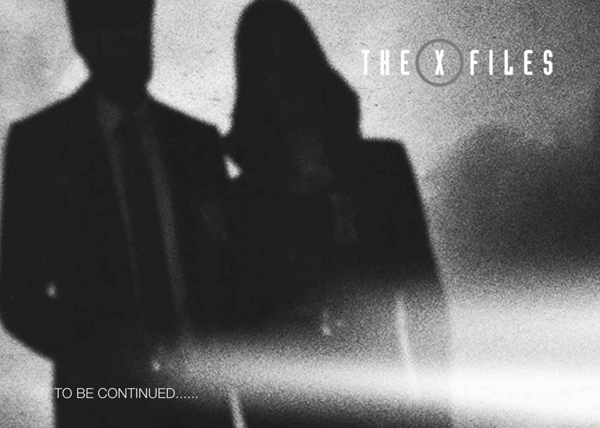
解説 親と子、兄弟、そして夫婦──複雑な形で描かれる人の絆の魅力
『Ｘ─ファイル』と家族の物語
平沢 薫（映画ライター）
実は『Ｘ─ファイル』はずっと家族の物語を描くシリーズでもあった。新シーズン第二話「変異」にはモルダーとスカリーそれぞれが、もしふたりの息子ウィリアムがいっしょに育ったらどうだっただろうと想像するシーンがあり、第四話「バンドエイド・ノーズ・マン」にはスカリーの母の死をめぐるドラマがあり、そして第六話「闘争 Ｐａｒｔ２」のラストには、これから息子ウィリアムがキーになるのではないかと思わせる台詞がある。しかし、これらの家族の物語は新シーズンで急に登場したわけではなく、振り返れば、もともと『Ｘ─ファイル』が家族の物語でもあったことに気づかされる。
まず、モルダー家を見ると、『Ｘ─ファイル』全体がモルダー一家の物語のようにも見えてくる。そもそもモルダーがエイリアンに興味を持ったのは、彼が一二歳の時に妹サマンサがエイリアンに誘拐されるのを目撃したからだった。そして、この事件が起きたのは、彼の父親のせいだった。彼の父はエイリアンと政府の陰謀に関係しており、関係者はみな家族をエイリアンに人質として差し出さなくてはならなかったので、子供たち二人のうちから、妹サマンサを選んで人質に出したのだ。彼がサマンサを選んだせいで、モルダーがエイリアンによる誘拐を目撃することになり、それが原因となって、後にモルダーは政府の陰謀を暴くことになる。この原因と結果の関係は、かなりドラマチックだ。
また、モルダーのエイリアンの謎を追求する熱意に拍車をかけたのも、彼の父親の行動だった。父親は、自分が陰謀に関わったことを後悔するようになり、ＦＢＩのＸ─ファイル課で働くようになった息子に陰謀ついて告白しようとする。そしてその直前に、それを阻止しようとする組織によって命を奪われてしまう。そのせいでモルダーは、それまで以上に陰謀を暴くことに熱心になる。モルダーの父親は、死によって息子に自分の意思を継がせたとも言えるのだ。
そして、モルダーの母親も、陰謀と無関係ではなかった。モルダーの母親は、今は夫と離婚して別居しているが、かつてシガレット・スモーキングマンと関係していたのだ。
さらに、モルダーの妹サマンサは、実にシーズン１「序章」からシーズン７「存在と時間Ｐａｒｔ２」までの長きにわたって、このドラマの重要なモチーフであり続ける。モルダーの思い出の中だけではなく、予言者の言葉の中にも登場し、またときには成人した姿で、ときには誘拐時の少女のままの姿で出現しては、モルダーを混乱させ続ける。そんな長期にわたって政府の陰謀に翻弄されたサマンサの魂を救済するためなのだろうか、「存在と時間 Ｐａｒｔ２」で最後にサマンサが登場するシーンの美しさは印象に残る。
一方、スカリー家の家族のドラマも描かれてきた。彼女の一家は政府の陰謀には関係していないが、スカリーの姉メリッサは、影の組織の陰謀に関連してスカリーの命が狙われたときに、彼女と間違えられて命を落としている。また、スカリー家はモルダー家とは異なり家族の絆が強いせいか、スカリーの家族を描くエピソードはエモーショナルな物語が多く、スカリーが、死んだ父親の姿を見るエピソード「海の彼方へ」は、シリーズ初期の名作の一つとなっている。
また別の、親と子の物語もある。それは、スモーキングマンと息子ジェフリー・スペンサーの物語だ。彼らのドラマの原点にも、エイリアンと政府の陰謀があり、この陰謀にはスモーキングマンの離婚した妻、ジェフリーの母親であるカサンドラも深く関係してくる。カサンドラは、エイリアンと政府によるハイブリットを生み出すための実験台第１号で、二五年間に渡って何度もアブダクトされてきた。母と育ったジェフリーは母を大事にし、母と自分を捨てた父スモーキングマンを嫌っていて、スモーキングマンも息子を不満に思っている。やがてジェフリーは父親に銃で撃たれるという悲惨な運命に見舞われるのだが、その際、スモーキングマンが息子を撃つときの台詞は「お前には父親を誇りに思って欲しかった。ビル・モルダーの息子がそうであるように」。後に判明するように、ジェフリーは一命を取り留め、スカリーの息子ウィリアムをめぐる父親の陰謀を阻止するため行動する。この父と息子のドラマも、かなりドラマチックだ。
そして何より、『Ｘ─ファイル』はモルダーと彼の生物学上の父親、スモーキングマンの物語でもある。スモーキングマンは、かつて親友だった男の妻と不倫し、モルダーはその結果、生まれたのだ。モルダーはシーズン７「第六の絶滅 Ｐａｒｔ２」までそれを知らなかった。スモーキングマンはシーズン９の最後に、モルダーに向かって彼の本心を話す。モルダーの捜査が政府の陰謀の核心に近づくたびに、影の政府のメンバーたちはモルダーを亡き者にするよう主張したが、スモーキングマンがそれを退けて、モルダーを生かしてきたが、その理由は、モルダーが絶望するところを見てから殺したかったからだと語るのだ。相手が、ただ自分の計画の邪魔をするだけの者だったら、このような強い感情を抱くことはないだろう。その邪魔者が、自分の不倫によって生まれた子供であることに対する複雑な思いが、こうした強い感情を生み出したのではないだろうか。そして、スモーキングマンのこの心理がなければ、モルダーはあっさり抹殺され、『Ｘ─ファイル』もそこで終了したはずなのだ。スモーキングマンがモルダーを憎んでいるからこそ、『Ｘ─ファイル』が存続しているとも言えそうだ。
そう考えると、死んだはずのスモーキングマンが、この新シーズンに登場するのも納得だ。彼がただの権力至上主義の悪役ではなく、複雑なキャラクターであることは、すでにシーズン４「紫煙」で描かれている。若い頃から政府の裏の陰謀に主要メンバーとして関わる一方で、誰一人友人もなく、休日には密かに自分の経験に基づくパルプ小説を執筆し、それが公表されたらＦＢＩに辞表を出そうと考えている、そんな人物でもあるのだ。その彼が新シーズンにも登場、第六話ではモルダーと再会し、自分の協力者にならないかと誘う。もちろん、モルダーはそれを断るが、スモーキングマンが健在である以上、またモルダーとスモーキングマンという、かなり屈折した形の父と息子の物語が、今後もさらに描かれていくのに違いない。
ところで、家族といえば、主人公コンビ、モルダーとスカリーを演じてた俳優２人の家族はどうなのだろう。やはり長く続いたシリーズだけに、ふたりの実生活にもさまざまな家族のドラマがあったようだ。
まず、モルダー役のデヴィッド・ドゥカブニー。父親は文筆業で出版人、母親は学校教師という家庭で育ち、プリンストン大学とイエール大学で英文学を学んでいる。両親と同じような世界を志しているところを見ると、おそらく両親との仲も良好だったのではないだろうか。
しかし、彼が築いた家庭は必ずしも順調なばかりではなかったようだ。彼は、『Ｘ─ファイル』放送中の九七年に『ディープ・インパクト』（98 ）、『ジュラシック・パークⅢ』（01 ）の女優ティア・レオーニと結婚。レオーニは二〇〇〇年放送のシーズン７「ハリウッドＡ．Ｄ．」に出演し、モルダーとスカリーをモデルに製作されたという設定の劇中映画でスカリー役を演じる女優の役を演じている。２人の間には、九九年に娘マデライン・ウェスト、〇二年に息子キッド・ミラーが生まれ、結婚生活も順調に思われた。が、〇八年、ドゥカブニーはセックス依存症の治療のため施設に入ったことを公表。その症状は、ネットのアダルトサイトの閲覧やチャットで長時間過ごしてしまうということだったようだが、妻レオーニとは別居。その後、一時は同居したが、また一一年頃から別居し、結局、一四年六月に離婚。子供たちはレオーニと暮らすことになった。ドゥカブニーは現在はシングルだが、子供たちとの仲は良好のようで、一緒に過ごしている姿がしばしばニュースサイトやＳＮＳで報じられている。モルダー捜査官は、息子ウィリアムと映画を見たり、ロケットを飛ばしたりすることを空想をするが、デゥカブニー自身は、モルダーが空想したことを実際にやったのではないだろうか。
ちなみに、ドゥカブニーは俳優業以外でも活動中。小説家として、一五年には日本でも翻訳が出版されたユーモア小説『ホーリーカウ』（小学館文庫刊）を刊行、一六年には小説「Bucky F＊cking Dent」を敢行している。また、ミュージシャンとしても活動し、一五年には初アルバム「Hell or Highwater」をリリース。一五年から一六年にかけて、全米と英国、ドイツ、フランス、スペイン、スイスなどを巡るツアーを行なっている。
一方、スカリー役のジリアン・アンダーソンの家族はどうだろう。父は映画のポスト・プロダクション会社経営者、母はコンピュータ・アナリスト。彼女は米シカゴで生まれるが、生まれて数ヶ月で一家はロンドン北部へ引越し、彼女が一一歳の時に米ミシガン州に引越す。彼女が高校時代から演劇を始めたのは、映画界で働く父親の影響があったのかもしれない。
そして『Ｘ─ファイル』は彼女の結婚にも大きな影響を与えている。彼女が結婚した相手は『Ｘ─ファイル』の美術スタッフ、クライド・クロッツだった。結婚はモルダー役のドゥカブニーの結婚より三年早い九四年。その翌年には、第一子となる娘パイパー・マルーを出産。この妊娠中に撮影された、シーズン２「昇天Ｐａｒｔ２」のスカリーがエイリアンに人体実験されるシーンでは、特殊メイクではない彼女自身の大きなお腹を披露している。しかしこの結婚は長続きせず、ふたりは九七年に離婚。〇四年にはドキュメンタリー映画監督のジュリアン・オザーンと交際がスタートするが、〇六年に破局。その後、ビジネスマンのマーク・グリフィスと交際し、〇六年には息子オスカー、〇八年には息子フェリックスが生まれたが、彼とも一二年に破局している。そんなわけでアンダーソンは現在シングルで、子供たち三人の共同親権を持っている。長女パイパーは、今回の『Ｘ─ファイル』新シーズンに美術スタッフとして参加。一六年の新シーズン放送時のインタビューでは、アンダーソンが九歳と七歳の息子に、これなら怖くないだろうと、コメディ・タッチのエピソード、シーズン５「吸血」を見せたところ、ふたりとも怖がってしまったと語っている。『Ｘ─ファイル』ではスカリー捜査官が息子ウィリアムを手放したことを後悔するが、アンダーソン自身は息子たちとの暮らしを満喫しているようだ。
さて、シリーズに戻ろう。今回の新シーズンを振り返ると、このドラマで最も焦点が当てられた家族といえば、何と言ってもウィリアムだろう。このモルダーとスカリーの息子は、姿こそ見せないものの、ふたりの言葉の端々に何度も登場し、ふたりの想像の中で姿を現わす。そして、シーズン最終話では、スカリーが、モルダーの病気を治すためにはウィリアムの幹細胞の注入が必要だと発言する。となると、今後製作されていく『Ｘ─ファイル』では、モルダーとウィリアム、スカリーとウィリアムという家族の物語が描かれていくのではないだろうか。『Ｘ─ファイル』は今後もまた、家族の物語であり続けるのに違いない。
用語解説＆トリビア集
＊注：テレビドラマ版に登場するアイテムについての解説です。
（台詞はＢＤ字幕版から引用）
■第５話「バビロン」
●「黙示録のトランペット」
モルダーとスカリーがＸ─ファイル課で見ている、人々が空から聞こえてくるトランペットのような音に耳を澄ましている映像は、実在する、超常現象を収録したものだと言われている映像。世界各地で収録されたという動画が、Youtubeなどにアップされている。これらの映像は、聖書のヨハネの黙示録に世界の終末には七人の天使がトランペットを吹くという記述があることから「黙示録のトランペット」「黙示録の音」などと呼ばれている。
●「ＦＢＩの嫌われ者だけよ」
ミラー捜査官とアインシュタイン捜査官がＸ─ファイル課を訪ねて「誰かいますか？」と尋ねた時のスカリーの返事がこれ。これは本作の「序章」でスカリーが初めてＸ─ファイル課を訪ねた時のモルダーのセリフと同じ。スカリーが「二三年間、ずっとこれが言いたくて」というのはこれを踏まえたもの。
●「モルダー」と「ミラー」その１
このエピソードには、モルダーのように超常現象を信じるミラー捜査官が登場する。ドイツ語の「モルダー＝mulder」は「鏡」の意味。英語の「鏡」は「ミラー＝mirror」、ミラー捜査官の苗字は「ミラー＝Miller」でスペルは違うが、音が似ている。
●「モルダー」と「ミラー」その２
モルダー役のデヴィッド・ドゥカブニーの息子の名前は、キッド・ミラー・ドゥカブニー。このセカンド・ネームのミラーは、ミラー捜査官と同じスペル（Miller）。
●「モルダー」と「ミラー」その３
ミラーは、ドゥカブニーの母と、クリス・カーターの義母の旧姓。
●モルダーが舌を出す
モルダーは、アインシュタイン捜査官に向かって、彼が薬を飲んだことを示すために舌を出す。この表情はアルバート・アインシュタイン博士が舌を出している有名な写真を踏まえたもの。
●エリック・ブレカー
ブレム捜査官を演じているエリック・ブレカーは『Ｘ─ファイル』の常連俳優。シーズン３「アポクリファ」、シーズン４「フラッシュバック」、シーズン５「クリスマス・キャロル」、同「エミリー」にも出演している。
●モルダーが横たわる緑の光線のある台
モルダーが幻視する場面の一つに、彼が緑色の光線のある黒い台に横たわっている光景があるが、これはシーズン２「昇天Ｐａｒｔ１」でモルダーがエイリアンにアブダクトされた時の光景にそっくり。
●ケロッグ捜査官
本作でスティーヴン・ロボが演じる捜査官の役名はケロッグ。この名前は、彼が人気ＳＦテレビシリーズ『コンティニアム ＣＰＳ特捜班』で演じている、未来から来たテロリストの役名マシュー・ケロッグを踏まえたもの。
●２人が手を繫いでいるラストシーン
このエピソードのラストシーンでモルダーとスカリーが手を繫いでいるが、ふたりが手を繫いでいるラストシーンはシリーズ全話中で三作のみ。シーズン６「トリップ」、シーズン７「ハリウッドＡ．Ｄ．」と本作の三作だ。
●エンディングの引きのシーン
エンディングの、モルダーとスカリーを映し出しているカメラが、どんどん引いていって最後には地球全体を映し出すという映像は、同じように、カメラがどんどん引いていった映画版第２弾『Ｘ─ファイル：真実を求めて』のエンディングに似ている。
第６話「闘争 Ｐａｒｔ２」
●オスカー・グリフィス
本作に登場する医師の名前オスカー・グリフィスは、スカリー役のジリアン・アンダーソンの長男の名前、オスカー・グリフィスと同じ。
●旧キャストの再登場
本エピソードにはモニカ・レイエス捜査官役のアナベス・ギッシュが再登場。新シーズンへの再登場は、ジョン・ドゲット役のロバート・パトリックと、国連事務総長特別代表代理マルタ・コバルービアス役のローリー・ホールデンにもオファーされたが、パトリックは興味がないからと出演を辞退し、ホールデンはスケジュールが合わなかったため出演できなかった。
●病院の廊下のロケ地
スカリー捜査官とアインシュタイン捜査官が病院の廊下で話をするシーンが撮影されたのは、シーズン１「序章」でも使われた建物。元は精神病院として使われていた建物で、『Ｘ─ファイル』では何度もロケ地として使われている。
●ランディ・ストーン
本作のエンド・クレジットで「オリジナル・キャスティング」としてクレジットされている人物。最初にモルダーとスカリーをキャスティングした人物で、故人。製作総指揮のクリス・カーターの希望によってクレジットされた。
●放送予定の変更
当初の放送予定は、第１話、第５話、第３話、第２話、第４話、第６話の順だった。現在のような順序で放送されるようになったのは、シリーズ初登場のミラー捜査官とアインシュタイン捜査官を連続して登場させた方がわかりやすいとの判断から。
【編著】 有澤真庭 Maniwa Arisawa
千葉県出身。アニメーター、編集者等を経て、現在は翻訳家・ところにより日本語教師。主な訳書に『アナと雪の女王』『ハッチ&リトルB 小さな男の子と大きなワンコの奇跡のような本当のお話』『スポットライト 世紀のスクープ カトリック教会の大罪』（竹書房刊）、『ディズニー・セラピー 自閉症のわが子が教えてくれたこと』（ビジネス社）がある。
平沢 薫 Kaoru Hirasawa
映画ライター。映画誌や映画サイトでの執筆のほか、『フランケンウィーニー』（竹書房）のノベライズや『ターミネーター：新起動／ジェニシス ビジュアルガイド』（ビジネス社）の翻訳等を手がける。
Ｘ－ファイル ２０１６【Ｖｏｌ．１～３合本版】 THE X-FILES ［電子書籍版］
発行日 ２０１７年１月１日 発行
脚 本 クリス・カーター
ジェームズ・ウォン
ダリン・モーガン
グレン・モーガン
アン・サイモン
マーガレット・フィアロン
編 著 有澤真庭
平沢薫
ブックデザイン 石橋成哲
発行者 後藤明信
発行所 株式会社竹書房
〒１０２－００７２
東京都千代田区飯田橋２－７－３
ＴＥＬ ０３－３２６４－１５７６
データ加工 出版デジタル機構
本書の一部あるいは全部を著作権者および株式会社竹書房に無断で複写・複製すること、および放送・上演・公衆送信（ホームページ上への掲載を含む）などは、法律で認められた場合を除き著作権の侵害となります。